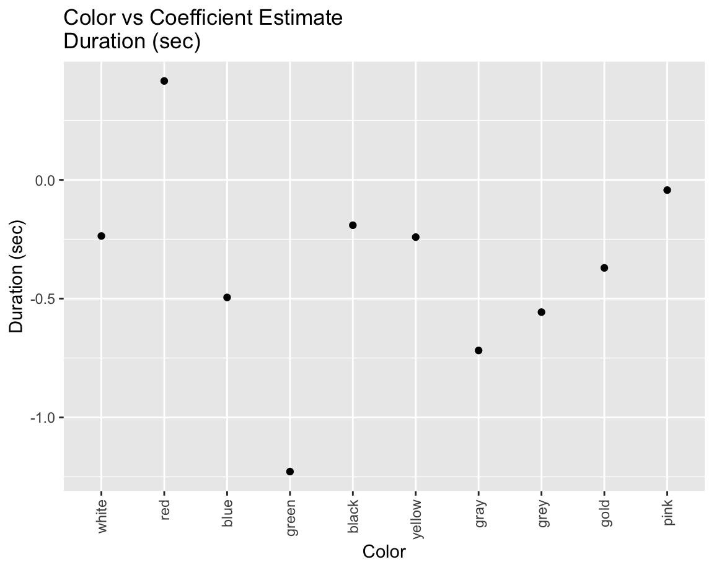

Text Analysis
Description
Text
analysis, or text mining, is an effective analysis of extracting
underlying patterns from unstructured text. It is an important topic in
Data Analysis, Deep Learning, Artificial Intelligence. From the dataset,
users are able to report on average of 100-200 words along with other
clean identification of the alien sightings. This page will identify how
the use of words for alien sightings relates to other variables such as
duration, time of day,
location(urban vs rural), and shape.
There are two approaches getting the text variables:
- Color Analysis: first color they mentioned in the text
- Text Analysis: which of the top 20 adjectives mentioned from the overall text are mentioned in the individual comments.
Each section has its own exploratory analysis and regression analysis.
This analysis uses the help of Spacyr package. A wrapper of the Python package Spacy.
library(tidyverse)
library(readr)
# Text Analysis
library(tidytext)
library(stringr)
library(purrr)
library(rlang)
library(data.table)
# Regression
library(glmnet)
library(modelr)
library(mgcv)
# Visuals
library(kableExtra)
library(leaps)
library(wordcloud)
library(RColorBrewer)
library(leaflet) # color & shape map
library(plotly) # Pie chart
library(MASS) # Boxplot
library(corrplot)
# Guide to set up Spacyr
# See full guide: https://cran.r-project.org/web/packages/spacyr/readme/README.html
# ---------------------------------
# Note: SpacyR is a wrapper to Python package Spacy.
# 0. Download Python
# 1. Download Spacy in Python: https://spacy.io/usage
# 2. Download Spacy in R: In CRAN console, use install.packages("spacyr")
# 3. In terminal, use the command to download language model through Python or Python3:
# a. python -m spacy download en
# b. python3 -m spacy download en
library(spacyr)Data Cleaning
The process of data cleaning for text analysis is given by the following:
- Retrieve the dataset from the master dataset
- Clean up comment/text section of the variable
- Removed all rows with invalid shape, duration, and comments/text variable.
- Some punctuations are recoded into Unicode decimal code,
i.e.
,to,and.to.. Comma and period are detected from the comments and convert back to their original form. Parenthesis, quotation marks, and all other unicode decimal codes are removed from the text.
- Some punctuations are recoded into Unicode decimal code,
i.e.
- Removed variables that are not necessary to the analysis.
clean_string = function(string){
# Detect and replace ','(comma) and `.`(period) from the string
new_str = gsub(",", ",", string)
new_str = gsub(".", ".", new_str)
new_str = gsub("&#[0-9]+|"|\\(|\\)"," ", new_str)
return(new_str)
}df_ufo = read.csv("data/ufo_clean.csv") |>
janitor::clean_names() |>
drop_na(text, shape, duration_clean) |>
filter(text != '', length(c) > 0, duration_clean > 0) |>
mutate(
year = map(date_time, \(txt) as.numeric(str_extract(txt, "^[0-9]{4}"))),
year = unlist(year)
) |>
dplyr::select(-city, -state, -posted, -closest_city, -duration)In total, there are 89274 observations we want to use in this
analysis. To optimize the storage and runtime, we will prepare 5000
samples and convert them into tokenized words. Spacyr can detect words
with similar roots, such as running, run, ran, into the same word. The
root word is called lemma. All words are converted into
lower case to avoid duplicates.
set.seed(1)
sample_text_df = df_ufo |>
sample_n(5000) |>
mutate(text = map(text, clean_string))spacy_initialize(model = "en_core_web_sm")
text_df = sample_text_df |>
mutate(
parsedtxt = map(text, spacy_parse)
) |>
unnest(parsedtxt) |>
mutate(
lemma = map(lemma, \(txt) str_extract(txt, "[:alpha:]+")) |>
tolower()
) |>
drop_na()
spacy_finalize()We get a size of 940924 total of words from the 5000 samples.
Color Analysis
Data Cleaning
We will use the function str_extract to find the first
color word in each sentence. If a text doesn’t mention any colors, it
will be removed from the analysis.Tthis method might pick up colors that
describe items other than the UFO, like place names or surroundings.
colors = colors()[grepl("[[:alpha:]]$", colors())]
color_df = df_ufo |>
mutate(
color = map(text,
\(str) str_extract(str, gsub(" ", "",
paste("(?<![:alpha:])",
colors, "(?![:alpha:])",
collapse="|"))))
)|>
filter(length(color) == 0 | !is.na(color) | color != '') |>
mutate(
shape = forcats::fct_relevel(shape),
location = forcats::fct_relevel(location)
)
total_colors = color_df |>
group_by(color) |>
summarize() |>
dplyr::pull(color)
color_df = color_df |>
mutate(color = factor(color, total_colors))Here are the most common colors described in the dataset
color_freq_df = color_df |>
group_by(color) |>
summarize(freq = n()) |>
arrange(desc(freq))
color_freq_df |>
kbl() |>
kable_material(c("striped", "hover")) |>
scroll_box(width = "100%", height = "400px")| color | freq |
|---|---|
| white | 16114 |
| red | 11628 |
| orange | 11588 |
| blue | 4943 |
| green | 4062 |
| black | 3533 |
| yellow | 2210 |
| gray | 706 |
| grey | 696 |
| gold | 395 |
| pink | 255 |
| purple | 245 |
| brown | 221 |
| snow | 170 |
| tan | 55 |
| navy | 54 |
| turquoise | 36 |
| violet | 36 |
| wheat | 23 |
| beige | 18 |
| magenta | 10 |
| salmon | 8 |
| maroon | 8 |
| cyan | 5 |
| chocolate | 5 |
| coral | 5 |
| plum | 5 |
| ivory | 4 |
| chartreuse | 4 |
| lavender | 3 |
| seashell | 2 |
| aquamarine | 2 |
| azure | 2 |
| linen | 2 |
| goldenrod | 1 |
| khaki | 1 |
| yellowgreen | 1 |
| tomato | 1 |
| honeydew | 1 |
| lightgreen | 1 |
Colors linked to higher wavelengths, notably white, red, and orange, are most prevalent, followed by those commonly associated with UFOs, like blue and green. On the other hand, less frequently observed colors in both UFO sightings and regular lights, such as pink, purple, brown, grey, and yellow, occupy the lower spectrum.
Using the colors we extracted from the data, we want to see if the color has any correlation with duration, shape, year, and the status of rural or urban.
Color vs Rural/Urban
Exploratory Analysis
We want to see if there is an association with the color and if the sighting is from rural or urban. Here are pie charts showing the composition of colors mentioned in rural or urban area.
color_urban_df = color_df |>
filter(location == "urban") |>
group_by(color) |>
summarize(urban_count = n()) |>
arrange(desc(urban_count)) |>
head(10)
color_rural_df = color_df |>
filter(location == "rural") |>
group_by(color) |>
summarize(rural_count = n()) |>
arrange(desc(rural_count)) |>
head(10)
color_urban_pie = color_urban_df |>
plot_ly(labels = ~color, values = ~urban_count, type = 'pie',
name = "Urban", marker = list(colors = ~color),
domain = list(row = 0, column = 0))
color_urban_pie = color_urban_pie |>
add_pie(data = color_rural_df, labels = ~color, values = ~rural_count,
name = "Rural", marker = list(colors = ~color),
domain = list(row = 0, column = 1))
color_urban_pie = color_urban_pie |>
layout(title = 'Distribution of Colors for Urban vs Rural',
grid=list(rows=1, columns=2),
xaxis = list(showgrid = FALSE, zeroline = FALSE,
showticklabels = FALSE),
yaxis = list(showgrid = FALSE, zeroline = FALSE,
showticklabels = FALSE))
color_urban_pieThere is no significant difference between the two pie chart, but we will use more formal analysis with the comparison.
Regression
Since both the independent and dependent variables are categorical, we will use Chi-Square test to see if there is a correlation between color in rural vs color in urban area.
chisq.test(color_df$color, color_df$location)##
## Pearson's Chi-squared test
##
## data: color_df$color and color_df$location
## X-squared = 114.49, df = 39, p-value = 2.39e-09It seems like there is significant evidence that there is a relationship between color and location. We will perform a logistic linear regression with color and location. Here are the results.
location_color_fit = glm(factor(location) ~ color, data = color_df, family = "binomial")
location_color_sum = location_color_fit |>
broom::tidy() |>
mutate(term = str_remove(term, "color")) |>
filter(term != "(Intercept)") |>
rename(color = term) |>
left_join(color_freq_df) |>
arrange(desc(freq)) |>
dplyr::select(-freq)
location_color_sum |>
kbl() |>
kable_material(c("striped", "hover")) |>
scroll_box(width = "100%", height = "400px")| color | estimate | std.error | statistic | p.value |
|---|---|---|---|---|
| white | 0.0268107 | 0.0288385 | 0.9296832 | 0.3525351 |
| red | 0.0373488 | 0.0310178 | 1.2041094 | 0.2285473 |
| blue | 0.1849228 | 0.0390613 | 4.7341675 | 0.0000022 |
| green | 0.0909007 | 0.0425509 | 2.1362817 | 0.0326565 |
| black | 0.2286639 | 0.0437198 | 5.2302132 | 0.0000002 |
| yellow | 0.0473507 | 0.0545448 | 0.8681063 | 0.3853361 |
| gray | 0.3329312 | 0.0854540 | 3.8960279 | 0.0000978 |
| grey | 0.2337082 | 0.0877637 | 2.6629263 | 0.0077464 |
| gold | -0.2613828 | 0.1308260 | -1.9979422 | 0.0457229 |
| pink | 0.1742439 | 0.1439833 | 1.2101675 | 0.2262146 |
| purple | 0.0126025 | 0.1528060 | 0.0824741 | 0.9342697 |
| brown | 0.2642234 | 0.1513440 | 1.7458467 | 0.0808376 |
| snow | -0.5995596 | 0.2213654 | -2.7084609 | 0.0067596 |
| tan | -0.1803011 | 0.3378210 | -0.5337179 | 0.5935367 |
| navy | -0.4034447 | 0.3658142 | -1.1028679 | 0.2700846 |
| turquoise | 0.6354484 | 0.3476895 | 1.8276317 | 0.0676049 |
| violet | 0.3850127 | 0.3624855 | 1.0621464 | 0.2881692 |
| wheat | -11.3600698 | 67.7137451 | -0.1677661 | 0.8667673 |
| beige | -0.4034447 | 0.6328402 | -0.6375143 | 0.5237899 |
| magenta | 0.8005281 | 0.6458741 | 1.2394492 | 0.2151792 |
| salmon | 0.1073809 | 0.8167945 | 0.1314663 | 0.8954065 |
| maroon | 0.1073809 | 0.8167945 | 0.1314663 | 0.8954065 |
| cyan | 0.8005281 | 0.9131374 | 0.8766787 | 0.3806612 |
| chocolate | -11.3600698 | 145.2297976 | -0.0782213 | 0.9376520 |
| coral | 0.8005281 | 0.9131374 | 0.8766787 | 0.3806612 |
| plum | -11.3600698 | 145.2297976 | -0.0782213 | 0.9376520 |
| ivory | 0.1073809 | 1.1549113 | 0.0929777 | 0.9259213 |
| chartreuse | 0.1073809 | 1.1549113 | 0.0929777 | 0.9259213 |
| lavender | -11.3600698 | 187.4908616 | -0.0605900 | 0.9516857 |
| seashell | -11.3600698 | 229.6284707 | -0.0494715 | 0.9605435 |
| aquamarine | 13.7720562 | 229.6284707 | 0.0599754 | 0.9521752 |
| azure | 1.2059932 | 1.4143856 | 0.8526623 | 0.3938466 |
| linen | 1.2059932 | 1.4143856 | 0.8526623 | 0.3938466 |
| goldenrod | -11.3600698 | 324.7436968 | -0.0349816 | 0.9720944 |
| khaki | 13.7720562 | 324.7436968 | 0.0424090 | 0.9661727 |
| yellowgreen | -11.3600698 | 324.7436968 | -0.0349816 | 0.9720944 |
| tomato | -11.3600698 | 324.7436968 | -0.0349816 | 0.9720944 |
| honeydew | -11.3600698 | 324.7436968 | -0.0349816 | 0.9720944 |
| lightgreen | -11.3600698 | 324.7436968 | -0.0349816 | 0.9720944 |
location_color_sum |>
head(10) |>
ggplot(aes(x = color, y = estimate)) +
geom_point() +
theme(axis.text.x = element_text(angle = 90, vjust = 0.5, hjust=1)) +
labs(title="Color vs Likelihood to Be Rural",
x ="Color",
y = "Coeffiecient Estimate\nColor vs Likelihood to Be Rural")
Grey and black has a positive effect on the likelihood of the sighting at a rural location, which could possibly to due with the surroundings of the rural setting. Colors that are more frequently mentioned, white, red, and yellow shows little to no effect on deciding if the location is rural or urban.
Color vs Duration
Different wavelength of the color can indicate low long the observers can see the “light”. We will investigate if we can map duration using color.
Adjusting Dependent Variable - Duration
Duration greater than 2 hours are treated as outliers and are excluded from this study.
We will use box cox to transform duration into a normal shape.
duration_color_df = left_join(color_df, color_freq_df)
duration_fit = lm(duration_clean ~ 1, data = duration_color_df)
par(mfrow = c(1,2))
plot(duration_fit)
par(mfrow = c(1,1))
boxcox(duration_fit)Since \(\lambda\) = 0, we will use log product of the duration during plotting
duration_color_df = duration_color_df |>
mutate(log_duration = log(duration_clean)) |>
filter(!is.infinite(log_duration), log_duration > 0)
duration_fit = lm(log_duration ~ 1, data = duration_color_df)
par(mfrow = c(1,2))
plot(duration_fit)

par(mfrow = c(1,1))
boxcox(duration_fit)Since the new plot has a \(\lambda\)
= 1, and the QQ plot approaches y = x, we will keep
log_duration as the adjusted dependent variable.
Exploratory Analysis
Plotting the logarithm of duration against the corresponding color count reveals a bell-shaped curve resembling a normal distribution, centered around a mean value of approximately 5. This distribution indicates that the samples are likely drawn randomly.
duration_color_df |>
dplyr::select(log_duration, color) |>
mutate(value = 1) |>
pivot_wider(
names_from = color,
values_from = value,
values_fn = list(value=list)) |>
mutate(across(!log_duration, \(j) map(j, \(i) sum(unlist(i))))) |>
pivot_longer(
-log_duration,
names_to = "color",
values_to = "freq"
) |>
ggplot(aes(y = as.numeric(freq), x = as.numeric(log_duration))) +
geom_point() +
labs(title="Distribution of Duration",
x ="Log of Duration (sec)", y = "Frequency")
This plot showcases the relationship between color and duration, with colors ordered by their frequency of mention. The graph suggests a logistic relationship. We want to see whether this connection is influenced by the frequency of colors appearing.
color_df |>
left_join(color_freq_df) |>
arrange(desc(freq)) |>
ggplot(aes(x = color, y = duration_clean)) +
geom_point() +
geom_smooth(method = "glm") +
theme(axis.text.x = element_text(angle = 90, vjust = 0.5, hjust=1)) +
labs(title="Color vs Duration (sec)",
x ="Color", y = "Duration (sec)")The graph below shows no relationship between frequency and duration, but the outliers of the duration increases as frequency of the color increases. This can conclude that frequency is just on the casual pathway between color and duration.
duration_color_df |>
group_by(color) |>
summarize(duration_clean, freq) |>
ggplot(aes(x = freq, y = duration_clean)) +
geom_point() +
geom_smooth(method = "lm") +
labs(title="Frequency of Observation vs Duration",
x ="Color", y = "Duration (sec)")
We want to test if there is any correlation between the frequency of the color mentioned and the duration of data. Here is the result from ANOVA test.
duration_color_fit = lm(duration_clean ~ color, data = color_df)
anova(duration_color_fit) |>
broom::tidy() |>
kbl() |>
kable_material(c("striped", "hover")) |>
scroll_box(width = "100%", height = "400px")| term | df | sumsq | meansq | statistic | p.value |
|---|---|---|---|---|---|
| color | 39 | 1645544240 | 42193442 | 3.332357 | 0 |
| Residuals | 57019 | 721959793127 | 12661741 | NA | NA |
The p value suggest significant evidence that there exist a relationship between duration and color.
Regression
Let’s now evalutate the linear regression between color and duration.
duration_color_fit =
lm(log_duration ~ color, data = duration_color_df)
duration_color_freq_fit =
lm(log_duration ~ color / freq, data = duration_color_df)
dc_sum = summary(duration_color_fit)
dcf_sum = summary(duration_color_freq_fit)
# Get the ANOVA table
anova(duration_color_freq_fit) |>
broom::tidy() |>
kbl() |>
kable_material(c("striped", "hover")) |>
scroll_box(width = "100%", height = "400px")| term | df | sumsq | meansq | statistic | p.value |
|---|---|---|---|---|---|
| color | 39 | 9968.434 | 255.600881 | 64.65838 | 0 |
| Residuals | 56520 | 223429.070 | 3.953098 | NA | NA |
dcf_sum = duration_color_freq_fit |>
broom::tidy() |>
mutate(term = str_remove(term, "color")) |>
filter(term != "(Intercept)") |>
rename(color = term) |>
left_join(color_freq_df) |>
arrange(desc(freq)) |>
dplyr::select(-freq)
broom::glance(duration_color_freq_fit) |>
kbl() |>
kable_material(c("striped", "hover")) |>
scroll_box(width = "100%", height = "400px")| r.squared | adj.r.squared | sigma | statistic | p.value | df | logLik | AIC | BIC | deviance | df.residual | nobs |
|---|---|---|---|---|---|---|---|---|---|---|---|
| 0.0427101 | 0.0420496 | 1.98824 | 64.65838 | 0 | 39 | -119106 | 238294 | 238660.7 | 223429.1 | 56520 | 56560 |
backward_fit = MASS::stepAIC(duration_color_freq_fit, direction = "backward",
trace = FALSE)
broom::glance(backward_fit) |>
kbl() |>
kable_material(c("striped", "hover")) |>
scroll_box(width = "100%", height = "400px")| r.squared | adj.r.squared | sigma | statistic | p.value | df | logLik | AIC | BIC | deviance | df.residual | nobs |
|---|---|---|---|---|---|---|---|---|---|---|---|
| 0.0427101 | 0.0420496 | 1.98824 | 64.65838 | 0 | 39 | -119106 | 238294 | 238660.7 | 223429.1 | 56520 | 56560 |
backward_fit |>
broom::tidy() |>
mutate(term = str_remove(term, "color")) |>
rename(color = term) |>
filter(color != "(Intercept)") |>
left_join(color_freq_df) |>
arrange(desc(freq)) |>
head(10) |>
ggplot(aes(x = fct_reorder(color, desc(freq)), y = estimate)) +
geom_point() +
theme(axis.text.x = element_text(angle = 90, vjust = 0.5, hjust=1)) +
labs(title="Color vs Coefficient Estimate\nDuration (sec)",
x ="Color", y = "Duration (sec)")
Both the full regression and the backward elimination regression models exhibit a 0.042 R-square, suggesting an exceptionally weak correlation. Notably, the estimates indicate that colors like green and grey substantially decrease the duration of sightings, while the color red, conversely, increases the duration of observations.
Color vs Shape
Exploratory Analysis
Here is an interactive map of the colors mentioned in the comments with their corresponding shapes with 500 samples.
html_legend <- "<img src='http://leafletjs.com/examples/custom-icons/leaf-green.png'>green<br/>
<img src='http://leafletjs.com/examples/custom-icons/leaf-red.png'>red"
icons_legend =
'<img src="./images/icons/changing.png"> changing<br/>
<img src="images/icons/chevron.png"> chevron<br/>
<img src="images/icons/cigar.png"> cigar<br/>
<img src="images/icons/circle.png"> circle<br/>
<img src="images/icons/cone.png"> cone<br/>
<img src="images/icons/cross.png"> cross<br/>
<img src="images/icons/cylinder.png"> cylinder<br/>
<img src="images/icons/diamond.png"> diamond<br/>
<img src="images/icons/disk.png"> disk<br/>
<img src="images/icons/egg.png"> eggl<br/>
<img src="images/icons/fireball.png"> firebal<br/>
<img src="images/icons/flash.png"> flash<br/>
<img src="images/icons/formation.png"> formation<br/>
<img src="images/icons/light.png"> light<br/>
<img src="images/icons/other.png"> other<br/>
<img src="images/icons/oval.png"> oval<br/>
<img src="images/icons/rectangle.png"> rectangle<br/>
<img src="images/icons/sphere.png"> sphere<br/>
<img src="images/icons/teardrop.png"> teardrop<br/>
<img src="images/icons/triangle.png"> triangle<br/>
<img src="images/icons/unknown.png"> unknown'
color_sample_df = sample_n(color_df, 500)
map =
color_sample_df |>
dplyr::select(city_latitude, city_longitude, color, shape) |>
leaflet() |>
addTiles() |>
addCircleMarkers(as.numeric(color_sample_df$city_longitude),
as.numeric(color_sample_df$city_latitude),
color = color_sample_df$color,
fillColor = ~color_sample_df$color,
radius = 10, fillOpacity = 0.6,
popup = ~color_sample_df$shape) |>
addMarkers( lng = as.numeric(color_sample_df$city_longitude),
lat = as.numeric(color_sample_df$city_latitude),
icon = ~icons[shape]) |>
addControl(html = icons_legend, position = "bottomright")
mapCorrelation Analysis
We will test if there is a relationship between color and shape.
chisq.test(color_df$color, color_df$shape)##
## Pearson's Chi-squared test
##
## data: color_df$color and color_df$shape
## X-squared = 9004.6, df = 858, p-value < 2.2e-16By the Chi-Square test, color and shape have significant p-value to say they are correlated.
shape_color_fit = glm(shape ~ color, data = color_df, family = "binomial")
shape_color_glan = shape_color_fit |>
broom::glance()
n = color_df |>
group_by(color) |>
nrow()
chi = shape_color_glan$null.deviance - shape_color_glan$null.deviance
pchisq(chi, n-1, lower.tail = TRUE)## [1] 0We get p value equals to zero using the chi score, which is resulted from the difference between nulldeviance and deviance. Since the p value is 0 < 0.05, we can say this model is a successful model of predicting shape using colors
This map illustrates the correlation between color and shape, represented by the fill of the numbers. Each number’s shading reflects the count of observations sharing the same color and shape, divided by the overall frequency of that particular color.
shape_color_df = color_df |>
group_by(shape, color) |>
summarize(obs = n())
shape_freq_df = color_df |>
group_by(shape) |>
summarize(shape_freq = n())
shape_color_df |>
left_join(color_freq_df) |>
left_join(shape_freq_df) |>
ggplot(aes(x = color, y = shape)) +
geom_tile(aes(fill = log(obs/(freq*shape_freq)))) +
theme(axis.text.x = element_text(angle = 90, vjust = 0.5, hjust=1),
text=element_text(size=8), legend.position = "right") +
labs(title="Correlation Matrix of Color and Shape",
x ="Color", y = "Shape", fill='Correlation') 
Less common colors like honeydew (disk), magenta (light), and khaki (egg) demonstrate a stronger correlation with specific shapes compared to other colors. There is also a high correlation with common combinations such as white light, white fireball, etc.. Conversely, rare combinations such as grey fireball, grey flash, brown light, etc., exhibit a lower correlation.
Color vs Time of The Day
Exploratory Analysis
color_time_df = color_df |>
mutate(
hour = map(date_time, \(text) str_extract(text, "(?<=T)[0-9][0-9]")),
minute = map(date_time, \(text) str_extract(text, "(?<=:)[0-9][0-9](?=:)")),
time = as.numeric(hour) * 60 + as.numeric(minute)
) |>
group_by(color, time) |>
summarize(n = n())
color_time_df |>
ggplot(aes(x = fct_reorder(color,n), y = time)) +
geom_point() +
geom_smooth() +
theme(axis.text.x = element_text(angle = 90, vjust = 0.5, hjust=1)) +
labs(title="Color vs Time of Day (sec)",
x ="Color", y = "Time of Day (sec)")
Upon examining the plot, no discernible connection emerges between color and the time of day, as the scores are uniformly distributed across all hours. Consequently, there will be no further comparison.
Text Analysis
Exploratory Analysis
Here are the wordclouds of the top nouns, adjectives, and verbs mentioned in the 5000 sample datasets.
adj_df = text_df |>
filter(pos == "ADJ") |>
group_by(lemma) |>
summarize(n = n()) |>
arrange(desc(n))|>
head(200)
noun_df = text_df |>
filter(pos == "NOUN") |>
group_by(lemma) |>
summarize(n = n()) |>
arrange(desc(n))|>
head(200)
verb_df = text_df |>
filter(pos == "VERB") |>
group_by(lemma) |>
summarize(n = n()) |>
arrange(desc(n))|>
head(200)


Top Nouns: These words primarily identify elements related to UFO sightings. They encompass the UFO itself (light, object), the setting (sky, night, minute, second), and items used to distinguish UFOs from conventional objects (star, plane, craft).
Top Verbs: These verbs describe actions and reactions of both observers and the UFO. They encapsulate observations (see, look, watch), movement (move, fly), and perceptions (appear, disappear).
Top Adjectives: These words are descriptive but don’t fall strictly into noun or verb categories. They are being analyzed for potential correlations with UFO sighting duration. They include descriptors like brightness (bright, high, large), colors (red, white, blue, orange, green, dark), quantity (few, many), clarity (clear, visible), and peculiarity (strange, different).
Wordcloud by Year
We can also check out the top adjectives mentioned by year
adj_old_df = text_df |>
filter(pos == "ADJ") |>
filter(year < 2000) |>
group_by(lemma) |>
summarize(n = n())|>
head(1000)
adj_now_df = text_df |>
filter(pos == "ADJ") |>
filter(year >= 2000) |>
group_by(lemma) |>
summarize(n = n()) |>
head(1000)
wordcloud(words = adj_old_df$lemma, freq = adj_old_df$n, min.freq = 3,
max.words=200, random.order=FALSE, rot.per=0.35,
colors=brewer.pal(8, "Dark2"), scale=c(3.5,0.7))
wordcloud(words = adj_now_df$lemma, adj_now_df$n, min.freq = 3,
max.words=200, random.order=FALSE, rot.per=0.35,
colors=brewer.pal(8, "Dark2"), scale=c(3.5,0.9))
Adjectives used before 2000 exhibit greater diversity and complexity, featuring descriptors like approximate, entire, exact, round, huge, and slow. In contrast, post-2000 adjectives tend to be brief, including terms such as clear, slow, and big. The prevalence of contemporary words like anonymous in post-2000 data may be attributed to the surge in UFO reports with the rise of internet usage. This shift could also be influenced by disparities in average education levels between individuals reporting before and after 2000, coupled with the increased availability of photographic information in recent years. Additionally, post-2000 messages tend to be more concise and direct, possibly to expedite information dissemination.
Data Cleaning
We want to see if mentioning certain adjectives will affect the duration of sighting. We will use the top 20 adjectives as our variables.
Here is a helper function that returns if the words mentioned in the
list is in text using str_detect.
detect_presence = function(list, text){
return_list = c()
for(i in list){
return_list = c(return_list, str_detect(text, i))
}
return_list
}
adj_top_list = adj_df |>
head(20) |>
dplyr::pull(lemma)Each of the text are checked if it contains the top 20 adjectives. We created a binary table indicating the presence of the adjective at the given observation. Here is a preview of 100 samples of the data.
adj_top_df = df_ufo |>
dplyr::select(duration_clean, text) |>
mutate(
text = tolower(text),
adj = map(text, \(txt) detect_presence(adj_top_list, txt))) |>
unnest_wider(adj, names_sep = "_")
adj_top_df = adj_top_df |>
setnames(old = colnames(adj_top_df) |> tail(20), new = adj_top_list, skip_absent = TRUE) |>
dplyr::select(-text)
adj_top_df |>
head(100) |>
right_join(df_ufo |> head(100)) |>
kbl() |>
kable_material(c("striped", "hover")) |>
scroll_box(width = "100%", height = "400px")| duration_clean | bright | white | other | same | red | large | high | small | few | low | green | close | more | blue | first | clear | orange | strange | dark | light | date_time | shape | text | city_latitude | city_longitude | dist | location | year |
|---|---|---|---|---|---|---|---|---|---|---|---|---|---|---|---|---|---|---|---|---|---|---|---|---|---|---|---|---|
| 18000 | TRUE | FALSE | TRUE | FALSE | TRUE | FALSE | FALSE | FALSE | FALSE | FALSE | FALSE | FALSE | FALSE | FALSE | FALSE | FALSE | FALSE | FALSE | FALSE | TRUE | 2019-06-23T20:00:00Z | light |
Steady flashing object with three lights hovered in sky Saw three bright lights in a row - the actual shape looked like a disk Several helicopters monitored it- one was still, others did circle around it, The lights seemed to change formation, but remained steady on - Husband is into planes and helicopters and confirmed it was not either, nor was it a drone What got our attention was the behavior of the helicopters that seemed to monitor it |
41.37394 | -72.92132 | 4.328807 | urban | 2019 |
| 15 | FALSE | FALSE | FALSE | TRUE | TRUE | FALSE | FALSE | FALSE | FALSE | TRUE | FALSE | TRUE | FALSE | FALSE | FALSE | FALSE | TRUE | FALSE | FALSE | TRUE | 2019-06-20T23:28:00Z | circle |
Group of several orange lights, seemingly circular. Lights did not blink. Object appeared to be like a plane, but the color and speed wasn’t correct, and it seemed closer and lower than a plane. Slow and steady course. After it disappeared into the clouds, the same exact thing happened about 1-2 minutes later (a second identical object on what seemed like the same flight path). ((NUFORC Note: Time indicated by witness may have been flawed. We have amended it, in order to indicate a nighttime sighting. Witness elects to remain totally anonymous; provides no contact information, so we are unable to confirm the time. PD)) |
38.05597 | -78.49448 | 66.427298 | rural | 2019 |
| 15 | FALSE | FALSE | FALSE | TRUE | TRUE | FALSE | FALSE | FALSE | FALSE | TRUE | FALSE | TRUE | FALSE | FALSE | FALSE | FALSE | TRUE | FALSE | FALSE | TRUE | 2018-11-22T21:45:00Z | triangle |
Saw a triangular aircraft that hovered approx. 25 yds above trees with a orb of white light, then the white light went green and left. UFO encounter happened on a backroad right outside the Lake Charles in the southern region of Calcasieu parish. It occurred at a stop sign in front of a cow field, November 22nd of 2018, at exactly 9:45p.m.. I was heading back to my house from my family’s thanksgiving party and my girlfriend was with me when we were at a stop sign and saw a white orb like light hovering about 25 yards above a tree line in the back of a cow field. We were to notice the white light was being emitted from a dark pyramid/triangular like aircraft and within 10 seconds the white light changed into a burst of green light and with the burst the aircraft vanished. Later that night at my house, I asked my girlfriend what she could remember. She said there was an outline of a triangular shape with light coming from the base, then there was a ball of green light and the figure disappeared. We tried to see if it matched the description of any military aircraft but the research came up em! pty mainly due to the way it hovered and the white and green ball of light. |
30.22337 | -93.20342 | 69.876628 | rural | 2018 |
| 120 | FALSE | FALSE | FALSE | FALSE | FALSE | FALSE | FALSE | FALSE | TRUE | FALSE | FALSE | FALSE | FALSE | FALSE | FALSE | FALSE | FALSE | FALSE | FALSE | TRUE | 2019-06-21T00:00:00Z | light |
Dropped in flashed a few times and shot off 5 or 6 balls of light, then shot back up extermly fast. Taking the dogs out; quite a sight over the house. ((NUFORC Note: Witness elects to remain totally anonymous; provides no contact information. PD)) |
42.23850 | -83.17830 | 10.730071 | rural | 2019 |
| 120 | FALSE | FALSE | FALSE | FALSE | FALSE | FALSE | FALSE | FALSE | TRUE | FALSE | FALSE | FALSE | FALSE | FALSE | FALSE | FALSE | FALSE | FALSE | FALSE | TRUE | 2019-10-17T20:48:00Z | triangle | Seen 2 odd lights moving from the west heading east. When it became aligned with my location it was extremely clear as a triangle rear with two lights linear off the point of the triangle rear. one light allumanited in the center of the triangle and turned off while passing by. The large object was completely silent and flew by slightly faster then a helicopter. I snapped 4 pictures. | 35.94967 | -84.01413 | 3.850745 | urban | 2019 |
| 120 | FALSE | FALSE | FALSE | FALSE | FALSE | FALSE | FALSE | FALSE | TRUE | FALSE | FALSE | FALSE | FALSE | FALSE | FALSE | FALSE | FALSE | FALSE | FALSE | TRUE | 1993-10-27T02:40:00Z | light |
Perfectly straight line left behind by a light traveling through the sky. We were driving home at approximately 2:40am when we saw a light traveling from north to south. It crossed the entire sky in a matter of minutes. After the light was gone a single thin laser like trail remained in the sky for another minute or so. This line was perfectly straight and stable. You could actually see it curve away with the radius of the atmosphere. There was no burning or anything, not like anything any of us have seen before. There were four of us in the car, we also called two of our friends and they confirmed that they saw the same phenomenon. Also keep in mind that all of us have seen a satellite before, and this object was traveling several times faster than that. |
43.54680 | -90.89580 | 82.035440 | rural | 1993 |
| 120 | FALSE | FALSE | FALSE | FALSE | FALSE | FALSE | FALSE | FALSE | TRUE | FALSE | FALSE | FALSE | FALSE | FALSE | FALSE | FALSE | FALSE | FALSE | FALSE | TRUE | 1996-12-10T21:00:00Z | other |
It disappeared in part of a second Coming home from a local restaurant I saw as I walked a low bright light coming down my street. As I walked through an apartment complex, at night, I lost sight of the light at times. When I walked to my street sidewalk the light stopped 8 to 9 yards from me. The light was 2 high beam car headlights on the front of a 16’ in diameter round object. It hovered about 14 feet from the ground over a pre-school playground. It had a stack in the center made of sectioned or paneled bubble glass. No light could be seen in the stack. The car headlights were the only light, and were about 4” apart. I observed it transfixed from the sidewalk for about 2 minutes when it budged a foot then in a part of a second disappeared northward. Only the tracer from the car high beam headlights let me know the direction it went. The tracer was open on the bottom, and closed on the top. It made a slight upward angle. |
33.78298 | -117.93160 | 4.283986 | urban | 1996 |
| 120 | FALSE | FALSE | FALSE | FALSE | FALSE | FALSE | FALSE | FALSE | TRUE | FALSE | FALSE | FALSE | FALSE | FALSE | FALSE | FALSE | FALSE | FALSE | FALSE | TRUE | 1998-09-12T02:00:00Z | cigar | ((NUFORC Note: No information provided by witness. PD)) | 37.15110 | -83.77930 | 71.893521 | rural | 1998 |
| 120 | FALSE | FALSE | FALSE | FALSE | FALSE | FALSE | FALSE | FALSE | TRUE | FALSE | FALSE | FALSE | FALSE | FALSE | FALSE | FALSE | FALSE | FALSE | FALSE | TRUE | 2008-11-20T00:00:00Z | disk |
I saw the object was exactly what a UFO is typically described as. Sombrero shaped with beaming light under Noticed an object hovering in top of a building. It had lights that gave away the object was shaped like a disk, with a light on top. The object then slowly started descending towards the top of the building then it stopped. A light came from under the object for a few seconds then the light went away. The object then started moving upwards away from the building for a few seconds then just instantly disappeared. |
40.75256 | -73.98446 | 2.333567 | urban | 2008 |
| 120 | FALSE | FALSE | FALSE | FALSE | FALSE | FALSE | FALSE | FALSE | TRUE | FALSE | FALSE | FALSE | FALSE | FALSE | FALSE | FALSE | FALSE | FALSE | FALSE | TRUE | 2009-10-22T19:00:00Z | light | Saw two stationary lights to the south about the 11 o’clock position spreed to be the same brightness of the brighter stars out. They were located together but to far apart to connected. They never moved they just started quickly fade away. I have never seen anything like this before. Skies are clear. | 31.87393 | -102.37104 | 120.144107 | rural | 2009 |
| 120 | FALSE | FALSE | FALSE | FALSE | FALSE | FALSE | FALSE | FALSE | TRUE | FALSE | FALSE | FALSE | FALSE | FALSE | FALSE | FALSE | FALSE | FALSE | FALSE | TRUE | 2010-06-15T02:30:00Z | disk |
Disturbing rumbling followed by loud whistling and finally a glimpse of the craft. My friend and I used to hang out nearly every day and as young teenagers tend to do, we would stay up into the wee hours of the night. We were in my friends basement one night watching a movie and all of a sudden there was a rumbling. Not a rumbling akin to an earthquake but more like if you live near a subway or airport. About twenty seconds after the rumbling started we started hearing a whistling noise that sounded almost exactly like the old sound clips they would play when dropping a bomb or heavy object. Naturally we were on high alert as were the dogs he had, they were going absolutely nuts. About ten seconds after we started to hear the whistling noise we saw a craft no more than 40 feet off the ground, right above the tree line. We watched the craft slowly hover away at a speed that you could keep up on a bicycle. We both have this very, very strange feeling, all the hairs standing up, the kind of feeling when you know something is wrong but don’t! know what exactly. At this point we are absolutely terrified and decide to pack up and move into my friend’s room (the next room over from where we were watching the movie) In the process of picking up or pillows and popcorn my friend was frozen, like a deer in headlights, staring out the window. He didn’t point, didn’t move, hardly reacted and quietly told me to look out the window. As I drew closer to the window I could see there clear as day what appeared to be a man staring back in at us. He looked like your average Joe except that you could see through him as if he was a ghost. I quickly pulled the shades and we both ran into his room and didn’t speak about the encounter ever again. |
42.12920 | -89.27020 | 13.869325 | rural | 2010 |
| 120 | FALSE | FALSE | FALSE | FALSE | FALSE | FALSE | FALSE | FALSE | TRUE | FALSE | FALSE | FALSE | FALSE | FALSE | FALSE | FALSE | FALSE | FALSE | FALSE | TRUE | 2011-07-20T23:30:00Z | circle |
Bright Blue light hovering in upward night sky for approx 2 min, then shot off to the right & quickly disappeared. While observing night sky from a dock, noticed Bright Blue light in the sky, Upward & Northern direction. The light appeared to hover initially, then after approximately 2 minutes, shot off to the right/northeastern direction & then disappeared. |
44.87340 | -85.98870 | 101.284060 | rural | 2011 |
| 120 | FALSE | FALSE | FALSE | FALSE | FALSE | FALSE | FALSE | FALSE | TRUE | FALSE | FALSE | FALSE | FALSE | FALSE | FALSE | FALSE | FALSE | FALSE | FALSE | TRUE | 2014-07-01T00:00:00Z | light |
bright star , going from standing still to moving and out of sight within 5 secounds my daughter and I, she was at least 5 or 6 years old. my memory of the date and time are around about. happen some time ago and I remember it was while she was out of school . she was interested in the stars, we had brought a small telescope. we where just standing next to our garage, that is connected to our house. we where staring at a bright star, that seemed close and seemed brighter then the north star. we stared for a min and the star just went from zero to gone in less then 5 seconds. never really talked about except with wife, who brushed aside. been wanting to share ever since . |
40.67463 | -75.24734 | 13.133025 | rural | 2014 |
| 120 | FALSE | FALSE | FALSE | FALSE | FALSE | FALSE | FALSE | FALSE | TRUE | FALSE | FALSE | FALSE | FALSE | FALSE | FALSE | FALSE | FALSE | FALSE | FALSE | TRUE | 2017-08-19T18:00:00Z | oval | I saw a flattened matte black oval sticking half way out of a tree three houses away. It must have been greater than 30 feet up and larger than a car. No windows, no sound, it didn’t move. I walked back and forth along my fence to try to determine what it was. I left to get my phone and tell my wife and when I came back it was gone. | 42.49202 | -83.01486 | 8.727097 | rural | 2017 |
| 120 | FALSE | FALSE | FALSE | FALSE | FALSE | FALSE | FALSE | FALSE | TRUE | FALSE | FALSE | FALSE | FALSE | FALSE | FALSE | FALSE | FALSE | FALSE | FALSE | TRUE | 2019-02-12T15:15:00Z | disk |
Floating metallic disk/almond I finally go one on camera!! I was out shoveling the sidewalk of the 11+ inch’s of snow and I stopped to itch my nose. Just then this saucer shaped object “floated “ over. It did emerge from the clouds. I watch for a while… I was mesmerized, till I released I could record it. I ripped my chunky gloves off and tried to film it. I have the vid. I thought It was a plane at first but then maybe a drone for the newspaper about the snow but no. It was silent and a bit erratic. I don’t think it’s a ballon. It was too big ( estimation of the size of a small crop duster of sorts). Planes fly over all the time. There is an airport in town. Portage WI |
43.55000 | -89.47380 | 32.556621 | rural | 2019 |
| 120 | FALSE | FALSE | FALSE | FALSE | FALSE | FALSE | FALSE | FALSE | TRUE | FALSE | FALSE | FALSE | FALSE | FALSE | FALSE | FALSE | FALSE | FALSE | FALSE | TRUE | 2019-03-02T06:00:00Z | other | On the date above I was at work on a break and noticed what i thought was a flock of birds until I realized how hi up they were and the way they were moving which is when I got my phone and took a few pics and a 19 second video so I could zoom in and get a better look. Since I had to get back inside and back to work I can’t say exactly how long they stayed visible | 43.56875 | -116.56108 | 16.664987 | rural | 2019 |
| 25 | TRUE | FALSE | FALSE | FALSE | FALSE | FALSE | FALSE | TRUE | TRUE | FALSE | FALSE | FALSE | FALSE | FALSE | TRUE | FALSE | FALSE | FALSE | FALSE | FALSE | 2019-07-06T00:30:00Z | sphere |
Looked like a star at first glance, got brighter and bigger, then dimmer and small again. It was stationary the whole time. Then as it got bright one time, it started dripping liquid metal or something to that effect. It dropped a few times then caught fire. ((NUFORC Note: Witness elects to remain totally anonymous; provides no contact information. PD)) |
33.79409 | -116.94999 | 17.144937 | rural | 2019 |
| 2700 | FALSE | FALSE | FALSE | FALSE | FALSE | FALSE | FALSE | FALSE | FALSE | TRUE | FALSE | FALSE | FALSE | FALSE | TRUE | FALSE | FALSE | FALSE | FALSE | TRUE | 2019-07-06T02:00:00Z | light |
Light in the sky moving from south to north with weird up and down movements. Watch it for about 45 min & then light faded away. I woke up in the middle of the night and couldn’t fall back asleep so I was just staring out my window. There was what I thought was a plane that was very far away or a star because when I first saw it it was blinking kind of like a plane or a distant star would. But I realized that it was moving but it wasn’t moving like a plane at all which is what caused me to continue watching it. Eventually the light stopped blinking and just stayed lit. The movements seemed to be very random. The best way I can describe it is that it was moving very slowly from the south to the north and it would randomly make sudden up and down movements. Then after watching it for about 45 minutes the objects light all of a sudden faded very fast and it was gone. |
47.69590 | -117.10780 | 15.248573 | rural | 2019 |
| 300 | FALSE | FALSE | FALSE | FALSE | FALSE | FALSE | FALSE | FALSE | FALSE | TRUE | FALSE | FALSE | FALSE | FALSE | FALSE | FALSE | FALSE | FALSE | FALSE | FALSE | 2019-06-28T21:00:00Z | circle |
Glowing circle moving through the sky. Canton, CT. My boyfriend and I were sitting on our deck with our daughter and we saw a glowing circle move across the sky and we witnessed it pass over our house and disappear into the night sky. |
41.84090 | -72.89780 | 12.184874 | rural | 2019 |
| 300 | FALSE | FALSE | FALSE | FALSE | FALSE | FALSE | FALSE | FALSE | FALSE | TRUE | FALSE | FALSE | FALSE | FALSE | FALSE | FALSE | FALSE | FALSE | FALSE | FALSE | 1969-05-30T20:30:00Z | light |
1969 olive branch Mississippi large round light no sound moved away at tremdious speed In summer 1969 I was on top of a silo checking feed level when my friend pointed to look up a large bright white light was right over my head was no sound no wind did not know how long it had been there i was scared stiff it was not moving just hovering then it left with such speed I have never seen before nothing I have ever seen move so fast no sound nothing have never seen anything like that before or sense it was just a ball of bright light never a sound or anything couldn’t see anything but a round bright light it’s been bothering me for 50 years now nothing from this world could perform like this object did |
34.94410 | -89.85440 | 13.008543 | rural | 1969 |
| 300 | FALSE | FALSE | FALSE | FALSE | FALSE | FALSE | FALSE | FALSE | FALSE | TRUE | FALSE | FALSE | FALSE | FALSE | FALSE | FALSE | FALSE | FALSE | FALSE | FALSE | 2019-10-15T18:45:00Z | oval |
Bright, Oval Light in the Sky that hovered, and then disappeared quickly. During a drive I noticed an Oblique Oval in the sky. It was brighter than anything I’ve seen and just continued to hover in one place for a matter of a couple of minutes. (Not sure how long it was there before I noticed it) It did not move an inch, it seemed inhuman. When the craft began to move it disappeared within a matter of seconds. I watched it turn from a bright, non-moving object. To a distant fading light within a good 5 to 10 seconds of movement. |
35.40989 | -80.59519 | 2.612293 | urban | 2019 |
| 300 | FALSE | FALSE | FALSE | FALSE | FALSE | FALSE | FALSE | FALSE | FALSE | TRUE | FALSE | FALSE | FALSE | FALSE | FALSE | FALSE | FALSE | FALSE | FALSE | FALSE | 2019-10-03T03:00:00Z | flash | The object apeared out of no where and left a rune looking thing in the sky. I felt very dizzy and my friend threw up. No one else seemed to notice or deel anything. | 28.51220 | -81.37852 | 3.486843 | urban | 2019 |
| 300 | FALSE | FALSE | FALSE | FALSE | FALSE | FALSE | FALSE | FALSE | FALSE | TRUE | FALSE | FALSE | FALSE | FALSE | FALSE | FALSE | FALSE | FALSE | FALSE | FALSE | 1975-08-22T21:30:00Z | circle |
The event occurred on the final night of sleep-away camp, August 22, 1975 at Raquette Lake Boys Camp, Raquette Lake New York. All staff and campers (boys and girls camp, about 200 people) attended the final bonfire/goodbye ceremony, held in the middle of the soccer field. The night was perfectly clear, with no cloud cover. During the owner’s speech, 3 bright green round disks approached from different directions, came together, formed an equilateral triangle, and began to hover approximately 10,000 feet above us. There was no sound. Within a minute or so, the craft began to spin, maintaining their formation. They remained above us for possibly 5 minutes, before shooting off in the originating directions. Again, there was no sound. |
43.81320 | -74.65200 | 90.072965 | rural | 1975 |
| 300 | FALSE | FALSE | FALSE | FALSE | FALSE | FALSE | FALSE | FALSE | FALSE | TRUE | FALSE | FALSE | FALSE | FALSE | FALSE | FALSE | FALSE | FALSE | FALSE | FALSE | 1989-10-24T21:24:00Z | formation | It started with a blinking white light that divided up and looked like a bunch of drones flying from all directions. At one point counted up to 13. | 40.85905 | -74.15504 | 9.335626 | rural | 1989 |
| 300 | FALSE | FALSE | FALSE | FALSE | FALSE | FALSE | FALSE | FALSE | FALSE | TRUE | FALSE | FALSE | FALSE | FALSE | FALSE | FALSE | FALSE | FALSE | FALSE | FALSE | 1994-06-17T20:00:00Z | disk | My parents were living in Glennwood apartments, I was inside they were on the 2nd floor balcony when they shouted out to come see what was outside, i remember date specificially bc oj simpson was in his broncho on tv, so i go out and a here is this large disk moving silently and slowly above the tree lines from west to east. it was about a football field away and a half a football big. It had some sort of thin light all around it, kind light blue/whiteish, a very matt light, and inside was very dark and black and matt as well. no relection at all no matter how much i tried to look at the black area, it almost like a black void. it was dusky out, no sound, and very slow moving. It eventually moved out of sigh and went over rt 9. I felt almost paralyzed in fear and went inside to hide. To this day I tell the story. No way this was of this world. I had never believed in aliens before, brought up very strict christian. This was life changing. | 40.39130 | -74.32470 | 16.140639 | rural | 1994 |
| 300 | FALSE | FALSE | FALSE | FALSE | FALSE | FALSE | FALSE | FALSE | FALSE | TRUE | FALSE | FALSE | FALSE | FALSE | FALSE | FALSE | FALSE | FALSE | FALSE | FALSE | 2003-06-30T08:00:00Z | teardrop |
An object flew alongside our car. I feel a bit silly reporting this event now, as it happened sometime around the year 2003. My daughter and I were in the car driving down a dirt road very early in the morning. Our speed was around 20-25 mph. It was a long straight road with clear fields on each side. In the distance, a mile or so, there was a bank of tall poplar trees on one side. The road ran north to south, the trees east to west. We were delivering flowers to a remote ranch and driving north towards the trees. Suddenly I saw or sensed something to my left and turned to see an object, perhaps twice the size of my car just feet away from us, flying along with us. The object was so close I feared I could swerve just slightly and hit it. I tried to keep my eyes on the road but was a bit mezmorized by it and wanted to watch it. There were no windows that we could see, it was a dark dirty gray, not shiny and the metal seemed a bit ruddy. There were wide metal strips and there w! ere circles on the strips. It looked heavy. I continued to drive and felt a bit panicked because it was so close and I wanted to keep looking at it but also stay on the road. It flew along side of us for a half mile, at least, maybe more. Suddenly it took off. So fast, I cannot possibly calculate. It was headed right for those trees and I thought for a second it was going to crash into the Poplars but instead it’s path curved up and over disappearing beyond the trees. We never saw it again. Once it had disappeared, my attention turned to my daughter sitting in the passenger seat. My daughter had always been terrified of any mention of aliens from outer space She had, for years been terrified of the movie, ET. I slammed on the breaks and turned to her. I said, “are you okay?” She answered, “I feel safe.” I found this to be a curious and interesting response. We continued a few miles down the road and delivered the flowers , then drove home. I called my brother and told him of the experience. He suggested we go into separate rooms and draw what we had seen then compare our drawings. We did this and the results were interesting. We had indeed drawn the same image, but more than just the image we had both colored our UFO drawing the color orange. The object was a dark gray and I cannot explain why I picked up the orange crayon. For reasons that need not be explained, I became separated from my daughter for 14 years. We recently were re-united. After spending a day together, I asked her if she remembered seeing the UFO and she did, she remembered it in great detail, the trees, and the way it gracefully curved up and over. She told me the whole story as if it had happened yesterday. In all these years since, I have never told anyone, except my brother, about the event. Who would believe such a story? But, it’s true and it was a comfort to hear my daughter recall it exactly as I had remembered that morning. |
38.99310 | -105.06030 | 18.294356 | rural | 2003 |
| 300 | FALSE | FALSE | FALSE | FALSE | FALSE | FALSE | FALSE | FALSE | FALSE | TRUE | FALSE | FALSE | FALSE | FALSE | FALSE | FALSE | FALSE | FALSE | FALSE | FALSE | 2007-09-01T17:00:00Z | circle |
2007 Circular Object with 3 lights across i87 Hightway in daylight In 2007, driving to Saratoga Springs from Tuxedo, New York spotted a circular object in broad daylight. Right across i87 Highway a shiny metal circular object; coasted over the tree light; wide as the whole highway across. 3 circular lights on the bottom of the craft. Funny part is I saw right light poles for the airport nearby. |
41.53329 | -74.04847 | 12.958481 | rural | 2007 |
| 300 | FALSE | FALSE | FALSE | FALSE | FALSE | FALSE | FALSE | FALSE | FALSE | TRUE | FALSE | FALSE | FALSE | FALSE | FALSE | FALSE | FALSE | FALSE | FALSE | FALSE | 2014-10-04T03:00:00Z | other |
My sister was getting off of work at a local bar. We took the same route home we’ve taken for years…thrrough our residential area we spotted a strange red light. We both kinda made a comment like, strange place for a new phone tower. Well, as we got closer we realized the light was attached to a giant almost catchers mound shape object larger than the house. It had one pulsating red light toward the bottom. It was darker than the sky, and made no sound while hovering. It was hovering directly over a home. A home. No sound, just hovering. Truly terrifying. We still have trouble sleeping. |
35.11701 | -106.62213 | 1.592935 | urban | 2014 |
| 300 | FALSE | FALSE | FALSE | FALSE | FALSE | FALSE | FALSE | FALSE | FALSE | TRUE | FALSE | FALSE | FALSE | FALSE | FALSE | FALSE | FALSE | FALSE | FALSE | FALSE | 2017-10-01T22:00:00Z | fireball |
The realization of the anomolie & the eeery silence, & both of us seeing this, scared us so, that we ran inside. My friend & I were checking out the sunset, when we saw a fireball hovering in the sky, it lasted for a couple minutes,then reappeared and slowly went to the East, for another couple minutes, not going that far, then quickly got brighter, and seemed to zoom towards us, then flashed brighter & just disappeared. |
45.75620 | -91.95770 | 78.800217 | rural | 2017 |
| 300 | FALSE | FALSE | FALSE | FALSE | FALSE | FALSE | FALSE | FALSE | FALSE | TRUE | FALSE | FALSE | FALSE | FALSE | FALSE | FALSE | FALSE | FALSE | FALSE | FALSE | 2018-08-06T00:50:00Z | cigar | It can slowly through the gorge about eye level with the Cape Horn Lookout. It had four orange light on the top of it, one in each corner. | 45.59590 | -122.31040 | 16.911579 | rural | 2018 |
| 300 | FALSE | FALSE | FALSE | FALSE | FALSE | FALSE | FALSE | FALSE | FALSE | TRUE | FALSE | FALSE | FALSE | FALSE | FALSE | FALSE | FALSE | FALSE | FALSE | FALSE | 2018-11-22T03:00:00Z | light | Lights in the sky moved to a similar spot in thr sky frome all directions and took the same line going east in groups of 8 form different spots in ihe sky.I counted 38 before running to get my daughter to see. She says that they are spaceships. | 33.50379 | -112.07708 | 4.775369 | urban | 2018 |
| 8 | FALSE | FALSE | FALSE | FALSE | TRUE | FALSE | FALSE | FALSE | FALSE | TRUE | FALSE | FALSE | FALSE | FALSE | FALSE | TRUE | FALSE | FALSE | FALSE | FALSE | 2019-07-19T11:22:00Z | chevron | heading south on CA hwy 5, a V shaped glowing object with tail, appeared to fall into the top of Mt Shasta. 3/4 moon, clear night sky. | 41.31740 | -122.32400 | 178.397689 | rural | 2019 |
| 20 | FALSE | FALSE | FALSE | FALSE | FALSE | FALSE | FALSE | FALSE | FALSE | FALSE | FALSE | FALSE | FALSE | FALSE | FALSE | FALSE | FALSE | FALSE | FALSE | TRUE | 2019-07-12T12:45:00Z | circle |
We looked up and saw what we thought was a star or a planet then it took off and became a dim light, then nothing…. ((NUFORC Note: Witness elects to remain totally anonymous; provides no contact information. PD)) |
48.40490 | -114.34720 | 151.300672 | rural | 2019 |
| 20 | FALSE | FALSE | FALSE | FALSE | FALSE | FALSE | FALSE | FALSE | FALSE | FALSE | FALSE | FALSE | FALSE | FALSE | FALSE | FALSE | FALSE | FALSE | FALSE | TRUE | 1996-06-01T00:00:00Z | other |
As I was putting my jacket on in my upstairs apartment I looked out my window in the West. In the distance at about 600 yards I saw what I first thought was a jet then I thought it was a comet. It slowly traveled along at about 10 mph when it turned upward and completely disappeared into outer space, as its 20 foot tail followed. It was all a bright white. 7 seconds later an object showed up in one second, as it stopped and hovered. It looked like a beautiful precious multi-colored stone, and was about a quarter of an inch in diameter. In 3 seconds it disappeared in part of second about where the comet object did. Three days later, at about the same time of day, I was walking home from the library. As I was crossing a field, as a shortcut home I saw it again. Only this time it filled one-eighth of the sky in the north. It was about 120 feet high and traveling at about 10 mph westward. In about 10 seconds it turned upward, and disappeared into outer space, as its vaporous tail followed with it. Since then I saw this object in my area 4 or 5 times at about 6,000 feet altitude. I could not mistake them for jets. |
33.78298 | -117.93160 | 4.283986 | urban | 1996 |
| 20 | FALSE | FALSE | FALSE | FALSE | FALSE | FALSE | FALSE | FALSE | FALSE | FALSE | FALSE | FALSE | FALSE | FALSE | FALSE | FALSE | FALSE | FALSE | FALSE | TRUE | 2001-05-30T12:00:00Z | circle |
This encounter happened when I was only 5 years old, but I remember everything I saw and where I was/where it was. My mother and I were driving on 6-91, toward the meriden mall. While passing castle Craig. It was a disc like shape. The center of it was black with a red outer ring around it. It was directly over castle Craig. I told my mom to look, but it was gone. It was spring or summer of 2001 because I remember it to be warm and I was wearing shorts. |
41.53309 | -72.80060 | 12.293844 | rural | 2001 |
| 600 | FALSE | FALSE | FALSE | FALSE | TRUE | FALSE | FALSE | FALSE | FALSE | TRUE | FALSE | TRUE | FALSE | FALSE | FALSE | FALSE | FALSE | FALSE | TRUE | FALSE | 2019-05-13T17:00:00Z | cigar |
Traveling northbound on I-65 close to the Zionsville exit when we looked to the east and saw dark charcoal colored cigar shaped object in the eastern, and we also saw two fighter jets that were also flying at low altitude at a slow speed and were west of us and flew over I-65 going east towards the cigar shaped object. ((NUFORC Note: Witness elects to remain totally anonymous; provides no contact information. PD)) |
39.95730 | -86.27700 | 14.254281 | rural | 2019 |
| 600 | FALSE | FALSE | FALSE | FALSE | TRUE | FALSE | FALSE | FALSE | FALSE | TRUE | FALSE | TRUE | FALSE | FALSE | FALSE | FALSE | FALSE | FALSE | TRUE | FALSE | 2019-10-15T04:00:00Z | circle | Orange object, it lasted about 10 minutes hovering slightly going up and down. | 38.28650 | -104.64274 | 40.612990 | rural | 2019 |
| 600 | FALSE | FALSE | FALSE | FALSE | TRUE | FALSE | FALSE | FALSE | FALSE | TRUE | FALSE | TRUE | FALSE | FALSE | FALSE | FALSE | FALSE | FALSE | TRUE | FALSE | 1997-08-01T20:30:00Z | light | Light over chesapeake bay appeared to be a star we stepped off porch to get a closer look and light came down out of the sky and hovered in front of us we are unsure of the length of time as we stood in amazement we only recall the light came at super fast speed and came before us it was as curious about us as we were about it. after appearing before us It zipped back up in the sky and disappeared at super sonic speed it did not move in mechanical like direction and was smooth and silent neither myself or my sister in law recall the length of time that had lapsed other than asking each other if we saw the object and experienced the same thing we barley discuss it but decided to report it because we are absolute sure we saw it | 38.93680 | -76.34710 | 29.186157 | rural | 1997 |
| 600 | FALSE | FALSE | FALSE | FALSE | TRUE | FALSE | FALSE | FALSE | FALSE | TRUE | FALSE | TRUE | FALSE | FALSE | FALSE | FALSE | FALSE | FALSE | TRUE | FALSE | 1971-01-15T22:00:00Z | sphere | My friend and I were on a country highway between Sioux City and Westfield, Iowa. We were coming up on a farmer’s house and both of us yelled out, “What’s that”? We pulled off to the side of the road and turned the car off. We watched A UFO hovering over the farmer’s house, very close to the roof. Then it slowly started moving towards us. We just sat in our car and watched. It moved to my side of the car and stopped. I believe it was looking at us and we at them. It had a few small lights and the sound didn’t sound like anything I have heard before and was very quiet. After a couple minutes it started moving across the highway and over a corn field. After a matter of seconds it went very fast and disappeared in the distance over corn fields. Signed Observer. | 42.49564 | -96.38235 | 74.206843 | rural | 1971 |
| 600 | FALSE | FALSE | FALSE | FALSE | TRUE | FALSE | FALSE | FALSE | FALSE | TRUE | FALSE | TRUE | FALSE | FALSE | FALSE | FALSE | FALSE | FALSE | TRUE | FALSE | 2010-07-15T23:00:00Z | light |
5 bright lights hovering in sky right about tree line Me and a friend were walking outside at night and saw five or six round shaped, yellow/white lights silently hovering in the sky. They were very bright. The lights would fade in and out and sometimes slowly hovering up and down for about ten minutes until finally fading out of side. They were right above the tree line. Time seemed to stand still during the time the lights were hovering. Later, my brother came home and said he had spent the last 30 minutes driving around chasing UFOs in the sky and described the same exact lights. |
33.93780 | -83.50680 | 53.857329 | rural | 2010 |
| 600 | FALSE | FALSE | FALSE | FALSE | TRUE | FALSE | FALSE | FALSE | FALSE | TRUE | FALSE | TRUE | FALSE | FALSE | FALSE | FALSE | FALSE | FALSE | TRUE | FALSE | 2012-06-01T00:00:00Z | triangle |
Triangle craft low & slow San Antonio, Texas Sitting in my backyard having a drink looked out to my right (north east) and looked at the stars. Noticed three stars in a row with a fourth star perpendicular to the three in a row. The star looking lights were moving towards me, (heading west towards San Antonio, TX, pretty much right down I-35 south bound. As I stared I couldn’t believe what I was seeing so I ran inside and grabbed my roommate who was cooking in our kitchen. I ran him outside and pointed and said “What is that?!” He squinted for a few seconds and confused under his breath said, “that’s..that’s a UFO”. The object continued towards us, over our heads and then towards the city lights on the horizon of San Antonio. There are two Air Force bases in San Antonio, one of which was near by our house we rented, but the craft was silent, moving way too slow to be an airplane and when it got close enough it just looked like a triangle that was pure black. I couldn’t tell the difference between the ni! ght sky and the craft besides the outline of the shape of a triangle and the 4 white lights that remained on and never dimmed, blinked or showed any kind of signal. For size comparison I would say if I held up a basketball right over my head it was the size of the ball but flying low, maybe 3,000-5,000 feet at best guess. My roommate will still claim he could hear a faint hum from the craft but it didn’t sound like a propeller from a drone or plane or a jet engine…it was a quiet wave like sounding hum. The craft disappeared into the limelight of the city and I never saw it again. |
29.57380 | -98.22920 | 19.279340 | rural | 2012 |
| 600 | FALSE | FALSE | FALSE | FALSE | TRUE | FALSE | FALSE | FALSE | FALSE | TRUE | FALSE | TRUE | FALSE | FALSE | FALSE | FALSE | FALSE | FALSE | TRUE | FALSE | 2017-02-15T02:00:00Z | sphere | My brother law and myself were in my driveway finishing up his truck when the neighbors dog started going crazy.we both stood up to see what the dogs barking about when we seen a round green object flying thru the trees at speeds we never seen before. As we stood there we both carry pistols it shot from their back yard over to my driveway in a blur when it slowed down to almost a complete stop going by in slow motion we were both speechless. We both began to draw our guns when it took off in a literal blur. It looked almost liquidish if thats a term lol. It was not even 6 feet from us and we both got warm and it was 30 degrees. We took the truck for a test drive and we seen it again. It was running parallel in the woods beside at 50 and then shot above the tree tops and in a blur it took off at an incline and went out of sight. We were both scared. We told our family about it and others had mentioned seeing things but was afraid to talk about it. | 38.93450 | -84.54810 | 14.457386 | rural | 2017 |
| 600 | FALSE | FALSE | FALSE | FALSE | TRUE | FALSE | FALSE | FALSE | FALSE | TRUE | FALSE | TRUE | FALSE | FALSE | FALSE | FALSE | FALSE | FALSE | TRUE | FALSE | 2019-04-03T22:30:00Z | light |
White, trailing light observed by multiple witnesses in Oregon On the night of July 3rd, 2019, I attended a 4th of July fireworks display at The Oregon Gardens with my date, 3 of her sisters, and one of their boyfriends. After the fireworks we were walking back to our vehicles when we decided to stop at the Community Skate Park and hang out and talk etc. We were lying on our backs in the skate bowl looking up at the sky. The sky was patchy with clouds with the stars visible clearly between the clouds. There was no moon and we were far away from strong sources of light pollution. After a few minutes my date and I noticed a small speck of white light with what appeared to be a “tail” trailing behind moving against the background of the stars. We both commented that it looked like a single sperm “swimming” among the background of the stars and going behind the clouds seemingly in a random, “searching” pattern; zig-zagging around seemingly aimless. We observed the light for several minutes, not less than 5 and not more than 10 perhaps. There were no flashing lights, and the “object” itself was very faint and difficult to make out and several times we lost it behind a passing cloud only to pick it back up when it emerged on the other side. My date and I and at least one of her sisters witnessed the same phenomena we did but the light was very faint and I am unsure if everyone present was able to positively see the object. Several times we saw definite and easily identifiable airplanes and we were certain that it wasn’t one of them, it appeared to be much “higher” and had no flashing or blinking lights and made no sound that we could make out. At first I took it to possibly be a satellite but I am unaware of any that changed direction like this object did. At some point it went behind a particularly large cloud and we were unable to see it afterward. We were all 100% sober and ranged in age between 16-35. |
44.99290 | -122.76590 | 13.514477 | rural | 2019 |
| 300 | TRUE | TRUE | TRUE | FALSE | TRUE | TRUE | FALSE | FALSE | FALSE | FALSE | FALSE | FALSE | FALSE | FALSE | FALSE | FALSE | FALSE | FALSE | FALSE | TRUE | 2019-06-28T21:00:00Z | circle |
Glowing circle moving through the sky. Canton, CT. My boyfriend and I were sitting on our deck with our daughter and we saw a glowing circle move across the sky and we witnessed it pass over our house and disappear into the night sky. |
41.84090 | -72.89780 | 12.184874 | rural | 2019 |
| 300 | TRUE | TRUE | TRUE | FALSE | TRUE | TRUE | FALSE | FALSE | FALSE | FALSE | FALSE | FALSE | FALSE | FALSE | FALSE | FALSE | FALSE | FALSE | FALSE | TRUE | 1969-05-30T20:30:00Z | light |
1969 olive branch Mississippi large round light no sound moved away at tremdious speed In summer 1969 I was on top of a silo checking feed level when my friend pointed to look up a large bright white light was right over my head was no sound no wind did not know how long it had been there i was scared stiff it was not moving just hovering then it left with such speed I have never seen before nothing I have ever seen move so fast no sound nothing have never seen anything like that before or sense it was just a ball of bright light never a sound or anything couldn’t see anything but a round bright light it’s been bothering me for 50 years now nothing from this world could perform like this object did |
34.94410 | -89.85440 | 13.008543 | rural | 1969 |
| 300 | TRUE | TRUE | TRUE | FALSE | TRUE | TRUE | FALSE | FALSE | FALSE | FALSE | FALSE | FALSE | FALSE | FALSE | FALSE | FALSE | FALSE | FALSE | FALSE | TRUE | 2019-10-15T18:45:00Z | oval |
Bright, Oval Light in the Sky that hovered, and then disappeared quickly. During a drive I noticed an Oblique Oval in the sky. It was brighter than anything I’ve seen and just continued to hover in one place for a matter of a couple of minutes. (Not sure how long it was there before I noticed it) It did not move an inch, it seemed inhuman. When the craft began to move it disappeared within a matter of seconds. I watched it turn from a bright, non-moving object. To a distant fading light within a good 5 to 10 seconds of movement. |
35.40989 | -80.59519 | 2.612293 | urban | 2019 |
| 300 | TRUE | TRUE | TRUE | FALSE | TRUE | TRUE | FALSE | FALSE | FALSE | FALSE | FALSE | FALSE | FALSE | FALSE | FALSE | FALSE | FALSE | FALSE | FALSE | TRUE | 2019-10-03T03:00:00Z | flash | The object apeared out of no where and left a rune looking thing in the sky. I felt very dizzy and my friend threw up. No one else seemed to notice or deel anything. | 28.51220 | -81.37852 | 3.486843 | urban | 2019 |
| 300 | TRUE | TRUE | TRUE | FALSE | TRUE | TRUE | FALSE | FALSE | FALSE | FALSE | FALSE | FALSE | FALSE | FALSE | FALSE | FALSE | FALSE | FALSE | FALSE | TRUE | 1975-08-22T21:30:00Z | circle |
The event occurred on the final night of sleep-away camp, August 22, 1975 at Raquette Lake Boys Camp, Raquette Lake New York. All staff and campers (boys and girls camp, about 200 people) attended the final bonfire/goodbye ceremony, held in the middle of the soccer field. The night was perfectly clear, with no cloud cover. During the owner’s speech, 3 bright green round disks approached from different directions, came together, formed an equilateral triangle, and began to hover approximately 10,000 feet above us. There was no sound. Within a minute or so, the craft began to spin, maintaining their formation. They remained above us for possibly 5 minutes, before shooting off in the originating directions. Again, there was no sound. |
43.81320 | -74.65200 | 90.072965 | rural | 1975 |
| 300 | TRUE | TRUE | TRUE | FALSE | TRUE | TRUE | FALSE | FALSE | FALSE | FALSE | FALSE | FALSE | FALSE | FALSE | FALSE | FALSE | FALSE | FALSE | FALSE | TRUE | 1989-10-24T21:24:00Z | formation | It started with a blinking white light that divided up and looked like a bunch of drones flying from all directions. At one point counted up to 13. | 40.85905 | -74.15504 | 9.335626 | rural | 1989 |
| 300 | TRUE | TRUE | TRUE | FALSE | TRUE | TRUE | FALSE | FALSE | FALSE | FALSE | FALSE | FALSE | FALSE | FALSE | FALSE | FALSE | FALSE | FALSE | FALSE | TRUE | 1994-06-17T20:00:00Z | disk | My parents were living in Glennwood apartments, I was inside they were on the 2nd floor balcony when they shouted out to come see what was outside, i remember date specificially bc oj simpson was in his broncho on tv, so i go out and a here is this large disk moving silently and slowly above the tree lines from west to east. it was about a football field away and a half a football big. It had some sort of thin light all around it, kind light blue/whiteish, a very matt light, and inside was very dark and black and matt as well. no relection at all no matter how much i tried to look at the black area, it almost like a black void. it was dusky out, no sound, and very slow moving. It eventually moved out of sigh and went over rt 9. I felt almost paralyzed in fear and went inside to hide. To this day I tell the story. No way this was of this world. I had never believed in aliens before, brought up very strict christian. This was life changing. | 40.39130 | -74.32470 | 16.140639 | rural | 1994 |
| 300 | TRUE | TRUE | TRUE | FALSE | TRUE | TRUE | FALSE | FALSE | FALSE | FALSE | FALSE | FALSE | FALSE | FALSE | FALSE | FALSE | FALSE | FALSE | FALSE | TRUE | 2003-06-30T08:00:00Z | teardrop |
An object flew alongside our car. I feel a bit silly reporting this event now, as it happened sometime around the year 2003. My daughter and I were in the car driving down a dirt road very early in the morning. Our speed was around 20-25 mph. It was a long straight road with clear fields on each side. In the distance, a mile or so, there was a bank of tall poplar trees on one side. The road ran north to south, the trees east to west. We were delivering flowers to a remote ranch and driving north towards the trees. Suddenly I saw or sensed something to my left and turned to see an object, perhaps twice the size of my car just feet away from us, flying along with us. The object was so close I feared I could swerve just slightly and hit it. I tried to keep my eyes on the road but was a bit mezmorized by it and wanted to watch it. There were no windows that we could see, it was a dark dirty gray, not shiny and the metal seemed a bit ruddy. There were wide metal strips and there w! ere circles on the strips. It looked heavy. I continued to drive and felt a bit panicked because it was so close and I wanted to keep looking at it but also stay on the road. It flew along side of us for a half mile, at least, maybe more. Suddenly it took off. So fast, I cannot possibly calculate. It was headed right for those trees and I thought for a second it was going to crash into the Poplars but instead it’s path curved up and over disappearing beyond the trees. We never saw it again. Once it had disappeared, my attention turned to my daughter sitting in the passenger seat. My daughter had always been terrified of any mention of aliens from outer space She had, for years been terrified of the movie, ET. I slammed on the breaks and turned to her. I said, “are you okay?” She answered, “I feel safe.” I found this to be a curious and interesting response. We continued a few miles down the road and delivered the flowers , then drove home. I called my brother and told him of the experience. He suggested we go into separate rooms and draw what we had seen then compare our drawings. We did this and the results were interesting. We had indeed drawn the same image, but more than just the image we had both colored our UFO drawing the color orange. The object was a dark gray and I cannot explain why I picked up the orange crayon. For reasons that need not be explained, I became separated from my daughter for 14 years. We recently were re-united. After spending a day together, I asked her if she remembered seeing the UFO and she did, she remembered it in great detail, the trees, and the way it gracefully curved up and over. She told me the whole story as if it had happened yesterday. In all these years since, I have never told anyone, except my brother, about the event. Who would believe such a story? But, it’s true and it was a comfort to hear my daughter recall it exactly as I had remembered that morning. |
38.99310 | -105.06030 | 18.294356 | rural | 2003 |
| 300 | TRUE | TRUE | TRUE | FALSE | TRUE | TRUE | FALSE | FALSE | FALSE | FALSE | FALSE | FALSE | FALSE | FALSE | FALSE | FALSE | FALSE | FALSE | FALSE | TRUE | 2007-09-01T17:00:00Z | circle |
2007 Circular Object with 3 lights across i87 Hightway in daylight In 2007, driving to Saratoga Springs from Tuxedo, New York spotted a circular object in broad daylight. Right across i87 Highway a shiny metal circular object; coasted over the tree light; wide as the whole highway across. 3 circular lights on the bottom of the craft. Funny part is I saw right light poles for the airport nearby. |
41.53329 | -74.04847 | 12.958481 | rural | 2007 |
| 300 | TRUE | TRUE | TRUE | FALSE | TRUE | TRUE | FALSE | FALSE | FALSE | FALSE | FALSE | FALSE | FALSE | FALSE | FALSE | FALSE | FALSE | FALSE | FALSE | TRUE | 2014-10-04T03:00:00Z | other |
My sister was getting off of work at a local bar. We took the same route home we’ve taken for years…thrrough our residential area we spotted a strange red light. We both kinda made a comment like, strange place for a new phone tower. Well, as we got closer we realized the light was attached to a giant almost catchers mound shape object larger than the house. It had one pulsating red light toward the bottom. It was darker than the sky, and made no sound while hovering. It was hovering directly over a home. A home. No sound, just hovering. Truly terrifying. We still have trouble sleeping. |
35.11701 | -106.62213 | 1.592935 | urban | 2014 |
| 300 | TRUE | TRUE | TRUE | FALSE | TRUE | TRUE | FALSE | FALSE | FALSE | FALSE | FALSE | FALSE | FALSE | FALSE | FALSE | FALSE | FALSE | FALSE | FALSE | TRUE | 2017-10-01T22:00:00Z | fireball |
The realization of the anomolie & the eeery silence, & both of us seeing this, scared us so, that we ran inside. My friend & I were checking out the sunset, when we saw a fireball hovering in the sky, it lasted for a couple minutes,then reappeared and slowly went to the East, for another couple minutes, not going that far, then quickly got brighter, and seemed to zoom towards us, then flashed brighter & just disappeared. |
45.75620 | -91.95770 | 78.800217 | rural | 2017 |
| 300 | TRUE | TRUE | TRUE | FALSE | TRUE | TRUE | FALSE | FALSE | FALSE | FALSE | FALSE | FALSE | FALSE | FALSE | FALSE | FALSE | FALSE | FALSE | FALSE | TRUE | 2018-08-06T00:50:00Z | cigar | It can slowly through the gorge about eye level with the Cape Horn Lookout. It had four orange light on the top of it, one in each corner. | 45.59590 | -122.31040 | 16.911579 | rural | 2018 |
| 300 | TRUE | TRUE | TRUE | FALSE | TRUE | TRUE | FALSE | FALSE | FALSE | FALSE | FALSE | FALSE | FALSE | FALSE | FALSE | FALSE | FALSE | FALSE | FALSE | TRUE | 2018-11-22T03:00:00Z | light | Lights in the sky moved to a similar spot in thr sky frome all directions and took the same line going east in groups of 8 form different spots in ihe sky.I counted 38 before running to get my daughter to see. She says that they are spaceships. | 33.50379 | -112.07708 | 4.775369 | urban | 2018 |
| 1 | TRUE | TRUE | FALSE | FALSE | TRUE | FALSE | FALSE | TRUE | FALSE | FALSE | FALSE | TRUE | FALSE | FALSE | FALSE | TRUE | FALSE | FALSE | FALSE | TRUE | 2019-07-30T00:01:00Z | light |
A small white light flew from left to right for about one second then flashed and disappeared. A bright, small, white light entered the atmosphere and flew left to right for about one second. It looked almost like a comet (shooting star) except that is not possible, as there is extreme light pollution and only about three stars are visible even on a clear day. It was also too close to the ground. After flying, it flashed and disappeared. Three people witnessed the event. |
32.94570 | -97.15470 | 12.281704 | rural | 2019 |
| 900 | FALSE | FALSE | FALSE | FALSE | FALSE | FALSE | TRUE | FALSE | FALSE | FALSE | FALSE | FALSE | FALSE | FALSE | FALSE | FALSE | FALSE | FALSE | FALSE | FALSE | 2019-11-04T00:00:00Z | sphere | I was in my back yard at 4.40 pm grilling i was looking at commercial planes going over mostly Southwest Airlines 737 i then noticed a silvery object a little higher than the planes it was just stationery it was just thwre i went in to get my bionoculars it had moved east and was almost out of sight | 31.78267 | -106.38969 | 5.068953 | rural | 2019 |
| 900 | FALSE | FALSE | FALSE | FALSE | FALSE | FALSE | TRUE | FALSE | FALSE | FALSE | FALSE | FALSE | FALSE | FALSE | FALSE | FALSE | FALSE | FALSE | FALSE | FALSE | 1978-05-05T15:00:00Z | other |
Flying Orange Spider/Octopus looking creature spotted in New Jersey 1978 At the risk of sounding like a lunatic, I need to share my story. It was around 1977/78 I was 6/7 years old living in Teaneck, New Jersey. (As I’m writing my keyboard and extra laptop just started turning on and off by itself and the levers are moving!) I was in the sunroom of our two story home, it had a big sliding glass door. Suddenly, out of nowhere I sensed something and looked up. There in front of the sliding glass door, on the outside, was a huge orange flying spider/octopus looking creature that must have been at least 5 feet tall. I was a little girl, but I do remember it covered the entire span of glass. It was not touching the glass, however, it was hovering and looking at me. I was terrified! So I ran to call for my mother. When I got to the stairs (my mother was upstairs watching tv) I tried to go up and scream for her, but I couldn’t. It was as if I was paralyzed. My legs would not take me up the stairs. No sound would come out. I remember very clearly that I could hear the sound of the opening credits to General Hospital. She was watching her soap opera so close by, but I couldn’t call for her. My voice was stuck. But I suddenly had this overwhelming compulsion to go back to the orange spider. It was as if it was talking to me in my head. It didn’t use words, but I understood it was telling me not to be afraid, not to worry and to come back. So I did. And fear was gone and I felt completely calm and at ease. Almost companionship and trust and even love? I don’t know how to explain it, but my fear was suddenly replaced with a deep trust and knowledge that this creature would not hurt me. It was my friend. After I came back, they told me things in my head that I just don’t remember. I’ve tried to remember to no avail. It was speaking to me silently, but at the time I know I was listening, even though there was no sound. Also, I can’t explain why I know this, but it was very clear that while it had one body, there were many inside. Not actually physically inside, but rather many “beings” were talking to me. Like all of them at once, with one voice in my head. OMG, I know I sound crazy! I promise you I am not. And then, just as suddenly as it appeared. It flew up, above the trees in my backyard and disappeared. That night at dinner I told my parents and siblings what had happened. And I asked my teacher if she had ever seen an “orange spider” that was bigger then she was. BTW, I’ve called it my orange spider since that day, but when a science teacher asked me to draw it when I moved to Florida at 10 years old, I realized with the tentacles on it’s arms, it actually looked more like a flying octopus. (my science teacher called a parent meeting with the principle lol) I think she was truly concerned for my mental well being! I am 47 now and I still know what I saw that day. I know I did not imagine it, I did not make it up and I know it happened. BTW, when I first looked up your site and started writing, as I mentioned above. My laptop and music keyboard started turning on and off. I propped my phone on desk and pressed record. It happened again 5 minutes later. I can send you the video if you’d like. And now it’s shut itself off completely. My heart is pounding. I can’t tell if I shouldn’t share my story or if it’s an encouragement! Lol I’ve never written my story, though I’ve shared with close friends and family all my life. And while electrical things have always gone somewhat haywire, in that they might shut down…the on/off computer thing and moving levers is new. Anyway, I’m writing in the hopes that someone else may have seen my “orange spider” because I’ve never found anything online that suggests anyone has. I would welcome your thoughts and any information. Thank you |
40.89490 | -74.01100 | 8.047159 | rural | 1978 |
| 60 | TRUE | FALSE | FALSE | FALSE | TRUE | FALSE | FALSE | FALSE | FALSE | FALSE | FALSE | FALSE | FALSE | FALSE | FALSE | FALSE | FALSE | FALSE | FALSE | TRUE | 2019-11-02T00:45:00Z | sphere |
Sphere and red bars moving at right angles. Saw a bright round light that seemed motionless then started recording video.. then the bright sphere made a 90 degree turn… Then saw an additional object move at upwards motion and saw flickering red lights and the second one was horizontal with red.. upon the video.. you can see detailed shapes |
34.03044 | -84.35155 | 18.916980 | rural | 2019 |
| 60 | TRUE | FALSE | FALSE | FALSE | TRUE | FALSE | FALSE | FALSE | FALSE | FALSE | FALSE | FALSE | FALSE | FALSE | FALSE | FALSE | FALSE | FALSE | FALSE | TRUE | 2014-09-12T21:30:00Z | formation |
Bright orange lights outlined two objects one in the shape of a bell and one a rectangle moving relatively slow. There were what appeared to be two large crafts though bright orange lights were all I could see.One craft had 5 bright orange lights.The lights were in the shape of a bell like a connect the dots picture.I saw a large cloud standing alone and it was kind of bright lit by the moon it was bright.The lights moved toward the cloud(not very fast) and as it approached the cloud another craft suddenly came into view.This craft appeared to be rectangular in shape,again all I had to go by were the lights.I did not count them but I think there were twelve(12),they were in two rows six in each row one row over the other again like a connect the dots rectangle.The lights were also bright orange. The first object began to disappear into the cloud and as it did the second object accelerated toward the cloud and they both disappeared into it.The cloud was the only one in that part of the sky and I could see the whole thing it was not huge but I never saw either craft exit the cloud.Also the cloud was not really high in the sky,one of those low hanging clouds,it was a very clear night .I have not seen anything like that before or since.I know they were UFO’s. |
34.49800 | -86.25700 | 25.842241 | rural | 2014 |
| 60 | TRUE | FALSE | FALSE | FALSE | TRUE | FALSE | FALSE | FALSE | FALSE | FALSE | FALSE | FALSE | FALSE | FALSE | FALSE | FALSE | FALSE | FALSE | FALSE | TRUE | 1975-10-31T00:00:00Z | circle | I was on Halloween in Tacoma Washington by asarco smelter and object was at vantage point to observe. We seen and ran to almost 20 feet from under and object seen us and started propulsion and it was slow,l could and hit with rock 40 ft maybe it seen us with costumes and bags and we could have been killed instead they abort mission and humming got smoother as spin faster,They seen and I know exact details of power,it was picked up by Canadian radar but only rose to 75 feet went up pearl street and hit speed of light in 5 blocks spinning faster and faster slowly at first and disappeared in instant at about maybe 100 ft to light, l know electoral magnetic energy went south was gone instantly. I had pictures nobody could even come close I would be famous.Description is very detailed with 3 by 5 windows 90 degrees flourasant white door not light 20 ft by 5 height all same size. Door passed 5 times plus no light aluminum metallic r! est They were sitting ducks for magnetic spin to gain speed. I had over minute to take down very vulnerable. Smelter was tallest in world from space and they were very curious. I will take lie detector and explain more in detail | 47.22041 | -122.45925 | 1.593025 | urban | 1975 |
| 60 | TRUE | FALSE | FALSE | FALSE | TRUE | FALSE | FALSE | FALSE | FALSE | FALSE | FALSE | FALSE | FALSE | FALSE | FALSE | FALSE | FALSE | FALSE | FALSE | TRUE | 1986-10-01T18:00:00Z | sphere |
Hovering ball that was not from this world Translucent ball pinkish and blue and clear hovering watching us as soon as i noticed it it sat for a second hovering no noise.and shot straight up into space |
42.76030 | -78.75400 | 10.884288 | rural | 1986 |
| 60 | TRUE | FALSE | FALSE | FALSE | TRUE | FALSE | FALSE | FALSE | FALSE | FALSE | FALSE | FALSE | FALSE | FALSE | FALSE | FALSE | FALSE | FALSE | FALSE | TRUE | 1996-03-15T21:00:00Z | formation |
1st night saw rectangle rimmed with lights, gliding, then next night, along same path, saw 4 orbs, rotating, creating geometric shapes. It was 3/96, during the time that Comet Hyakutake was visible, so I was looking up trying to see the comet, from the parking lot of my apt complex. It was around the time of the new moon, so stars were prevalent. What caught my eye was what looked like stars “moving”. It was in fact, the outline of a large rectangle, moving across the sky. It had lights around the rim, so what I was seeing, was the moving lights against the stars, rimming what looked like a perfect rectangle. I followed it gliding in a straight line, not sure what direction it was, until trees blocked it, maybe 30 seconds to a minute. It was not very high, in the sky, maybe the height of a 20-story building (I grew up in NYC). The next night, feeling freaked out by what I had seen, I had my roommate come outside with me, to “see the comet”, but I needed to face my fear. It was about 11pm, about an hour or so later than the sighting of the night before. Along the same stretch of sky, almost the same “path” as the rectangle, we saw 4 orbs, perfectly round, bright lights, descending slowly from pretty high up, maybe 20 to 30 stories up, higher than the rectangle from previous night. As they descended, they were forming geometric shapes & rotating. They’d form a circle, square & an elliptical, all while rotating slowly. Against logic, I moved under them, watching them form the shapes & rotate. They descended very low, maybe 15 stories, give or take; I grew up in a 17-story building, it looked like they descended lower than the height of the top floor of that building, directly above my head & still rotating & forming shapes. Directly beneath them, I could see the space between them, they did no! t look attached at all, but definitely more like 4 entirely separate orbs. After, what I’ve since described as their “showboating”, because that’s really what it felt like, making geometric shapes, slowly, in the sky over my head, about 3 or 4 minutes, they started to move, almost exactly along the same path as the rectangle the night before, still forming shapes (mostly squares & circles at this point) & still revolving around eachother, but each together gliding along that same path, until out of site, by the same trees, moving a little slower than the rectangle the night before. They were definitely not as high up as the rectangular object. But both nights, there was absolutely no sound from either one, complete silence. They were both low enough, that had they been an aircraft of some kind, we should definitely have heard something. At first my roommate corroborated my sighting completely, there were no other witnesses the first night. However, we were both quite spooked by what we saw & although she described the same thing I saw, for several months, she eventually started to say it “never happened” or that it was “explainable”. She never did give another explanation though, she just didn’t want to talk about it. We haven’t spoken in many years, I don’t know if she’d be willing to talk about it now. |
35.20391 | -80.83452 | 0.385238 | urban | 1996 |
| 60 | TRUE | FALSE | FALSE | FALSE | TRUE | FALSE | FALSE | FALSE | FALSE | FALSE | FALSE | FALSE | FALSE | FALSE | FALSE | FALSE | FALSE | FALSE | FALSE | TRUE | 1997-03-15T22:00:00Z | triangle |
Large Triangular Craft Silent and Void of Any Light. Darker Than the Night Sky over NM. I was in 9th Grade at the time. I was out on my back porch on the phone. I always stare up at the stars at night (a weird habit of mine). As I stared up at the night sky I noticed a Large Triangular Object with absolutely NO Lights. It was darker than the night sky and blocked out a large portion of the stars. It was absolutely silent. It resembled something like a Hang Glider but extremely large. Almost the size of the old Stealth Fighters, but again was completely Silent and void of any light. It passed over in a slow glide in a Westward Direction. Seemed to be only a few hundred feet above me. |
32.89560 | -105.94822 | 77.629670 | rural | 1997 |
| 60 | TRUE | FALSE | FALSE | FALSE | TRUE | FALSE | FALSE | FALSE | FALSE | FALSE | FALSE | FALSE | FALSE | FALSE | FALSE | FALSE | FALSE | FALSE | FALSE | TRUE | 2011-07-01T00:30:00Z | triangle | Got done with work. Drove northbound on us-41. Half a mile from my exit see around 10 cars on side of the road out of their cars. As i slow down i see a triangle shaped craft about 400 feet above the ground slowly hovering over the highway. Zero sound 3 red lights. Coming from northwest from Lake Michigan to southeast. About 2 minutes later 3 helicopters followed behind full speed. Make it known the closest air base which do not have these copters is K.I. Sawyer in the Upper peninsula of Michigan. I have looked for a place to say this. Never found a place where someone said this seen this. I can run it in person everyday from work to my bed. It was life changing! | 44.52215 | -88.02956 | 2.036436 | urban | 2011 |
| 60 | TRUE | FALSE | FALSE | FALSE | TRUE | FALSE | FALSE | FALSE | FALSE | FALSE | FALSE | FALSE | FALSE | FALSE | FALSE | FALSE | FALSE | FALSE | FALSE | TRUE | 2017-06-12T21:00:00Z | light | While driving to my grandparents home in the country a couple years ago I saw lights above me that followed me as I traveled down the road. I got an eerie feeling and started to freak out a little. I am just now searching for ufo sightings in that area. The lights seemed to have appeared out of nowhere and followed me until I pulled in their drivewaym I was the only car on that street. I wish I could provide better details on the sightings but as I said this was a couple of years ago but wanted to post to ensure that Maxton residents were aware. | 34.73350 | -79.31400 | 30.868339 | rural | 2017 |
| 60 | TRUE | FALSE | FALSE | FALSE | TRUE | FALSE | FALSE | FALSE | FALSE | FALSE | FALSE | FALSE | FALSE | FALSE | FALSE | FALSE | FALSE | FALSE | FALSE | TRUE | 2018-12-15T20:00:00Z | unknown | just saw lights ove where 66 meets 66 bybass | 40.30467 | -79.54185 | 24.683944 | rural | 2018 |
| 60 | TRUE | FALSE | FALSE | FALSE | TRUE | FALSE | FALSE | FALSE | FALSE | FALSE | FALSE | FALSE | FALSE | FALSE | FALSE | FALSE | FALSE | FALSE | FALSE | TRUE | 2019-04-23T02:00:00Z | unknown |
I have actual footage and photos of my abduction. In July of 2019 I was abducted and fortunate enough to video record and get photographs. I was relaxing in the back of my van on a beautiful rainy evening in Phoenix Arizona. The day had already been quite weird, such as electronics not working correctly, lots of forgetfulness etc. Anyhow, I was sitting in the pitch dark enjoying the rainfall when I was moved to turn on my video camera on my phone. I have no idea why I decided to go ahead and just start recording in the dark, but I did. After about a minute I decided that this was stupid and it was time to go inside my friends home to sleep. I laid on the couch and decided to watch the video. What I captured was unbelievable. I recorded a landing of extraterrestrial nature, mind you I did not see this happening while I was recording. It only showed up in the video. I was stunned at what my camera picked up and began to zoom in and take screenshots of the activity. The more screenshots I took the more in dept! h I saw what had happened. I saw myself walk into the craft as well as these light beings who were performing acts I did not understand. I became obsessed and couldn’t stop going deeper. The next day I became very ill and could barely function. I stayed sick for about a week before I started feeling normal again. A couple weeks down the road I felt strange and I had skipped my period. I had not been intimate with anyone for months but felt the need to get a pregnancy test. So I did and it was positive. I started to freak out because there was no way possible and I had no one to confide in. A few days later I ended up having a miscarriage and was devastated as well as relieved. Since this experience my life has never been the same. I want to share my footage and my story with others because I know I am not the only one who has experienced this. |
33.50379 | -112.07708 | 4.775369 | urban | 2019 |
| 60 | TRUE | FALSE | FALSE | FALSE | TRUE | FALSE | FALSE | FALSE | FALSE | FALSE | FALSE | FALSE | FALSE | FALSE | FALSE | FALSE | FALSE | FALSE | FALSE | TRUE | 2019-05-28T22:00:00Z | circle |
5 white orbs traveling across the night sky While staying in a cabin on Plott Balsam Mountain near the Smokey Mountains and Maggie Valley, NC, we were sitting by the camp fire star gazing and looking for satellites, when we noticed a bright white orb enter the atmosphere closely followed by 4 more white orbs. They were moving roughly South to North in a straight line at the same speed and evenly spaced, they were also the same size. They all remained together at a constant speed and the brightness never dimmed. We watched them for a minute or so when we finally lost sight of them. We discussed the event for a while together and are convinced that what we witnessed was without a doubt, a group of UFO’s. We never felt threatened by the event and in fact feel blessed that we were able to see them. |
35.52380 | -83.09110 | 30.366032 | rural | 2019 |
| 3600 | FALSE | FALSE | TRUE | FALSE | TRUE | FALSE | TRUE | TRUE | FALSE | TRUE | FALSE | FALSE | TRUE | FALSE | TRUE | FALSE | TRUE | FALSE | TRUE | TRUE | 2019-10-27T20:00:00Z | light |
5 UFOs spotted outside of Bagdad AZ and follow us home all the way to Prescott AZ (1.5 hours away) Its about 8:00 p.m. on Sunday, October 27th 2019 and my girlfriend and I are heading home to Prescott AZ from Bagdad AZ (about an hour and a half drive). Maybe 30 minutes into the ride we noticed there was a glowing orange light hovering above the top of a small mountain that was maybe 2 miles away. At first we thought it was a tower light we had never noticed before, but then all of a sudden the orange light disappeared and the craft quickly ascended. The craft began blinking red on the border of it (kinda like a plane would), but it was random when it would blink and there was absolutely no way to see an actual shape of the craft. The craft flew right over the road above us, keeping speed with us, and then began crossing back left over the road. I started flashing my high-beams repeatedly to signal the UFO that I see it and, in my mind, it was a friendly gesture like saying hello. I wasn’t sure if the craft even saw me as it kept flying left, but then we ! noticed it flies up to a group of 4 more of them! Two were glowing orange and the others were already darkened and blinking. They were flying around each other in like a tornado formation and kinda looked like they were just having fun. I kept flashing my lights as I was getting further away in hopes they’d follow me. It worked actually! Well, only two crafts that I could see actually followed me, but for an hour they stayed with me the entire drive to Prescott. I kept flashing my lights to make sure they didn’t lose me and to show I didn’t forget about them. It was kinda creepy that they actually did follow us all the way to our apartment because I really didn’t think that was gonna happen when I initially flashed them, but once we got inside our home for like 10 min and then came back out they were gone. Next time I’m hoping they know I’m chill and they can swoop me up to hang for a bit. 🖖 👽😁 |
34.58230 | -113.17660 | 87.878853 | rural | 2019 |
| 3600 | FALSE | FALSE | TRUE | FALSE | TRUE | FALSE | TRUE | TRUE | FALSE | TRUE | FALSE | FALSE | TRUE | FALSE | TRUE | FALSE | TRUE | FALSE | TRUE | TRUE | 1992-07-14T22:00:00Z | circle |
I had just gone thru an emotional time with my sister. I was sitting with my roommate talking about it and I kept noticing a bright light out the sliding glass window. I finally interrupted her and started to notice it was not a star. So i had a cheap telescope and said to my roommate, omg!! look at that star! its moving or whatever she grabbed the binoculars and was very startled at what we were seeing. it was like that movie of the third kind. We switched glasses it just sat above the tree tops. It was from Edmonds, Wa looking to Mlt. (mountlake terrace)if your from Wa. I watched a white lite come out from it but it seemed to come from the ground to it. Then it just stopped the light and sat there I saw a ring of orange windows so did she. We were speechless then as if it knew we had spotted it I watched it just take off in a southwest direction toward Seattle. It was so fast!! maybe 4 seconds it was gone. I have never told ANYONE OF THIS. She was a very religious person I was whatever….The strangest thing is the second it was gone my mom’s picture fell off the wall. Sincere Regards. please do not use my name Thank you Peter. |
47.81834 | -122.35088 | 13.675532 | rural | 1992 |
| 180 | FALSE | TRUE | FALSE | FALSE | FALSE | FALSE | FALSE | FALSE | FALSE | FALSE | FALSE | FALSE | TRUE | TRUE | FALSE | FALSE | FALSE | FALSE | TRUE | TRUE | 2019-10-25T18:30:00Z | light |
Weird flashing lights that went off completely and had a random sequence and then a ripple effect. My daughter and I were driving in downtown Monroe when we saw some flashing lights in the sky. I thought it was just a plane, but the lights looked more like a cool white LED, rather than plane lights I’m used to seeing. The flashed in an unusual sequence that reminded me of Morse code. Then, the lights went off! They came back on and flashed in a sort of random sequence and went off again. My daughter tried to get video, but was unable to. The lights then had a ripple effect. We were driving and lost track of it because of trees. While it was dusk, there was not a sunset behind where these lights were sighted, it was a darker, blue sky. You could only see the lights, not the shape of the craft. |
35.01044 | -80.53386 | 21.612151 | rural | 2019 |
| 180 | FALSE | TRUE | FALSE | FALSE | FALSE | FALSE | FALSE | FALSE | FALSE | FALSE | FALSE | FALSE | TRUE | TRUE | FALSE | FALSE | FALSE | FALSE | TRUE | TRUE | 2011-04-22T15:00:00Z | oval |
Silver craft covered in pentagonal panels in West Virginia I was walking my dog, and noticed what appeared to be a bright star a small distance away from the sun in the middle of the day. I thought this was very odd from the intensity of its brightness. I thought perhaps a planet was visible, but noticed the “star” was growing brighter and brighter until a small amount of silver began to show in the center. The silver began to expand until a long oval shaped craft was visible. It appeared mayber 1/4th the size of the sun, but I was able to see that it was covered in shiny pentagonal panels that were all reflecting the sun on the side facing it. It appeared to hover silently for a small amount of time before receding into the white light, however as it was leaving i could see the black of space around the curves of the craft until I could no longer see any silver. After the silver of the craft disappeared, I could no longer see any black space, but only the initial white light that shrank in a twinkling dia! mond shaped fashion until it was invisible. The craft appeared to come through some two dimensional portal of light as you could see half the craft emerge from a flat plane of light. |
39.61949 | -79.94673 | 56.658518 | rural | 2011 |
| 180 | FALSE | TRUE | FALSE | FALSE | FALSE | FALSE | FALSE | FALSE | FALSE | FALSE | FALSE | FALSE | TRUE | TRUE | FALSE | FALSE | FALSE | FALSE | TRUE | TRUE | 2017-12-14T18:00:00Z | light | Anywhere from 5-7 pm pacific time while driving home from work, through Gold Hill Oregon close to the vortex, I saw a huge Orb of light in the sky come from around the mountains on the right side and in a couple different quick zig zagged movements head to the left and then disappear. I was driving South on I5. This is my second sighting in Oregon. A few years a part. I later heard via the news that an identical UFO was seen on camera at Yellowstone. | 42.42440 | -123.08540 | 112.704438 | rural | 2017 |
| 180 | FALSE | TRUE | FALSE | FALSE | FALSE | FALSE | FALSE | FALSE | FALSE | FALSE | FALSE | FALSE | TRUE | TRUE | FALSE | FALSE | FALSE | FALSE | TRUE | TRUE | 2019-01-08T19:50:00Z | rectangle | I was driving to my home from school. I thought I seen a shooting star it was moving so fast. It blazed across the sky and got closer and closer. Next thing I know it was a couple hundred feet away from me. It appeared invisible but I could see a very very thin outline and on each corner of the rectangle there was a bright white light on each corner and in the front(?) Of the craft there was 2 smaller yellow lights closer to eachother. The craft appeared to be cloaked or just happened to be the same exact color as the dark blue dusk sky. It made a quiet noise once it was hovering over the field right by my car. The noise is best described as similar to an airplane but much much quieter. This happened to be about a mile from the air force base. So, could have been something from there. | 41.12968 | -95.92786 | 11.251010 | rural | 2019 |
| 180 | FALSE | TRUE | FALSE | FALSE | FALSE | FALSE | FALSE | FALSE | FALSE | FALSE | FALSE | FALSE | TRUE | TRUE | FALSE | FALSE | FALSE | FALSE | TRUE | TRUE | 2019-04-17T22:00:00Z | sphere | Three orange red orbs were floating in the sky. Not flying. Floating. I first though I was seeing flares from a boat but they didn’t fade or drop to the water. After a couple minutes, the three orbs just disappeared. A couple minutes later, 2 orbs reappeared. They disappeared seconds after appearing. My son and I both witnessed this while sitting on the beach at night. | 33.71259 | -78.93877 | 3.130959 | urban | 2019 |
| 120 | FALSE | FALSE | FALSE | FALSE | FALSE | TRUE | FALSE | FALSE | FALSE | FALSE | FALSE | FALSE | FALSE | FALSE | FALSE | TRUE | FALSE | FALSE | FALSE | TRUE | 2019-06-21T00:00:00Z | light |
Dropped in flashed a few times and shot off 5 or 6 balls of light, then shot back up extermly fast. Taking the dogs out; quite a sight over the house. ((NUFORC Note: Witness elects to remain totally anonymous; provides no contact information. PD)) |
42.23850 | -83.17830 | 10.730071 | rural | 2019 |
| 120 | FALSE | FALSE | FALSE | FALSE | FALSE | TRUE | FALSE | FALSE | FALSE | FALSE | FALSE | FALSE | FALSE | FALSE | FALSE | TRUE | FALSE | FALSE | FALSE | TRUE | 2019-10-17T20:48:00Z | triangle | Seen 2 odd lights moving from the west heading east. When it became aligned with my location it was extremely clear as a triangle rear with two lights linear off the point of the triangle rear. one light allumanited in the center of the triangle and turned off while passing by. The large object was completely silent and flew by slightly faster then a helicopter. I snapped 4 pictures. | 35.94967 | -84.01413 | 3.850745 | urban | 2019 |
| 120 | FALSE | FALSE | FALSE | FALSE | FALSE | TRUE | FALSE | FALSE | FALSE | FALSE | FALSE | FALSE | FALSE | FALSE | FALSE | TRUE | FALSE | FALSE | FALSE | TRUE | 1993-10-27T02:40:00Z | light |
Perfectly straight line left behind by a light traveling through the sky. We were driving home at approximately 2:40am when we saw a light traveling from north to south. It crossed the entire sky in a matter of minutes. After the light was gone a single thin laser like trail remained in the sky for another minute or so. This line was perfectly straight and stable. You could actually see it curve away with the radius of the atmosphere. There was no burning or anything, not like anything any of us have seen before. There were four of us in the car, we also called two of our friends and they confirmed that they saw the same phenomenon. Also keep in mind that all of us have seen a satellite before, and this object was traveling several times faster than that. |
43.54680 | -90.89580 | 82.035440 | rural | 1993 |
| 120 | FALSE | FALSE | FALSE | FALSE | FALSE | TRUE | FALSE | FALSE | FALSE | FALSE | FALSE | FALSE | FALSE | FALSE | FALSE | TRUE | FALSE | FALSE | FALSE | TRUE | 1996-12-10T21:00:00Z | other |
It disappeared in part of a second Coming home from a local restaurant I saw as I walked a low bright light coming down my street. As I walked through an apartment complex, at night, I lost sight of the light at times. When I walked to my street sidewalk the light stopped 8 to 9 yards from me. The light was 2 high beam car headlights on the front of a 16’ in diameter round object. It hovered about 14 feet from the ground over a pre-school playground. It had a stack in the center made of sectioned or paneled bubble glass. No light could be seen in the stack. The car headlights were the only light, and were about 4” apart. I observed it transfixed from the sidewalk for about 2 minutes when it budged a foot then in a part of a second disappeared northward. Only the tracer from the car high beam headlights let me know the direction it went. The tracer was open on the bottom, and closed on the top. It made a slight upward angle. |
33.78298 | -117.93160 | 4.283986 | urban | 1996 |
| 120 | FALSE | FALSE | FALSE | FALSE | FALSE | TRUE | FALSE | FALSE | FALSE | FALSE | FALSE | FALSE | FALSE | FALSE | FALSE | TRUE | FALSE | FALSE | FALSE | TRUE | 1998-09-12T02:00:00Z | cigar | ((NUFORC Note: No information provided by witness. PD)) | 37.15110 | -83.77930 | 71.893521 | rural | 1998 |
| 120 | FALSE | FALSE | FALSE | FALSE | FALSE | TRUE | FALSE | FALSE | FALSE | FALSE | FALSE | FALSE | FALSE | FALSE | FALSE | TRUE | FALSE | FALSE | FALSE | TRUE | 2008-11-20T00:00:00Z | disk |
I saw the object was exactly what a UFO is typically described as. Sombrero shaped with beaming light under Noticed an object hovering in top of a building. It had lights that gave away the object was shaped like a disk, with a light on top. The object then slowly started descending towards the top of the building then it stopped. A light came from under the object for a few seconds then the light went away. The object then started moving upwards away from the building for a few seconds then just instantly disappeared. |
40.75256 | -73.98446 | 2.333567 | urban | 2008 |
| 120 | FALSE | FALSE | FALSE | FALSE | FALSE | TRUE | FALSE | FALSE | FALSE | FALSE | FALSE | FALSE | FALSE | FALSE | FALSE | TRUE | FALSE | FALSE | FALSE | TRUE | 2009-10-22T19:00:00Z | light | Saw two stationary lights to the south about the 11 o’clock position spreed to be the same brightness of the brighter stars out. They were located together but to far apart to connected. They never moved they just started quickly fade away. I have never seen anything like this before. Skies are clear. | 31.87393 | -102.37104 | 120.144107 | rural | 2009 |
| 120 | FALSE | FALSE | FALSE | FALSE | FALSE | TRUE | FALSE | FALSE | FALSE | FALSE | FALSE | FALSE | FALSE | FALSE | FALSE | TRUE | FALSE | FALSE | FALSE | TRUE | 2010-06-15T02:30:00Z | disk |
Disturbing rumbling followed by loud whistling and finally a glimpse of the craft. My friend and I used to hang out nearly every day and as young teenagers tend to do, we would stay up into the wee hours of the night. We were in my friends basement one night watching a movie and all of a sudden there was a rumbling. Not a rumbling akin to an earthquake but more like if you live near a subway or airport. About twenty seconds after the rumbling started we started hearing a whistling noise that sounded almost exactly like the old sound clips they would play when dropping a bomb or heavy object. Naturally we were on high alert as were the dogs he had, they were going absolutely nuts. About ten seconds after we started to hear the whistling noise we saw a craft no more than 40 feet off the ground, right above the tree line. We watched the craft slowly hover away at a speed that you could keep up on a bicycle. We both have this very, very strange feeling, all the hairs standing up, the kind of feeling when you know something is wrong but don’t! know what exactly. At this point we are absolutely terrified and decide to pack up and move into my friend’s room (the next room over from where we were watching the movie) In the process of picking up or pillows and popcorn my friend was frozen, like a deer in headlights, staring out the window. He didn’t point, didn’t move, hardly reacted and quietly told me to look out the window. As I drew closer to the window I could see there clear as day what appeared to be a man staring back in at us. He looked like your average Joe except that you could see through him as if he was a ghost. I quickly pulled the shades and we both ran into his room and didn’t speak about the encounter ever again. |
42.12920 | -89.27020 | 13.869325 | rural | 2010 |
| 120 | FALSE | FALSE | FALSE | FALSE | FALSE | TRUE | FALSE | FALSE | FALSE | FALSE | FALSE | FALSE | FALSE | FALSE | FALSE | TRUE | FALSE | FALSE | FALSE | TRUE | 2011-07-20T23:30:00Z | circle |
Bright Blue light hovering in upward night sky for approx 2 min, then shot off to the right & quickly disappeared. While observing night sky from a dock, noticed Bright Blue light in the sky, Upward & Northern direction. The light appeared to hover initially, then after approximately 2 minutes, shot off to the right/northeastern direction & then disappeared. |
44.87340 | -85.98870 | 101.284060 | rural | 2011 |
| 120 | FALSE | FALSE | FALSE | FALSE | FALSE | TRUE | FALSE | FALSE | FALSE | FALSE | FALSE | FALSE | FALSE | FALSE | FALSE | TRUE | FALSE | FALSE | FALSE | TRUE | 2014-07-01T00:00:00Z | light |
bright star , going from standing still to moving and out of sight within 5 secounds my daughter and I, she was at least 5 or 6 years old. my memory of the date and time are around about. happen some time ago and I remember it was while she was out of school . she was interested in the stars, we had brought a small telescope. we where just standing next to our garage, that is connected to our house. we where staring at a bright star, that seemed close and seemed brighter then the north star. we stared for a min and the star just went from zero to gone in less then 5 seconds. never really talked about except with wife, who brushed aside. been wanting to share ever since . |
40.67463 | -75.24734 | 13.133025 | rural | 2014 |
| 120 | FALSE | FALSE | FALSE | FALSE | FALSE | TRUE | FALSE | FALSE | FALSE | FALSE | FALSE | FALSE | FALSE | FALSE | FALSE | TRUE | FALSE | FALSE | FALSE | TRUE | 2017-08-19T18:00:00Z | oval | I saw a flattened matte black oval sticking half way out of a tree three houses away. It must have been greater than 30 feet up and larger than a car. No windows, no sound, it didn’t move. I walked back and forth along my fence to try to determine what it was. I left to get my phone and tell my wife and when I came back it was gone. | 42.49202 | -83.01486 | 8.727097 | rural | 2017 |
| 120 | FALSE | FALSE | FALSE | FALSE | FALSE | TRUE | FALSE | FALSE | FALSE | FALSE | FALSE | FALSE | FALSE | FALSE | FALSE | TRUE | FALSE | FALSE | FALSE | TRUE | 2019-02-12T15:15:00Z | disk |
Floating metallic disk/almond I finally go one on camera!! I was out shoveling the sidewalk of the 11+ inch’s of snow and I stopped to itch my nose. Just then this saucer shaped object “floated “ over. It did emerge from the clouds. I watch for a while… I was mesmerized, till I released I could record it. I ripped my chunky gloves off and tried to film it. I have the vid. I thought It was a plane at first but then maybe a drone for the newspaper about the snow but no. It was silent and a bit erratic. I don’t think it’s a ballon. It was too big ( estimation of the size of a small crop duster of sorts). Planes fly over all the time. There is an airport in town. Portage WI |
43.55000 | -89.47380 | 32.556621 | rural | 2019 |
| 120 | FALSE | FALSE | FALSE | FALSE | FALSE | TRUE | FALSE | FALSE | FALSE | FALSE | FALSE | FALSE | FALSE | FALSE | FALSE | TRUE | FALSE | FALSE | FALSE | TRUE | 2019-03-02T06:00:00Z | other | On the date above I was at work on a break and noticed what i thought was a flock of birds until I realized how hi up they were and the way they were moving which is when I got my phone and took a few pics and a 19 second video so I could zoom in and get a better look. Since I had to get back inside and back to work I can’t say exactly how long they stayed visible | 43.56875 | -116.56108 | 16.664987 | rural | 2019 |
| 300 | TRUE | FALSE | FALSE | FALSE | TRUE | FALSE | FALSE | FALSE | FALSE | FALSE | FALSE | FALSE | FALSE | FALSE | FALSE | FALSE | FALSE | FALSE | FALSE | TRUE | 2019-06-28T21:00:00Z | circle |
Glowing circle moving through the sky. Canton, CT. My boyfriend and I were sitting on our deck with our daughter and we saw a glowing circle move across the sky and we witnessed it pass over our house and disappear into the night sky. |
41.84090 | -72.89780 | 12.184874 | rural | 2019 |
| 300 | TRUE | FALSE | FALSE | FALSE | TRUE | FALSE | FALSE | FALSE | FALSE | FALSE | FALSE | FALSE | FALSE | FALSE | FALSE | FALSE | FALSE | FALSE | FALSE | TRUE | 1969-05-30T20:30:00Z | light |
1969 olive branch Mississippi large round light no sound moved away at tremdious speed In summer 1969 I was on top of a silo checking feed level when my friend pointed to look up a large bright white light was right over my head was no sound no wind did not know how long it had been there i was scared stiff it was not moving just hovering then it left with such speed I have never seen before nothing I have ever seen move so fast no sound nothing have never seen anything like that before or sense it was just a ball of bright light never a sound or anything couldn’t see anything but a round bright light it’s been bothering me for 50 years now nothing from this world could perform like this object did |
34.94410 | -89.85440 | 13.008543 | rural | 1969 |
| 300 | TRUE | FALSE | FALSE | FALSE | TRUE | FALSE | FALSE | FALSE | FALSE | FALSE | FALSE | FALSE | FALSE | FALSE | FALSE | FALSE | FALSE | FALSE | FALSE | TRUE | 2019-10-15T18:45:00Z | oval |
Bright, Oval Light in the Sky that hovered, and then disappeared quickly. During a drive I noticed an Oblique Oval in the sky. It was brighter than anything I’ve seen and just continued to hover in one place for a matter of a couple of minutes. (Not sure how long it was there before I noticed it) It did not move an inch, it seemed inhuman. When the craft began to move it disappeared within a matter of seconds. I watched it turn from a bright, non-moving object. To a distant fading light within a good 5 to 10 seconds of movement. |
35.40989 | -80.59519 | 2.612293 | urban | 2019 |
| 300 | TRUE | FALSE | FALSE | FALSE | TRUE | FALSE | FALSE | FALSE | FALSE | FALSE | FALSE | FALSE | FALSE | FALSE | FALSE | FALSE | FALSE | FALSE | FALSE | TRUE | 2019-10-03T03:00:00Z | flash | The object apeared out of no where and left a rune looking thing in the sky. I felt very dizzy and my friend threw up. No one else seemed to notice or deel anything. | 28.51220 | -81.37852 | 3.486843 | urban | 2019 |
| 300 | TRUE | FALSE | FALSE | FALSE | TRUE | FALSE | FALSE | FALSE | FALSE | FALSE | FALSE | FALSE | FALSE | FALSE | FALSE | FALSE | FALSE | FALSE | FALSE | TRUE | 1975-08-22T21:30:00Z | circle |
The event occurred on the final night of sleep-away camp, August 22, 1975 at Raquette Lake Boys Camp, Raquette Lake New York. All staff and campers (boys and girls camp, about 200 people) attended the final bonfire/goodbye ceremony, held in the middle of the soccer field. The night was perfectly clear, with no cloud cover. During the owner’s speech, 3 bright green round disks approached from different directions, came together, formed an equilateral triangle, and began to hover approximately 10,000 feet above us. There was no sound. Within a minute or so, the craft began to spin, maintaining their formation. They remained above us for possibly 5 minutes, before shooting off in the originating directions. Again, there was no sound. |
43.81320 | -74.65200 | 90.072965 | rural | 1975 |
| 300 | TRUE | FALSE | FALSE | FALSE | TRUE | FALSE | FALSE | FALSE | FALSE | FALSE | FALSE | FALSE | FALSE | FALSE | FALSE | FALSE | FALSE | FALSE | FALSE | TRUE | 1989-10-24T21:24:00Z | formation | It started with a blinking white light that divided up and looked like a bunch of drones flying from all directions. At one point counted up to 13. | 40.85905 | -74.15504 | 9.335626 | rural | 1989 |
| 300 | TRUE | FALSE | FALSE | FALSE | TRUE | FALSE | FALSE | FALSE | FALSE | FALSE | FALSE | FALSE | FALSE | FALSE | FALSE | FALSE | FALSE | FALSE | FALSE | TRUE | 1994-06-17T20:00:00Z | disk | My parents were living in Glennwood apartments, I was inside they were on the 2nd floor balcony when they shouted out to come see what was outside, i remember date specificially bc oj simpson was in his broncho on tv, so i go out and a here is this large disk moving silently and slowly above the tree lines from west to east. it was about a football field away and a half a football big. It had some sort of thin light all around it, kind light blue/whiteish, a very matt light, and inside was very dark and black and matt as well. no relection at all no matter how much i tried to look at the black area, it almost like a black void. it was dusky out, no sound, and very slow moving. It eventually moved out of sigh and went over rt 9. I felt almost paralyzed in fear and went inside to hide. To this day I tell the story. No way this was of this world. I had never believed in aliens before, brought up very strict christian. This was life changing. | 40.39130 | -74.32470 | 16.140639 | rural | 1994 |
| 300 | TRUE | FALSE | FALSE | FALSE | TRUE | FALSE | FALSE | FALSE | FALSE | FALSE | FALSE | FALSE | FALSE | FALSE | FALSE | FALSE | FALSE | FALSE | FALSE | TRUE | 2003-06-30T08:00:00Z | teardrop |
An object flew alongside our car. I feel a bit silly reporting this event now, as it happened sometime around the year 2003. My daughter and I were in the car driving down a dirt road very early in the morning. Our speed was around 20-25 mph. It was a long straight road with clear fields on each side. In the distance, a mile or so, there was a bank of tall poplar trees on one side. The road ran north to south, the trees east to west. We were delivering flowers to a remote ranch and driving north towards the trees. Suddenly I saw or sensed something to my left and turned to see an object, perhaps twice the size of my car just feet away from us, flying along with us. The object was so close I feared I could swerve just slightly and hit it. I tried to keep my eyes on the road but was a bit mezmorized by it and wanted to watch it. There were no windows that we could see, it was a dark dirty gray, not shiny and the metal seemed a bit ruddy. There were wide metal strips and there w! ere circles on the strips. It looked heavy. I continued to drive and felt a bit panicked because it was so close and I wanted to keep looking at it but also stay on the road. It flew along side of us for a half mile, at least, maybe more. Suddenly it took off. So fast, I cannot possibly calculate. It was headed right for those trees and I thought for a second it was going to crash into the Poplars but instead it’s path curved up and over disappearing beyond the trees. We never saw it again. Once it had disappeared, my attention turned to my daughter sitting in the passenger seat. My daughter had always been terrified of any mention of aliens from outer space She had, for years been terrified of the movie, ET. I slammed on the breaks and turned to her. I said, “are you okay?” She answered, “I feel safe.” I found this to be a curious and interesting response. We continued a few miles down the road and delivered the flowers , then drove home. I called my brother and told him of the experience. He suggested we go into separate rooms and draw what we had seen then compare our drawings. We did this and the results were interesting. We had indeed drawn the same image, but more than just the image we had both colored our UFO drawing the color orange. The object was a dark gray and I cannot explain why I picked up the orange crayon. For reasons that need not be explained, I became separated from my daughter for 14 years. We recently were re-united. After spending a day together, I asked her if she remembered seeing the UFO and she did, she remembered it in great detail, the trees, and the way it gracefully curved up and over. She told me the whole story as if it had happened yesterday. In all these years since, I have never told anyone, except my brother, about the event. Who would believe such a story? But, it’s true and it was a comfort to hear my daughter recall it exactly as I had remembered that morning. |
38.99310 | -105.06030 | 18.294356 | rural | 2003 |
| 300 | TRUE | FALSE | FALSE | FALSE | TRUE | FALSE | FALSE | FALSE | FALSE | FALSE | FALSE | FALSE | FALSE | FALSE | FALSE | FALSE | FALSE | FALSE | FALSE | TRUE | 2007-09-01T17:00:00Z | circle |
2007 Circular Object with 3 lights across i87 Hightway in daylight In 2007, driving to Saratoga Springs from Tuxedo, New York spotted a circular object in broad daylight. Right across i87 Highway a shiny metal circular object; coasted over the tree light; wide as the whole highway across. 3 circular lights on the bottom of the craft. Funny part is I saw right light poles for the airport nearby. |
41.53329 | -74.04847 | 12.958481 | rural | 2007 |
| 300 | TRUE | FALSE | FALSE | FALSE | TRUE | FALSE | FALSE | FALSE | FALSE | FALSE | FALSE | FALSE | FALSE | FALSE | FALSE | FALSE | FALSE | FALSE | FALSE | TRUE | 2014-10-04T03:00:00Z | other |
My sister was getting off of work at a local bar. We took the same route home we’ve taken for years…thrrough our residential area we spotted a strange red light. We both kinda made a comment like, strange place for a new phone tower. Well, as we got closer we realized the light was attached to a giant almost catchers mound shape object larger than the house. It had one pulsating red light toward the bottom. It was darker than the sky, and made no sound while hovering. It was hovering directly over a home. A home. No sound, just hovering. Truly terrifying. We still have trouble sleeping. |
35.11701 | -106.62213 | 1.592935 | urban | 2014 |
| 300 | TRUE | FALSE | FALSE | FALSE | TRUE | FALSE | FALSE | FALSE | FALSE | FALSE | FALSE | FALSE | FALSE | FALSE | FALSE | FALSE | FALSE | FALSE | FALSE | TRUE | 2017-10-01T22:00:00Z | fireball |
The realization of the anomolie & the eeery silence, & both of us seeing this, scared us so, that we ran inside. My friend & I were checking out the sunset, when we saw a fireball hovering in the sky, it lasted for a couple minutes,then reappeared and slowly went to the East, for another couple minutes, not going that far, then quickly got brighter, and seemed to zoom towards us, then flashed brighter & just disappeared. |
45.75620 | -91.95770 | 78.800217 | rural | 2017 |
| 300 | TRUE | FALSE | FALSE | FALSE | TRUE | FALSE | FALSE | FALSE | FALSE | FALSE | FALSE | FALSE | FALSE | FALSE | FALSE | FALSE | FALSE | FALSE | FALSE | TRUE | 2018-08-06T00:50:00Z | cigar | It can slowly through the gorge about eye level with the Cape Horn Lookout. It had four orange light on the top of it, one in each corner. | 45.59590 | -122.31040 | 16.911579 | rural | 2018 |
| 300 | TRUE | FALSE | FALSE | FALSE | TRUE | FALSE | FALSE | FALSE | FALSE | FALSE | FALSE | FALSE | FALSE | FALSE | FALSE | FALSE | FALSE | FALSE | FALSE | TRUE | 2018-11-22T03:00:00Z | light | Lights in the sky moved to a similar spot in thr sky frome all directions and took the same line going east in groups of 8 form different spots in ihe sky.I counted 38 before running to get my daughter to see. She says that they are spaceships. | 33.50379 | -112.07708 | 4.775369 | urban | 2018 |
| 600 | FALSE | FALSE | FALSE | FALSE | FALSE | FALSE | FALSE | FALSE | FALSE | FALSE | FALSE | FALSE | FALSE | FALSE | FALSE | FALSE | TRUE | FALSE | FALSE | TRUE | 2019-05-13T17:00:00Z | cigar |
Traveling northbound on I-65 close to the Zionsville exit when we looked to the east and saw dark charcoal colored cigar shaped object in the eastern, and we also saw two fighter jets that were also flying at low altitude at a slow speed and were west of us and flew over I-65 going east towards the cigar shaped object. ((NUFORC Note: Witness elects to remain totally anonymous; provides no contact information. PD)) |
39.95730 | -86.27700 | 14.254281 | rural | 2019 |
| 600 | FALSE | FALSE | FALSE | FALSE | FALSE | FALSE | FALSE | FALSE | FALSE | FALSE | FALSE | FALSE | FALSE | FALSE | FALSE | FALSE | TRUE | FALSE | FALSE | TRUE | 2019-10-15T04:00:00Z | circle | Orange object, it lasted about 10 minutes hovering slightly going up and down. | 38.28650 | -104.64274 | 40.612990 | rural | 2019 |
| 600 | FALSE | FALSE | FALSE | FALSE | FALSE | FALSE | FALSE | FALSE | FALSE | FALSE | FALSE | FALSE | FALSE | FALSE | FALSE | FALSE | TRUE | FALSE | FALSE | TRUE | 1997-08-01T20:30:00Z | light | Light over chesapeake bay appeared to be a star we stepped off porch to get a closer look and light came down out of the sky and hovered in front of us we are unsure of the length of time as we stood in amazement we only recall the light came at super fast speed and came before us it was as curious about us as we were about it. after appearing before us It zipped back up in the sky and disappeared at super sonic speed it did not move in mechanical like direction and was smooth and silent neither myself or my sister in law recall the length of time that had lapsed other than asking each other if we saw the object and experienced the same thing we barley discuss it but decided to report it because we are absolute sure we saw it | 38.93680 | -76.34710 | 29.186157 | rural | 1997 |
| 600 | FALSE | FALSE | FALSE | FALSE | FALSE | FALSE | FALSE | FALSE | FALSE | FALSE | FALSE | FALSE | FALSE | FALSE | FALSE | FALSE | TRUE | FALSE | FALSE | TRUE | 1971-01-15T22:00:00Z | sphere | My friend and I were on a country highway between Sioux City and Westfield, Iowa. We were coming up on a farmer’s house and both of us yelled out, “What’s that”? We pulled off to the side of the road and turned the car off. We watched A UFO hovering over the farmer’s house, very close to the roof. Then it slowly started moving towards us. We just sat in our car and watched. It moved to my side of the car and stopped. I believe it was looking at us and we at them. It had a few small lights and the sound didn’t sound like anything I have heard before and was very quiet. After a couple minutes it started moving across the highway and over a corn field. After a matter of seconds it went very fast and disappeared in the distance over corn fields. Signed Observer. | 42.49564 | -96.38235 | 74.206843 | rural | 1971 |
| 600 | FALSE | FALSE | FALSE | FALSE | FALSE | FALSE | FALSE | FALSE | FALSE | FALSE | FALSE | FALSE | FALSE | FALSE | FALSE | FALSE | TRUE | FALSE | FALSE | TRUE | 2010-07-15T23:00:00Z | light |
5 bright lights hovering in sky right about tree line Me and a friend were walking outside at night and saw five or six round shaped, yellow/white lights silently hovering in the sky. They were very bright. The lights would fade in and out and sometimes slowly hovering up and down for about ten minutes until finally fading out of side. They were right above the tree line. Time seemed to stand still during the time the lights were hovering. Later, my brother came home and said he had spent the last 30 minutes driving around chasing UFOs in the sky and described the same exact lights. |
33.93780 | -83.50680 | 53.857329 | rural | 2010 |
| 600 | FALSE | FALSE | FALSE | FALSE | FALSE | FALSE | FALSE | FALSE | FALSE | FALSE | FALSE | FALSE | FALSE | FALSE | FALSE | FALSE | TRUE | FALSE | FALSE | TRUE | 2012-06-01T00:00:00Z | triangle |
Triangle craft low & slow San Antonio, Texas Sitting in my backyard having a drink looked out to my right (north east) and looked at the stars. Noticed three stars in a row with a fourth star perpendicular to the three in a row. The star looking lights were moving towards me, (heading west towards San Antonio, TX, pretty much right down I-35 south bound. As I stared I couldn’t believe what I was seeing so I ran inside and grabbed my roommate who was cooking in our kitchen. I ran him outside and pointed and said “What is that?!” He squinted for a few seconds and confused under his breath said, “that’s..that’s a UFO”. The object continued towards us, over our heads and then towards the city lights on the horizon of San Antonio. There are two Air Force bases in San Antonio, one of which was near by our house we rented, but the craft was silent, moving way too slow to be an airplane and when it got close enough it just looked like a triangle that was pure black. I couldn’t tell the difference between the ni! ght sky and the craft besides the outline of the shape of a triangle and the 4 white lights that remained on and never dimmed, blinked or showed any kind of signal. For size comparison I would say if I held up a basketball right over my head it was the size of the ball but flying low, maybe 3,000-5,000 feet at best guess. My roommate will still claim he could hear a faint hum from the craft but it didn’t sound like a propeller from a drone or plane or a jet engine…it was a quiet wave like sounding hum. The craft disappeared into the limelight of the city and I never saw it again. |
29.57380 | -98.22920 | 19.279340 | rural | 2012 |
| 600 | FALSE | FALSE | FALSE | FALSE | FALSE | FALSE | FALSE | FALSE | FALSE | FALSE | FALSE | FALSE | FALSE | FALSE | FALSE | FALSE | TRUE | FALSE | FALSE | TRUE | 2017-02-15T02:00:00Z | sphere | My brother law and myself were in my driveway finishing up his truck when the neighbors dog started going crazy.we both stood up to see what the dogs barking about when we seen a round green object flying thru the trees at speeds we never seen before. As we stood there we both carry pistols it shot from their back yard over to my driveway in a blur when it slowed down to almost a complete stop going by in slow motion we were both speechless. We both began to draw our guns when it took off in a literal blur. It looked almost liquidish if thats a term lol. It was not even 6 feet from us and we both got warm and it was 30 degrees. We took the truck for a test drive and we seen it again. It was running parallel in the woods beside at 50 and then shot above the tree tops and in a blur it took off at an incline and went out of sight. We were both scared. We told our family about it and others had mentioned seeing things but was afraid to talk about it. | 38.93450 | -84.54810 | 14.457386 | rural | 2017 |
| 600 | FALSE | FALSE | FALSE | FALSE | FALSE | FALSE | FALSE | FALSE | FALSE | FALSE | FALSE | FALSE | FALSE | FALSE | FALSE | FALSE | TRUE | FALSE | FALSE | TRUE | 2019-04-03T22:30:00Z | light |
White, trailing light observed by multiple witnesses in Oregon On the night of July 3rd, 2019, I attended a 4th of July fireworks display at The Oregon Gardens with my date, 3 of her sisters, and one of their boyfriends. After the fireworks we were walking back to our vehicles when we decided to stop at the Community Skate Park and hang out and talk etc. We were lying on our backs in the skate bowl looking up at the sky. The sky was patchy with clouds with the stars visible clearly between the clouds. There was no moon and we were far away from strong sources of light pollution. After a few minutes my date and I noticed a small speck of white light with what appeared to be a “tail” trailing behind moving against the background of the stars. We both commented that it looked like a single sperm “swimming” among the background of the stars and going behind the clouds seemingly in a random, “searching” pattern; zig-zagging around seemingly aimless. We observed the light for several minutes, not less than 5 and not more than 10 perhaps. There were no flashing lights, and the “object” itself was very faint and difficult to make out and several times we lost it behind a passing cloud only to pick it back up when it emerged on the other side. My date and I and at least one of her sisters witnessed the same phenomena we did but the light was very faint and I am unsure if everyone present was able to positively see the object. Several times we saw definite and easily identifiable airplanes and we were certain that it wasn’t one of them, it appeared to be much “higher” and had no flashing or blinking lights and made no sound that we could make out. At first I took it to possibly be a satellite but I am unaware of any that changed direction like this object did. At some point it went behind a particularly large cloud and we were unable to see it afterward. We were all 100% sober and ranged in age between 16-35. |
44.99290 | -122.76590 | 13.514477 | rural | 2019 |
| 5 | FALSE | FALSE | FALSE | FALSE | FALSE | FALSE | FALSE | FALSE | FALSE | FALSE | FALSE | FALSE | FALSE | FALSE | FALSE | FALSE | FALSE | FALSE | FALSE | TRUE | 2019-10-13T02:00:00Z | cigar | They went passed the rv up about 200 feet in the air in formation like birds would but it was not birds they where to orginized stayed in formation and about 40 to 50 miles and hour going bye. they where going east .no light just look like little missels | 36.38480 | -89.46130 | 92.550347 | rural | 2019 |
| 5 | FALSE | FALSE | FALSE | FALSE | FALSE | FALSE | FALSE | FALSE | FALSE | FALSE | FALSE | FALSE | FALSE | FALSE | FALSE | FALSE | FALSE | FALSE | FALSE | TRUE | 1998-07-20T16:00:00Z | triangle | Shaded triangle very high in the sky…there were no light on the craft. It traveled from the north side of the sky to the south side of the sky in about .5 sec. Then shot of to the west side of the aky. All in about 1 sec. Then just disappeared. This craft traveled from my far most peripheral vision to the far most aide of my peripheral vision in less than a second. | 33.13210 | -95.59250 | 62.018293 | rural | 1998 |
| 5 | FALSE | FALSE | FALSE | FALSE | FALSE | FALSE | FALSE | FALSE | FALSE | FALSE | FALSE | FALSE | FALSE | FALSE | FALSE | FALSE | FALSE | FALSE | FALSE | TRUE | 1998-07-20T16:00:00Z | triangle | Shaded triangle very high in the sky…there were no light on the craft. It traveled from the north side of the sky to the south side of the sky in about .5 sec. Then shot of to the west side of the aky. All in about 1 sec. Then just disappeared. This craft traveled from my far most peripheral vision to the far most aide of my peripheral vision in less than a sec | 33.13210 | -95.59250 | 62.018293 | rural | 1998 |
| 5 | FALSE | FALSE | FALSE | FALSE | FALSE | FALSE | FALSE | FALSE | FALSE | FALSE | FALSE | FALSE | FALSE | FALSE | FALSE | FALSE | FALSE | FALSE | FALSE | TRUE | 2018-08-18T16:00:00Z | triangle | I was at the Belen Airport in the parking lot, I had gotten out of my car and was hoping to catch some take offs and landings, but there was no activity happening that afternoon. I was scanning the skys which were very clear and thought maybe I would at least see some high altitude passenger jets overhead if I focused long enough but there were none. After several moments of concerted effort studying parts of the sky, I was ready to leave, but for some reason I had an urge to look one more time and that is when I saw a peculiar object. The way my eyes focused on it, I could not very well tell if it was a small craft close to me or a large craft that I was seeing perhaps 30,000 feet distance. The object was a white triangle traveling in a spiral path away from me. The speed of the rotation and forward movement was very fast and I remember thinking that a human pilot would not be able to withstand the force. As I watched it, I could tell that something seemed! to be struggling to pilot the craft because it was making very quick corrections and not moving in a smooth or straight line. Because of the speed and color, I lost it in the sky for a moment but then again found it before it moved out of my eyesight range. The craft made no sound and there were no lights nor trail of exhaust. Means of propulsion seemed otherworldly and unsuitable for Earth’s atmosphere and gravitational forces. | 34.65110 | -106.69520 | 31.491416 | rural | 2018 |
| 5 | FALSE | FALSE | FALSE | FALSE | FALSE | FALSE | FALSE | FALSE | FALSE | FALSE | FALSE | FALSE | FALSE | FALSE | FALSE | FALSE | FALSE | FALSE | FALSE | TRUE | 2018-11-01T20:03:00Z | formation |
Light formation over Cabot, Arkansas We were standing outside talking after we got off work and we saw these four round, huge, bright lights that were going up and down and they stood still for about five seconds and we all just got quiet and stared at it and the it disappeared. It was much larger than the other planes in the sky. I thought it was a C-130 because I live nearby a base but it was much bright and much more still and silent that a C-130 |
34.94640 | -92.03220 | 23.933357 | rural | 2018 |
| 1800 | TRUE | TRUE | FALSE | FALSE | TRUE | FALSE | TRUE | FALSE | FALSE | FALSE | FALSE | FALSE | FALSE | FALSE | FALSE | FALSE | FALSE | FALSE | FALSE | TRUE | 2019-10-07T16:45:00Z | teardrop |
Inverted teardrop with ‘Y’ shaped shadow changed color/reflectivity with the sunset I was driving home toward the East in Carlsbad, NM, and noticed what I thought was an aircraft, the light was bright white like LED lights and being an aviation mechanic and pilot I was intrigued. What would be flying with such lighting? I pulled off the road and observed for about five minutes and the location did not change. I wanted to get home and get my camera gear to take pictures and when I did with my 50mm Sigma Lens I observed an inverted teardrop shape with linear shadows from the center of the narrow end forming a ‘Y’ shape on the wide end. The light changed with the sunset and was considerably higher than the local terrain. I would like to do an azimuth study to find the approximate altitude with the time 7:00pm from Carlsbad NM and the pictures I took that were reddening like the sunset. |
32.41062 | -104.24342 | 133.641064 | rural | 2019 |
| 1800 | TRUE | TRUE | FALSE | FALSE | TRUE | FALSE | TRUE | FALSE | FALSE | FALSE | FALSE | FALSE | FALSE | FALSE | FALSE | FALSE | FALSE | FALSE | FALSE | TRUE | 1979-06-30T11:00:00Z | circle | It was a round white craft with a disk around it. It moved up the street and hovered above the school for about 5 min.. Then went over the field and shot up and out of sight. But the weird thing is. We just went out in the play ground for lunch. We saw it for about 3-5min. As soon as it was gone the bell rang and lunch was over. So what happened to the 30 min. Lunch. | 34.57530 | -118.19088 | 20.519367 | rural | 1979 |
| 1800 | TRUE | TRUE | FALSE | FALSE | TRUE | FALSE | TRUE | FALSE | FALSE | FALSE | FALSE | FALSE | FALSE | FALSE | FALSE | FALSE | FALSE | FALSE | FALSE | TRUE | 1984-07-07T00:00:00Z | other | Rainbow Falls: middle creek. Midnight Friend and I got abducted. First drawn to abduction spot by seeing glow worm and walking o to it | 35.04807 | -85.24838 | 1.237883 | urban | 1984 |
| 1800 | TRUE | TRUE | FALSE | FALSE | TRUE | FALSE | TRUE | FALSE | FALSE | FALSE | FALSE | FALSE | FALSE | FALSE | FALSE | FALSE | FALSE | FALSE | FALSE | TRUE | 2012-09-01T03:00:00Z | unknown |
I saw an alien that didnt seem intelligent go to a ship and then fly away. This happened back in 2012, and no one has ever believed me then I found this website. It was early morning around 3am and I was standing on my front porch having a smoke, when I heard a noise,it sounded like a squirrel or a really fast wild pig, when I looked that was not what I saw. I saw I large alien standing along the tree line it was white, very white all over, it had to stand at least 9 foot tall, its front legs were long at least 8 foot long not including its head and almost looked like elephant legs but slightly skinnier its torso and abdomen was a slightly flattened funnel shape leading down to it’s rear legs that were only about 2 or 3 feet long. Its head was also kind of a funnel shape but more of an angled cylinder with a jagged bottom with no eyes that could be seen, it was fast moving along the edge of the woods and then appearing to look around almost like it was lost then at a right angle darted directly into the woods, 5 minutes later after hearing odd noises coming from the woods a large dimly glowing object shot straight up from about where! I saw the creature dart into the woods and the object eventually just disappeared from sight. The next day tracks of the creature were found and so was what looked like a landing site |
30.48370 | -88.24140 | 15.355050 | rural | 2012 |
| 1800 | TRUE | TRUE | FALSE | FALSE | TRUE | FALSE | TRUE | FALSE | FALSE | FALSE | FALSE | FALSE | FALSE | FALSE | FALSE | FALSE | FALSE | FALSE | FALSE | TRUE | 2018-10-21T00:00:00Z | disk | I was sleeping and was awoke by very bright light. It had five bright white lights the were flashing it was very close to my house and I watched as the lights quit flashing and turned into one solid white light it stayed in the same place for at least 15 minutes something was shot to the ground two balls of white light then it just disappeared and it made no sound | 39.29010 | -89.86750 | 49.514599 | rural | 2018 |
| 1800 | TRUE | TRUE | FALSE | FALSE | TRUE | FALSE | TRUE | FALSE | FALSE | FALSE | FALSE | FALSE | FALSE | FALSE | FALSE | FALSE | FALSE | FALSE | FALSE | TRUE | 2019-05-08T03:08:00Z | light |
I want to send you this video. I work night shift. So I am up at night. At the time it was May so it was warm and I had my window open. As I am watching videos online, I notice a bright light like an airplane with its fog lights on. But it is fading randomly. Like its loosing power or something. It isn’t making sound or getting any closer. It is just there stationary in the sky. So I go out in the front yard and film it. And it is a white light like a bright star or high up plain coming head on. But it’s not going anywhere. And it is just the one bright light. But it is randomly fading in and out. It doesn’t have a pattern or other lights. I have the video. I want to know how to send it to you. I watched it for 15 or 20 minutes before I went out into my front yard and made the 5 and some seconds video. |
48.20110 | -122.37800 | 40.126948 | rural | 2019 |
| 300 | FALSE | FALSE | FALSE | FALSE | TRUE | FALSE | FALSE | FALSE | FALSE | FALSE | FALSE | FALSE | FALSE | FALSE | FALSE | FALSE | FALSE | FALSE | FALSE | FALSE | 2019-06-28T21:00:00Z | circle |
Glowing circle moving through the sky. Canton, CT. My boyfriend and I were sitting on our deck with our daughter and we saw a glowing circle move across the sky and we witnessed it pass over our house and disappear into the night sky. |
41.84090 | -72.89780 | 12.184874 | rural | 2019 |
| 300 | FALSE | FALSE | FALSE | FALSE | TRUE | FALSE | FALSE | FALSE | FALSE | FALSE | FALSE | FALSE | FALSE | FALSE | FALSE | FALSE | FALSE | FALSE | FALSE | FALSE | 1969-05-30T20:30:00Z | light |
1969 olive branch Mississippi large round light no sound moved away at tremdious speed In summer 1969 I was on top of a silo checking feed level when my friend pointed to look up a large bright white light was right over my head was no sound no wind did not know how long it had been there i was scared stiff it was not moving just hovering then it left with such speed I have never seen before nothing I have ever seen move so fast no sound nothing have never seen anything like that before or sense it was just a ball of bright light never a sound or anything couldn’t see anything but a round bright light it’s been bothering me for 50 years now nothing from this world could perform like this object did |
34.94410 | -89.85440 | 13.008543 | rural | 1969 |
| 300 | FALSE | FALSE | FALSE | FALSE | TRUE | FALSE | FALSE | FALSE | FALSE | FALSE | FALSE | FALSE | FALSE | FALSE | FALSE | FALSE | FALSE | FALSE | FALSE | FALSE | 2019-10-15T18:45:00Z | oval |
Bright, Oval Light in the Sky that hovered, and then disappeared quickly. During a drive I noticed an Oblique Oval in the sky. It was brighter than anything I’ve seen and just continued to hover in one place for a matter of a couple of minutes. (Not sure how long it was there before I noticed it) It did not move an inch, it seemed inhuman. When the craft began to move it disappeared within a matter of seconds. I watched it turn from a bright, non-moving object. To a distant fading light within a good 5 to 10 seconds of movement. |
35.40989 | -80.59519 | 2.612293 | urban | 2019 |
| 300 | FALSE | FALSE | FALSE | FALSE | TRUE | FALSE | FALSE | FALSE | FALSE | FALSE | FALSE | FALSE | FALSE | FALSE | FALSE | FALSE | FALSE | FALSE | FALSE | FALSE | 2019-10-03T03:00:00Z | flash | The object apeared out of no where and left a rune looking thing in the sky. I felt very dizzy and my friend threw up. No one else seemed to notice or deel anything. | 28.51220 | -81.37852 | 3.486843 | urban | 2019 |
| 300 | FALSE | FALSE | FALSE | FALSE | TRUE | FALSE | FALSE | FALSE | FALSE | FALSE | FALSE | FALSE | FALSE | FALSE | FALSE | FALSE | FALSE | FALSE | FALSE | FALSE | 1975-08-22T21:30:00Z | circle |
The event occurred on the final night of sleep-away camp, August 22, 1975 at Raquette Lake Boys Camp, Raquette Lake New York. All staff and campers (boys and girls camp, about 200 people) attended the final bonfire/goodbye ceremony, held in the middle of the soccer field. The night was perfectly clear, with no cloud cover. During the owner’s speech, 3 bright green round disks approached from different directions, came together, formed an equilateral triangle, and began to hover approximately 10,000 feet above us. There was no sound. Within a minute or so, the craft began to spin, maintaining their formation. They remained above us for possibly 5 minutes, before shooting off in the originating directions. Again, there was no sound. |
43.81320 | -74.65200 | 90.072965 | rural | 1975 |
| 300 | FALSE | FALSE | FALSE | FALSE | TRUE | FALSE | FALSE | FALSE | FALSE | FALSE | FALSE | FALSE | FALSE | FALSE | FALSE | FALSE | FALSE | FALSE | FALSE | FALSE | 1989-10-24T21:24:00Z | formation | It started with a blinking white light that divided up and looked like a bunch of drones flying from all directions. At one point counted up to 13. | 40.85905 | -74.15504 | 9.335626 | rural | 1989 |
| 300 | FALSE | FALSE | FALSE | FALSE | TRUE | FALSE | FALSE | FALSE | FALSE | FALSE | FALSE | FALSE | FALSE | FALSE | FALSE | FALSE | FALSE | FALSE | FALSE | FALSE | 1994-06-17T20:00:00Z | disk | My parents were living in Glennwood apartments, I was inside they were on the 2nd floor balcony when they shouted out to come see what was outside, i remember date specificially bc oj simpson was in his broncho on tv, so i go out and a here is this large disk moving silently and slowly above the tree lines from west to east. it was about a football field away and a half a football big. It had some sort of thin light all around it, kind light blue/whiteish, a very matt light, and inside was very dark and black and matt as well. no relection at all no matter how much i tried to look at the black area, it almost like a black void. it was dusky out, no sound, and very slow moving. It eventually moved out of sigh and went over rt 9. I felt almost paralyzed in fear and went inside to hide. To this day I tell the story. No way this was of this world. I had never believed in aliens before, brought up very strict christian. This was life changing. | 40.39130 | -74.32470 | 16.140639 | rural | 1994 |
| 300 | FALSE | FALSE | FALSE | FALSE | TRUE | FALSE | FALSE | FALSE | FALSE | FALSE | FALSE | FALSE | FALSE | FALSE | FALSE | FALSE | FALSE | FALSE | FALSE | FALSE | 2003-06-30T08:00:00Z | teardrop |
An object flew alongside our car. I feel a bit silly reporting this event now, as it happened sometime around the year 2003. My daughter and I were in the car driving down a dirt road very early in the morning. Our speed was around 20-25 mph. It was a long straight road with clear fields on each side. In the distance, a mile or so, there was a bank of tall poplar trees on one side. The road ran north to south, the trees east to west. We were delivering flowers to a remote ranch and driving north towards the trees. Suddenly I saw or sensed something to my left and turned to see an object, perhaps twice the size of my car just feet away from us, flying along with us. The object was so close I feared I could swerve just slightly and hit it. I tried to keep my eyes on the road but was a bit mezmorized by it and wanted to watch it. There were no windows that we could see, it was a dark dirty gray, not shiny and the metal seemed a bit ruddy. There were wide metal strips and there w! ere circles on the strips. It looked heavy. I continued to drive and felt a bit panicked because it was so close and I wanted to keep looking at it but also stay on the road. It flew along side of us for a half mile, at least, maybe more. Suddenly it took off. So fast, I cannot possibly calculate. It was headed right for those trees and I thought for a second it was going to crash into the Poplars but instead it’s path curved up and over disappearing beyond the trees. We never saw it again. Once it had disappeared, my attention turned to my daughter sitting in the passenger seat. My daughter had always been terrified of any mention of aliens from outer space She had, for years been terrified of the movie, ET. I slammed on the breaks and turned to her. I said, “are you okay?” She answered, “I feel safe.” I found this to be a curious and interesting response. We continued a few miles down the road and delivered the flowers , then drove home. I called my brother and told him of the experience. He suggested we go into separate rooms and draw what we had seen then compare our drawings. We did this and the results were interesting. We had indeed drawn the same image, but more than just the image we had both colored our UFO drawing the color orange. The object was a dark gray and I cannot explain why I picked up the orange crayon. For reasons that need not be explained, I became separated from my daughter for 14 years. We recently were re-united. After spending a day together, I asked her if she remembered seeing the UFO and she did, she remembered it in great detail, the trees, and the way it gracefully curved up and over. She told me the whole story as if it had happened yesterday. In all these years since, I have never told anyone, except my brother, about the event. Who would believe such a story? But, it’s true and it was a comfort to hear my daughter recall it exactly as I had remembered that morning. |
38.99310 | -105.06030 | 18.294356 | rural | 2003 |
| 300 | FALSE | FALSE | FALSE | FALSE | TRUE | FALSE | FALSE | FALSE | FALSE | FALSE | FALSE | FALSE | FALSE | FALSE | FALSE | FALSE | FALSE | FALSE | FALSE | FALSE | 2007-09-01T17:00:00Z | circle |
2007 Circular Object with 3 lights across i87 Hightway in daylight In 2007, driving to Saratoga Springs from Tuxedo, New York spotted a circular object in broad daylight. Right across i87 Highway a shiny metal circular object; coasted over the tree light; wide as the whole highway across. 3 circular lights on the bottom of the craft. Funny part is I saw right light poles for the airport nearby. |
41.53329 | -74.04847 | 12.958481 | rural | 2007 |
| 300 | FALSE | FALSE | FALSE | FALSE | TRUE | FALSE | FALSE | FALSE | FALSE | FALSE | FALSE | FALSE | FALSE | FALSE | FALSE | FALSE | FALSE | FALSE | FALSE | FALSE | 2014-10-04T03:00:00Z | other |
My sister was getting off of work at a local bar. We took the same route home we’ve taken for years…thrrough our residential area we spotted a strange red light. We both kinda made a comment like, strange place for a new phone tower. Well, as we got closer we realized the light was attached to a giant almost catchers mound shape object larger than the house. It had one pulsating red light toward the bottom. It was darker than the sky, and made no sound while hovering. It was hovering directly over a home. A home. No sound, just hovering. Truly terrifying. We still have trouble sleeping. |
35.11701 | -106.62213 | 1.592935 | urban | 2014 |
| 300 | FALSE | FALSE | FALSE | FALSE | TRUE | FALSE | FALSE | FALSE | FALSE | FALSE | FALSE | FALSE | FALSE | FALSE | FALSE | FALSE | FALSE | FALSE | FALSE | FALSE | 2017-10-01T22:00:00Z | fireball |
The realization of the anomolie & the eeery silence, & both of us seeing this, scared us so, that we ran inside. My friend & I were checking out the sunset, when we saw a fireball hovering in the sky, it lasted for a couple minutes,then reappeared and slowly went to the East, for another couple minutes, not going that far, then quickly got brighter, and seemed to zoom towards us, then flashed brighter & just disappeared. |
45.75620 | -91.95770 | 78.800217 | rural | 2017 |
| 300 | FALSE | FALSE | FALSE | FALSE | TRUE | FALSE | FALSE | FALSE | FALSE | FALSE | FALSE | FALSE | FALSE | FALSE | FALSE | FALSE | FALSE | FALSE | FALSE | FALSE | 2018-08-06T00:50:00Z | cigar | It can slowly through the gorge about eye level with the Cape Horn Lookout. It had four orange light on the top of it, one in each corner. | 45.59590 | -122.31040 | 16.911579 | rural | 2018 |
| 300 | FALSE | FALSE | FALSE | FALSE | TRUE | FALSE | FALSE | FALSE | FALSE | FALSE | FALSE | FALSE | FALSE | FALSE | FALSE | FALSE | FALSE | FALSE | FALSE | FALSE | 2018-11-22T03:00:00Z | light | Lights in the sky moved to a similar spot in thr sky frome all directions and took the same line going east in groups of 8 form different spots in ihe sky.I counted 38 before running to get my daughter to see. She says that they are spaceships. | 33.50379 | -112.07708 | 4.775369 | urban | 2018 |
| 2 | FALSE | FALSE | FALSE | FALSE | TRUE | TRUE | FALSE | FALSE | FALSE | FALSE | FALSE | FALSE | FALSE | FALSE | FALSE | FALSE | FALSE | FALSE | FALSE | TRUE | 2019-08-01T22:30:00Z | rectangle |
Flat black looking car sized rectangle with a cupola on top with a featureless driver appeared to look down. While sitting on back deck relaxing and looking up for stars a rectangle object about the size a mid-sized car cruised over my home. It was solid flat black with no lighting whatsoever. I could see a cylinder looking head or helmet protruding on top which appeared to look down at me. After blinking this object flew past my line of sight. The object did not make a sound and appeared to have a visible distortion around its edges. The area was between a tree on my left and my home on the right. Visible window of less then 20 feet from he ground view between tree and house. It looked as if it was a large flying carpet with a large can on top. It was flying just above the trees so size is accurate. ook some time to process what I saw. Research on this type of object has come back empty. I’m a senior officer in a global banking firm. |
40.98640 | -74.11120 | 13.010690 | rural | 2019 |
| 2 | FALSE | FALSE | FALSE | FALSE | TRUE | TRUE | FALSE | FALSE | FALSE | FALSE | FALSE | FALSE | FALSE | FALSE | FALSE | FALSE | FALSE | FALSE | FALSE | TRUE | 2019-04-27T00:24:00Z | light |
Object appeared in Draco constellation as bright as star Arcturus then disappeared. At Approximately 12:24 AM 4/27/2019 in Dayton, Texas, I witnessed something while star gazing. It was in the Northeastern sky in the Draco constellation. In my area the light pollution is around a 6 or 7 on the light pollution scale. I had just backed away from my Celestron 20x80 sky master pro binoculars, when I saw what appeared to be a star grow as bright as the star Arcturus (the fourth-brightest in the night sky, and the brightest in the northern celestial hemisphere.) then fade back out. I quickly jumped back to my binoculars to locate the object, but had no luck. The experience happened for approximately 2 seconds. At the time, the weather was perfect with no clouds in sight. There were no planes in the sky either at the time. I proceeded to checked Calsky.com for possible satellites in the area of sky or for possible flare ups and everything came back clear. |
30.00910 | -94.87460 | 34.405056 | rural | 2019 |
| 60 | TRUE | FALSE | TRUE | FALSE | TRUE | TRUE | TRUE | FALSE | FALSE | TRUE | FALSE | FALSE | FALSE | FALSE | TRUE | TRUE | TRUE | FALSE | FALSE | TRUE | 2019-11-02T00:45:00Z | sphere |
Sphere and red bars moving at right angles. Saw a bright round light that seemed motionless then started recording video.. then the bright sphere made a 90 degree turn… Then saw an additional object move at upwards motion and saw flickering red lights and the second one was horizontal with red.. upon the video.. you can see detailed shapes |
34.03044 | -84.35155 | 18.916980 | rural | 2019 |
| 60 | TRUE | FALSE | TRUE | FALSE | TRUE | TRUE | TRUE | FALSE | FALSE | TRUE | FALSE | FALSE | FALSE | FALSE | TRUE | TRUE | TRUE | FALSE | FALSE | TRUE | 2014-09-12T21:30:00Z | formation |
Bright orange lights outlined two objects one in the shape of a bell and one a rectangle moving relatively slow. There were what appeared to be two large crafts though bright orange lights were all I could see.One craft had 5 bright orange lights.The lights were in the shape of a bell like a connect the dots picture.I saw a large cloud standing alone and it was kind of bright lit by the moon it was bright.The lights moved toward the cloud(not very fast) and as it approached the cloud another craft suddenly came into view.This craft appeared to be rectangular in shape,again all I had to go by were the lights.I did not count them but I think there were twelve(12),they were in two rows six in each row one row over the other again like a connect the dots rectangle.The lights were also bright orange. The first object began to disappear into the cloud and as it did the second object accelerated toward the cloud and they both disappeared into it.The cloud was the only one in that part of the sky and I could see the whole thing it was not huge but I never saw either craft exit the cloud.Also the cloud was not really high in the sky,one of those low hanging clouds,it was a very clear night .I have not seen anything like that before or since.I know they were UFO’s. |
34.49800 | -86.25700 | 25.842241 | rural | 2014 |
| 60 | TRUE | FALSE | TRUE | FALSE | TRUE | TRUE | TRUE | FALSE | FALSE | TRUE | FALSE | FALSE | FALSE | FALSE | TRUE | TRUE | TRUE | FALSE | FALSE | TRUE | 1975-10-31T00:00:00Z | circle | I was on Halloween in Tacoma Washington by asarco smelter and object was at vantage point to observe. We seen and ran to almost 20 feet from under and object seen us and started propulsion and it was slow,l could and hit with rock 40 ft maybe it seen us with costumes and bags and we could have been killed instead they abort mission and humming got smoother as spin faster,They seen and I know exact details of power,it was picked up by Canadian radar but only rose to 75 feet went up pearl street and hit speed of light in 5 blocks spinning faster and faster slowly at first and disappeared in instant at about maybe 100 ft to light, l know electoral magnetic energy went south was gone instantly. I had pictures nobody could even come close I would be famous.Description is very detailed with 3 by 5 windows 90 degrees flourasant white door not light 20 ft by 5 height all same size. Door passed 5 times plus no light aluminum metallic r! est They were sitting ducks for magnetic spin to gain speed. I had over minute to take down very vulnerable. Smelter was tallest in world from space and they were very curious. I will take lie detector and explain more in detail | 47.22041 | -122.45925 | 1.593025 | urban | 1975 |
| 60 | TRUE | FALSE | TRUE | FALSE | TRUE | TRUE | TRUE | FALSE | FALSE | TRUE | FALSE | FALSE | FALSE | FALSE | TRUE | TRUE | TRUE | FALSE | FALSE | TRUE | 1986-10-01T18:00:00Z | sphere |
Hovering ball that was not from this world Translucent ball pinkish and blue and clear hovering watching us as soon as i noticed it it sat for a second hovering no noise.and shot straight up into space |
42.76030 | -78.75400 | 10.884288 | rural | 1986 |
| 60 | TRUE | FALSE | TRUE | FALSE | TRUE | TRUE | TRUE | FALSE | FALSE | TRUE | FALSE | FALSE | FALSE | FALSE | TRUE | TRUE | TRUE | FALSE | FALSE | TRUE | 1996-03-15T21:00:00Z | formation |
1st night saw rectangle rimmed with lights, gliding, then next night, along same path, saw 4 orbs, rotating, creating geometric shapes. It was 3/96, during the time that Comet Hyakutake was visible, so I was looking up trying to see the comet, from the parking lot of my apt complex. It was around the time of the new moon, so stars were prevalent. What caught my eye was what looked like stars “moving”. It was in fact, the outline of a large rectangle, moving across the sky. It had lights around the rim, so what I was seeing, was the moving lights against the stars, rimming what looked like a perfect rectangle. I followed it gliding in a straight line, not sure what direction it was, until trees blocked it, maybe 30 seconds to a minute. It was not very high, in the sky, maybe the height of a 20-story building (I grew up in NYC). The next night, feeling freaked out by what I had seen, I had my roommate come outside with me, to “see the comet”, but I needed to face my fear. It was about 11pm, about an hour or so later than the sighting of the night before. Along the same stretch of sky, almost the same “path” as the rectangle, we saw 4 orbs, perfectly round, bright lights, descending slowly from pretty high up, maybe 20 to 30 stories up, higher than the rectangle from previous night. As they descended, they were forming geometric shapes & rotating. They’d form a circle, square & an elliptical, all while rotating slowly. Against logic, I moved under them, watching them form the shapes & rotate. They descended very low, maybe 15 stories, give or take; I grew up in a 17-story building, it looked like they descended lower than the height of the top floor of that building, directly above my head & still rotating & forming shapes. Directly beneath them, I could see the space between them, they did no! t look attached at all, but definitely more like 4 entirely separate orbs. After, what I’ve since described as their “showboating”, because that’s really what it felt like, making geometric shapes, slowly, in the sky over my head, about 3 or 4 minutes, they started to move, almost exactly along the same path as the rectangle the night before, still forming shapes (mostly squares & circles at this point) & still revolving around eachother, but each together gliding along that same path, until out of site, by the same trees, moving a little slower than the rectangle the night before. They were definitely not as high up as the rectangular object. But both nights, there was absolutely no sound from either one, complete silence. They were both low enough, that had they been an aircraft of some kind, we should definitely have heard something. At first my roommate corroborated my sighting completely, there were no other witnesses the first night. However, we were both quite spooked by what we saw & although she described the same thing I saw, for several months, she eventually started to say it “never happened” or that it was “explainable”. She never did give another explanation though, she just didn’t want to talk about it. We haven’t spoken in many years, I don’t know if she’d be willing to talk about it now. |
35.20391 | -80.83452 | 0.385238 | urban | 1996 |
| 60 | TRUE | FALSE | TRUE | FALSE | TRUE | TRUE | TRUE | FALSE | FALSE | TRUE | FALSE | FALSE | FALSE | FALSE | TRUE | TRUE | TRUE | FALSE | FALSE | TRUE | 1997-03-15T22:00:00Z | triangle |
Large Triangular Craft Silent and Void of Any Light. Darker Than the Night Sky over NM. I was in 9th Grade at the time. I was out on my back porch on the phone. I always stare up at the stars at night (a weird habit of mine). As I stared up at the night sky I noticed a Large Triangular Object with absolutely NO Lights. It was darker than the night sky and blocked out a large portion of the stars. It was absolutely silent. It resembled something like a Hang Glider but extremely large. Almost the size of the old Stealth Fighters, but again was completely Silent and void of any light. It passed over in a slow glide in a Westward Direction. Seemed to be only a few hundred feet above me. |
32.89560 | -105.94822 | 77.629670 | rural | 1997 |
| 60 | TRUE | FALSE | TRUE | FALSE | TRUE | TRUE | TRUE | FALSE | FALSE | TRUE | FALSE | FALSE | FALSE | FALSE | TRUE | TRUE | TRUE | FALSE | FALSE | TRUE | 2011-07-01T00:30:00Z | triangle | Got done with work. Drove northbound on us-41. Half a mile from my exit see around 10 cars on side of the road out of their cars. As i slow down i see a triangle shaped craft about 400 feet above the ground slowly hovering over the highway. Zero sound 3 red lights. Coming from northwest from Lake Michigan to southeast. About 2 minutes later 3 helicopters followed behind full speed. Make it known the closest air base which do not have these copters is K.I. Sawyer in the Upper peninsula of Michigan. I have looked for a place to say this. Never found a place where someone said this seen this. I can run it in person everyday from work to my bed. It was life changing! | 44.52215 | -88.02956 | 2.036436 | urban | 2011 |
| 60 | TRUE | FALSE | TRUE | FALSE | TRUE | TRUE | TRUE | FALSE | FALSE | TRUE | FALSE | FALSE | FALSE | FALSE | TRUE | TRUE | TRUE | FALSE | FALSE | TRUE | 2017-06-12T21:00:00Z | light | While driving to my grandparents home in the country a couple years ago I saw lights above me that followed me as I traveled down the road. I got an eerie feeling and started to freak out a little. I am just now searching for ufo sightings in that area. The lights seemed to have appeared out of nowhere and followed me until I pulled in their drivewaym I was the only car on that street. I wish I could provide better details on the sightings but as I said this was a couple of years ago but wanted to post to ensure that Maxton residents were aware. | 34.73350 | -79.31400 | 30.868339 | rural | 2017 |
| 60 | TRUE | FALSE | TRUE | FALSE | TRUE | TRUE | TRUE | FALSE | FALSE | TRUE | FALSE | FALSE | FALSE | FALSE | TRUE | TRUE | TRUE | FALSE | FALSE | TRUE | 2018-12-15T20:00:00Z | unknown | just saw lights ove where 66 meets 66 bybass | 40.30467 | -79.54185 | 24.683944 | rural | 2018 |
| 60 | TRUE | FALSE | TRUE | FALSE | TRUE | TRUE | TRUE | FALSE | FALSE | TRUE | FALSE | FALSE | FALSE | FALSE | TRUE | TRUE | TRUE | FALSE | FALSE | TRUE | 2019-04-23T02:00:00Z | unknown |
I have actual footage and photos of my abduction. In July of 2019 I was abducted and fortunate enough to video record and get photographs. I was relaxing in the back of my van on a beautiful rainy evening in Phoenix Arizona. The day had already been quite weird, such as electronics not working correctly, lots of forgetfulness etc. Anyhow, I was sitting in the pitch dark enjoying the rainfall when I was moved to turn on my video camera on my phone. I have no idea why I decided to go ahead and just start recording in the dark, but I did. After about a minute I decided that this was stupid and it was time to go inside my friends home to sleep. I laid on the couch and decided to watch the video. What I captured was unbelievable. I recorded a landing of extraterrestrial nature, mind you I did not see this happening while I was recording. It only showed up in the video. I was stunned at what my camera picked up and began to zoom in and take screenshots of the activity. The more screenshots I took the more in dept! h I saw what had happened. I saw myself walk into the craft as well as these light beings who were performing acts I did not understand. I became obsessed and couldn’t stop going deeper. The next day I became very ill and could barely function. I stayed sick for about a week before I started feeling normal again. A couple weeks down the road I felt strange and I had skipped my period. I had not been intimate with anyone for months but felt the need to get a pregnancy test. So I did and it was positive. I started to freak out because there was no way possible and I had no one to confide in. A few days later I ended up having a miscarriage and was devastated as well as relieved. Since this experience my life has never been the same. I want to share my footage and my story with others because I know I am not the only one who has experienced this. |
33.50379 | -112.07708 | 4.775369 | urban | 2019 |
| 60 | TRUE | FALSE | TRUE | FALSE | TRUE | TRUE | TRUE | FALSE | FALSE | TRUE | FALSE | FALSE | FALSE | FALSE | TRUE | TRUE | TRUE | FALSE | FALSE | TRUE | 2019-05-28T22:00:00Z | circle |
5 white orbs traveling across the night sky While staying in a cabin on Plott Balsam Mountain near the Smokey Mountains and Maggie Valley, NC, we were sitting by the camp fire star gazing and looking for satellites, when we noticed a bright white orb enter the atmosphere closely followed by 4 more white orbs. They were moving roughly South to North in a straight line at the same speed and evenly spaced, they were also the same size. They all remained together at a constant speed and the brightness never dimmed. We watched them for a minute or so when we finally lost sight of them. We discussed the event for a while together and are convinced that what we witnessed was without a doubt, a group of UFO’s. We never felt threatened by the event and in fact feel blessed that we were able to see them. |
35.52380 | -83.09110 | 30.366032 | rural | 2019 |
| 600 | FALSE | FALSE | TRUE | TRUE | TRUE | FALSE | FALSE | FALSE | FALSE | FALSE | FALSE | TRUE | FALSE | FALSE | FALSE | FALSE | FALSE | FALSE | FALSE | TRUE | 2019-05-13T17:00:00Z | cigar |
Traveling northbound on I-65 close to the Zionsville exit when we looked to the east and saw dark charcoal colored cigar shaped object in the eastern, and we also saw two fighter jets that were also flying at low altitude at a slow speed and were west of us and flew over I-65 going east towards the cigar shaped object. ((NUFORC Note: Witness elects to remain totally anonymous; provides no contact information. PD)) |
39.95730 | -86.27700 | 14.254281 | rural | 2019 |
| 600 | FALSE | FALSE | TRUE | TRUE | TRUE | FALSE | FALSE | FALSE | FALSE | FALSE | FALSE | TRUE | FALSE | FALSE | FALSE | FALSE | FALSE | FALSE | FALSE | TRUE | 2019-10-15T04:00:00Z | circle | Orange object, it lasted about 10 minutes hovering slightly going up and down. | 38.28650 | -104.64274 | 40.612990 | rural | 2019 |
| 600 | FALSE | FALSE | TRUE | TRUE | TRUE | FALSE | FALSE | FALSE | FALSE | FALSE | FALSE | TRUE | FALSE | FALSE | FALSE | FALSE | FALSE | FALSE | FALSE | TRUE | 1997-08-01T20:30:00Z | light | Light over chesapeake bay appeared to be a star we stepped off porch to get a closer look and light came down out of the sky and hovered in front of us we are unsure of the length of time as we stood in amazement we only recall the light came at super fast speed and came before us it was as curious about us as we were about it. after appearing before us It zipped back up in the sky and disappeared at super sonic speed it did not move in mechanical like direction and was smooth and silent neither myself or my sister in law recall the length of time that had lapsed other than asking each other if we saw the object and experienced the same thing we barley discuss it but decided to report it because we are absolute sure we saw it | 38.93680 | -76.34710 | 29.186157 | rural | 1997 |
| 600 | FALSE | FALSE | TRUE | TRUE | TRUE | FALSE | FALSE | FALSE | FALSE | FALSE | FALSE | TRUE | FALSE | FALSE | FALSE | FALSE | FALSE | FALSE | FALSE | TRUE | 1971-01-15T22:00:00Z | sphere | My friend and I were on a country highway between Sioux City and Westfield, Iowa. We were coming up on a farmer’s house and both of us yelled out, “What’s that”? We pulled off to the side of the road and turned the car off. We watched A UFO hovering over the farmer’s house, very close to the roof. Then it slowly started moving towards us. We just sat in our car and watched. It moved to my side of the car and stopped. I believe it was looking at us and we at them. It had a few small lights and the sound didn’t sound like anything I have heard before and was very quiet. After a couple minutes it started moving across the highway and over a corn field. After a matter of seconds it went very fast and disappeared in the distance over corn fields. Signed Observer. | 42.49564 | -96.38235 | 74.206843 | rural | 1971 |
| 600 | FALSE | FALSE | TRUE | TRUE | TRUE | FALSE | FALSE | FALSE | FALSE | FALSE | FALSE | TRUE | FALSE | FALSE | FALSE | FALSE | FALSE | FALSE | FALSE | TRUE | 2010-07-15T23:00:00Z | light |
5 bright lights hovering in sky right about tree line Me and a friend were walking outside at night and saw five or six round shaped, yellow/white lights silently hovering in the sky. They were very bright. The lights would fade in and out and sometimes slowly hovering up and down for about ten minutes until finally fading out of side. They were right above the tree line. Time seemed to stand still during the time the lights were hovering. Later, my brother came home and said he had spent the last 30 minutes driving around chasing UFOs in the sky and described the same exact lights. |
33.93780 | -83.50680 | 53.857329 | rural | 2010 |
| 600 | FALSE | FALSE | TRUE | TRUE | TRUE | FALSE | FALSE | FALSE | FALSE | FALSE | FALSE | TRUE | FALSE | FALSE | FALSE | FALSE | FALSE | FALSE | FALSE | TRUE | 2012-06-01T00:00:00Z | triangle |
Triangle craft low & slow San Antonio, Texas Sitting in my backyard having a drink looked out to my right (north east) and looked at the stars. Noticed three stars in a row with a fourth star perpendicular to the three in a row. The star looking lights were moving towards me, (heading west towards San Antonio, TX, pretty much right down I-35 south bound. As I stared I couldn’t believe what I was seeing so I ran inside and grabbed my roommate who was cooking in our kitchen. I ran him outside and pointed and said “What is that?!” He squinted for a few seconds and confused under his breath said, “that’s..that’s a UFO”. The object continued towards us, over our heads and then towards the city lights on the horizon of San Antonio. There are two Air Force bases in San Antonio, one of which was near by our house we rented, but the craft was silent, moving way too slow to be an airplane and when it got close enough it just looked like a triangle that was pure black. I couldn’t tell the difference between the ni! ght sky and the craft besides the outline of the shape of a triangle and the 4 white lights that remained on and never dimmed, blinked or showed any kind of signal. For size comparison I would say if I held up a basketball right over my head it was the size of the ball but flying low, maybe 3,000-5,000 feet at best guess. My roommate will still claim he could hear a faint hum from the craft but it didn’t sound like a propeller from a drone or plane or a jet engine…it was a quiet wave like sounding hum. The craft disappeared into the limelight of the city and I never saw it again. |
29.57380 | -98.22920 | 19.279340 | rural | 2012 |
| 600 | FALSE | FALSE | TRUE | TRUE | TRUE | FALSE | FALSE | FALSE | FALSE | FALSE | FALSE | TRUE | FALSE | FALSE | FALSE | FALSE | FALSE | FALSE | FALSE | TRUE | 2017-02-15T02:00:00Z | sphere | My brother law and myself were in my driveway finishing up his truck when the neighbors dog started going crazy.we both stood up to see what the dogs barking about when we seen a round green object flying thru the trees at speeds we never seen before. As we stood there we both carry pistols it shot from their back yard over to my driveway in a blur when it slowed down to almost a complete stop going by in slow motion we were both speechless. We both began to draw our guns when it took off in a literal blur. It looked almost liquidish if thats a term lol. It was not even 6 feet from us and we both got warm and it was 30 degrees. We took the truck for a test drive and we seen it again. It was running parallel in the woods beside at 50 and then shot above the tree tops and in a blur it took off at an incline and went out of sight. We were both scared. We told our family about it and others had mentioned seeing things but was afraid to talk about it. | 38.93450 | -84.54810 | 14.457386 | rural | 2017 |
| 600 | FALSE | FALSE | TRUE | TRUE | TRUE | FALSE | FALSE | FALSE | FALSE | FALSE | FALSE | TRUE | FALSE | FALSE | FALSE | FALSE | FALSE | FALSE | FALSE | TRUE | 2019-04-03T22:30:00Z | light |
White, trailing light observed by multiple witnesses in Oregon On the night of July 3rd, 2019, I attended a 4th of July fireworks display at The Oregon Gardens with my date, 3 of her sisters, and one of their boyfriends. After the fireworks we were walking back to our vehicles when we decided to stop at the Community Skate Park and hang out and talk etc. We were lying on our backs in the skate bowl looking up at the sky. The sky was patchy with clouds with the stars visible clearly between the clouds. There was no moon and we were far away from strong sources of light pollution. After a few minutes my date and I noticed a small speck of white light with what appeared to be a “tail” trailing behind moving against the background of the stars. We both commented that it looked like a single sperm “swimming” among the background of the stars and going behind the clouds seemingly in a random, “searching” pattern; zig-zagging around seemingly aimless. We observed the light for several minutes, not less than 5 and not more than 10 perhaps. There were no flashing lights, and the “object” itself was very faint and difficult to make out and several times we lost it behind a passing cloud only to pick it back up when it emerged on the other side. My date and I and at least one of her sisters witnessed the same phenomena we did but the light was very faint and I am unsure if everyone present was able to positively see the object. Several times we saw definite and easily identifiable airplanes and we were certain that it wasn’t one of them, it appeared to be much “higher” and had no flashing or blinking lights and made no sound that we could make out. At first I took it to possibly be a satellite but I am unaware of any that changed direction like this object did. At some point it went behind a particularly large cloud and we were unable to see it afterward. We were all 100% sober and ranged in age between 16-35. |
44.99290 | -122.76590 | 13.514477 | rural | 2019 |
| 600 | FALSE | FALSE | FALSE | FALSE | TRUE | FALSE | TRUE | TRUE | TRUE | TRUE | FALSE | TRUE | FALSE | FALSE | FALSE | FALSE | FALSE | FALSE | FALSE | TRUE | 2019-05-13T17:00:00Z | cigar |
Traveling northbound on I-65 close to the Zionsville exit when we looked to the east and saw dark charcoal colored cigar shaped object in the eastern, and we also saw two fighter jets that were also flying at low altitude at a slow speed and were west of us and flew over I-65 going east towards the cigar shaped object. ((NUFORC Note: Witness elects to remain totally anonymous; provides no contact information. PD)) |
39.95730 | -86.27700 | 14.254281 | rural | 2019 |
| 600 | FALSE | FALSE | FALSE | FALSE | TRUE | FALSE | TRUE | TRUE | TRUE | TRUE | FALSE | TRUE | FALSE | FALSE | FALSE | FALSE | FALSE | FALSE | FALSE | TRUE | 2019-10-15T04:00:00Z | circle | Orange object, it lasted about 10 minutes hovering slightly going up and down. | 38.28650 | -104.64274 | 40.612990 | rural | 2019 |
| 600 | FALSE | FALSE | FALSE | FALSE | TRUE | FALSE | TRUE | TRUE | TRUE | TRUE | FALSE | TRUE | FALSE | FALSE | FALSE | FALSE | FALSE | FALSE | FALSE | TRUE | 1997-08-01T20:30:00Z | light | Light over chesapeake bay appeared to be a star we stepped off porch to get a closer look and light came down out of the sky and hovered in front of us we are unsure of the length of time as we stood in amazement we only recall the light came at super fast speed and came before us it was as curious about us as we were about it. after appearing before us It zipped back up in the sky and disappeared at super sonic speed it did not move in mechanical like direction and was smooth and silent neither myself or my sister in law recall the length of time that had lapsed other than asking each other if we saw the object and experienced the same thing we barley discuss it but decided to report it because we are absolute sure we saw it | 38.93680 | -76.34710 | 29.186157 | rural | 1997 |
| 600 | FALSE | FALSE | FALSE | FALSE | TRUE | FALSE | TRUE | TRUE | TRUE | TRUE | FALSE | TRUE | FALSE | FALSE | FALSE | FALSE | FALSE | FALSE | FALSE | TRUE | 1971-01-15T22:00:00Z | sphere | My friend and I were on a country highway between Sioux City and Westfield, Iowa. We were coming up on a farmer’s house and both of us yelled out, “What’s that”? We pulled off to the side of the road and turned the car off. We watched A UFO hovering over the farmer’s house, very close to the roof. Then it slowly started moving towards us. We just sat in our car and watched. It moved to my side of the car and stopped. I believe it was looking at us and we at them. It had a few small lights and the sound didn’t sound like anything I have heard before and was very quiet. After a couple minutes it started moving across the highway and over a corn field. After a matter of seconds it went very fast and disappeared in the distance over corn fields. Signed Observer. | 42.49564 | -96.38235 | 74.206843 | rural | 1971 |
| 600 | FALSE | FALSE | FALSE | FALSE | TRUE | FALSE | TRUE | TRUE | TRUE | TRUE | FALSE | TRUE | FALSE | FALSE | FALSE | FALSE | FALSE | FALSE | FALSE | TRUE | 2010-07-15T23:00:00Z | light |
5 bright lights hovering in sky right about tree line Me and a friend were walking outside at night and saw five or six round shaped, yellow/white lights silently hovering in the sky. They were very bright. The lights would fade in and out and sometimes slowly hovering up and down for about ten minutes until finally fading out of side. They were right above the tree line. Time seemed to stand still during the time the lights were hovering. Later, my brother came home and said he had spent the last 30 minutes driving around chasing UFOs in the sky and described the same exact lights. |
33.93780 | -83.50680 | 53.857329 | rural | 2010 |
| 600 | FALSE | FALSE | FALSE | FALSE | TRUE | FALSE | TRUE | TRUE | TRUE | TRUE | FALSE | TRUE | FALSE | FALSE | FALSE | FALSE | FALSE | FALSE | FALSE | TRUE | 2012-06-01T00:00:00Z | triangle |
Triangle craft low & slow San Antonio, Texas Sitting in my backyard having a drink looked out to my right (north east) and looked at the stars. Noticed three stars in a row with a fourth star perpendicular to the three in a row. The star looking lights were moving towards me, (heading west towards San Antonio, TX, pretty much right down I-35 south bound. As I stared I couldn’t believe what I was seeing so I ran inside and grabbed my roommate who was cooking in our kitchen. I ran him outside and pointed and said “What is that?!” He squinted for a few seconds and confused under his breath said, “that’s..that’s a UFO”. The object continued towards us, over our heads and then towards the city lights on the horizon of San Antonio. There are two Air Force bases in San Antonio, one of which was near by our house we rented, but the craft was silent, moving way too slow to be an airplane and when it got close enough it just looked like a triangle that was pure black. I couldn’t tell the difference between the ni! ght sky and the craft besides the outline of the shape of a triangle and the 4 white lights that remained on and never dimmed, blinked or showed any kind of signal. For size comparison I would say if I held up a basketball right over my head it was the size of the ball but flying low, maybe 3,000-5,000 feet at best guess. My roommate will still claim he could hear a faint hum from the craft but it didn’t sound like a propeller from a drone or plane or a jet engine…it was a quiet wave like sounding hum. The craft disappeared into the limelight of the city and I never saw it again. |
29.57380 | -98.22920 | 19.279340 | rural | 2012 |
| 600 | FALSE | FALSE | FALSE | FALSE | TRUE | FALSE | TRUE | TRUE | TRUE | TRUE | FALSE | TRUE | FALSE | FALSE | FALSE | FALSE | FALSE | FALSE | FALSE | TRUE | 2017-02-15T02:00:00Z | sphere | My brother law and myself were in my driveway finishing up his truck when the neighbors dog started going crazy.we both stood up to see what the dogs barking about when we seen a round green object flying thru the trees at speeds we never seen before. As we stood there we both carry pistols it shot from their back yard over to my driveway in a blur when it slowed down to almost a complete stop going by in slow motion we were both speechless. We both began to draw our guns when it took off in a literal blur. It looked almost liquidish if thats a term lol. It was not even 6 feet from us and we both got warm and it was 30 degrees. We took the truck for a test drive and we seen it again. It was running parallel in the woods beside at 50 and then shot above the tree tops and in a blur it took off at an incline and went out of sight. We were both scared. We told our family about it and others had mentioned seeing things but was afraid to talk about it. | 38.93450 | -84.54810 | 14.457386 | rural | 2017 |
| 600 | FALSE | FALSE | FALSE | FALSE | TRUE | FALSE | TRUE | TRUE | TRUE | TRUE | FALSE | TRUE | FALSE | FALSE | FALSE | FALSE | FALSE | FALSE | FALSE | TRUE | 2019-04-03T22:30:00Z | light |
White, trailing light observed by multiple witnesses in Oregon On the night of July 3rd, 2019, I attended a 4th of July fireworks display at The Oregon Gardens with my date, 3 of her sisters, and one of their boyfriends. After the fireworks we were walking back to our vehicles when we decided to stop at the Community Skate Park and hang out and talk etc. We were lying on our backs in the skate bowl looking up at the sky. The sky was patchy with clouds with the stars visible clearly between the clouds. There was no moon and we were far away from strong sources of light pollution. After a few minutes my date and I noticed a small speck of white light with what appeared to be a “tail” trailing behind moving against the background of the stars. We both commented that it looked like a single sperm “swimming” among the background of the stars and going behind the clouds seemingly in a random, “searching” pattern; zig-zagging around seemingly aimless. We observed the light for several minutes, not less than 5 and not more than 10 perhaps. There were no flashing lights, and the “object” itself was very faint and difficult to make out and several times we lost it behind a passing cloud only to pick it back up when it emerged on the other side. My date and I and at least one of her sisters witnessed the same phenomena we did but the light was very faint and I am unsure if everyone present was able to positively see the object. Several times we saw definite and easily identifiable airplanes and we were certain that it wasn’t one of them, it appeared to be much “higher” and had no flashing or blinking lights and made no sound that we could make out. At first I took it to possibly be a satellite but I am unaware of any that changed direction like this object did. At some point it went behind a particularly large cloud and we were unable to see it afterward. We were all 100% sober and ranged in age between 16-35. |
44.99290 | -122.76590 | 13.514477 | rural | 2019 |
| 300 | TRUE | FALSE | FALSE | FALSE | TRUE | FALSE | FALSE | FALSE | FALSE | FALSE | TRUE | FALSE | FALSE | FALSE | FALSE | TRUE | FALSE | FALSE | FALSE | FALSE | 2019-06-28T21:00:00Z | circle |
Glowing circle moving through the sky. Canton, CT. My boyfriend and I were sitting on our deck with our daughter and we saw a glowing circle move across the sky and we witnessed it pass over our house and disappear into the night sky. |
41.84090 | -72.89780 | 12.184874 | rural | 2019 |
| 300 | TRUE | FALSE | FALSE | FALSE | TRUE | FALSE | FALSE | FALSE | FALSE | FALSE | TRUE | FALSE | FALSE | FALSE | FALSE | TRUE | FALSE | FALSE | FALSE | FALSE | 1969-05-30T20:30:00Z | light |
1969 olive branch Mississippi large round light no sound moved away at tremdious speed In summer 1969 I was on top of a silo checking feed level when my friend pointed to look up a large bright white light was right over my head was no sound no wind did not know how long it had been there i was scared stiff it was not moving just hovering then it left with such speed I have never seen before nothing I have ever seen move so fast no sound nothing have never seen anything like that before or sense it was just a ball of bright light never a sound or anything couldn’t see anything but a round bright light it’s been bothering me for 50 years now nothing from this world could perform like this object did |
34.94410 | -89.85440 | 13.008543 | rural | 1969 |
| 300 | TRUE | FALSE | FALSE | FALSE | TRUE | FALSE | FALSE | FALSE | FALSE | FALSE | TRUE | FALSE | FALSE | FALSE | FALSE | TRUE | FALSE | FALSE | FALSE | FALSE | 2019-10-15T18:45:00Z | oval |
Bright, Oval Light in the Sky that hovered, and then disappeared quickly. During a drive I noticed an Oblique Oval in the sky. It was brighter than anything I’ve seen and just continued to hover in one place for a matter of a couple of minutes. (Not sure how long it was there before I noticed it) It did not move an inch, it seemed inhuman. When the craft began to move it disappeared within a matter of seconds. I watched it turn from a bright, non-moving object. To a distant fading light within a good 5 to 10 seconds of movement. |
35.40989 | -80.59519 | 2.612293 | urban | 2019 |
| 300 | TRUE | FALSE | FALSE | FALSE | TRUE | FALSE | FALSE | FALSE | FALSE | FALSE | TRUE | FALSE | FALSE | FALSE | FALSE | TRUE | FALSE | FALSE | FALSE | FALSE | 2019-10-03T03:00:00Z | flash | The object apeared out of no where and left a rune looking thing in the sky. I felt very dizzy and my friend threw up. No one else seemed to notice or deel anything. | 28.51220 | -81.37852 | 3.486843 | urban | 2019 |
| 300 | TRUE | FALSE | FALSE | FALSE | TRUE | FALSE | FALSE | FALSE | FALSE | FALSE | TRUE | FALSE | FALSE | FALSE | FALSE | TRUE | FALSE | FALSE | FALSE | FALSE | 1975-08-22T21:30:00Z | circle |
The event occurred on the final night of sleep-away camp, August 22, 1975 at Raquette Lake Boys Camp, Raquette Lake New York. All staff and campers (boys and girls camp, about 200 people) attended the final bonfire/goodbye ceremony, held in the middle of the soccer field. The night was perfectly clear, with no cloud cover. During the owner’s speech, 3 bright green round disks approached from different directions, came together, formed an equilateral triangle, and began to hover approximately 10,000 feet above us. There was no sound. Within a minute or so, the craft began to spin, maintaining their formation. They remained above us for possibly 5 minutes, before shooting off in the originating directions. Again, there was no sound. |
43.81320 | -74.65200 | 90.072965 | rural | 1975 |
| 300 | TRUE | FALSE | FALSE | FALSE | TRUE | FALSE | FALSE | FALSE | FALSE | FALSE | TRUE | FALSE | FALSE | FALSE | FALSE | TRUE | FALSE | FALSE | FALSE | FALSE | 1989-10-24T21:24:00Z | formation | It started with a blinking white light that divided up and looked like a bunch of drones flying from all directions. At one point counted up to 13. | 40.85905 | -74.15504 | 9.335626 | rural | 1989 |
| 300 | TRUE | FALSE | FALSE | FALSE | TRUE | FALSE | FALSE | FALSE | FALSE | FALSE | TRUE | FALSE | FALSE | FALSE | FALSE | TRUE | FALSE | FALSE | FALSE | FALSE | 1994-06-17T20:00:00Z | disk | My parents were living in Glennwood apartments, I was inside they were on the 2nd floor balcony when they shouted out to come see what was outside, i remember date specificially bc oj simpson was in his broncho on tv, so i go out and a here is this large disk moving silently and slowly above the tree lines from west to east. it was about a football field away and a half a football big. It had some sort of thin light all around it, kind light blue/whiteish, a very matt light, and inside was very dark and black and matt as well. no relection at all no matter how much i tried to look at the black area, it almost like a black void. it was dusky out, no sound, and very slow moving. It eventually moved out of sigh and went over rt 9. I felt almost paralyzed in fear and went inside to hide. To this day I tell the story. No way this was of this world. I had never believed in aliens before, brought up very strict christian. This was life changing. | 40.39130 | -74.32470 | 16.140639 | rural | 1994 |
| 300 | TRUE | FALSE | FALSE | FALSE | TRUE | FALSE | FALSE | FALSE | FALSE | FALSE | TRUE | FALSE | FALSE | FALSE | FALSE | TRUE | FALSE | FALSE | FALSE | FALSE | 2003-06-30T08:00:00Z | teardrop |
An object flew alongside our car. I feel a bit silly reporting this event now, as it happened sometime around the year 2003. My daughter and I were in the car driving down a dirt road very early in the morning. Our speed was around 20-25 mph. It was a long straight road with clear fields on each side. In the distance, a mile or so, there was a bank of tall poplar trees on one side. The road ran north to south, the trees east to west. We were delivering flowers to a remote ranch and driving north towards the trees. Suddenly I saw or sensed something to my left and turned to see an object, perhaps twice the size of my car just feet away from us, flying along with us. The object was so close I feared I could swerve just slightly and hit it. I tried to keep my eyes on the road but was a bit mezmorized by it and wanted to watch it. There were no windows that we could see, it was a dark dirty gray, not shiny and the metal seemed a bit ruddy. There were wide metal strips and there w! ere circles on the strips. It looked heavy. I continued to drive and felt a bit panicked because it was so close and I wanted to keep looking at it but also stay on the road. It flew along side of us for a half mile, at least, maybe more. Suddenly it took off. So fast, I cannot possibly calculate. It was headed right for those trees and I thought for a second it was going to crash into the Poplars but instead it’s path curved up and over disappearing beyond the trees. We never saw it again. Once it had disappeared, my attention turned to my daughter sitting in the passenger seat. My daughter had always been terrified of any mention of aliens from outer space She had, for years been terrified of the movie, ET. I slammed on the breaks and turned to her. I said, “are you okay?” She answered, “I feel safe.” I found this to be a curious and interesting response. We continued a few miles down the road and delivered the flowers , then drove home. I called my brother and told him of the experience. He suggested we go into separate rooms and draw what we had seen then compare our drawings. We did this and the results were interesting. We had indeed drawn the same image, but more than just the image we had both colored our UFO drawing the color orange. The object was a dark gray and I cannot explain why I picked up the orange crayon. For reasons that need not be explained, I became separated from my daughter for 14 years. We recently were re-united. After spending a day together, I asked her if she remembered seeing the UFO and she did, she remembered it in great detail, the trees, and the way it gracefully curved up and over. She told me the whole story as if it had happened yesterday. In all these years since, I have never told anyone, except my brother, about the event. Who would believe such a story? But, it’s true and it was a comfort to hear my daughter recall it exactly as I had remembered that morning. |
38.99310 | -105.06030 | 18.294356 | rural | 2003 |
| 300 | TRUE | FALSE | FALSE | FALSE | TRUE | FALSE | FALSE | FALSE | FALSE | FALSE | TRUE | FALSE | FALSE | FALSE | FALSE | TRUE | FALSE | FALSE | FALSE | FALSE | 2007-09-01T17:00:00Z | circle |
2007 Circular Object with 3 lights across i87 Hightway in daylight In 2007, driving to Saratoga Springs from Tuxedo, New York spotted a circular object in broad daylight. Right across i87 Highway a shiny metal circular object; coasted over the tree light; wide as the whole highway across. 3 circular lights on the bottom of the craft. Funny part is I saw right light poles for the airport nearby. |
41.53329 | -74.04847 | 12.958481 | rural | 2007 |
| 300 | TRUE | FALSE | FALSE | FALSE | TRUE | FALSE | FALSE | FALSE | FALSE | FALSE | TRUE | FALSE | FALSE | FALSE | FALSE | TRUE | FALSE | FALSE | FALSE | FALSE | 2014-10-04T03:00:00Z | other |
My sister was getting off of work at a local bar. We took the same route home we’ve taken for years…thrrough our residential area we spotted a strange red light. We both kinda made a comment like, strange place for a new phone tower. Well, as we got closer we realized the light was attached to a giant almost catchers mound shape object larger than the house. It had one pulsating red light toward the bottom. It was darker than the sky, and made no sound while hovering. It was hovering directly over a home. A home. No sound, just hovering. Truly terrifying. We still have trouble sleeping. |
35.11701 | -106.62213 | 1.592935 | urban | 2014 |
| 300 | TRUE | FALSE | FALSE | FALSE | TRUE | FALSE | FALSE | FALSE | FALSE | FALSE | TRUE | FALSE | FALSE | FALSE | FALSE | TRUE | FALSE | FALSE | FALSE | FALSE | 2017-10-01T22:00:00Z | fireball |
The realization of the anomolie & the eeery silence, & both of us seeing this, scared us so, that we ran inside. My friend & I were checking out the sunset, when we saw a fireball hovering in the sky, it lasted for a couple minutes,then reappeared and slowly went to the East, for another couple minutes, not going that far, then quickly got brighter, and seemed to zoom towards us, then flashed brighter & just disappeared. |
45.75620 | -91.95770 | 78.800217 | rural | 2017 |
| 300 | TRUE | FALSE | FALSE | FALSE | TRUE | FALSE | FALSE | FALSE | FALSE | FALSE | TRUE | FALSE | FALSE | FALSE | FALSE | TRUE | FALSE | FALSE | FALSE | FALSE | 2018-08-06T00:50:00Z | cigar | It can slowly through the gorge about eye level with the Cape Horn Lookout. It had four orange light on the top of it, one in each corner. | 45.59590 | -122.31040 | 16.911579 | rural | 2018 |
| 300 | TRUE | FALSE | FALSE | FALSE | TRUE | FALSE | FALSE | FALSE | FALSE | FALSE | TRUE | FALSE | FALSE | FALSE | FALSE | TRUE | FALSE | FALSE | FALSE | FALSE | 2018-11-22T03:00:00Z | light | Lights in the sky moved to a similar spot in thr sky frome all directions and took the same line going east in groups of 8 form different spots in ihe sky.I counted 38 before running to get my daughter to see. She says that they are spaceships. | 33.50379 | -112.07708 | 4.775369 | urban | 2018 |
| 60 | FALSE | TRUE | TRUE | TRUE | TRUE | FALSE | FALSE | FALSE | FALSE | TRUE | FALSE | TRUE | TRUE | FALSE | TRUE | FALSE | FALSE | FALSE | FALSE | TRUE | 2019-11-02T00:45:00Z | sphere |
Sphere and red bars moving at right angles. Saw a bright round light that seemed motionless then started recording video.. then the bright sphere made a 90 degree turn… Then saw an additional object move at upwards motion and saw flickering red lights and the second one was horizontal with red.. upon the video.. you can see detailed shapes |
34.03044 | -84.35155 | 18.916980 | rural | 2019 |
| 60 | FALSE | TRUE | TRUE | TRUE | TRUE | FALSE | FALSE | FALSE | FALSE | TRUE | FALSE | TRUE | TRUE | FALSE | TRUE | FALSE | FALSE | FALSE | FALSE | TRUE | 2014-09-12T21:30:00Z | formation |
Bright orange lights outlined two objects one in the shape of a bell and one a rectangle moving relatively slow. There were what appeared to be two large crafts though bright orange lights were all I could see.One craft had 5 bright orange lights.The lights were in the shape of a bell like a connect the dots picture.I saw a large cloud standing alone and it was kind of bright lit by the moon it was bright.The lights moved toward the cloud(not very fast) and as it approached the cloud another craft suddenly came into view.This craft appeared to be rectangular in shape,again all I had to go by were the lights.I did not count them but I think there were twelve(12),they were in two rows six in each row one row over the other again like a connect the dots rectangle.The lights were also bright orange. The first object began to disappear into the cloud and as it did the second object accelerated toward the cloud and they both disappeared into it.The cloud was the only one in that part of the sky and I could see the whole thing it was not huge but I never saw either craft exit the cloud.Also the cloud was not really high in the sky,one of those low hanging clouds,it was a very clear night .I have not seen anything like that before or since.I know they were UFO’s. |
34.49800 | -86.25700 | 25.842241 | rural | 2014 |
| 60 | FALSE | TRUE | TRUE | TRUE | TRUE | FALSE | FALSE | FALSE | FALSE | TRUE | FALSE | TRUE | TRUE | FALSE | TRUE | FALSE | FALSE | FALSE | FALSE | TRUE | 1975-10-31T00:00:00Z | circle | I was on Halloween in Tacoma Washington by asarco smelter and object was at vantage point to observe. We seen and ran to almost 20 feet from under and object seen us and started propulsion and it was slow,l could and hit with rock 40 ft maybe it seen us with costumes and bags and we could have been killed instead they abort mission and humming got smoother as spin faster,They seen and I know exact details of power,it was picked up by Canadian radar but only rose to 75 feet went up pearl street and hit speed of light in 5 blocks spinning faster and faster slowly at first and disappeared in instant at about maybe 100 ft to light, l know electoral magnetic energy went south was gone instantly. I had pictures nobody could even come close I would be famous.Description is very detailed with 3 by 5 windows 90 degrees flourasant white door not light 20 ft by 5 height all same size. Door passed 5 times plus no light aluminum metallic r! est They were sitting ducks for magnetic spin to gain speed. I had over minute to take down very vulnerable. Smelter was tallest in world from space and they were very curious. I will take lie detector and explain more in detail | 47.22041 | -122.45925 | 1.593025 | urban | 1975 |
| 60 | FALSE | TRUE | TRUE | TRUE | TRUE | FALSE | FALSE | FALSE | FALSE | TRUE | FALSE | TRUE | TRUE | FALSE | TRUE | FALSE | FALSE | FALSE | FALSE | TRUE | 1986-10-01T18:00:00Z | sphere |
Hovering ball that was not from this world Translucent ball pinkish and blue and clear hovering watching us as soon as i noticed it it sat for a second hovering no noise.and shot straight up into space |
42.76030 | -78.75400 | 10.884288 | rural | 1986 |
| 60 | FALSE | TRUE | TRUE | TRUE | TRUE | FALSE | FALSE | FALSE | FALSE | TRUE | FALSE | TRUE | TRUE | FALSE | TRUE | FALSE | FALSE | FALSE | FALSE | TRUE | 1996-03-15T21:00:00Z | formation |
1st night saw rectangle rimmed with lights, gliding, then next night, along same path, saw 4 orbs, rotating, creating geometric shapes. It was 3/96, during the time that Comet Hyakutake was visible, so I was looking up trying to see the comet, from the parking lot of my apt complex. It was around the time of the new moon, so stars were prevalent. What caught my eye was what looked like stars “moving”. It was in fact, the outline of a large rectangle, moving across the sky. It had lights around the rim, so what I was seeing, was the moving lights against the stars, rimming what looked like a perfect rectangle. I followed it gliding in a straight line, not sure what direction it was, until trees blocked it, maybe 30 seconds to a minute. It was not very high, in the sky, maybe the height of a 20-story building (I grew up in NYC). The next night, feeling freaked out by what I had seen, I had my roommate come outside with me, to “see the comet”, but I needed to face my fear. It was about 11pm, about an hour or so later than the sighting of the night before. Along the same stretch of sky, almost the same “path” as the rectangle, we saw 4 orbs, perfectly round, bright lights, descending slowly from pretty high up, maybe 20 to 30 stories up, higher than the rectangle from previous night. As they descended, they were forming geometric shapes & rotating. They’d form a circle, square & an elliptical, all while rotating slowly. Against logic, I moved under them, watching them form the shapes & rotate. They descended very low, maybe 15 stories, give or take; I grew up in a 17-story building, it looked like they descended lower than the height of the top floor of that building, directly above my head & still rotating & forming shapes. Directly beneath them, I could see the space between them, they did no! t look attached at all, but definitely more like 4 entirely separate orbs. After, what I’ve since described as their “showboating”, because that’s really what it felt like, making geometric shapes, slowly, in the sky over my head, about 3 or 4 minutes, they started to move, almost exactly along the same path as the rectangle the night before, still forming shapes (mostly squares & circles at this point) & still revolving around eachother, but each together gliding along that same path, until out of site, by the same trees, moving a little slower than the rectangle the night before. They were definitely not as high up as the rectangular object. But both nights, there was absolutely no sound from either one, complete silence. They were both low enough, that had they been an aircraft of some kind, we should definitely have heard something. At first my roommate corroborated my sighting completely, there were no other witnesses the first night. However, we were both quite spooked by what we saw & although she described the same thing I saw, for several months, she eventually started to say it “never happened” or that it was “explainable”. She never did give another explanation though, she just didn’t want to talk about it. We haven’t spoken in many years, I don’t know if she’d be willing to talk about it now. |
35.20391 | -80.83452 | 0.385238 | urban | 1996 |
| 60 | FALSE | TRUE | TRUE | TRUE | TRUE | FALSE | FALSE | FALSE | FALSE | TRUE | FALSE | TRUE | TRUE | FALSE | TRUE | FALSE | FALSE | FALSE | FALSE | TRUE | 1997-03-15T22:00:00Z | triangle |
Large Triangular Craft Silent and Void of Any Light. Darker Than the Night Sky over NM. I was in 9th Grade at the time. I was out on my back porch on the phone. I always stare up at the stars at night (a weird habit of mine). As I stared up at the night sky I noticed a Large Triangular Object with absolutely NO Lights. It was darker than the night sky and blocked out a large portion of the stars. It was absolutely silent. It resembled something like a Hang Glider but extremely large. Almost the size of the old Stealth Fighters, but again was completely Silent and void of any light. It passed over in a slow glide in a Westward Direction. Seemed to be only a few hundred feet above me. |
32.89560 | -105.94822 | 77.629670 | rural | 1997 |
| 60 | FALSE | TRUE | TRUE | TRUE | TRUE | FALSE | FALSE | FALSE | FALSE | TRUE | FALSE | TRUE | TRUE | FALSE | TRUE | FALSE | FALSE | FALSE | FALSE | TRUE | 2011-07-01T00:30:00Z | triangle | Got done with work. Drove northbound on us-41. Half a mile from my exit see around 10 cars on side of the road out of their cars. As i slow down i see a triangle shaped craft about 400 feet above the ground slowly hovering over the highway. Zero sound 3 red lights. Coming from northwest from Lake Michigan to southeast. About 2 minutes later 3 helicopters followed behind full speed. Make it known the closest air base which do not have these copters is K.I. Sawyer in the Upper peninsula of Michigan. I have looked for a place to say this. Never found a place where someone said this seen this. I can run it in person everyday from work to my bed. It was life changing! | 44.52215 | -88.02956 | 2.036436 | urban | 2011 |
| 60 | FALSE | TRUE | TRUE | TRUE | TRUE | FALSE | FALSE | FALSE | FALSE | TRUE | FALSE | TRUE | TRUE | FALSE | TRUE | FALSE | FALSE | FALSE | FALSE | TRUE | 2017-06-12T21:00:00Z | light | While driving to my grandparents home in the country a couple years ago I saw lights above me that followed me as I traveled down the road. I got an eerie feeling and started to freak out a little. I am just now searching for ufo sightings in that area. The lights seemed to have appeared out of nowhere and followed me until I pulled in their drivewaym I was the only car on that street. I wish I could provide better details on the sightings but as I said this was a couple of years ago but wanted to post to ensure that Maxton residents were aware. | 34.73350 | -79.31400 | 30.868339 | rural | 2017 |
| 60 | FALSE | TRUE | TRUE | TRUE | TRUE | FALSE | FALSE | FALSE | FALSE | TRUE | FALSE | TRUE | TRUE | FALSE | TRUE | FALSE | FALSE | FALSE | FALSE | TRUE | 2018-12-15T20:00:00Z | unknown | just saw lights ove where 66 meets 66 bybass | 40.30467 | -79.54185 | 24.683944 | rural | 2018 |
| 60 | FALSE | TRUE | TRUE | TRUE | TRUE | FALSE | FALSE | FALSE | FALSE | TRUE | FALSE | TRUE | TRUE | FALSE | TRUE | FALSE | FALSE | FALSE | FALSE | TRUE | 2019-04-23T02:00:00Z | unknown |
I have actual footage and photos of my abduction. In July of 2019 I was abducted and fortunate enough to video record and get photographs. I was relaxing in the back of my van on a beautiful rainy evening in Phoenix Arizona. The day had already been quite weird, such as electronics not working correctly, lots of forgetfulness etc. Anyhow, I was sitting in the pitch dark enjoying the rainfall when I was moved to turn on my video camera on my phone. I have no idea why I decided to go ahead and just start recording in the dark, but I did. After about a minute I decided that this was stupid and it was time to go inside my friends home to sleep. I laid on the couch and decided to watch the video. What I captured was unbelievable. I recorded a landing of extraterrestrial nature, mind you I did not see this happening while I was recording. It only showed up in the video. I was stunned at what my camera picked up and began to zoom in and take screenshots of the activity. The more screenshots I took the more in dept! h I saw what had happened. I saw myself walk into the craft as well as these light beings who were performing acts I did not understand. I became obsessed and couldn’t stop going deeper. The next day I became very ill and could barely function. I stayed sick for about a week before I started feeling normal again. A couple weeks down the road I felt strange and I had skipped my period. I had not been intimate with anyone for months but felt the need to get a pregnancy test. So I did and it was positive. I started to freak out because there was no way possible and I had no one to confide in. A few days later I ended up having a miscarriage and was devastated as well as relieved. Since this experience my life has never been the same. I want to share my footage and my story with others because I know I am not the only one who has experienced this. |
33.50379 | -112.07708 | 4.775369 | urban | 2019 |
| 60 | FALSE | TRUE | TRUE | TRUE | TRUE | FALSE | FALSE | FALSE | FALSE | TRUE | FALSE | TRUE | TRUE | FALSE | TRUE | FALSE | FALSE | FALSE | FALSE | TRUE | 2019-05-28T22:00:00Z | circle |
5 white orbs traveling across the night sky While staying in a cabin on Plott Balsam Mountain near the Smokey Mountains and Maggie Valley, NC, we were sitting by the camp fire star gazing and looking for satellites, when we noticed a bright white orb enter the atmosphere closely followed by 4 more white orbs. They were moving roughly South to North in a straight line at the same speed and evenly spaced, they were also the same size. They all remained together at a constant speed and the brightness never dimmed. We watched them for a minute or so when we finally lost sight of them. We discussed the event for a while together and are convinced that what we witnessed was without a doubt, a group of UFO’s. We never felt threatened by the event and in fact feel blessed that we were able to see them. |
35.52380 | -83.09110 | 30.366032 | rural | 2019 |
| 900 | FALSE | FALSE | TRUE | FALSE | TRUE | FALSE | FALSE | FALSE | FALSE | FALSE | FALSE | TRUE | TRUE | FALSE | TRUE | TRUE | TRUE | FALSE | FALSE | FALSE | 2019-11-04T00:00:00Z | sphere | I was in my back yard at 4.40 pm grilling i was looking at commercial planes going over mostly Southwest Airlines 737 i then noticed a silvery object a little higher than the planes it was just stationery it was just thwre i went in to get my bionoculars it had moved east and was almost out of sight | 31.78267 | -106.38969 | 5.068953 | rural | 2019 |
| 900 | FALSE | FALSE | TRUE | FALSE | TRUE | FALSE | FALSE | FALSE | FALSE | FALSE | FALSE | TRUE | TRUE | FALSE | TRUE | TRUE | TRUE | FALSE | FALSE | FALSE | 1978-05-05T15:00:00Z | other |
Flying Orange Spider/Octopus looking creature spotted in New Jersey 1978 At the risk of sounding like a lunatic, I need to share my story. It was around 1977/78 I was 6/7 years old living in Teaneck, New Jersey. (As I’m writing my keyboard and extra laptop just started turning on and off by itself and the levers are moving!) I was in the sunroom of our two story home, it had a big sliding glass door. Suddenly, out of nowhere I sensed something and looked up. There in front of the sliding glass door, on the outside, was a huge orange flying spider/octopus looking creature that must have been at least 5 feet tall. I was a little girl, but I do remember it covered the entire span of glass. It was not touching the glass, however, it was hovering and looking at me. I was terrified! So I ran to call for my mother. When I got to the stairs (my mother was upstairs watching tv) I tried to go up and scream for her, but I couldn’t. It was as if I was paralyzed. My legs would not take me up the stairs. No sound would come out. I remember very clearly that I could hear the sound of the opening credits to General Hospital. She was watching her soap opera so close by, but I couldn’t call for her. My voice was stuck. But I suddenly had this overwhelming compulsion to go back to the orange spider. It was as if it was talking to me in my head. It didn’t use words, but I understood it was telling me not to be afraid, not to worry and to come back. So I did. And fear was gone and I felt completely calm and at ease. Almost companionship and trust and even love? I don’t know how to explain it, but my fear was suddenly replaced with a deep trust and knowledge that this creature would not hurt me. It was my friend. After I came back, they told me things in my head that I just don’t remember. I’ve tried to remember to no avail. It was speaking to me silently, but at the time I know I was listening, even though there was no sound. Also, I can’t explain why I know this, but it was very clear that while it had one body, there were many inside. Not actually physically inside, but rather many “beings” were talking to me. Like all of them at once, with one voice in my head. OMG, I know I sound crazy! I promise you I am not. And then, just as suddenly as it appeared. It flew up, above the trees in my backyard and disappeared. That night at dinner I told my parents and siblings what had happened. And I asked my teacher if she had ever seen an “orange spider” that was bigger then she was. BTW, I’ve called it my orange spider since that day, but when a science teacher asked me to draw it when I moved to Florida at 10 years old, I realized with the tentacles on it’s arms, it actually looked more like a flying octopus. (my science teacher called a parent meeting with the principle lol) I think she was truly concerned for my mental well being! I am 47 now and I still know what I saw that day. I know I did not imagine it, I did not make it up and I know it happened. BTW, when I first looked up your site and started writing, as I mentioned above. My laptop and music keyboard started turning on and off. I propped my phone on desk and pressed record. It happened again 5 minutes later. I can send you the video if you’d like. And now it’s shut itself off completely. My heart is pounding. I can’t tell if I shouldn’t share my story or if it’s an encouragement! Lol I’ve never written my story, though I’ve shared with close friends and family all my life. And while electrical things have always gone somewhat haywire, in that they might shut down…the on/off computer thing and moving levers is new. Anyway, I’m writing in the hopes that someone else may have seen my “orange spider” because I’ve never found anything online that suggests anyone has. I would welcome your thoughts and any information. Thank you |
40.89490 | -74.01100 | 8.047159 | rural | 1978 |
| 5400 | TRUE | FALSE | FALSE | FALSE | FALSE | FALSE | FALSE | FALSE | FALSE | FALSE | FALSE | TRUE | FALSE | FALSE | FALSE | FALSE | FALSE | TRUE | FALSE | TRUE | 1978-06-01T09:00:00Z | unknown |
Possible closely encounter? I was only 7 years old when I had a strange experience. This is what I remember I was playing little league softball and a home fun was hit. I jumped on my bike and rid into a wooded area that I saw the ball fly into. Got off my bike went looking for the ball in the woods. After entering the woods I remember a bright light shining through the trees and an awfull smell like burnt rubber or sulfur. After that I remember I was laying on the ground looking st the sky with my hands across my chest and the soft ball in my hands. I don’t remember finding the soft ball so don’t have any idea how I ended up with it Gus’s I passed out from the smell and then someone or something put the ball in my hands. |
36.68922 | -121.64709 | 43.687087 | rural | 1978 |
| 5400 | TRUE | FALSE | FALSE | FALSE | FALSE | FALSE | FALSE | FALSE | FALSE | FALSE | FALSE | TRUE | FALSE | FALSE | FALSE | FALSE | FALSE | TRUE | FALSE | TRUE | 2018-05-01T20:00:00Z | flash |
My son had just gotten a telescope for a birthday present in April 2018, and he and I were outside using it to look at the moon, and a couple planets near by. I asked him what else he wanted to look at, so he turned around and was looking toward the Superstition Mountain(facing east now), looking for a star to pick. While he was looking, he pointed to a spot above the point of the mountain and hollered “mom a flash!” I looked and waited and saw the flash, so turned his telescope on it. There were 2 bright lights, that could only be seen through the telescope, and they were white. Then a third one appeared and they moved into a triangle formation, after chasing each other around in the sky just above the saddle of the mountain, when looking from Apache Junction. Once they settled into the triangle formation, they began “crashing” into each other, for lack of better description, almost in turns. When this happened, they would glow bright and then dim back down, and would change color as they got hit, almost like it was showing damage. They went from white, to green, to red to an orange or amber color. Every now and then, one of the lights would shoot off and disappear, and another would come back to replace it in just a few minutes. This went on for at least an hour, until 2 extremely bright lights flew in from the south, moving like helicopters, and chased the color changing lights behind the mountain, where they did not reappear from behind of. These lights were only visible through the telescope, but the flashes could be seen with the naked eye. My son was very freaked out, and I was texting multiple people a play-by-play as it was happening, eyes glued to the telescope. I was unable to get any photo documentation due to this fact. Times and dates are estimated, but within reasonable range. The event occurred between the middle of april to end of may, and it had been dark already for a while. I did not realize such a thing as this existed, or I would have reported this the moment it happened |
33.39570 | -111.53909 | 10.310342 | rural | 2018 |
| 40 | FALSE | FALSE | FALSE | FALSE | FALSE | FALSE | TRUE | FALSE | FALSE | FALSE | FALSE | FALSE | FALSE | FALSE | FALSE | FALSE | FALSE | FALSE | FALSE | FALSE | 1979-06-01T00:00:00Z | cigar | I was at the Newport Beach getting on the Newport freeway from Newport Blvd. Just as I was getting on the freeway, in a lot of traffic, I saw to my left ahead of me a 20’ long cigar shaped object. It was about 70 feet from me, and about 40 feet high. It traveled northward at about 3 mph. It had what looked like molten lava all over it. It had no visible doors or windows. When it flew to my far left trees obstructed my view of it that I permanently lost sight of it. | 33.78298 | -117.93160 | 4.283986 | urban | 1979 |
| 1800 | FALSE | TRUE | FALSE | FALSE | TRUE | FALSE | FALSE | FALSE | FALSE | FALSE | FALSE | FALSE | FALSE | FALSE | FALSE | FALSE | FALSE | FALSE | FALSE | FALSE | 2019-10-07T16:45:00Z | teardrop |
Inverted teardrop with ‘Y’ shaped shadow changed color/reflectivity with the sunset I was driving home toward the East in Carlsbad, NM, and noticed what I thought was an aircraft, the light was bright white like LED lights and being an aviation mechanic and pilot I was intrigued. What would be flying with such lighting? I pulled off the road and observed for about five minutes and the location did not change. I wanted to get home and get my camera gear to take pictures and when I did with my 50mm Sigma Lens I observed an inverted teardrop shape with linear shadows from the center of the narrow end forming a ‘Y’ shape on the wide end. The light changed with the sunset and was considerably higher than the local terrain. I would like to do an azimuth study to find the approximate altitude with the time 7:00pm from Carlsbad NM and the pictures I took that were reddening like the sunset. |
32.41062 | -104.24342 | 133.641064 | rural | 2019 |
| 1800 | FALSE | TRUE | FALSE | FALSE | TRUE | FALSE | FALSE | FALSE | FALSE | FALSE | FALSE | FALSE | FALSE | FALSE | FALSE | FALSE | FALSE | FALSE | FALSE | FALSE | 1979-06-30T11:00:00Z | circle | It was a round white craft with a disk around it. It moved up the street and hovered above the school for about 5 min.. Then went over the field and shot up and out of sight. But the weird thing is. We just went out in the play ground for lunch. We saw it for about 3-5min. As soon as it was gone the bell rang and lunch was over. So what happened to the 30 min. Lunch. | 34.57530 | -118.19088 | 20.519367 | rural | 1979 |
| 1800 | FALSE | TRUE | FALSE | FALSE | TRUE | FALSE | FALSE | FALSE | FALSE | FALSE | FALSE | FALSE | FALSE | FALSE | FALSE | FALSE | FALSE | FALSE | FALSE | FALSE | 1984-07-07T00:00:00Z | other | Rainbow Falls: middle creek. Midnight Friend and I got abducted. First drawn to abduction spot by seeing glow worm and walking o to it | 35.04807 | -85.24838 | 1.237883 | urban | 1984 |
| 1800 | FALSE | TRUE | FALSE | FALSE | TRUE | FALSE | FALSE | FALSE | FALSE | FALSE | FALSE | FALSE | FALSE | FALSE | FALSE | FALSE | FALSE | FALSE | FALSE | FALSE | 2012-09-01T03:00:00Z | unknown |
I saw an alien that didnt seem intelligent go to a ship and then fly away. This happened back in 2012, and no one has ever believed me then I found this website. It was early morning around 3am and I was standing on my front porch having a smoke, when I heard a noise,it sounded like a squirrel or a really fast wild pig, when I looked that was not what I saw. I saw I large alien standing along the tree line it was white, very white all over, it had to stand at least 9 foot tall, its front legs were long at least 8 foot long not including its head and almost looked like elephant legs but slightly skinnier its torso and abdomen was a slightly flattened funnel shape leading down to it’s rear legs that were only about 2 or 3 feet long. Its head was also kind of a funnel shape but more of an angled cylinder with a jagged bottom with no eyes that could be seen, it was fast moving along the edge of the woods and then appearing to look around almost like it was lost then at a right angle darted directly into the woods, 5 minutes later after hearing odd noises coming from the woods a large dimly glowing object shot straight up from about where! I saw the creature dart into the woods and the object eventually just disappeared from sight. The next day tracks of the creature were found and so was what looked like a landing site |
30.48370 | -88.24140 | 15.355050 | rural | 2012 |
| 1800 | FALSE | TRUE | FALSE | FALSE | TRUE | FALSE | FALSE | FALSE | FALSE | FALSE | FALSE | FALSE | FALSE | FALSE | FALSE | FALSE | FALSE | FALSE | FALSE | FALSE | 2018-10-21T00:00:00Z | disk | I was sleeping and was awoke by very bright light. It had five bright white lights the were flashing it was very close to my house and I watched as the lights quit flashing and turned into one solid white light it stayed in the same place for at least 15 minutes something was shot to the ground two balls of white light then it just disappeared and it made no sound | 39.29010 | -89.86750 | 49.514599 | rural | 2018 |
| 1800 | FALSE | TRUE | FALSE | FALSE | TRUE | FALSE | FALSE | FALSE | FALSE | FALSE | FALSE | FALSE | FALSE | FALSE | FALSE | FALSE | FALSE | FALSE | FALSE | FALSE | 2019-05-08T03:08:00Z | light |
I want to send you this video. I work night shift. So I am up at night. At the time it was May so it was warm and I had my window open. As I am watching videos online, I notice a bright light like an airplane with its fog lights on. But it is fading randomly. Like its loosing power or something. It isn’t making sound or getting any closer. It is just there stationary in the sky. So I go out in the front yard and film it. And it is a white light like a bright star or high up plain coming head on. But it’s not going anywhere. And it is just the one bright light. But it is randomly fading in and out. It doesn’t have a pattern or other lights. I have the video. I want to know how to send it to you. I watched it for 15 or 20 minutes before I went out into my front yard and made the 5 and some seconds video. |
48.20110 | -122.37800 | 40.126948 | rural | 2019 |
| 7200 | FALSE | TRUE | TRUE | FALSE | TRUE | FALSE | FALSE | FALSE | FALSE | TRUE | FALSE | FALSE | TRUE | FALSE | FALSE | FALSE | FALSE | FALSE | FALSE | TRUE | 1983-04-01T13:00:00Z | disk |
I was standing on the east side of Rio Grande up the rise, between the Albuquerque airport lift off to the north. I felt a white hum and a slight pressure, I followed an airplane, taking off. I followed it up to a point on the south of where I was standing. The plane disappeared, I felt the white hum and slight pressure, After a short while, (not too long, maybe a minute or two or 5, the airplane appeared way north of the Albuquerque valley. It was more to Rio Rancho north of Albuquerque. The plane was just THERE. after a short time, I felt the white hum and pressure move to the east toward the Sandia Mountains. The next day at church there were several families with children who lived up hill from where i WAS. They confirmed what I saw…time, airplanes, sensation and sound. It was a huge mother ship for about a year after that we would be going places and sence the white sound. Look up and there was a motorcycle. They would sometimes follow us or even go out over Kirtland AFB. I have had many sightings and know people who have been taken up. I met David ((last name deleted…a friend of NUFORC and Peter Davenport)) and he gave me this site. ((witness’s name deleted)) now live in Blaine, WA |
35.11701 | -106.62213 | 1.592935 | urban | 1983 |
| 7200 | FALSE | TRUE | TRUE | FALSE | TRUE | FALSE | FALSE | FALSE | FALSE | TRUE | FALSE | FALSE | TRUE | FALSE | FALSE | FALSE | FALSE | FALSE | FALSE | TRUE | 2019-05-05T22:51:00Z | light |
Star? 2017~ongoing Sometime more than one objects hovering at W&NE Scipio 20:00~24:00 or longer Continnuousley changes color (Pink, blue,yellow) |
39.06650 | -85.71290 | 54.230222 | rural | 2019 |
| 1800 | FALSE | FALSE | FALSE | FALSE | FALSE | FALSE | FALSE | FALSE | FALSE | TRUE | FALSE | FALSE | FALSE | FALSE | TRUE | FALSE | FALSE | FALSE | FALSE | FALSE | 2019-10-07T16:45:00Z | teardrop |
Inverted teardrop with ‘Y’ shaped shadow changed color/reflectivity with the sunset I was driving home toward the East in Carlsbad, NM, and noticed what I thought was an aircraft, the light was bright white like LED lights and being an aviation mechanic and pilot I was intrigued. What would be flying with such lighting? I pulled off the road and observed for about five minutes and the location did not change. I wanted to get home and get my camera gear to take pictures and when I did with my 50mm Sigma Lens I observed an inverted teardrop shape with linear shadows from the center of the narrow end forming a ‘Y’ shape on the wide end. The light changed with the sunset and was considerably higher than the local terrain. I would like to do an azimuth study to find the approximate altitude with the time 7:00pm from Carlsbad NM and the pictures I took that were reddening like the sunset. |
32.41062 | -104.24342 | 133.641064 | rural | 2019 |
| 1800 | FALSE | FALSE | FALSE | FALSE | FALSE | FALSE | FALSE | FALSE | FALSE | TRUE | FALSE | FALSE | FALSE | FALSE | TRUE | FALSE | FALSE | FALSE | FALSE | FALSE | 1979-06-30T11:00:00Z | circle | It was a round white craft with a disk around it. It moved up the street and hovered above the school for about 5 min.. Then went over the field and shot up and out of sight. But the weird thing is. We just went out in the play ground for lunch. We saw it for about 3-5min. As soon as it was gone the bell rang and lunch was over. So what happened to the 30 min. Lunch. | 34.57530 | -118.19088 | 20.519367 | rural | 1979 |
| 1800 | FALSE | FALSE | FALSE | FALSE | FALSE | FALSE | FALSE | FALSE | FALSE | TRUE | FALSE | FALSE | FALSE | FALSE | TRUE | FALSE | FALSE | FALSE | FALSE | FALSE | 1984-07-07T00:00:00Z | other | Rainbow Falls: middle creek. Midnight Friend and I got abducted. First drawn to abduction spot by seeing glow worm and walking o to it | 35.04807 | -85.24838 | 1.237883 | urban | 1984 |
| 1800 | FALSE | FALSE | FALSE | FALSE | FALSE | FALSE | FALSE | FALSE | FALSE | TRUE | FALSE | FALSE | FALSE | FALSE | TRUE | FALSE | FALSE | FALSE | FALSE | FALSE | 2012-09-01T03:00:00Z | unknown |
I saw an alien that didnt seem intelligent go to a ship and then fly away. This happened back in 2012, and no one has ever believed me then I found this website. It was early morning around 3am and I was standing on my front porch having a smoke, when I heard a noise,it sounded like a squirrel or a really fast wild pig, when I looked that was not what I saw. I saw I large alien standing along the tree line it was white, very white all over, it had to stand at least 9 foot tall, its front legs were long at least 8 foot long not including its head and almost looked like elephant legs but slightly skinnier its torso and abdomen was a slightly flattened funnel shape leading down to it’s rear legs that were only about 2 or 3 feet long. Its head was also kind of a funnel shape but more of an angled cylinder with a jagged bottom with no eyes that could be seen, it was fast moving along the edge of the woods and then appearing to look around almost like it was lost then at a right angle darted directly into the woods, 5 minutes later after hearing odd noises coming from the woods a large dimly glowing object shot straight up from about where! I saw the creature dart into the woods and the object eventually just disappeared from sight. The next day tracks of the creature were found and so was what looked like a landing site |
30.48370 | -88.24140 | 15.355050 | rural | 2012 |
| 1800 | FALSE | FALSE | FALSE | FALSE | FALSE | FALSE | FALSE | FALSE | FALSE | TRUE | FALSE | FALSE | FALSE | FALSE | TRUE | FALSE | FALSE | FALSE | FALSE | FALSE | 2018-10-21T00:00:00Z | disk | I was sleeping and was awoke by very bright light. It had five bright white lights the were flashing it was very close to my house and I watched as the lights quit flashing and turned into one solid white light it stayed in the same place for at least 15 minutes something was shot to the ground two balls of white light then it just disappeared and it made no sound | 39.29010 | -89.86750 | 49.514599 | rural | 2018 |
| 1800 | FALSE | FALSE | FALSE | FALSE | FALSE | FALSE | FALSE | FALSE | FALSE | TRUE | FALSE | FALSE | FALSE | FALSE | TRUE | FALSE | FALSE | FALSE | FALSE | FALSE | 2019-05-08T03:08:00Z | light |
I want to send you this video. I work night shift. So I am up at night. At the time it was May so it was warm and I had my window open. As I am watching videos online, I notice a bright light like an airplane with its fog lights on. But it is fading randomly. Like its loosing power or something. It isn’t making sound or getting any closer. It is just there stationary in the sky. So I go out in the front yard and film it. And it is a white light like a bright star or high up plain coming head on. But it’s not going anywhere. And it is just the one bright light. But it is randomly fading in and out. It doesn’t have a pattern or other lights. I have the video. I want to know how to send it to you. I watched it for 15 or 20 minutes before I went out into my front yard and made the 5 and some seconds video. |
48.20110 | -122.37800 | 40.126948 | rural | 2019 |
| 60 | FALSE | FALSE | FALSE | FALSE | FALSE | FALSE | FALSE | FALSE | FALSE | FALSE | FALSE | FALSE | FALSE | TRUE | FALSE | TRUE | FALSE | FALSE | FALSE | FALSE | 2019-11-02T00:45:00Z | sphere |
Sphere and red bars moving at right angles. Saw a bright round light that seemed motionless then started recording video.. then the bright sphere made a 90 degree turn… Then saw an additional object move at upwards motion and saw flickering red lights and the second one was horizontal with red.. upon the video.. you can see detailed shapes |
34.03044 | -84.35155 | 18.916980 | rural | 2019 |
| 60 | FALSE | FALSE | FALSE | FALSE | FALSE | FALSE | FALSE | FALSE | FALSE | FALSE | FALSE | FALSE | FALSE | TRUE | FALSE | TRUE | FALSE | FALSE | FALSE | FALSE | 2014-09-12T21:30:00Z | formation |
Bright orange lights outlined two objects one in the shape of a bell and one a rectangle moving relatively slow. There were what appeared to be two large crafts though bright orange lights were all I could see.One craft had 5 bright orange lights.The lights were in the shape of a bell like a connect the dots picture.I saw a large cloud standing alone and it was kind of bright lit by the moon it was bright.The lights moved toward the cloud(not very fast) and as it approached the cloud another craft suddenly came into view.This craft appeared to be rectangular in shape,again all I had to go by were the lights.I did not count them but I think there were twelve(12),they were in two rows six in each row one row over the other again like a connect the dots rectangle.The lights were also bright orange. The first object began to disappear into the cloud and as it did the second object accelerated toward the cloud and they both disappeared into it.The cloud was the only one in that part of the sky and I could see the whole thing it was not huge but I never saw either craft exit the cloud.Also the cloud was not really high in the sky,one of those low hanging clouds,it was a very clear night .I have not seen anything like that before or since.I know they were UFO’s. |
34.49800 | -86.25700 | 25.842241 | rural | 2014 |
| 60 | FALSE | FALSE | FALSE | FALSE | FALSE | FALSE | FALSE | FALSE | FALSE | FALSE | FALSE | FALSE | FALSE | TRUE | FALSE | TRUE | FALSE | FALSE | FALSE | FALSE | 1975-10-31T00:00:00Z | circle | I was on Halloween in Tacoma Washington by asarco smelter and object was at vantage point to observe. We seen and ran to almost 20 feet from under and object seen us and started propulsion and it was slow,l could and hit with rock 40 ft maybe it seen us with costumes and bags and we could have been killed instead they abort mission and humming got smoother as spin faster,They seen and I know exact details of power,it was picked up by Canadian radar but only rose to 75 feet went up pearl street and hit speed of light in 5 blocks spinning faster and faster slowly at first and disappeared in instant at about maybe 100 ft to light, l know electoral magnetic energy went south was gone instantly. I had pictures nobody could even come close I would be famous.Description is very detailed with 3 by 5 windows 90 degrees flourasant white door not light 20 ft by 5 height all same size. Door passed 5 times plus no light aluminum metallic r! est They were sitting ducks for magnetic spin to gain speed. I had over minute to take down very vulnerable. Smelter was tallest in world from space and they were very curious. I will take lie detector and explain more in detail | 47.22041 | -122.45925 | 1.593025 | urban | 1975 |
| 60 | FALSE | FALSE | FALSE | FALSE | FALSE | FALSE | FALSE | FALSE | FALSE | FALSE | FALSE | FALSE | FALSE | TRUE | FALSE | TRUE | FALSE | FALSE | FALSE | FALSE | 1986-10-01T18:00:00Z | sphere |
Hovering ball that was not from this world Translucent ball pinkish and blue and clear hovering watching us as soon as i noticed it it sat for a second hovering no noise.and shot straight up into space |
42.76030 | -78.75400 | 10.884288 | rural | 1986 |
| 60 | FALSE | FALSE | FALSE | FALSE | FALSE | FALSE | FALSE | FALSE | FALSE | FALSE | FALSE | FALSE | FALSE | TRUE | FALSE | TRUE | FALSE | FALSE | FALSE | FALSE | 1996-03-15T21:00:00Z | formation |
1st night saw rectangle rimmed with lights, gliding, then next night, along same path, saw 4 orbs, rotating, creating geometric shapes. It was 3/96, during the time that Comet Hyakutake was visible, so I was looking up trying to see the comet, from the parking lot of my apt complex. It was around the time of the new moon, so stars were prevalent. What caught my eye was what looked like stars “moving”. It was in fact, the outline of a large rectangle, moving across the sky. It had lights around the rim, so what I was seeing, was the moving lights against the stars, rimming what looked like a perfect rectangle. I followed it gliding in a straight line, not sure what direction it was, until trees blocked it, maybe 30 seconds to a minute. It was not very high, in the sky, maybe the height of a 20-story building (I grew up in NYC). The next night, feeling freaked out by what I had seen, I had my roommate come outside with me, to “see the comet”, but I needed to face my fear. It was about 11pm, about an hour or so later than the sighting of the night before. Along the same stretch of sky, almost the same “path” as the rectangle, we saw 4 orbs, perfectly round, bright lights, descending slowly from pretty high up, maybe 20 to 30 stories up, higher than the rectangle from previous night. As they descended, they were forming geometric shapes & rotating. They’d form a circle, square & an elliptical, all while rotating slowly. Against logic, I moved under them, watching them form the shapes & rotate. They descended very low, maybe 15 stories, give or take; I grew up in a 17-story building, it looked like they descended lower than the height of the top floor of that building, directly above my head & still rotating & forming shapes. Directly beneath them, I could see the space between them, they did no! t look attached at all, but definitely more like 4 entirely separate orbs. After, what I’ve since described as their “showboating”, because that’s really what it felt like, making geometric shapes, slowly, in the sky over my head, about 3 or 4 minutes, they started to move, almost exactly along the same path as the rectangle the night before, still forming shapes (mostly squares & circles at this point) & still revolving around eachother, but each together gliding along that same path, until out of site, by the same trees, moving a little slower than the rectangle the night before. They were definitely not as high up as the rectangular object. But both nights, there was absolutely no sound from either one, complete silence. They were both low enough, that had they been an aircraft of some kind, we should definitely have heard something. At first my roommate corroborated my sighting completely, there were no other witnesses the first night. However, we were both quite spooked by what we saw & although she described the same thing I saw, for several months, she eventually started to say it “never happened” or that it was “explainable”. She never did give another explanation though, she just didn’t want to talk about it. We haven’t spoken in many years, I don’t know if she’d be willing to talk about it now. |
35.20391 | -80.83452 | 0.385238 | urban | 1996 |
| 60 | FALSE | FALSE | FALSE | FALSE | FALSE | FALSE | FALSE | FALSE | FALSE | FALSE | FALSE | FALSE | FALSE | TRUE | FALSE | TRUE | FALSE | FALSE | FALSE | FALSE | 1997-03-15T22:00:00Z | triangle |
Large Triangular Craft Silent and Void of Any Light. Darker Than the Night Sky over NM. I was in 9th Grade at the time. I was out on my back porch on the phone. I always stare up at the stars at night (a weird habit of mine). As I stared up at the night sky I noticed a Large Triangular Object with absolutely NO Lights. It was darker than the night sky and blocked out a large portion of the stars. It was absolutely silent. It resembled something like a Hang Glider but extremely large. Almost the size of the old Stealth Fighters, but again was completely Silent and void of any light. It passed over in a slow glide in a Westward Direction. Seemed to be only a few hundred feet above me. |
32.89560 | -105.94822 | 77.629670 | rural | 1997 |
| 60 | FALSE | FALSE | FALSE | FALSE | FALSE | FALSE | FALSE | FALSE | FALSE | FALSE | FALSE | FALSE | FALSE | TRUE | FALSE | TRUE | FALSE | FALSE | FALSE | FALSE | 2011-07-01T00:30:00Z | triangle | Got done with work. Drove northbound on us-41. Half a mile from my exit see around 10 cars on side of the road out of their cars. As i slow down i see a triangle shaped craft about 400 feet above the ground slowly hovering over the highway. Zero sound 3 red lights. Coming from northwest from Lake Michigan to southeast. About 2 minutes later 3 helicopters followed behind full speed. Make it known the closest air base which do not have these copters is K.I. Sawyer in the Upper peninsula of Michigan. I have looked for a place to say this. Never found a place where someone said this seen this. I can run it in person everyday from work to my bed. It was life changing! | 44.52215 | -88.02956 | 2.036436 | urban | 2011 |
| 60 | FALSE | FALSE | FALSE | FALSE | FALSE | FALSE | FALSE | FALSE | FALSE | FALSE | FALSE | FALSE | FALSE | TRUE | FALSE | TRUE | FALSE | FALSE | FALSE | FALSE | 2017-06-12T21:00:00Z | light | While driving to my grandparents home in the country a couple years ago I saw lights above me that followed me as I traveled down the road. I got an eerie feeling and started to freak out a little. I am just now searching for ufo sightings in that area. The lights seemed to have appeared out of nowhere and followed me until I pulled in their drivewaym I was the only car on that street. I wish I could provide better details on the sightings but as I said this was a couple of years ago but wanted to post to ensure that Maxton residents were aware. | 34.73350 | -79.31400 | 30.868339 | rural | 2017 |
| 60 | FALSE | FALSE | FALSE | FALSE | FALSE | FALSE | FALSE | FALSE | FALSE | FALSE | FALSE | FALSE | FALSE | TRUE | FALSE | TRUE | FALSE | FALSE | FALSE | FALSE | 2018-12-15T20:00:00Z | unknown | just saw lights ove where 66 meets 66 bybass | 40.30467 | -79.54185 | 24.683944 | rural | 2018 |
| 60 | FALSE | FALSE | FALSE | FALSE | FALSE | FALSE | FALSE | FALSE | FALSE | FALSE | FALSE | FALSE | FALSE | TRUE | FALSE | TRUE | FALSE | FALSE | FALSE | FALSE | 2019-04-23T02:00:00Z | unknown |
I have actual footage and photos of my abduction. In July of 2019 I was abducted and fortunate enough to video record and get photographs. I was relaxing in the back of my van on a beautiful rainy evening in Phoenix Arizona. The day had already been quite weird, such as electronics not working correctly, lots of forgetfulness etc. Anyhow, I was sitting in the pitch dark enjoying the rainfall when I was moved to turn on my video camera on my phone. I have no idea why I decided to go ahead and just start recording in the dark, but I did. After about a minute I decided that this was stupid and it was time to go inside my friends home to sleep. I laid on the couch and decided to watch the video. What I captured was unbelievable. I recorded a landing of extraterrestrial nature, mind you I did not see this happening while I was recording. It only showed up in the video. I was stunned at what my camera picked up and began to zoom in and take screenshots of the activity. The more screenshots I took the more in dept! h I saw what had happened. I saw myself walk into the craft as well as these light beings who were performing acts I did not understand. I became obsessed and couldn’t stop going deeper. The next day I became very ill and could barely function. I stayed sick for about a week before I started feeling normal again. A couple weeks down the road I felt strange and I had skipped my period. I had not been intimate with anyone for months but felt the need to get a pregnancy test. So I did and it was positive. I started to freak out because there was no way possible and I had no one to confide in. A few days later I ended up having a miscarriage and was devastated as well as relieved. Since this experience my life has never been the same. I want to share my footage and my story with others because I know I am not the only one who has experienced this. |
33.50379 | -112.07708 | 4.775369 | urban | 2019 |
| 60 | FALSE | FALSE | FALSE | FALSE | FALSE | FALSE | FALSE | FALSE | FALSE | FALSE | FALSE | FALSE | FALSE | TRUE | FALSE | TRUE | FALSE | FALSE | FALSE | FALSE | 2019-05-28T22:00:00Z | circle |
5 white orbs traveling across the night sky While staying in a cabin on Plott Balsam Mountain near the Smokey Mountains and Maggie Valley, NC, we were sitting by the camp fire star gazing and looking for satellites, when we noticed a bright white orb enter the atmosphere closely followed by 4 more white orbs. They were moving roughly South to North in a straight line at the same speed and evenly spaced, they were also the same size. They all remained together at a constant speed and the brightness never dimmed. We watched them for a minute or so when we finally lost sight of them. We discussed the event for a while together and are convinced that what we witnessed was without a doubt, a group of UFO’s. We never felt threatened by the event and in fact feel blessed that we were able to see them. |
35.52380 | -83.09110 | 30.366032 | rural | 2019 |
| 30 | FALSE | TRUE | FALSE | FALSE | FALSE | FALSE | TRUE | TRUE | FALSE | FALSE | FALSE | TRUE | FALSE | FALSE | FALSE | FALSE | FALSE | FALSE | FALSE | TRUE | 1989-06-01T00:00:00Z | other |
Some kind of evil looking airplane? It was around 10 PM as Marathon restaurant was closing. Living about a 1/4 mile from the restaurant I was entering a fence opening which served as a shortcut home. When I looked back and up I saw a small white light high in the sky. The light came down over the center of the street (a main street), as then I saw a black 20’ long airplane. Its wings were angled back, and on the backs of the wings were semi-circles. Both wings had 4 or 5 semi-circles which communicated to me that it was evil. The tail wings were ordinary airplane wings. When it got about 20’ over the middle of the street it sharply pulled up. It then flew upward at an angle into outer space disappearing. There was no sound. No light was seen when it got close to the ground. |
33.78298 | -117.93160 | 4.283986 | urban | 1989 |
| 30 | FALSE | TRUE | FALSE | FALSE | FALSE | FALSE | TRUE | TRUE | FALSE | FALSE | FALSE | TRUE | FALSE | FALSE | FALSE | FALSE | FALSE | FALSE | FALSE | TRUE | 2002-07-11T19:10:00Z | formation |
Straight line of 6 to 8 lights in the sky. Witnessed a string of 6-8 lights maybe 10 to 15 degrees above the horizon. Moving west to southeast. They were in a straight line and faded away after about 30 seconds. This was viewed from Saddlebrooke Arizona, witnessed by 3 people. |
32.25018 | -110.93932 | 7.520866 | rural | 2002 |
| 300 | FALSE | TRUE | FALSE | FALSE | FALSE | FALSE | FALSE | FALSE | FALSE | FALSE | FALSE | FALSE | FALSE | FALSE | FALSE | FALSE | FALSE | FALSE | FALSE | TRUE | 2019-06-28T21:00:00Z | circle |
Glowing circle moving through the sky. Canton, CT. My boyfriend and I were sitting on our deck with our daughter and we saw a glowing circle move across the sky and we witnessed it pass over our house and disappear into the night sky. |
41.84090 | -72.89780 | 12.184874 | rural | 2019 |
| 300 | FALSE | TRUE | FALSE | FALSE | FALSE | FALSE | FALSE | FALSE | FALSE | FALSE | FALSE | FALSE | FALSE | FALSE | FALSE | FALSE | FALSE | FALSE | FALSE | TRUE | 1969-05-30T20:30:00Z | light |
1969 olive branch Mississippi large round light no sound moved away at tremdious speed In summer 1969 I was on top of a silo checking feed level when my friend pointed to look up a large bright white light was right over my head was no sound no wind did not know how long it had been there i was scared stiff it was not moving just hovering then it left with such speed I have never seen before nothing I have ever seen move so fast no sound nothing have never seen anything like that before or sense it was just a ball of bright light never a sound or anything couldn’t see anything but a round bright light it’s been bothering me for 50 years now nothing from this world could perform like this object did |
34.94410 | -89.85440 | 13.008543 | rural | 1969 |
| 300 | FALSE | TRUE | FALSE | FALSE | FALSE | FALSE | FALSE | FALSE | FALSE | FALSE | FALSE | FALSE | FALSE | FALSE | FALSE | FALSE | FALSE | FALSE | FALSE | TRUE | 2019-10-15T18:45:00Z | oval |
Bright, Oval Light in the Sky that hovered, and then disappeared quickly. During a drive I noticed an Oblique Oval in the sky. It was brighter than anything I’ve seen and just continued to hover in one place for a matter of a couple of minutes. (Not sure how long it was there before I noticed it) It did not move an inch, it seemed inhuman. When the craft began to move it disappeared within a matter of seconds. I watched it turn from a bright, non-moving object. To a distant fading light within a good 5 to 10 seconds of movement. |
35.40989 | -80.59519 | 2.612293 | urban | 2019 |
| 300 | FALSE | TRUE | FALSE | FALSE | FALSE | FALSE | FALSE | FALSE | FALSE | FALSE | FALSE | FALSE | FALSE | FALSE | FALSE | FALSE | FALSE | FALSE | FALSE | TRUE | 2019-10-03T03:00:00Z | flash | The object apeared out of no where and left a rune looking thing in the sky. I felt very dizzy and my friend threw up. No one else seemed to notice or deel anything. | 28.51220 | -81.37852 | 3.486843 | urban | 2019 |
| 300 | FALSE | TRUE | FALSE | FALSE | FALSE | FALSE | FALSE | FALSE | FALSE | FALSE | FALSE | FALSE | FALSE | FALSE | FALSE | FALSE | FALSE | FALSE | FALSE | TRUE | 1975-08-22T21:30:00Z | circle |
The event occurred on the final night of sleep-away camp, August 22, 1975 at Raquette Lake Boys Camp, Raquette Lake New York. All staff and campers (boys and girls camp, about 200 people) attended the final bonfire/goodbye ceremony, held in the middle of the soccer field. The night was perfectly clear, with no cloud cover. During the owner’s speech, 3 bright green round disks approached from different directions, came together, formed an equilateral triangle, and began to hover approximately 10,000 feet above us. There was no sound. Within a minute or so, the craft began to spin, maintaining their formation. They remained above us for possibly 5 minutes, before shooting off in the originating directions. Again, there was no sound. |
43.81320 | -74.65200 | 90.072965 | rural | 1975 |
| 300 | FALSE | TRUE | FALSE | FALSE | FALSE | FALSE | FALSE | FALSE | FALSE | FALSE | FALSE | FALSE | FALSE | FALSE | FALSE | FALSE | FALSE | FALSE | FALSE | TRUE | 1989-10-24T21:24:00Z | formation | It started with a blinking white light that divided up and looked like a bunch of drones flying from all directions. At one point counted up to 13. | 40.85905 | -74.15504 | 9.335626 | rural | 1989 |
| 300 | FALSE | TRUE | FALSE | FALSE | FALSE | FALSE | FALSE | FALSE | FALSE | FALSE | FALSE | FALSE | FALSE | FALSE | FALSE | FALSE | FALSE | FALSE | FALSE | TRUE | 1994-06-17T20:00:00Z | disk | My parents were living in Glennwood apartments, I was inside they were on the 2nd floor balcony when they shouted out to come see what was outside, i remember date specificially bc oj simpson was in his broncho on tv, so i go out and a here is this large disk moving silently and slowly above the tree lines from west to east. it was about a football field away and a half a football big. It had some sort of thin light all around it, kind light blue/whiteish, a very matt light, and inside was very dark and black and matt as well. no relection at all no matter how much i tried to look at the black area, it almost like a black void. it was dusky out, no sound, and very slow moving. It eventually moved out of sigh and went over rt 9. I felt almost paralyzed in fear and went inside to hide. To this day I tell the story. No way this was of this world. I had never believed in aliens before, brought up very strict christian. This was life changing. | 40.39130 | -74.32470 | 16.140639 | rural | 1994 |
| 300 | FALSE | TRUE | FALSE | FALSE | FALSE | FALSE | FALSE | FALSE | FALSE | FALSE | FALSE | FALSE | FALSE | FALSE | FALSE | FALSE | FALSE | FALSE | FALSE | TRUE | 2003-06-30T08:00:00Z | teardrop |
An object flew alongside our car. I feel a bit silly reporting this event now, as it happened sometime around the year 2003. My daughter and I were in the car driving down a dirt road very early in the morning. Our speed was around 20-25 mph. It was a long straight road with clear fields on each side. In the distance, a mile or so, there was a bank of tall poplar trees on one side. The road ran north to south, the trees east to west. We were delivering flowers to a remote ranch and driving north towards the trees. Suddenly I saw or sensed something to my left and turned to see an object, perhaps twice the size of my car just feet away from us, flying along with us. The object was so close I feared I could swerve just slightly and hit it. I tried to keep my eyes on the road but was a bit mezmorized by it and wanted to watch it. There were no windows that we could see, it was a dark dirty gray, not shiny and the metal seemed a bit ruddy. There were wide metal strips and there w! ere circles on the strips. It looked heavy. I continued to drive and felt a bit panicked because it was so close and I wanted to keep looking at it but also stay on the road. It flew along side of us for a half mile, at least, maybe more. Suddenly it took off. So fast, I cannot possibly calculate. It was headed right for those trees and I thought for a second it was going to crash into the Poplars but instead it’s path curved up and over disappearing beyond the trees. We never saw it again. Once it had disappeared, my attention turned to my daughter sitting in the passenger seat. My daughter had always been terrified of any mention of aliens from outer space She had, for years been terrified of the movie, ET. I slammed on the breaks and turned to her. I said, “are you okay?” She answered, “I feel safe.” I found this to be a curious and interesting response. We continued a few miles down the road and delivered the flowers , then drove home. I called my brother and told him of the experience. He suggested we go into separate rooms and draw what we had seen then compare our drawings. We did this and the results were interesting. We had indeed drawn the same image, but more than just the image we had both colored our UFO drawing the color orange. The object was a dark gray and I cannot explain why I picked up the orange crayon. For reasons that need not be explained, I became separated from my daughter for 14 years. We recently were re-united. After spending a day together, I asked her if she remembered seeing the UFO and she did, she remembered it in great detail, the trees, and the way it gracefully curved up and over. She told me the whole story as if it had happened yesterday. In all these years since, I have never told anyone, except my brother, about the event. Who would believe such a story? But, it’s true and it was a comfort to hear my daughter recall it exactly as I had remembered that morning. |
38.99310 | -105.06030 | 18.294356 | rural | 2003 |
| 300 | FALSE | TRUE | FALSE | FALSE | FALSE | FALSE | FALSE | FALSE | FALSE | FALSE | FALSE | FALSE | FALSE | FALSE | FALSE | FALSE | FALSE | FALSE | FALSE | TRUE | 2007-09-01T17:00:00Z | circle |
2007 Circular Object with 3 lights across i87 Hightway in daylight In 2007, driving to Saratoga Springs from Tuxedo, New York spotted a circular object in broad daylight. Right across i87 Highway a shiny metal circular object; coasted over the tree light; wide as the whole highway across. 3 circular lights on the bottom of the craft. Funny part is I saw right light poles for the airport nearby. |
41.53329 | -74.04847 | 12.958481 | rural | 2007 |
| 300 | FALSE | TRUE | FALSE | FALSE | FALSE | FALSE | FALSE | FALSE | FALSE | FALSE | FALSE | FALSE | FALSE | FALSE | FALSE | FALSE | FALSE | FALSE | FALSE | TRUE | 2014-10-04T03:00:00Z | other |
My sister was getting off of work at a local bar. We took the same route home we’ve taken for years…thrrough our residential area we spotted a strange red light. We both kinda made a comment like, strange place for a new phone tower. Well, as we got closer we realized the light was attached to a giant almost catchers mound shape object larger than the house. It had one pulsating red light toward the bottom. It was darker than the sky, and made no sound while hovering. It was hovering directly over a home. A home. No sound, just hovering. Truly terrifying. We still have trouble sleeping. |
35.11701 | -106.62213 | 1.592935 | urban | 2014 |
| 300 | FALSE | TRUE | FALSE | FALSE | FALSE | FALSE | FALSE | FALSE | FALSE | FALSE | FALSE | FALSE | FALSE | FALSE | FALSE | FALSE | FALSE | FALSE | FALSE | TRUE | 2017-10-01T22:00:00Z | fireball |
The realization of the anomolie & the eeery silence, & both of us seeing this, scared us so, that we ran inside. My friend & I were checking out the sunset, when we saw a fireball hovering in the sky, it lasted for a couple minutes,then reappeared and slowly went to the East, for another couple minutes, not going that far, then quickly got brighter, and seemed to zoom towards us, then flashed brighter & just disappeared. |
45.75620 | -91.95770 | 78.800217 | rural | 2017 |
| 300 | FALSE | TRUE | FALSE | FALSE | FALSE | FALSE | FALSE | FALSE | FALSE | FALSE | FALSE | FALSE | FALSE | FALSE | FALSE | FALSE | FALSE | FALSE | FALSE | TRUE | 2018-08-06T00:50:00Z | cigar | It can slowly through the gorge about eye level with the Cape Horn Lookout. It had four orange light on the top of it, one in each corner. | 45.59590 | -122.31040 | 16.911579 | rural | 2018 |
| 300 | FALSE | TRUE | FALSE | FALSE | FALSE | FALSE | FALSE | FALSE | FALSE | FALSE | FALSE | FALSE | FALSE | FALSE | FALSE | FALSE | FALSE | FALSE | FALSE | TRUE | 2018-11-22T03:00:00Z | light | Lights in the sky moved to a similar spot in thr sky frome all directions and took the same line going east in groups of 8 form different spots in ihe sky.I counted 38 before running to get my daughter to see. She says that they are spaceships. | 33.50379 | -112.07708 | 4.775369 | urban | 2018 |
| 3 | FALSE | FALSE | FALSE | FALSE | TRUE | FALSE | FALSE | FALSE | FALSE | FALSE | FALSE | FALSE | FALSE | FALSE | FALSE | FALSE | FALSE | FALSE | FALSE | FALSE | 1990-06-01T00:00:00Z | other | During the process of putting things away in my new upstairs apartment I looked out my window and I saw a 10’ tall object suddenly appear about 100 feet from my window. When it stopped it made very fast pendulum type movements. It looked like a 4’in diameter multi-colored ball with a 6’ multi-colored stick coming up from the center of it. In 3 seconds it flung out upward, and disappeared into outer space. I never heard a sound. | 33.78298 | -117.93160 | 4.283986 | urban | 1990 |
| 3 | FALSE | FALSE | FALSE | FALSE | TRUE | FALSE | FALSE | FALSE | FALSE | FALSE | FALSE | FALSE | FALSE | FALSE | FALSE | FALSE | FALSE | FALSE | FALSE | FALSE | 2009-01-02T16:30:00Z | egg |
Egg-shaped light rocketed through the clouds off into the horizon Two of us were standing around a bonfire on the ice last Friday evening (January 2, 2009). There were quite a few ice fishermen out on Lake Owasso but most people were in their ice houses. The sky was cloudy as is typical in winter, except that the horizons were clear just a little over the tree tops. I was facing west and my buddy west/northwest. As we stood around talking, something caught my eye just above us and to the south. I looked up expecting to see a shooting star. Instead it was a green-ish/blue-ish egg shaped light streaking through the clouds. It lasted for about three seconds and then vanished. I initially thought that it was a shooting star because of the speed that the light moved across the sky. I immediately concluded that it was not a shooting star because the dense clouds overhead prohibited our view of any stars. Winter clouds in Minnesota are low to the ground and shooting stars occur high in the atmosphere. The light appeared to be the size of a large airplane (like a military cargo plane) but it was tough to gauge its size because it was hard to judge distance between the clouds and the ground. After initially thinking that the light was a shooting star, my next conclusion was that it was a flare. However, the light was much bigger than a flare, and was traveling horizontally at a constant rate and altitude. Flares also don’t travel as fast as a shooting star. The light also did not look like any flare that I’ve ever seen and was not red or white. The light was moving just inside of the clouds. I could see bits of cloud between myself and the light. This makes me think that it wasn’t a flash light, strobe, or other projection onto the clouds since that type of light would not penetrate the clouds. It would reflect off of the clouds and not appear to be inside of the clouds as this light happened to be. It also did not have any of the normal attributes of northern lights, and appeared in the sky just to the south of our position. There was no noise created by the light, no trail of clouds or exhaust, and it disappeared just before reaching a clearing in the clouds. I suppose that it could have been some sort of bright gas ball, but I’ve never seen anything like that before. This light shot through the clouds and seemed to have defined edges (egg-shaped). The light never changed direction, speed, or altitude that I could tell. It just vanished at a certain point. I can’t say that it was a craft of any sort because all that we saw was a fast moving light. Instantly though, we both knew that we had seen something odd. I don’t have an explanation for what we saw but can describe it quite well. My fishing buddy saw it for the last second or so and couldn’t come up with a good explanation for what we saw either. |
45.08220 | -93.13900 | 9.437433 | rural | 2009 |
| 3600 | TRUE | TRUE | FALSE | FALSE | FALSE | FALSE | FALSE | FALSE | FALSE | FALSE | FALSE | FALSE | FALSE | FALSE | FALSE | FALSE | TRUE | TRUE | FALSE | TRUE | 2019-10-27T20:00:00Z | light |
5 UFOs spotted outside of Bagdad AZ and follow us home all the way to Prescott AZ (1.5 hours away) Its about 8:00 p.m. on Sunday, October 27th 2019 and my girlfriend and I are heading home to Prescott AZ from Bagdad AZ (about an hour and a half drive). Maybe 30 minutes into the ride we noticed there was a glowing orange light hovering above the top of a small mountain that was maybe 2 miles away. At first we thought it was a tower light we had never noticed before, but then all of a sudden the orange light disappeared and the craft quickly ascended. The craft began blinking red on the border of it (kinda like a plane would), but it was random when it would blink and there was absolutely no way to see an actual shape of the craft. The craft flew right over the road above us, keeping speed with us, and then began crossing back left over the road. I started flashing my high-beams repeatedly to signal the UFO that I see it and, in my mind, it was a friendly gesture like saying hello. I wasn’t sure if the craft even saw me as it kept flying left, but then we ! noticed it flies up to a group of 4 more of them! Two were glowing orange and the others were already darkened and blinking. They were flying around each other in like a tornado formation and kinda looked like they were just having fun. I kept flashing my lights as I was getting further away in hopes they’d follow me. It worked actually! Well, only two crafts that I could see actually followed me, but for an hour they stayed with me the entire drive to Prescott. I kept flashing my lights to make sure they didn’t lose me and to show I didn’t forget about them. It was kinda creepy that they actually did follow us all the way to our apartment because I really didn’t think that was gonna happen when I initially flashed them, but once we got inside our home for like 10 min and then came back out they were gone. Next time I’m hoping they know I’m chill and they can swoop me up to hang for a bit. 🖖 👽😁 |
34.58230 | -113.17660 | 87.878853 | rural | 2019 |
| 3600 | TRUE | TRUE | FALSE | FALSE | FALSE | FALSE | FALSE | FALSE | FALSE | FALSE | FALSE | FALSE | FALSE | FALSE | FALSE | FALSE | TRUE | TRUE | FALSE | TRUE | 1992-07-14T22:00:00Z | circle |
I had just gone thru an emotional time with my sister. I was sitting with my roommate talking about it and I kept noticing a bright light out the sliding glass window. I finally interrupted her and started to notice it was not a star. So i had a cheap telescope and said to my roommate, omg!! look at that star! its moving or whatever she grabbed the binoculars and was very startled at what we were seeing. it was like that movie of the third kind. We switched glasses it just sat above the tree tops. It was from Edmonds, Wa looking to Mlt. (mountlake terrace)if your from Wa. I watched a white lite come out from it but it seemed to come from the ground to it. Then it just stopped the light and sat there I saw a ring of orange windows so did she. We were speechless then as if it knew we had spotted it I watched it just take off in a southwest direction toward Seattle. It was so fast!! maybe 4 seconds it was gone. I have never told ANYONE OF THIS. She was a very religious person I was whatever….The strangest thing is the second it was gone my mom’s picture fell off the wall. Sincere Regards. please do not use my name Thank you Peter. |
47.81834 | -122.35088 | 13.675532 | rural | 1992 |
| 9 | FALSE | FALSE | TRUE | FALSE | TRUE | FALSE | FALSE | FALSE | FALSE | TRUE | FALSE | FALSE | TRUE | FALSE | FALSE | FALSE | FALSE | FALSE | FALSE | TRUE | 1993-06-01T14:00:00Z | fireball | Flaming object cross an open area between two tree lines, the object was just above the tree tops which are 60 to 100 feet tall. The object crossed the opening between the tree lines very slowly in about 4 (four) seconds, the object crossed the 150 foot opening between the two tree lines. The object could then be seen flickering above and thru the second set of trees for about another 4 to 5 seconds before it could not be seen anymore. The object was between the size of a VW bug and a Toyota Sienna I could not understand how gravity did not bring this object down as slow as it was moving and that is why, in my opinion, I believe it was some kind of powered craft which was on fire. Object was seen at my previous address in Severna Park,Maryland,21146.During the daylight hours. | 39.08090 | -76.55900 | 15.762807 | rural | 1993 |
| 120 | FALSE | FALSE | TRUE | TRUE | FALSE | FALSE | FALSE | FALSE | FALSE | FALSE | FALSE | FALSE | FALSE | FALSE | FALSE | FALSE | FALSE | FALSE | FALSE | TRUE | 2019-06-21T00:00:00Z | light |
Dropped in flashed a few times and shot off 5 or 6 balls of light, then shot back up extermly fast. Taking the dogs out; quite a sight over the house. ((NUFORC Note: Witness elects to remain totally anonymous; provides no contact information. PD)) |
42.23850 | -83.17830 | 10.730071 | rural | 2019 |
| 120 | FALSE | FALSE | TRUE | TRUE | FALSE | FALSE | FALSE | FALSE | FALSE | FALSE | FALSE | FALSE | FALSE | FALSE | FALSE | FALSE | FALSE | FALSE | FALSE | TRUE | 2019-10-17T20:48:00Z | triangle | Seen 2 odd lights moving from the west heading east. When it became aligned with my location it was extremely clear as a triangle rear with two lights linear off the point of the triangle rear. one light allumanited in the center of the triangle and turned off while passing by. The large object was completely silent and flew by slightly faster then a helicopter. I snapped 4 pictures. | 35.94967 | -84.01413 | 3.850745 | urban | 2019 |
| 120 | FALSE | FALSE | TRUE | TRUE | FALSE | FALSE | FALSE | FALSE | FALSE | FALSE | FALSE | FALSE | FALSE | FALSE | FALSE | FALSE | FALSE | FALSE | FALSE | TRUE | 1993-10-27T02:40:00Z | light |
Perfectly straight line left behind by a light traveling through the sky. We were driving home at approximately 2:40am when we saw a light traveling from north to south. It crossed the entire sky in a matter of minutes. After the light was gone a single thin laser like trail remained in the sky for another minute or so. This line was perfectly straight and stable. You could actually see it curve away with the radius of the atmosphere. There was no burning or anything, not like anything any of us have seen before. There were four of us in the car, we also called two of our friends and they confirmed that they saw the same phenomenon. Also keep in mind that all of us have seen a satellite before, and this object was traveling several times faster than that. |
43.54680 | -90.89580 | 82.035440 | rural | 1993 |
| 120 | FALSE | FALSE | TRUE | TRUE | FALSE | FALSE | FALSE | FALSE | FALSE | FALSE | FALSE | FALSE | FALSE | FALSE | FALSE | FALSE | FALSE | FALSE | FALSE | TRUE | 1996-12-10T21:00:00Z | other |
It disappeared in part of a second Coming home from a local restaurant I saw as I walked a low bright light coming down my street. As I walked through an apartment complex, at night, I lost sight of the light at times. When I walked to my street sidewalk the light stopped 8 to 9 yards from me. The light was 2 high beam car headlights on the front of a 16’ in diameter round object. It hovered about 14 feet from the ground over a pre-school playground. It had a stack in the center made of sectioned or paneled bubble glass. No light could be seen in the stack. The car headlights were the only light, and were about 4” apart. I observed it transfixed from the sidewalk for about 2 minutes when it budged a foot then in a part of a second disappeared northward. Only the tracer from the car high beam headlights let me know the direction it went. The tracer was open on the bottom, and closed on the top. It made a slight upward angle. |
33.78298 | -117.93160 | 4.283986 | urban | 1996 |
| 120 | FALSE | FALSE | TRUE | TRUE | FALSE | FALSE | FALSE | FALSE | FALSE | FALSE | FALSE | FALSE | FALSE | FALSE | FALSE | FALSE | FALSE | FALSE | FALSE | TRUE | 1998-09-12T02:00:00Z | cigar | ((NUFORC Note: No information provided by witness. PD)) | 37.15110 | -83.77930 | 71.893521 | rural | 1998 |
| 120 | FALSE | FALSE | TRUE | TRUE | FALSE | FALSE | FALSE | FALSE | FALSE | FALSE | FALSE | FALSE | FALSE | FALSE | FALSE | FALSE | FALSE | FALSE | FALSE | TRUE | 2008-11-20T00:00:00Z | disk |
I saw the object was exactly what a UFO is typically described as. Sombrero shaped with beaming light under Noticed an object hovering in top of a building. It had lights that gave away the object was shaped like a disk, with a light on top. The object then slowly started descending towards the top of the building then it stopped. A light came from under the object for a few seconds then the light went away. The object then started moving upwards away from the building for a few seconds then just instantly disappeared. |
40.75256 | -73.98446 | 2.333567 | urban | 2008 |
| 120 | FALSE | FALSE | TRUE | TRUE | FALSE | FALSE | FALSE | FALSE | FALSE | FALSE | FALSE | FALSE | FALSE | FALSE | FALSE | FALSE | FALSE | FALSE | FALSE | TRUE | 2009-10-22T19:00:00Z | light | Saw two stationary lights to the south about the 11 o’clock position spreed to be the same brightness of the brighter stars out. They were located together but to far apart to connected. They never moved they just started quickly fade away. I have never seen anything like this before. Skies are clear. | 31.87393 | -102.37104 | 120.144107 | rural | 2009 |
| 120 | FALSE | FALSE | TRUE | TRUE | FALSE | FALSE | FALSE | FALSE | FALSE | FALSE | FALSE | FALSE | FALSE | FALSE | FALSE | FALSE | FALSE | FALSE | FALSE | TRUE | 2010-06-15T02:30:00Z | disk |
Disturbing rumbling followed by loud whistling and finally a glimpse of the craft. My friend and I used to hang out nearly every day and as young teenagers tend to do, we would stay up into the wee hours of the night. We were in my friends basement one night watching a movie and all of a sudden there was a rumbling. Not a rumbling akin to an earthquake but more like if you live near a subway or airport. About twenty seconds after the rumbling started we started hearing a whistling noise that sounded almost exactly like the old sound clips they would play when dropping a bomb or heavy object. Naturally we were on high alert as were the dogs he had, they were going absolutely nuts. About ten seconds after we started to hear the whistling noise we saw a craft no more than 40 feet off the ground, right above the tree line. We watched the craft slowly hover away at a speed that you could keep up on a bicycle. We both have this very, very strange feeling, all the hairs standing up, the kind of feeling when you know something is wrong but don’t! know what exactly. At this point we are absolutely terrified and decide to pack up and move into my friend’s room (the next room over from where we were watching the movie) In the process of picking up or pillows and popcorn my friend was frozen, like a deer in headlights, staring out the window. He didn’t point, didn’t move, hardly reacted and quietly told me to look out the window. As I drew closer to the window I could see there clear as day what appeared to be a man staring back in at us. He looked like your average Joe except that you could see through him as if he was a ghost. I quickly pulled the shades and we both ran into his room and didn’t speak about the encounter ever again. |
42.12920 | -89.27020 | 13.869325 | rural | 2010 |
| 120 | FALSE | FALSE | TRUE | TRUE | FALSE | FALSE | FALSE | FALSE | FALSE | FALSE | FALSE | FALSE | FALSE | FALSE | FALSE | FALSE | FALSE | FALSE | FALSE | TRUE | 2011-07-20T23:30:00Z | circle |
Bright Blue light hovering in upward night sky for approx 2 min, then shot off to the right & quickly disappeared. While observing night sky from a dock, noticed Bright Blue light in the sky, Upward & Northern direction. The light appeared to hover initially, then after approximately 2 minutes, shot off to the right/northeastern direction & then disappeared. |
44.87340 | -85.98870 | 101.284060 | rural | 2011 |
| 120 | FALSE | FALSE | TRUE | TRUE | FALSE | FALSE | FALSE | FALSE | FALSE | FALSE | FALSE | FALSE | FALSE | FALSE | FALSE | FALSE | FALSE | FALSE | FALSE | TRUE | 2014-07-01T00:00:00Z | light |
bright star , going from standing still to moving and out of sight within 5 secounds my daughter and I, she was at least 5 or 6 years old. my memory of the date and time are around about. happen some time ago and I remember it was while she was out of school . she was interested in the stars, we had brought a small telescope. we where just standing next to our garage, that is connected to our house. we where staring at a bright star, that seemed close and seemed brighter then the north star. we stared for a min and the star just went from zero to gone in less then 5 seconds. never really talked about except with wife, who brushed aside. been wanting to share ever since . |
40.67463 | -75.24734 | 13.133025 | rural | 2014 |
| 120 | FALSE | FALSE | TRUE | TRUE | FALSE | FALSE | FALSE | FALSE | FALSE | FALSE | FALSE | FALSE | FALSE | FALSE | FALSE | FALSE | FALSE | FALSE | FALSE | TRUE | 2017-08-19T18:00:00Z | oval | I saw a flattened matte black oval sticking half way out of a tree three houses away. It must have been greater than 30 feet up and larger than a car. No windows, no sound, it didn’t move. I walked back and forth along my fence to try to determine what it was. I left to get my phone and tell my wife and when I came back it was gone. | 42.49202 | -83.01486 | 8.727097 | rural | 2017 |
| 120 | FALSE | FALSE | TRUE | TRUE | FALSE | FALSE | FALSE | FALSE | FALSE | FALSE | FALSE | FALSE | FALSE | FALSE | FALSE | FALSE | FALSE | FALSE | FALSE | TRUE | 2019-02-12T15:15:00Z | disk |
Floating metallic disk/almond I finally go one on camera!! I was out shoveling the sidewalk of the 11+ inch’s of snow and I stopped to itch my nose. Just then this saucer shaped object “floated “ over. It did emerge from the clouds. I watch for a while… I was mesmerized, till I released I could record it. I ripped my chunky gloves off and tried to film it. I have the vid. I thought It was a plane at first but then maybe a drone for the newspaper about the snow but no. It was silent and a bit erratic. I don’t think it’s a ballon. It was too big ( estimation of the size of a small crop duster of sorts). Planes fly over all the time. There is an airport in town. Portage WI |
43.55000 | -89.47380 | 32.556621 | rural | 2019 |
| 120 | FALSE | FALSE | TRUE | TRUE | FALSE | FALSE | FALSE | FALSE | FALSE | FALSE | FALSE | FALSE | FALSE | FALSE | FALSE | FALSE | FALSE | FALSE | FALSE | TRUE | 2019-03-02T06:00:00Z | other | On the date above I was at work on a break and noticed what i thought was a flock of birds until I realized how hi up they were and the way they were moving which is when I got my phone and took a few pics and a 19 second video so I could zoom in and get a better look. Since I had to get back inside and back to work I can’t say exactly how long they stayed visible | 43.56875 | -116.56108 | 16.664987 | rural | 2019 |
| 10 | FALSE | FALSE | FALSE | FALSE | TRUE | FALSE | TRUE | FALSE | FALSE | FALSE | FALSE | TRUE | FALSE | FALSE | FALSE | FALSE | FALSE | FALSE | FALSE | TRUE | 1994-06-01T00:00:00Z | other |
Christmas type UFO It was around 11:00 PM when I just closed my eyes to sleep. In about 5 seconds after closing my eyes I decided to roll over. As I was rolling over I saw over my carports an object traveling eastward at about 1 mph. It was about 10 feet high, and looked like an outline of a concoction of boxes. It had different colored blinking Xmas tree type lights on each of its corners. In the center of it was a cross in an acrylic type glass. I could see light inside. I had a strong sense that somebody was mad inside, but not at me. The object made no sound. |
33.78298 | -117.93160 | 4.283986 | urban | 1994 |
| 10 | FALSE | FALSE | FALSE | FALSE | TRUE | FALSE | TRUE | FALSE | FALSE | FALSE | FALSE | TRUE | FALSE | FALSE | FALSE | FALSE | FALSE | FALSE | FALSE | TRUE | 2018-07-08T12:00:00Z | circle | We where drive on highway 30 going toward lancaster. I was looking around and so was the driver when we both spotted this craft that reflected the light from the sun but could make out its shape and silver as it was just hovering over the Highway. I am not sure if any one else saw this or not but I know what I saw. | 40.04020 | -76.48550 | 9.743826 | rural | 2018 |
| 10 | FALSE | FALSE | FALSE | FALSE | TRUE | FALSE | TRUE | FALSE | FALSE | FALSE | FALSE | TRUE | FALSE | FALSE | FALSE | FALSE | FALSE | FALSE | FALSE | TRUE | 2018-12-12T00:40:00Z | other |
Huge flashes of color lighting up the sky almost like a nuke went off but no mushroom cloud and it was colorful. I did not see a UFO but a huge flash of blue that lit up most of the sky, like a bright baby blue, but it wasn’t like a lighting flash it was more like a sunset in which the whole sky is lit up evenly, there seemed to be no source of the light, it looked as if the sky just changed colors. The flash lasted longer then lighting but was still fairly quick. After the first flash I paused my TV show and drew my full attention looking out the window. About 3-4 seconds after the first flash a second flash of orange lit up the sky. The third and final flash seemed to be a weird combination of orange and blue with a little purple, that is my closest description I am not sure it really didn’t look like any color I have seen before. I dont know what the hell it was, the closet thing I could think of was that it looked like was a nuke went off just without the mushroom cloud and colorful. I know this website is for UFO sightings but I’ve scoured the internet for almost ! a year now and have found now similar reporting of this in my town and its starting to drive me a little crazy so if anyone else has seen this please let me know. |
45.65857 | -122.59015 | 8.872285 | rural | 2018 |
| 300 | FALSE | TRUE | FALSE | FALSE | FALSE | TRUE | FALSE | FALSE | FALSE | TRUE | FALSE | FALSE | FALSE | TRUE | FALSE | FALSE | FALSE | FALSE | TRUE | TRUE | 2019-06-28T21:00:00Z | circle |
Glowing circle moving through the sky. Canton, CT. My boyfriend and I were sitting on our deck with our daughter and we saw a glowing circle move across the sky and we witnessed it pass over our house and disappear into the night sky. |
41.84090 | -72.89780 | 12.184874 | rural | 2019 |
| 300 | FALSE | TRUE | FALSE | FALSE | FALSE | TRUE | FALSE | FALSE | FALSE | TRUE | FALSE | FALSE | FALSE | TRUE | FALSE | FALSE | FALSE | FALSE | TRUE | TRUE | 1969-05-30T20:30:00Z | light |
1969 olive branch Mississippi large round light no sound moved away at tremdious speed In summer 1969 I was on top of a silo checking feed level when my friend pointed to look up a large bright white light was right over my head was no sound no wind did not know how long it had been there i was scared stiff it was not moving just hovering then it left with such speed I have never seen before nothing I have ever seen move so fast no sound nothing have never seen anything like that before or sense it was just a ball of bright light never a sound or anything couldn’t see anything but a round bright light it’s been bothering me for 50 years now nothing from this world could perform like this object did |
34.94410 | -89.85440 | 13.008543 | rural | 1969 |
| 300 | FALSE | TRUE | FALSE | FALSE | FALSE | TRUE | FALSE | FALSE | FALSE | TRUE | FALSE | FALSE | FALSE | TRUE | FALSE | FALSE | FALSE | FALSE | TRUE | TRUE | 2019-10-15T18:45:00Z | oval |
Bright, Oval Light in the Sky that hovered, and then disappeared quickly. During a drive I noticed an Oblique Oval in the sky. It was brighter than anything I’ve seen and just continued to hover in one place for a matter of a couple of minutes. (Not sure how long it was there before I noticed it) It did not move an inch, it seemed inhuman. When the craft began to move it disappeared within a matter of seconds. I watched it turn from a bright, non-moving object. To a distant fading light within a good 5 to 10 seconds of movement. |
35.40989 | -80.59519 | 2.612293 | urban | 2019 |
| 300 | FALSE | TRUE | FALSE | FALSE | FALSE | TRUE | FALSE | FALSE | FALSE | TRUE | FALSE | FALSE | FALSE | TRUE | FALSE | FALSE | FALSE | FALSE | TRUE | TRUE | 2019-10-03T03:00:00Z | flash | The object apeared out of no where and left a rune looking thing in the sky. I felt very dizzy and my friend threw up. No one else seemed to notice or deel anything. | 28.51220 | -81.37852 | 3.486843 | urban | 2019 |
| 300 | FALSE | TRUE | FALSE | FALSE | FALSE | TRUE | FALSE | FALSE | FALSE | TRUE | FALSE | FALSE | FALSE | TRUE | FALSE | FALSE | FALSE | FALSE | TRUE | TRUE | 1975-08-22T21:30:00Z | circle |
The event occurred on the final night of sleep-away camp, August 22, 1975 at Raquette Lake Boys Camp, Raquette Lake New York. All staff and campers (boys and girls camp, about 200 people) attended the final bonfire/goodbye ceremony, held in the middle of the soccer field. The night was perfectly clear, with no cloud cover. During the owner’s speech, 3 bright green round disks approached from different directions, came together, formed an equilateral triangle, and began to hover approximately 10,000 feet above us. There was no sound. Within a minute or so, the craft began to spin, maintaining their formation. They remained above us for possibly 5 minutes, before shooting off in the originating directions. Again, there was no sound. |
43.81320 | -74.65200 | 90.072965 | rural | 1975 |
| 300 | FALSE | TRUE | FALSE | FALSE | FALSE | TRUE | FALSE | FALSE | FALSE | TRUE | FALSE | FALSE | FALSE | TRUE | FALSE | FALSE | FALSE | FALSE | TRUE | TRUE | 1989-10-24T21:24:00Z | formation | It started with a blinking white light that divided up and looked like a bunch of drones flying from all directions. At one point counted up to 13. | 40.85905 | -74.15504 | 9.335626 | rural | 1989 |
| 300 | FALSE | TRUE | FALSE | FALSE | FALSE | TRUE | FALSE | FALSE | FALSE | TRUE | FALSE | FALSE | FALSE | TRUE | FALSE | FALSE | FALSE | FALSE | TRUE | TRUE | 1994-06-17T20:00:00Z | disk | My parents were living in Glennwood apartments, I was inside they were on the 2nd floor balcony when they shouted out to come see what was outside, i remember date specificially bc oj simpson was in his broncho on tv, so i go out and a here is this large disk moving silently and slowly above the tree lines from west to east. it was about a football field away and a half a football big. It had some sort of thin light all around it, kind light blue/whiteish, a very matt light, and inside was very dark and black and matt as well. no relection at all no matter how much i tried to look at the black area, it almost like a black void. it was dusky out, no sound, and very slow moving. It eventually moved out of sigh and went over rt 9. I felt almost paralyzed in fear and went inside to hide. To this day I tell the story. No way this was of this world. I had never believed in aliens before, brought up very strict christian. This was life changing. | 40.39130 | -74.32470 | 16.140639 | rural | 1994 |
| 300 | FALSE | TRUE | FALSE | FALSE | FALSE | TRUE | FALSE | FALSE | FALSE | TRUE | FALSE | FALSE | FALSE | TRUE | FALSE | FALSE | FALSE | FALSE | TRUE | TRUE | 2003-06-30T08:00:00Z | teardrop |
An object flew alongside our car. I feel a bit silly reporting this event now, as it happened sometime around the year 2003. My daughter and I were in the car driving down a dirt road very early in the morning. Our speed was around 20-25 mph. It was a long straight road with clear fields on each side. In the distance, a mile or so, there was a bank of tall poplar trees on one side. The road ran north to south, the trees east to west. We were delivering flowers to a remote ranch and driving north towards the trees. Suddenly I saw or sensed something to my left and turned to see an object, perhaps twice the size of my car just feet away from us, flying along with us. The object was so close I feared I could swerve just slightly and hit it. I tried to keep my eyes on the road but was a bit mezmorized by it and wanted to watch it. There were no windows that we could see, it was a dark dirty gray, not shiny and the metal seemed a bit ruddy. There were wide metal strips and there w! ere circles on the strips. It looked heavy. I continued to drive and felt a bit panicked because it was so close and I wanted to keep looking at it but also stay on the road. It flew along side of us for a half mile, at least, maybe more. Suddenly it took off. So fast, I cannot possibly calculate. It was headed right for those trees and I thought for a second it was going to crash into the Poplars but instead it’s path curved up and over disappearing beyond the trees. We never saw it again. Once it had disappeared, my attention turned to my daughter sitting in the passenger seat. My daughter had always been terrified of any mention of aliens from outer space She had, for years been terrified of the movie, ET. I slammed on the breaks and turned to her. I said, “are you okay?” She answered, “I feel safe.” I found this to be a curious and interesting response. We continued a few miles down the road and delivered the flowers , then drove home. I called my brother and told him of the experience. He suggested we go into separate rooms and draw what we had seen then compare our drawings. We did this and the results were interesting. We had indeed drawn the same image, but more than just the image we had both colored our UFO drawing the color orange. The object was a dark gray and I cannot explain why I picked up the orange crayon. For reasons that need not be explained, I became separated from my daughter for 14 years. We recently were re-united. After spending a day together, I asked her if she remembered seeing the UFO and she did, she remembered it in great detail, the trees, and the way it gracefully curved up and over. She told me the whole story as if it had happened yesterday. In all these years since, I have never told anyone, except my brother, about the event. Who would believe such a story? But, it’s true and it was a comfort to hear my daughter recall it exactly as I had remembered that morning. |
38.99310 | -105.06030 | 18.294356 | rural | 2003 |
| 300 | FALSE | TRUE | FALSE | FALSE | FALSE | TRUE | FALSE | FALSE | FALSE | TRUE | FALSE | FALSE | FALSE | TRUE | FALSE | FALSE | FALSE | FALSE | TRUE | TRUE | 2007-09-01T17:00:00Z | circle |
2007 Circular Object with 3 lights across i87 Hightway in daylight In 2007, driving to Saratoga Springs from Tuxedo, New York spotted a circular object in broad daylight. Right across i87 Highway a shiny metal circular object; coasted over the tree light; wide as the whole highway across. 3 circular lights on the bottom of the craft. Funny part is I saw right light poles for the airport nearby. |
41.53329 | -74.04847 | 12.958481 | rural | 2007 |
| 300 | FALSE | TRUE | FALSE | FALSE | FALSE | TRUE | FALSE | FALSE | FALSE | TRUE | FALSE | FALSE | FALSE | TRUE | FALSE | FALSE | FALSE | FALSE | TRUE | TRUE | 2014-10-04T03:00:00Z | other |
My sister was getting off of work at a local bar. We took the same route home we’ve taken for years…thrrough our residential area we spotted a strange red light. We both kinda made a comment like, strange place for a new phone tower. Well, as we got closer we realized the light was attached to a giant almost catchers mound shape object larger than the house. It had one pulsating red light toward the bottom. It was darker than the sky, and made no sound while hovering. It was hovering directly over a home. A home. No sound, just hovering. Truly terrifying. We still have trouble sleeping. |
35.11701 | -106.62213 | 1.592935 | urban | 2014 |
| 300 | FALSE | TRUE | FALSE | FALSE | FALSE | TRUE | FALSE | FALSE | FALSE | TRUE | FALSE | FALSE | FALSE | TRUE | FALSE | FALSE | FALSE | FALSE | TRUE | TRUE | 2017-10-01T22:00:00Z | fireball |
The realization of the anomolie & the eeery silence, & both of us seeing this, scared us so, that we ran inside. My friend & I were checking out the sunset, when we saw a fireball hovering in the sky, it lasted for a couple minutes,then reappeared and slowly went to the East, for another couple minutes, not going that far, then quickly got brighter, and seemed to zoom towards us, then flashed brighter & just disappeared. |
45.75620 | -91.95770 | 78.800217 | rural | 2017 |
| 300 | FALSE | TRUE | FALSE | FALSE | FALSE | TRUE | FALSE | FALSE | FALSE | TRUE | FALSE | FALSE | FALSE | TRUE | FALSE | FALSE | FALSE | FALSE | TRUE | TRUE | 2018-08-06T00:50:00Z | cigar | It can slowly through the gorge about eye level with the Cape Horn Lookout. It had four orange light on the top of it, one in each corner. | 45.59590 | -122.31040 | 16.911579 | rural | 2018 |
| 300 | FALSE | TRUE | FALSE | FALSE | FALSE | TRUE | FALSE | FALSE | FALSE | TRUE | FALSE | FALSE | FALSE | TRUE | FALSE | FALSE | FALSE | FALSE | TRUE | TRUE | 2018-11-22T03:00:00Z | light | Lights in the sky moved to a similar spot in thr sky frome all directions and took the same line going east in groups of 8 form different spots in ihe sky.I counted 38 before running to get my daughter to see. She says that they are spaceships. | 33.50379 | -112.07708 | 4.775369 | urban | 2018 |
| 60 | TRUE | FALSE | TRUE | TRUE | FALSE | TRUE | TRUE | FALSE | FALSE | TRUE | FALSE | FALSE | TRUE | FALSE | TRUE | FALSE | FALSE | FALSE | FALSE | TRUE | 2019-11-02T00:45:00Z | sphere |
Sphere and red bars moving at right angles. Saw a bright round light that seemed motionless then started recording video.. then the bright sphere made a 90 degree turn… Then saw an additional object move at upwards motion and saw flickering red lights and the second one was horizontal with red.. upon the video.. you can see detailed shapes |
34.03044 | -84.35155 | 18.916980 | rural | 2019 |
| 60 | TRUE | FALSE | TRUE | TRUE | FALSE | TRUE | TRUE | FALSE | FALSE | TRUE | FALSE | FALSE | TRUE | FALSE | TRUE | FALSE | FALSE | FALSE | FALSE | TRUE | 2014-09-12T21:30:00Z | formation |
Bright orange lights outlined two objects one in the shape of a bell and one a rectangle moving relatively slow. There were what appeared to be two large crafts though bright orange lights were all I could see.One craft had 5 bright orange lights.The lights were in the shape of a bell like a connect the dots picture.I saw a large cloud standing alone and it was kind of bright lit by the moon it was bright.The lights moved toward the cloud(not very fast) and as it approached the cloud another craft suddenly came into view.This craft appeared to be rectangular in shape,again all I had to go by were the lights.I did not count them but I think there were twelve(12),they were in two rows six in each row one row over the other again like a connect the dots rectangle.The lights were also bright orange. The first object began to disappear into the cloud and as it did the second object accelerated toward the cloud and they both disappeared into it.The cloud was the only one in that part of the sky and I could see the whole thing it was not huge but I never saw either craft exit the cloud.Also the cloud was not really high in the sky,one of those low hanging clouds,it was a very clear night .I have not seen anything like that before or since.I know they were UFO’s. |
34.49800 | -86.25700 | 25.842241 | rural | 2014 |
| 60 | TRUE | FALSE | TRUE | TRUE | FALSE | TRUE | TRUE | FALSE | FALSE | TRUE | FALSE | FALSE | TRUE | FALSE | TRUE | FALSE | FALSE | FALSE | FALSE | TRUE | 1975-10-31T00:00:00Z | circle | I was on Halloween in Tacoma Washington by asarco smelter and object was at vantage point to observe. We seen and ran to almost 20 feet from under and object seen us and started propulsion and it was slow,l could and hit with rock 40 ft maybe it seen us with costumes and bags and we could have been killed instead they abort mission and humming got smoother as spin faster,They seen and I know exact details of power,it was picked up by Canadian radar but only rose to 75 feet went up pearl street and hit speed of light in 5 blocks spinning faster and faster slowly at first and disappeared in instant at about maybe 100 ft to light, l know electoral magnetic energy went south was gone instantly. I had pictures nobody could even come close I would be famous.Description is very detailed with 3 by 5 windows 90 degrees flourasant white door not light 20 ft by 5 height all same size. Door passed 5 times plus no light aluminum metallic r! est They were sitting ducks for magnetic spin to gain speed. I had over minute to take down very vulnerable. Smelter was tallest in world from space and they were very curious. I will take lie detector and explain more in detail | 47.22041 | -122.45925 | 1.593025 | urban | 1975 |
| 60 | TRUE | FALSE | TRUE | TRUE | FALSE | TRUE | TRUE | FALSE | FALSE | TRUE | FALSE | FALSE | TRUE | FALSE | TRUE | FALSE | FALSE | FALSE | FALSE | TRUE | 1986-10-01T18:00:00Z | sphere |
Hovering ball that was not from this world Translucent ball pinkish and blue and clear hovering watching us as soon as i noticed it it sat for a second hovering no noise.and shot straight up into space |
42.76030 | -78.75400 | 10.884288 | rural | 1986 |
| 60 | TRUE | FALSE | TRUE | TRUE | FALSE | TRUE | TRUE | FALSE | FALSE | TRUE | FALSE | FALSE | TRUE | FALSE | TRUE | FALSE | FALSE | FALSE | FALSE | TRUE | 1996-03-15T21:00:00Z | formation |
1st night saw rectangle rimmed with lights, gliding, then next night, along same path, saw 4 orbs, rotating, creating geometric shapes. It was 3/96, during the time that Comet Hyakutake was visible, so I was looking up trying to see the comet, from the parking lot of my apt complex. It was around the time of the new moon, so stars were prevalent. What caught my eye was what looked like stars “moving”. It was in fact, the outline of a large rectangle, moving across the sky. It had lights around the rim, so what I was seeing, was the moving lights against the stars, rimming what looked like a perfect rectangle. I followed it gliding in a straight line, not sure what direction it was, until trees blocked it, maybe 30 seconds to a minute. It was not very high, in the sky, maybe the height of a 20-story building (I grew up in NYC). The next night, feeling freaked out by what I had seen, I had my roommate come outside with me, to “see the comet”, but I needed to face my fear. It was about 11pm, about an hour or so later than the sighting of the night before. Along the same stretch of sky, almost the same “path” as the rectangle, we saw 4 orbs, perfectly round, bright lights, descending slowly from pretty high up, maybe 20 to 30 stories up, higher than the rectangle from previous night. As they descended, they were forming geometric shapes & rotating. They’d form a circle, square & an elliptical, all while rotating slowly. Against logic, I moved under them, watching them form the shapes & rotate. They descended very low, maybe 15 stories, give or take; I grew up in a 17-story building, it looked like they descended lower than the height of the top floor of that building, directly above my head & still rotating & forming shapes. Directly beneath them, I could see the space between them, they did no! t look attached at all, but definitely more like 4 entirely separate orbs. After, what I’ve since described as their “showboating”, because that’s really what it felt like, making geometric shapes, slowly, in the sky over my head, about 3 or 4 minutes, they started to move, almost exactly along the same path as the rectangle the night before, still forming shapes (mostly squares & circles at this point) & still revolving around eachother, but each together gliding along that same path, until out of site, by the same trees, moving a little slower than the rectangle the night before. They were definitely not as high up as the rectangular object. But both nights, there was absolutely no sound from either one, complete silence. They were both low enough, that had they been an aircraft of some kind, we should definitely have heard something. At first my roommate corroborated my sighting completely, there were no other witnesses the first night. However, we were both quite spooked by what we saw & although she described the same thing I saw, for several months, she eventually started to say it “never happened” or that it was “explainable”. She never did give another explanation though, she just didn’t want to talk about it. We haven’t spoken in many years, I don’t know if she’d be willing to talk about it now. |
35.20391 | -80.83452 | 0.385238 | urban | 1996 |
| 60 | TRUE | FALSE | TRUE | TRUE | FALSE | TRUE | TRUE | FALSE | FALSE | TRUE | FALSE | FALSE | TRUE | FALSE | TRUE | FALSE | FALSE | FALSE | FALSE | TRUE | 1997-03-15T22:00:00Z | triangle |
Large Triangular Craft Silent and Void of Any Light. Darker Than the Night Sky over NM. I was in 9th Grade at the time. I was out on my back porch on the phone. I always stare up at the stars at night (a weird habit of mine). As I stared up at the night sky I noticed a Large Triangular Object with absolutely NO Lights. It was darker than the night sky and blocked out a large portion of the stars. It was absolutely silent. It resembled something like a Hang Glider but extremely large. Almost the size of the old Stealth Fighters, but again was completely Silent and void of any light. It passed over in a slow glide in a Westward Direction. Seemed to be only a few hundred feet above me. |
32.89560 | -105.94822 | 77.629670 | rural | 1997 |
| 60 | TRUE | FALSE | TRUE | TRUE | FALSE | TRUE | TRUE | FALSE | FALSE | TRUE | FALSE | FALSE | TRUE | FALSE | TRUE | FALSE | FALSE | FALSE | FALSE | TRUE | 2011-07-01T00:30:00Z | triangle | Got done with work. Drove northbound on us-41. Half a mile from my exit see around 10 cars on side of the road out of their cars. As i slow down i see a triangle shaped craft about 400 feet above the ground slowly hovering over the highway. Zero sound 3 red lights. Coming from northwest from Lake Michigan to southeast. About 2 minutes later 3 helicopters followed behind full speed. Make it known the closest air base which do not have these copters is K.I. Sawyer in the Upper peninsula of Michigan. I have looked for a place to say this. Never found a place where someone said this seen this. I can run it in person everyday from work to my bed. It was life changing! | 44.52215 | -88.02956 | 2.036436 | urban | 2011 |
| 60 | TRUE | FALSE | TRUE | TRUE | FALSE | TRUE | TRUE | FALSE | FALSE | TRUE | FALSE | FALSE | TRUE | FALSE | TRUE | FALSE | FALSE | FALSE | FALSE | TRUE | 2017-06-12T21:00:00Z | light | While driving to my grandparents home in the country a couple years ago I saw lights above me that followed me as I traveled down the road. I got an eerie feeling and started to freak out a little. I am just now searching for ufo sightings in that area. The lights seemed to have appeared out of nowhere and followed me until I pulled in their drivewaym I was the only car on that street. I wish I could provide better details on the sightings but as I said this was a couple of years ago but wanted to post to ensure that Maxton residents were aware. | 34.73350 | -79.31400 | 30.868339 | rural | 2017 |
| 60 | TRUE | FALSE | TRUE | TRUE | FALSE | TRUE | TRUE | FALSE | FALSE | TRUE | FALSE | FALSE | TRUE | FALSE | TRUE | FALSE | FALSE | FALSE | FALSE | TRUE | 2018-12-15T20:00:00Z | unknown | just saw lights ove where 66 meets 66 bybass | 40.30467 | -79.54185 | 24.683944 | rural | 2018 |
| 60 | TRUE | FALSE | TRUE | TRUE | FALSE | TRUE | TRUE | FALSE | FALSE | TRUE | FALSE | FALSE | TRUE | FALSE | TRUE | FALSE | FALSE | FALSE | FALSE | TRUE | 2019-04-23T02:00:00Z | unknown |
I have actual footage and photos of my abduction. In July of 2019 I was abducted and fortunate enough to video record and get photographs. I was relaxing in the back of my van on a beautiful rainy evening in Phoenix Arizona. The day had already been quite weird, such as electronics not working correctly, lots of forgetfulness etc. Anyhow, I was sitting in the pitch dark enjoying the rainfall when I was moved to turn on my video camera on my phone. I have no idea why I decided to go ahead and just start recording in the dark, but I did. After about a minute I decided that this was stupid and it was time to go inside my friends home to sleep. I laid on the couch and decided to watch the video. What I captured was unbelievable. I recorded a landing of extraterrestrial nature, mind you I did not see this happening while I was recording. It only showed up in the video. I was stunned at what my camera picked up and began to zoom in and take screenshots of the activity. The more screenshots I took the more in dept! h I saw what had happened. I saw myself walk into the craft as well as these light beings who were performing acts I did not understand. I became obsessed and couldn’t stop going deeper. The next day I became very ill and could barely function. I stayed sick for about a week before I started feeling normal again. A couple weeks down the road I felt strange and I had skipped my period. I had not been intimate with anyone for months but felt the need to get a pregnancy test. So I did and it was positive. I started to freak out because there was no way possible and I had no one to confide in. A few days later I ended up having a miscarriage and was devastated as well as relieved. Since this experience my life has never been the same. I want to share my footage and my story with others because I know I am not the only one who has experienced this. |
33.50379 | -112.07708 | 4.775369 | urban | 2019 |
| 60 | TRUE | FALSE | TRUE | TRUE | FALSE | TRUE | TRUE | FALSE | FALSE | TRUE | FALSE | FALSE | TRUE | FALSE | TRUE | FALSE | FALSE | FALSE | FALSE | TRUE | 2019-05-28T22:00:00Z | circle |
5 white orbs traveling across the night sky While staying in a cabin on Plott Balsam Mountain near the Smokey Mountains and Maggie Valley, NC, we were sitting by the camp fire star gazing and looking for satellites, when we noticed a bright white orb enter the atmosphere closely followed by 4 more white orbs. They were moving roughly South to North in a straight line at the same speed and evenly spaced, they were also the same size. They all remained together at a constant speed and the brightness never dimmed. We watched them for a minute or so when we finally lost sight of them. We discussed the event for a while together and are convinced that what we witnessed was without a doubt, a group of UFO’s. We never felt threatened by the event and in fact feel blessed that we were able to see them. |
35.52380 | -83.09110 | 30.366032 | rural | 2019 |
| 20 | TRUE | TRUE | FALSE | TRUE | TRUE | FALSE | TRUE | FALSE | FALSE | TRUE | FALSE | FALSE | FALSE | FALSE | TRUE | FALSE | FALSE | FALSE | FALSE | FALSE | 2019-07-12T12:45:00Z | circle |
We looked up and saw what we thought was a star or a planet then it took off and became a dim light, then nothing…. ((NUFORC Note: Witness elects to remain totally anonymous; provides no contact information. PD)) |
48.40490 | -114.34720 | 151.300672 | rural | 2019 |
| 20 | TRUE | TRUE | FALSE | TRUE | TRUE | FALSE | TRUE | FALSE | FALSE | TRUE | FALSE | FALSE | FALSE | FALSE | TRUE | FALSE | FALSE | FALSE | FALSE | FALSE | 1996-06-01T00:00:00Z | other |
As I was putting my jacket on in my upstairs apartment I looked out my window in the West. In the distance at about 600 yards I saw what I first thought was a jet then I thought it was a comet. It slowly traveled along at about 10 mph when it turned upward and completely disappeared into outer space, as its 20 foot tail followed. It was all a bright white. 7 seconds later an object showed up in one second, as it stopped and hovered. It looked like a beautiful precious multi-colored stone, and was about a quarter of an inch in diameter. In 3 seconds it disappeared in part of second about where the comet object did. Three days later, at about the same time of day, I was walking home from the library. As I was crossing a field, as a shortcut home I saw it again. Only this time it filled one-eighth of the sky in the north. It was about 120 feet high and traveling at about 10 mph westward. In about 10 seconds it turned upward, and disappeared into outer space, as its vaporous tail followed with it. Since then I saw this object in my area 4 or 5 times at about 6,000 feet altitude. I could not mistake them for jets. |
33.78298 | -117.93160 | 4.283986 | urban | 1996 |
| 20 | TRUE | TRUE | FALSE | TRUE | TRUE | FALSE | TRUE | FALSE | FALSE | TRUE | FALSE | FALSE | FALSE | FALSE | TRUE | FALSE | FALSE | FALSE | FALSE | FALSE | 2001-05-30T12:00:00Z | circle |
This encounter happened when I was only 5 years old, but I remember everything I saw and where I was/where it was. My mother and I were driving on 6-91, toward the meriden mall. While passing castle Craig. It was a disc like shape. The center of it was black with a red outer ring around it. It was directly over castle Craig. I told my mom to look, but it was gone. It was spring or summer of 2001 because I remember it to be warm and I was wearing shorts. |
41.53309 | -72.80060 | 12.293844 | rural | 2001 |
| 120 | TRUE | FALSE | FALSE | FALSE | TRUE | FALSE | TRUE | FALSE | FALSE | TRUE | FALSE | TRUE | FALSE | FALSE | FALSE | FALSE | FALSE | FALSE | FALSE | TRUE | 2019-06-21T00:00:00Z | light |
Dropped in flashed a few times and shot off 5 or 6 balls of light, then shot back up extermly fast. Taking the dogs out; quite a sight over the house. ((NUFORC Note: Witness elects to remain totally anonymous; provides no contact information. PD)) |
42.23850 | -83.17830 | 10.730071 | rural | 2019 |
| 120 | TRUE | FALSE | FALSE | FALSE | TRUE | FALSE | TRUE | FALSE | FALSE | TRUE | FALSE | TRUE | FALSE | FALSE | FALSE | FALSE | FALSE | FALSE | FALSE | TRUE | 2019-10-17T20:48:00Z | triangle | Seen 2 odd lights moving from the west heading east. When it became aligned with my location it was extremely clear as a triangle rear with two lights linear off the point of the triangle rear. one light allumanited in the center of the triangle and turned off while passing by. The large object was completely silent and flew by slightly faster then a helicopter. I snapped 4 pictures. | 35.94967 | -84.01413 | 3.850745 | urban | 2019 |
| 120 | TRUE | FALSE | FALSE | FALSE | TRUE | FALSE | TRUE | FALSE | FALSE | TRUE | FALSE | TRUE | FALSE | FALSE | FALSE | FALSE | FALSE | FALSE | FALSE | TRUE | 1993-10-27T02:40:00Z | light |
Perfectly straight line left behind by a light traveling through the sky. We were driving home at approximately 2:40am when we saw a light traveling from north to south. It crossed the entire sky in a matter of minutes. After the light was gone a single thin laser like trail remained in the sky for another minute or so. This line was perfectly straight and stable. You could actually see it curve away with the radius of the atmosphere. There was no burning or anything, not like anything any of us have seen before. There were four of us in the car, we also called two of our friends and they confirmed that they saw the same phenomenon. Also keep in mind that all of us have seen a satellite before, and this object was traveling several times faster than that. |
43.54680 | -90.89580 | 82.035440 | rural | 1993 |
| 120 | TRUE | FALSE | FALSE | FALSE | TRUE | FALSE | TRUE | FALSE | FALSE | TRUE | FALSE | TRUE | FALSE | FALSE | FALSE | FALSE | FALSE | FALSE | FALSE | TRUE | 1996-12-10T21:00:00Z | other |
It disappeared in part of a second Coming home from a local restaurant I saw as I walked a low bright light coming down my street. As I walked through an apartment complex, at night, I lost sight of the light at times. When I walked to my street sidewalk the light stopped 8 to 9 yards from me. The light was 2 high beam car headlights on the front of a 16’ in diameter round object. It hovered about 14 feet from the ground over a pre-school playground. It had a stack in the center made of sectioned or paneled bubble glass. No light could be seen in the stack. The car headlights were the only light, and were about 4” apart. I observed it transfixed from the sidewalk for about 2 minutes when it budged a foot then in a part of a second disappeared northward. Only the tracer from the car high beam headlights let me know the direction it went. The tracer was open on the bottom, and closed on the top. It made a slight upward angle. |
33.78298 | -117.93160 | 4.283986 | urban | 1996 |
| 120 | TRUE | FALSE | FALSE | FALSE | TRUE | FALSE | TRUE | FALSE | FALSE | TRUE | FALSE | TRUE | FALSE | FALSE | FALSE | FALSE | FALSE | FALSE | FALSE | TRUE | 1998-09-12T02:00:00Z | cigar | ((NUFORC Note: No information provided by witness. PD)) | 37.15110 | -83.77930 | 71.893521 | rural | 1998 |
| 120 | TRUE | FALSE | FALSE | FALSE | TRUE | FALSE | TRUE | FALSE | FALSE | TRUE | FALSE | TRUE | FALSE | FALSE | FALSE | FALSE | FALSE | FALSE | FALSE | TRUE | 2008-11-20T00:00:00Z | disk |
I saw the object was exactly what a UFO is typically described as. Sombrero shaped with beaming light under Noticed an object hovering in top of a building. It had lights that gave away the object was shaped like a disk, with a light on top. The object then slowly started descending towards the top of the building then it stopped. A light came from under the object for a few seconds then the light went away. The object then started moving upwards away from the building for a few seconds then just instantly disappeared. |
40.75256 | -73.98446 | 2.333567 | urban | 2008 |
| 120 | TRUE | FALSE | FALSE | FALSE | TRUE | FALSE | TRUE | FALSE | FALSE | TRUE | FALSE | TRUE | FALSE | FALSE | FALSE | FALSE | FALSE | FALSE | FALSE | TRUE | 2009-10-22T19:00:00Z | light | Saw two stationary lights to the south about the 11 o’clock position spreed to be the same brightness of the brighter stars out. They were located together but to far apart to connected. They never moved they just started quickly fade away. I have never seen anything like this before. Skies are clear. | 31.87393 | -102.37104 | 120.144107 | rural | 2009 |
| 120 | TRUE | FALSE | FALSE | FALSE | TRUE | FALSE | TRUE | FALSE | FALSE | TRUE | FALSE | TRUE | FALSE | FALSE | FALSE | FALSE | FALSE | FALSE | FALSE | TRUE | 2010-06-15T02:30:00Z | disk |
Disturbing rumbling followed by loud whistling and finally a glimpse of the craft. My friend and I used to hang out nearly every day and as young teenagers tend to do, we would stay up into the wee hours of the night. We were in my friends basement one night watching a movie and all of a sudden there was a rumbling. Not a rumbling akin to an earthquake but more like if you live near a subway or airport. About twenty seconds after the rumbling started we started hearing a whistling noise that sounded almost exactly like the old sound clips they would play when dropping a bomb or heavy object. Naturally we were on high alert as were the dogs he had, they were going absolutely nuts. About ten seconds after we started to hear the whistling noise we saw a craft no more than 40 feet off the ground, right above the tree line. We watched the craft slowly hover away at a speed that you could keep up on a bicycle. We both have this very, very strange feeling, all the hairs standing up, the kind of feeling when you know something is wrong but don’t! know what exactly. At this point we are absolutely terrified and decide to pack up and move into my friend’s room (the next room over from where we were watching the movie) In the process of picking up or pillows and popcorn my friend was frozen, like a deer in headlights, staring out the window. He didn’t point, didn’t move, hardly reacted and quietly told me to look out the window. As I drew closer to the window I could see there clear as day what appeared to be a man staring back in at us. He looked like your average Joe except that you could see through him as if he was a ghost. I quickly pulled the shades and we both ran into his room and didn’t speak about the encounter ever again. |
42.12920 | -89.27020 | 13.869325 | rural | 2010 |
| 120 | TRUE | FALSE | FALSE | FALSE | TRUE | FALSE | TRUE | FALSE | FALSE | TRUE | FALSE | TRUE | FALSE | FALSE | FALSE | FALSE | FALSE | FALSE | FALSE | TRUE | 2011-07-20T23:30:00Z | circle |
Bright Blue light hovering in upward night sky for approx 2 min, then shot off to the right & quickly disappeared. While observing night sky from a dock, noticed Bright Blue light in the sky, Upward & Northern direction. The light appeared to hover initially, then after approximately 2 minutes, shot off to the right/northeastern direction & then disappeared. |
44.87340 | -85.98870 | 101.284060 | rural | 2011 |
| 120 | TRUE | FALSE | FALSE | FALSE | TRUE | FALSE | TRUE | FALSE | FALSE | TRUE | FALSE | TRUE | FALSE | FALSE | FALSE | FALSE | FALSE | FALSE | FALSE | TRUE | 2014-07-01T00:00:00Z | light |
bright star , going from standing still to moving and out of sight within 5 secounds my daughter and I, she was at least 5 or 6 years old. my memory of the date and time are around about. happen some time ago and I remember it was while she was out of school . she was interested in the stars, we had brought a small telescope. we where just standing next to our garage, that is connected to our house. we where staring at a bright star, that seemed close and seemed brighter then the north star. we stared for a min and the star just went from zero to gone in less then 5 seconds. never really talked about except with wife, who brushed aside. been wanting to share ever since . |
40.67463 | -75.24734 | 13.133025 | rural | 2014 |
| 120 | TRUE | FALSE | FALSE | FALSE | TRUE | FALSE | TRUE | FALSE | FALSE | TRUE | FALSE | TRUE | FALSE | FALSE | FALSE | FALSE | FALSE | FALSE | FALSE | TRUE | 2017-08-19T18:00:00Z | oval | I saw a flattened matte black oval sticking half way out of a tree three houses away. It must have been greater than 30 feet up and larger than a car. No windows, no sound, it didn’t move. I walked back and forth along my fence to try to determine what it was. I left to get my phone and tell my wife and when I came back it was gone. | 42.49202 | -83.01486 | 8.727097 | rural | 2017 |
| 120 | TRUE | FALSE | FALSE | FALSE | TRUE | FALSE | TRUE | FALSE | FALSE | TRUE | FALSE | TRUE | FALSE | FALSE | FALSE | FALSE | FALSE | FALSE | FALSE | TRUE | 2019-02-12T15:15:00Z | disk |
Floating metallic disk/almond I finally go one on camera!! I was out shoveling the sidewalk of the 11+ inch’s of snow and I stopped to itch my nose. Just then this saucer shaped object “floated “ over. It did emerge from the clouds. I watch for a while… I was mesmerized, till I released I could record it. I ripped my chunky gloves off and tried to film it. I have the vid. I thought It was a plane at first but then maybe a drone for the newspaper about the snow but no. It was silent and a bit erratic. I don’t think it’s a ballon. It was too big ( estimation of the size of a small crop duster of sorts). Planes fly over all the time. There is an airport in town. Portage WI |
43.55000 | -89.47380 | 32.556621 | rural | 2019 |
| 120 | TRUE | FALSE | FALSE | FALSE | TRUE | FALSE | TRUE | FALSE | FALSE | TRUE | FALSE | TRUE | FALSE | FALSE | FALSE | FALSE | FALSE | FALSE | FALSE | TRUE | 2019-03-02T06:00:00Z | other | On the date above I was at work on a break and noticed what i thought was a flock of birds until I realized how hi up they were and the way they were moving which is when I got my phone and took a few pics and a 19 second video so I could zoom in and get a better look. Since I had to get back inside and back to work I can’t say exactly how long they stayed visible | 43.56875 | -116.56108 | 16.664987 | rural | 2019 |
| 60 | FALSE | FALSE | FALSE | FALSE | TRUE | TRUE | FALSE | FALSE | TRUE | TRUE | FALSE | FALSE | FALSE | FALSE | FALSE | FALSE | FALSE | FALSE | TRUE | TRUE | 2019-11-02T00:45:00Z | sphere |
Sphere and red bars moving at right angles. Saw a bright round light that seemed motionless then started recording video.. then the bright sphere made a 90 degree turn… Then saw an additional object move at upwards motion and saw flickering red lights and the second one was horizontal with red.. upon the video.. you can see detailed shapes |
34.03044 | -84.35155 | 18.916980 | rural | 2019 |
| 60 | FALSE | FALSE | FALSE | FALSE | TRUE | TRUE | FALSE | FALSE | TRUE | TRUE | FALSE | FALSE | FALSE | FALSE | FALSE | FALSE | FALSE | FALSE | TRUE | TRUE | 2014-09-12T21:30:00Z | formation |
Bright orange lights outlined two objects one in the shape of a bell and one a rectangle moving relatively slow. There were what appeared to be two large crafts though bright orange lights were all I could see.One craft had 5 bright orange lights.The lights were in the shape of a bell like a connect the dots picture.I saw a large cloud standing alone and it was kind of bright lit by the moon it was bright.The lights moved toward the cloud(not very fast) and as it approached the cloud another craft suddenly came into view.This craft appeared to be rectangular in shape,again all I had to go by were the lights.I did not count them but I think there were twelve(12),they were in two rows six in each row one row over the other again like a connect the dots rectangle.The lights were also bright orange. The first object began to disappear into the cloud and as it did the second object accelerated toward the cloud and they both disappeared into it.The cloud was the only one in that part of the sky and I could see the whole thing it was not huge but I never saw either craft exit the cloud.Also the cloud was not really high in the sky,one of those low hanging clouds,it was a very clear night .I have not seen anything like that before or since.I know they were UFO’s. |
34.49800 | -86.25700 | 25.842241 | rural | 2014 |
| 60 | FALSE | FALSE | FALSE | FALSE | TRUE | TRUE | FALSE | FALSE | TRUE | TRUE | FALSE | FALSE | FALSE | FALSE | FALSE | FALSE | FALSE | FALSE | TRUE | TRUE | 1975-10-31T00:00:00Z | circle | I was on Halloween in Tacoma Washington by asarco smelter and object was at vantage point to observe. We seen and ran to almost 20 feet from under and object seen us and started propulsion and it was slow,l could and hit with rock 40 ft maybe it seen us with costumes and bags and we could have been killed instead they abort mission and humming got smoother as spin faster,They seen and I know exact details of power,it was picked up by Canadian radar but only rose to 75 feet went up pearl street and hit speed of light in 5 blocks spinning faster and faster slowly at first and disappeared in instant at about maybe 100 ft to light, l know electoral magnetic energy went south was gone instantly. I had pictures nobody could even come close I would be famous.Description is very detailed with 3 by 5 windows 90 degrees flourasant white door not light 20 ft by 5 height all same size. Door passed 5 times plus no light aluminum metallic r! est They were sitting ducks for magnetic spin to gain speed. I had over minute to take down very vulnerable. Smelter was tallest in world from space and they were very curious. I will take lie detector and explain more in detail | 47.22041 | -122.45925 | 1.593025 | urban | 1975 |
| 60 | FALSE | FALSE | FALSE | FALSE | TRUE | TRUE | FALSE | FALSE | TRUE | TRUE | FALSE | FALSE | FALSE | FALSE | FALSE | FALSE | FALSE | FALSE | TRUE | TRUE | 1986-10-01T18:00:00Z | sphere |
Hovering ball that was not from this world Translucent ball pinkish and blue and clear hovering watching us as soon as i noticed it it sat for a second hovering no noise.and shot straight up into space |
42.76030 | -78.75400 | 10.884288 | rural | 1986 |
| 60 | FALSE | FALSE | FALSE | FALSE | TRUE | TRUE | FALSE | FALSE | TRUE | TRUE | FALSE | FALSE | FALSE | FALSE | FALSE | FALSE | FALSE | FALSE | TRUE | TRUE | 1996-03-15T21:00:00Z | formation |
1st night saw rectangle rimmed with lights, gliding, then next night, along same path, saw 4 orbs, rotating, creating geometric shapes. It was 3/96, during the time that Comet Hyakutake was visible, so I was looking up trying to see the comet, from the parking lot of my apt complex. It was around the time of the new moon, so stars were prevalent. What caught my eye was what looked like stars “moving”. It was in fact, the outline of a large rectangle, moving across the sky. It had lights around the rim, so what I was seeing, was the moving lights against the stars, rimming what looked like a perfect rectangle. I followed it gliding in a straight line, not sure what direction it was, until trees blocked it, maybe 30 seconds to a minute. It was not very high, in the sky, maybe the height of a 20-story building (I grew up in NYC). The next night, feeling freaked out by what I had seen, I had my roommate come outside with me, to “see the comet”, but I needed to face my fear. It was about 11pm, about an hour or so later than the sighting of the night before. Along the same stretch of sky, almost the same “path” as the rectangle, we saw 4 orbs, perfectly round, bright lights, descending slowly from pretty high up, maybe 20 to 30 stories up, higher than the rectangle from previous night. As they descended, they were forming geometric shapes & rotating. They’d form a circle, square & an elliptical, all while rotating slowly. Against logic, I moved under them, watching them form the shapes & rotate. They descended very low, maybe 15 stories, give or take; I grew up in a 17-story building, it looked like they descended lower than the height of the top floor of that building, directly above my head & still rotating & forming shapes. Directly beneath them, I could see the space between them, they did no! t look attached at all, but definitely more like 4 entirely separate orbs. After, what I’ve since described as their “showboating”, because that’s really what it felt like, making geometric shapes, slowly, in the sky over my head, about 3 or 4 minutes, they started to move, almost exactly along the same path as the rectangle the night before, still forming shapes (mostly squares & circles at this point) & still revolving around eachother, but each together gliding along that same path, until out of site, by the same trees, moving a little slower than the rectangle the night before. They were definitely not as high up as the rectangular object. But both nights, there was absolutely no sound from either one, complete silence. They were both low enough, that had they been an aircraft of some kind, we should definitely have heard something. At first my roommate corroborated my sighting completely, there were no other witnesses the first night. However, we were both quite spooked by what we saw & although she described the same thing I saw, for several months, she eventually started to say it “never happened” or that it was “explainable”. She never did give another explanation though, she just didn’t want to talk about it. We haven’t spoken in many years, I don’t know if she’d be willing to talk about it now. |
35.20391 | -80.83452 | 0.385238 | urban | 1996 |
| 60 | FALSE | FALSE | FALSE | FALSE | TRUE | TRUE | FALSE | FALSE | TRUE | TRUE | FALSE | FALSE | FALSE | FALSE | FALSE | FALSE | FALSE | FALSE | TRUE | TRUE | 1997-03-15T22:00:00Z | triangle |
Large Triangular Craft Silent and Void of Any Light. Darker Than the Night Sky over NM. I was in 9th Grade at the time. I was out on my back porch on the phone. I always stare up at the stars at night (a weird habit of mine). As I stared up at the night sky I noticed a Large Triangular Object with absolutely NO Lights. It was darker than the night sky and blocked out a large portion of the stars. It was absolutely silent. It resembled something like a Hang Glider but extremely large. Almost the size of the old Stealth Fighters, but again was completely Silent and void of any light. It passed over in a slow glide in a Westward Direction. Seemed to be only a few hundred feet above me. |
32.89560 | -105.94822 | 77.629670 | rural | 1997 |
| 60 | FALSE | FALSE | FALSE | FALSE | TRUE | TRUE | FALSE | FALSE | TRUE | TRUE | FALSE | FALSE | FALSE | FALSE | FALSE | FALSE | FALSE | FALSE | TRUE | TRUE | 2011-07-01T00:30:00Z | triangle | Got done with work. Drove northbound on us-41. Half a mile from my exit see around 10 cars on side of the road out of their cars. As i slow down i see a triangle shaped craft about 400 feet above the ground slowly hovering over the highway. Zero sound 3 red lights. Coming from northwest from Lake Michigan to southeast. About 2 minutes later 3 helicopters followed behind full speed. Make it known the closest air base which do not have these copters is K.I. Sawyer in the Upper peninsula of Michigan. I have looked for a place to say this. Never found a place where someone said this seen this. I can run it in person everyday from work to my bed. It was life changing! | 44.52215 | -88.02956 | 2.036436 | urban | 2011 |
| 60 | FALSE | FALSE | FALSE | FALSE | TRUE | TRUE | FALSE | FALSE | TRUE | TRUE | FALSE | FALSE | FALSE | FALSE | FALSE | FALSE | FALSE | FALSE | TRUE | TRUE | 2017-06-12T21:00:00Z | light | While driving to my grandparents home in the country a couple years ago I saw lights above me that followed me as I traveled down the road. I got an eerie feeling and started to freak out a little. I am just now searching for ufo sightings in that area. The lights seemed to have appeared out of nowhere and followed me until I pulled in their drivewaym I was the only car on that street. I wish I could provide better details on the sightings but as I said this was a couple of years ago but wanted to post to ensure that Maxton residents were aware. | 34.73350 | -79.31400 | 30.868339 | rural | 2017 |
| 60 | FALSE | FALSE | FALSE | FALSE | TRUE | TRUE | FALSE | FALSE | TRUE | TRUE | FALSE | FALSE | FALSE | FALSE | FALSE | FALSE | FALSE | FALSE | TRUE | TRUE | 2018-12-15T20:00:00Z | unknown | just saw lights ove where 66 meets 66 bybass | 40.30467 | -79.54185 | 24.683944 | rural | 2018 |
| 60 | FALSE | FALSE | FALSE | FALSE | TRUE | TRUE | FALSE | FALSE | TRUE | TRUE | FALSE | FALSE | FALSE | FALSE | FALSE | FALSE | FALSE | FALSE | TRUE | TRUE | 2019-04-23T02:00:00Z | unknown |
I have actual footage and photos of my abduction. In July of 2019 I was abducted and fortunate enough to video record and get photographs. I was relaxing in the back of my van on a beautiful rainy evening in Phoenix Arizona. The day had already been quite weird, such as electronics not working correctly, lots of forgetfulness etc. Anyhow, I was sitting in the pitch dark enjoying the rainfall when I was moved to turn on my video camera on my phone. I have no idea why I decided to go ahead and just start recording in the dark, but I did. After about a minute I decided that this was stupid and it was time to go inside my friends home to sleep. I laid on the couch and decided to watch the video. What I captured was unbelievable. I recorded a landing of extraterrestrial nature, mind you I did not see this happening while I was recording. It only showed up in the video. I was stunned at what my camera picked up and began to zoom in and take screenshots of the activity. The more screenshots I took the more in dept! h I saw what had happened. I saw myself walk into the craft as well as these light beings who were performing acts I did not understand. I became obsessed and couldn’t stop going deeper. The next day I became very ill and could barely function. I stayed sick for about a week before I started feeling normal again. A couple weeks down the road I felt strange and I had skipped my period. I had not been intimate with anyone for months but felt the need to get a pregnancy test. So I did and it was positive. I started to freak out because there was no way possible and I had no one to confide in. A few days later I ended up having a miscarriage and was devastated as well as relieved. Since this experience my life has never been the same. I want to share my footage and my story with others because I know I am not the only one who has experienced this. |
33.50379 | -112.07708 | 4.775369 | urban | 2019 |
| 60 | FALSE | FALSE | FALSE | FALSE | TRUE | TRUE | FALSE | FALSE | TRUE | TRUE | FALSE | FALSE | FALSE | FALSE | FALSE | FALSE | FALSE | FALSE | TRUE | TRUE | 2019-05-28T22:00:00Z | circle |
5 white orbs traveling across the night sky While staying in a cabin on Plott Balsam Mountain near the Smokey Mountains and Maggie Valley, NC, we were sitting by the camp fire star gazing and looking for satellites, when we noticed a bright white orb enter the atmosphere closely followed by 4 more white orbs. They were moving roughly South to North in a straight line at the same speed and evenly spaced, they were also the same size. They all remained together at a constant speed and the brightness never dimmed. We watched them for a minute or so when we finally lost sight of them. We discussed the event for a while together and are convinced that what we witnessed was without a doubt, a group of UFO’s. We never felt threatened by the event and in fact feel blessed that we were able to see them. |
35.52380 | -83.09110 | 30.366032 | rural | 2019 |
| 240 | FALSE | FALSE | FALSE | FALSE | TRUE | FALSE | FALSE | TRUE | FALSE | FALSE | FALSE | FALSE | FALSE | FALSE | FALSE | FALSE | FALSE | FALSE | FALSE | FALSE | 1997-09-19T00:00:00Z | rectangle | Around 6:30 PM I was walking through a Vons Pavilions parking lot when I looked up and saw 4 black objects near the ground. 3 of those objects turned out to be crows, but one flew steady at about 10 feet from the ground down towards a field. It flew at about 2 mph, as I ended up walking right by it. It was a black rectangle with a uneven dome on it in the middle. It had small panels on its ends that were angled straight down. At no time the object made sound. It flew ahead of me crossing a main street where the field continued across the street. I saw it until it disappeared from haze and/or fog in the field. | 33.78298 | -117.93160 | 4.283986 | urban | 1997 |
| 5 | FALSE | FALSE | FALSE | FALSE | TRUE | FALSE | TRUE | FALSE | FALSE | FALSE | FALSE | FALSE | FALSE | FALSE | FALSE | FALSE | FALSE | FALSE | FALSE | TRUE | 2019-10-13T02:00:00Z | cigar | They went passed the rv up about 200 feet in the air in formation like birds would but it was not birds they where to orginized stayed in formation and about 40 to 50 miles and hour going bye. they where going east .no light just look like little missels | 36.38480 | -89.46130 | 92.550347 | rural | 2019 |
| 5 | FALSE | FALSE | FALSE | FALSE | TRUE | FALSE | TRUE | FALSE | FALSE | FALSE | FALSE | FALSE | FALSE | FALSE | FALSE | FALSE | FALSE | FALSE | FALSE | TRUE | 1998-07-20T16:00:00Z | triangle | Shaded triangle very high in the sky…there were no light on the craft. It traveled from the north side of the sky to the south side of the sky in about .5 sec. Then shot of to the west side of the aky. All in about 1 sec. Then just disappeared. This craft traveled from my far most peripheral vision to the far most aide of my peripheral vision in less than a second. | 33.13210 | -95.59250 | 62.018293 | rural | 1998 |
| 5 | FALSE | FALSE | FALSE | FALSE | TRUE | FALSE | TRUE | FALSE | FALSE | FALSE | FALSE | FALSE | FALSE | FALSE | FALSE | FALSE | FALSE | FALSE | FALSE | TRUE | 1998-07-20T16:00:00Z | triangle | Shaded triangle very high in the sky…there were no light on the craft. It traveled from the north side of the sky to the south side of the sky in about .5 sec. Then shot of to the west side of the aky. All in about 1 sec. Then just disappeared. This craft traveled from my far most peripheral vision to the far most aide of my peripheral vision in less than a sec | 33.13210 | -95.59250 | 62.018293 | rural | 1998 |
| 5 | FALSE | FALSE | FALSE | FALSE | TRUE | FALSE | TRUE | FALSE | FALSE | FALSE | FALSE | FALSE | FALSE | FALSE | FALSE | FALSE | FALSE | FALSE | FALSE | TRUE | 2018-08-18T16:00:00Z | triangle | I was at the Belen Airport in the parking lot, I had gotten out of my car and was hoping to catch some take offs and landings, but there was no activity happening that afternoon. I was scanning the skys which were very clear and thought maybe I would at least see some high altitude passenger jets overhead if I focused long enough but there were none. After several moments of concerted effort studying parts of the sky, I was ready to leave, but for some reason I had an urge to look one more time and that is when I saw a peculiar object. The way my eyes focused on it, I could not very well tell if it was a small craft close to me or a large craft that I was seeing perhaps 30,000 feet distance. The object was a white triangle traveling in a spiral path away from me. The speed of the rotation and forward movement was very fast and I remember thinking that a human pilot would not be able to withstand the force. As I watched it, I could tell that something seemed! to be struggling to pilot the craft because it was making very quick corrections and not moving in a smooth or straight line. Because of the speed and color, I lost it in the sky for a moment but then again found it before it moved out of my eyesight range. The craft made no sound and there were no lights nor trail of exhaust. Means of propulsion seemed otherworldly and unsuitable for Earth’s atmosphere and gravitational forces. | 34.65110 | -106.69520 | 31.491416 | rural | 2018 |
| 5 | FALSE | FALSE | FALSE | FALSE | TRUE | FALSE | TRUE | FALSE | FALSE | FALSE | FALSE | FALSE | FALSE | FALSE | FALSE | FALSE | FALSE | FALSE | FALSE | TRUE | 2018-11-01T20:03:00Z | formation |
Light formation over Cabot, Arkansas We were standing outside talking after we got off work and we saw these four round, huge, bright lights that were going up and down and they stood still for about five seconds and we all just got quiet and stared at it and the it disappeared. It was much larger than the other planes in the sky. I thought it was a C-130 because I live nearby a base but it was much bright and much more still and silent that a C-130 |
34.94640 | -92.03220 | 23.933357 | rural | 2018 |
| 5 | FALSE | FALSE | FALSE | FALSE | TRUE | FALSE | TRUE | FALSE | FALSE | FALSE | FALSE | FALSE | FALSE | FALSE | FALSE | FALSE | FALSE | FALSE | FALSE | TRUE | 2019-10-13T02:00:00Z | cigar | They went passed the rv up about 200 feet in the air in formation like birds would but it was not birds they where to orginized stayed in formation and about 40 to 50 miles and hour going bye. they where going east .no light just look like little missels | 36.38480 | -89.46130 | 92.550347 | rural | 2019 |
| 5 | FALSE | FALSE | FALSE | FALSE | TRUE | FALSE | TRUE | FALSE | FALSE | FALSE | FALSE | FALSE | FALSE | FALSE | FALSE | FALSE | FALSE | FALSE | FALSE | TRUE | 1998-07-20T16:00:00Z | triangle | Shaded triangle very high in the sky…there were no light on the craft. It traveled from the north side of the sky to the south side of the sky in about .5 sec. Then shot of to the west side of the aky. All in about 1 sec. Then just disappeared. This craft traveled from my far most peripheral vision to the far most aide of my peripheral vision in less than a second. | 33.13210 | -95.59250 | 62.018293 | rural | 1998 |
| 5 | FALSE | FALSE | FALSE | FALSE | TRUE | FALSE | TRUE | FALSE | FALSE | FALSE | FALSE | FALSE | FALSE | FALSE | FALSE | FALSE | FALSE | FALSE | FALSE | TRUE | 1998-07-20T16:00:00Z | triangle | Shaded triangle very high in the sky…there were no light on the craft. It traveled from the north side of the sky to the south side of the sky in about .5 sec. Then shot of to the west side of the aky. All in about 1 sec. Then just disappeared. This craft traveled from my far most peripheral vision to the far most aide of my peripheral vision in less than a sec | 33.13210 | -95.59250 | 62.018293 | rural | 1998 |
| 5 | FALSE | FALSE | FALSE | FALSE | TRUE | FALSE | TRUE | FALSE | FALSE | FALSE | FALSE | FALSE | FALSE | FALSE | FALSE | FALSE | FALSE | FALSE | FALSE | TRUE | 2018-08-18T16:00:00Z | triangle | I was at the Belen Airport in the parking lot, I had gotten out of my car and was hoping to catch some take offs and landings, but there was no activity happening that afternoon. I was scanning the skys which were very clear and thought maybe I would at least see some high altitude passenger jets overhead if I focused long enough but there were none. After several moments of concerted effort studying parts of the sky, I was ready to leave, but for some reason I had an urge to look one more time and that is when I saw a peculiar object. The way my eyes focused on it, I could not very well tell if it was a small craft close to me or a large craft that I was seeing perhaps 30,000 feet distance. The object was a white triangle traveling in a spiral path away from me. The speed of the rotation and forward movement was very fast and I remember thinking that a human pilot would not be able to withstand the force. As I watched it, I could tell that something seemed! to be struggling to pilot the craft because it was making very quick corrections and not moving in a smooth or straight line. Because of the speed and color, I lost it in the sky for a moment but then again found it before it moved out of my eyesight range. The craft made no sound and there were no lights nor trail of exhaust. Means of propulsion seemed otherworldly and unsuitable for Earth’s atmosphere and gravitational forces. | 34.65110 | -106.69520 | 31.491416 | rural | 2018 |
| 5 | FALSE | FALSE | FALSE | FALSE | TRUE | FALSE | TRUE | FALSE | FALSE | FALSE | FALSE | FALSE | FALSE | FALSE | FALSE | FALSE | FALSE | FALSE | FALSE | TRUE | 2018-11-01T20:03:00Z | formation |
Light formation over Cabot, Arkansas We were standing outside talking after we got off work and we saw these four round, huge, bright lights that were going up and down and they stood still for about five seconds and we all just got quiet and stared at it and the it disappeared. It was much larger than the other planes in the sky. I thought it was a C-130 because I live nearby a base but it was much bright and much more still and silent that a C-130 |
34.94640 | -92.03220 | 23.933357 | rural | 2018 |
| 120 | FALSE | FALSE | FALSE | FALSE | FALSE | FALSE | FALSE | FALSE | FALSE | FALSE | FALSE | FALSE | FALSE | FALSE | FALSE | FALSE | FALSE | FALSE | FALSE | FALSE | 2019-06-21T00:00:00Z | light |
Dropped in flashed a few times and shot off 5 or 6 balls of light, then shot back up extermly fast. Taking the dogs out; quite a sight over the house. ((NUFORC Note: Witness elects to remain totally anonymous; provides no contact information. PD)) |
42.23850 | -83.17830 | 10.730071 | rural | 2019 |
| 120 | FALSE | FALSE | FALSE | FALSE | FALSE | FALSE | FALSE | FALSE | FALSE | FALSE | FALSE | FALSE | FALSE | FALSE | FALSE | FALSE | FALSE | FALSE | FALSE | FALSE | 2019-10-17T20:48:00Z | triangle | Seen 2 odd lights moving from the west heading east. When it became aligned with my location it was extremely clear as a triangle rear with two lights linear off the point of the triangle rear. one light allumanited in the center of the triangle and turned off while passing by. The large object was completely silent and flew by slightly faster then a helicopter. I snapped 4 pictures. | 35.94967 | -84.01413 | 3.850745 | urban | 2019 |
| 120 | FALSE | FALSE | FALSE | FALSE | FALSE | FALSE | FALSE | FALSE | FALSE | FALSE | FALSE | FALSE | FALSE | FALSE | FALSE | FALSE | FALSE | FALSE | FALSE | FALSE | 1993-10-27T02:40:00Z | light |
Perfectly straight line left behind by a light traveling through the sky. We were driving home at approximately 2:40am when we saw a light traveling from north to south. It crossed the entire sky in a matter of minutes. After the light was gone a single thin laser like trail remained in the sky for another minute or so. This line was perfectly straight and stable. You could actually see it curve away with the radius of the atmosphere. There was no burning or anything, not like anything any of us have seen before. There were four of us in the car, we also called two of our friends and they confirmed that they saw the same phenomenon. Also keep in mind that all of us have seen a satellite before, and this object was traveling several times faster than that. |
43.54680 | -90.89580 | 82.035440 | rural | 1993 |
| 120 | FALSE | FALSE | FALSE | FALSE | FALSE | FALSE | FALSE | FALSE | FALSE | FALSE | FALSE | FALSE | FALSE | FALSE | FALSE | FALSE | FALSE | FALSE | FALSE | FALSE | 1996-12-10T21:00:00Z | other |
It disappeared in part of a second Coming home from a local restaurant I saw as I walked a low bright light coming down my street. As I walked through an apartment complex, at night, I lost sight of the light at times. When I walked to my street sidewalk the light stopped 8 to 9 yards from me. The light was 2 high beam car headlights on the front of a 16’ in diameter round object. It hovered about 14 feet from the ground over a pre-school playground. It had a stack in the center made of sectioned or paneled bubble glass. No light could be seen in the stack. The car headlights were the only light, and were about 4” apart. I observed it transfixed from the sidewalk for about 2 minutes when it budged a foot then in a part of a second disappeared northward. Only the tracer from the car high beam headlights let me know the direction it went. The tracer was open on the bottom, and closed on the top. It made a slight upward angle. |
33.78298 | -117.93160 | 4.283986 | urban | 1996 |
| 120 | FALSE | FALSE | FALSE | FALSE | FALSE | FALSE | FALSE | FALSE | FALSE | FALSE | FALSE | FALSE | FALSE | FALSE | FALSE | FALSE | FALSE | FALSE | FALSE | FALSE | 1998-09-12T02:00:00Z | cigar | ((NUFORC Note: No information provided by witness. PD)) | 37.15110 | -83.77930 | 71.893521 | rural | 1998 |
| 120 | FALSE | FALSE | FALSE | FALSE | FALSE | FALSE | FALSE | FALSE | FALSE | FALSE | FALSE | FALSE | FALSE | FALSE | FALSE | FALSE | FALSE | FALSE | FALSE | FALSE | 2008-11-20T00:00:00Z | disk |
I saw the object was exactly what a UFO is typically described as. Sombrero shaped with beaming light under Noticed an object hovering in top of a building. It had lights that gave away the object was shaped like a disk, with a light on top. The object then slowly started descending towards the top of the building then it stopped. A light came from under the object for a few seconds then the light went away. The object then started moving upwards away from the building for a few seconds then just instantly disappeared. |
40.75256 | -73.98446 | 2.333567 | urban | 2008 |
| 120 | FALSE | FALSE | FALSE | FALSE | FALSE | FALSE | FALSE | FALSE | FALSE | FALSE | FALSE | FALSE | FALSE | FALSE | FALSE | FALSE | FALSE | FALSE | FALSE | FALSE | 2009-10-22T19:00:00Z | light | Saw two stationary lights to the south about the 11 o’clock position spreed to be the same brightness of the brighter stars out. They were located together but to far apart to connected. They never moved they just started quickly fade away. I have never seen anything like this before. Skies are clear. | 31.87393 | -102.37104 | 120.144107 | rural | 2009 |
| 120 | FALSE | FALSE | FALSE | FALSE | FALSE | FALSE | FALSE | FALSE | FALSE | FALSE | FALSE | FALSE | FALSE | FALSE | FALSE | FALSE | FALSE | FALSE | FALSE | FALSE | 2010-06-15T02:30:00Z | disk |
Disturbing rumbling followed by loud whistling and finally a glimpse of the craft. My friend and I used to hang out nearly every day and as young teenagers tend to do, we would stay up into the wee hours of the night. We were in my friends basement one night watching a movie and all of a sudden there was a rumbling. Not a rumbling akin to an earthquake but more like if you live near a subway or airport. About twenty seconds after the rumbling started we started hearing a whistling noise that sounded almost exactly like the old sound clips they would play when dropping a bomb or heavy object. Naturally we were on high alert as were the dogs he had, they were going absolutely nuts. About ten seconds after we started to hear the whistling noise we saw a craft no more than 40 feet off the ground, right above the tree line. We watched the craft slowly hover away at a speed that you could keep up on a bicycle. We both have this very, very strange feeling, all the hairs standing up, the kind of feeling when you know something is wrong but don’t! know what exactly. At this point we are absolutely terrified and decide to pack up and move into my friend’s room (the next room over from where we were watching the movie) In the process of picking up or pillows and popcorn my friend was frozen, like a deer in headlights, staring out the window. He didn’t point, didn’t move, hardly reacted and quietly told me to look out the window. As I drew closer to the window I could see there clear as day what appeared to be a man staring back in at us. He looked like your average Joe except that you could see through him as if he was a ghost. I quickly pulled the shades and we both ran into his room and didn’t speak about the encounter ever again. |
42.12920 | -89.27020 | 13.869325 | rural | 2010 |
| 120 | FALSE | FALSE | FALSE | FALSE | FALSE | FALSE | FALSE | FALSE | FALSE | FALSE | FALSE | FALSE | FALSE | FALSE | FALSE | FALSE | FALSE | FALSE | FALSE | FALSE | 2011-07-20T23:30:00Z | circle |
Bright Blue light hovering in upward night sky for approx 2 min, then shot off to the right & quickly disappeared. While observing night sky from a dock, noticed Bright Blue light in the sky, Upward & Northern direction. The light appeared to hover initially, then after approximately 2 minutes, shot off to the right/northeastern direction & then disappeared. |
44.87340 | -85.98870 | 101.284060 | rural | 2011 |
| 120 | FALSE | FALSE | FALSE | FALSE | FALSE | FALSE | FALSE | FALSE | FALSE | FALSE | FALSE | FALSE | FALSE | FALSE | FALSE | FALSE | FALSE | FALSE | FALSE | FALSE | 2014-07-01T00:00:00Z | light |
bright star , going from standing still to moving and out of sight within 5 secounds my daughter and I, she was at least 5 or 6 years old. my memory of the date and time are around about. happen some time ago and I remember it was while she was out of school . she was interested in the stars, we had brought a small telescope. we where just standing next to our garage, that is connected to our house. we where staring at a bright star, that seemed close and seemed brighter then the north star. we stared for a min and the star just went from zero to gone in less then 5 seconds. never really talked about except with wife, who brushed aside. been wanting to share ever since . |
40.67463 | -75.24734 | 13.133025 | rural | 2014 |
| 120 | FALSE | FALSE | FALSE | FALSE | FALSE | FALSE | FALSE | FALSE | FALSE | FALSE | FALSE | FALSE | FALSE | FALSE | FALSE | FALSE | FALSE | FALSE | FALSE | FALSE | 2017-08-19T18:00:00Z | oval | I saw a flattened matte black oval sticking half way out of a tree three houses away. It must have been greater than 30 feet up and larger than a car. No windows, no sound, it didn’t move. I walked back and forth along my fence to try to determine what it was. I left to get my phone and tell my wife and when I came back it was gone. | 42.49202 | -83.01486 | 8.727097 | rural | 2017 |
| 120 | FALSE | FALSE | FALSE | FALSE | FALSE | FALSE | FALSE | FALSE | FALSE | FALSE | FALSE | FALSE | FALSE | FALSE | FALSE | FALSE | FALSE | FALSE | FALSE | FALSE | 2019-02-12T15:15:00Z | disk |
Floating metallic disk/almond I finally go one on camera!! I was out shoveling the sidewalk of the 11+ inch’s of snow and I stopped to itch my nose. Just then this saucer shaped object “floated “ over. It did emerge from the clouds. I watch for a while… I was mesmerized, till I released I could record it. I ripped my chunky gloves off and tried to film it. I have the vid. I thought It was a plane at first but then maybe a drone for the newspaper about the snow but no. It was silent and a bit erratic. I don’t think it’s a ballon. It was too big ( estimation of the size of a small crop duster of sorts). Planes fly over all the time. There is an airport in town. Portage WI |
43.55000 | -89.47380 | 32.556621 | rural | 2019 |
| 120 | FALSE | FALSE | FALSE | FALSE | FALSE | FALSE | FALSE | FALSE | FALSE | FALSE | FALSE | FALSE | FALSE | FALSE | FALSE | FALSE | FALSE | FALSE | FALSE | FALSE | 2019-03-02T06:00:00Z | other | On the date above I was at work on a break and noticed what i thought was a flock of birds until I realized how hi up they were and the way they were moving which is when I got my phone and took a few pics and a 19 second video so I could zoom in and get a better look. Since I had to get back inside and back to work I can’t say exactly how long they stayed visible | 43.56875 | -116.56108 | 16.664987 | rural | 2019 |
| 1200 | FALSE | FALSE | FALSE | FALSE | FALSE | TRUE | FALSE | FALSE | TRUE | FALSE | FALSE | TRUE | FALSE | FALSE | FALSE | FALSE | FALSE | FALSE | FALSE | FALSE | 2000-01-19T03:00:00Z | egg |
Grey visitation and abduction. I was awaken by the sound of booming thunder on the morning of January 19 , 2000 and as I looked at the clock on my bed stand ( it said 3:00am ), I saw GREY ALIENS approach from the foot of my bed and stare into my eyes , paralyzing me . I couldn’t move my body but I could move my eyes and I shut them and said over and over in my head” You’re not here…you’re not here ” . But when I opened my eyes they were there , moving closer to my face . It seemed as though there were about 5 or 6 of them . It was the typical GREY description , being 3-4 feet tall , big heads and large black eyes . I shut my eyes again and then I had a sensation of flipping over and over , head to foot . Suddenly I heard what sounded like thunder again and I was awake in my bed , the clock said it was 3:20 am . I still cannot recall just exactly what happened but 20 minutes passed and it seemed as only a few had . I had no memory recall of being on or in a craft . |
26.70535 | -80.10560 | 43.303354 | rural | 2000 |
| 1200 | FALSE | FALSE | FALSE | FALSE | FALSE | TRUE | FALSE | FALSE | TRUE | FALSE | FALSE | TRUE | FALSE | FALSE | FALSE | FALSE | FALSE | FALSE | FALSE | FALSE | 2009-08-08T23:00:00Z | other |
Large object over lake It was approximately 200 feet tall with a width of about 100 feet. It was semi oval shaped with a flat bottom. It had what looked like swirling fire in tight circles all over it entirely. It was floating over a lake that is about 3 miles wide, on the opposite side of the lake from my position. It floated up and down about one hundred feet high, down to water level, many times. I watched it for twenty minutes, and decided I should leave because it was coming closer. This area is next door to the Kennedy Space Center, and Patrick Air Force Base. |
28.40906 | -80.77539 | 31.594782 | rural | 2009 |
| 45 | FALSE | FALSE | TRUE | FALSE | TRUE | FALSE | TRUE | FALSE | TRUE | TRUE | FALSE | TRUE | FALSE | FALSE | FALSE | TRUE | TRUE | FALSE | FALSE | FALSE | 2000-03-31T20:30:00Z | triangle |
Orange craft moving silently and fading in and out at random Details of the sighting:
|
42.26470 | -71.61750 | 9.737547 | rural | 2000 |
| 7 | TRUE | TRUE | FALSE | FALSE | TRUE | FALSE | FALSE | FALSE | FALSE | FALSE | FALSE | FALSE | FALSE | FALSE | FALSE | FALSE | FALSE | FALSE | FALSE | TRUE | 2001-01-18T23:00:00Z | circle | We were going to tunica to gamble at the casinos when my aunt said look at that alien craft,it hovered for a couple seconds with one bright light Blinking in the center with colorful lights circling the white light, then it just poofed out of space. | 34.68790 | -90.36720 | 36.875636 | rural | 2001 |
| 20 | FALSE | FALSE | TRUE | FALSE | TRUE | FALSE | FALSE | FALSE | FALSE | FALSE | FALSE | FALSE | FALSE | FALSE | FALSE | FALSE | FALSE | FALSE | FALSE | FALSE | 2019-07-12T12:45:00Z | circle |
We looked up and saw what we thought was a star or a planet then it took off and became a dim light, then nothing…. ((NUFORC Note: Witness elects to remain totally anonymous; provides no contact information. PD)) |
48.40490 | -114.34720 | 151.300672 | rural | 2019 |
| 20 | FALSE | FALSE | TRUE | FALSE | TRUE | FALSE | FALSE | FALSE | FALSE | FALSE | FALSE | FALSE | FALSE | FALSE | FALSE | FALSE | FALSE | FALSE | FALSE | FALSE | 1996-06-01T00:00:00Z | other |
As I was putting my jacket on in my upstairs apartment I looked out my window in the West. In the distance at about 600 yards I saw what I first thought was a jet then I thought it was a comet. It slowly traveled along at about 10 mph when it turned upward and completely disappeared into outer space, as its 20 foot tail followed. It was all a bright white. 7 seconds later an object showed up in one second, as it stopped and hovered. It looked like a beautiful precious multi-colored stone, and was about a quarter of an inch in diameter. In 3 seconds it disappeared in part of second about where the comet object did. Three days later, at about the same time of day, I was walking home from the library. As I was crossing a field, as a shortcut home I saw it again. Only this time it filled one-eighth of the sky in the north. It was about 120 feet high and traveling at about 10 mph westward. In about 10 seconds it turned upward, and disappeared into outer space, as its vaporous tail followed with it. Since then I saw this object in my area 4 or 5 times at about 6,000 feet altitude. I could not mistake them for jets. |
33.78298 | -117.93160 | 4.283986 | urban | 1996 |
| 20 | FALSE | FALSE | TRUE | FALSE | TRUE | FALSE | FALSE | FALSE | FALSE | FALSE | FALSE | FALSE | FALSE | FALSE | FALSE | FALSE | FALSE | FALSE | FALSE | FALSE | 2001-05-30T12:00:00Z | circle |
This encounter happened when I was only 5 years old, but I remember everything I saw and where I was/where it was. My mother and I were driving on 6-91, toward the meriden mall. While passing castle Craig. It was a disc like shape. The center of it was black with a red outer ring around it. It was directly over castle Craig. I told my mom to look, but it was gone. It was spring or summer of 2001 because I remember it to be warm and I was wearing shorts. |
41.53309 | -72.80060 | 12.293844 | rural | 2001 |
| 30 | FALSE | FALSE | FALSE | FALSE | FALSE | FALSE | FALSE | FALSE | FALSE | FALSE | FALSE | FALSE | FALSE | FALSE | FALSE | FALSE | FALSE | FALSE | FALSE | TRUE | 1989-06-01T00:00:00Z | other |
Some kind of evil looking airplane? It was around 10 PM as Marathon restaurant was closing. Living about a 1/4 mile from the restaurant I was entering a fence opening which served as a shortcut home. When I looked back and up I saw a small white light high in the sky. The light came down over the center of the street (a main street), as then I saw a black 20’ long airplane. Its wings were angled back, and on the backs of the wings were semi-circles. Both wings had 4 or 5 semi-circles which communicated to me that it was evil. The tail wings were ordinary airplane wings. When it got about 20’ over the middle of the street it sharply pulled up. It then flew upward at an angle into outer space disappearing. There was no sound. No light was seen when it got close to the ground. |
33.78298 | -117.93160 | 4.283986 | urban | 1989 |
| 30 | FALSE | FALSE | FALSE | FALSE | FALSE | FALSE | FALSE | FALSE | FALSE | FALSE | FALSE | FALSE | FALSE | FALSE | FALSE | FALSE | FALSE | FALSE | FALSE | TRUE | 2002-07-11T19:10:00Z | formation |
Straight line of 6 to 8 lights in the sky. Witnessed a string of 6-8 lights maybe 10 to 15 degrees above the horizon. Moving west to southeast. They were in a straight line and faded away after about 30 seconds. This was viewed from Saddlebrooke Arizona, witnessed by 3 people. |
32.25018 | -110.93932 | 7.520866 | rural | 2002 |
| 300 | FALSE | FALSE | TRUE | TRUE | TRUE | FALSE | FALSE | FALSE | TRUE | TRUE | FALSE | TRUE | TRUE | FALSE | FALSE | TRUE | TRUE | FALSE | TRUE | TRUE | 2019-06-28T21:00:00Z | circle |
Glowing circle moving through the sky. Canton, CT. My boyfriend and I were sitting on our deck with our daughter and we saw a glowing circle move across the sky and we witnessed it pass over our house and disappear into the night sky. |
41.84090 | -72.89780 | 12.184874 | rural | 2019 |
| 300 | FALSE | FALSE | TRUE | TRUE | TRUE | FALSE | FALSE | FALSE | TRUE | TRUE | FALSE | TRUE | TRUE | FALSE | FALSE | TRUE | TRUE | FALSE | TRUE | TRUE | 1969-05-30T20:30:00Z | light |
1969 olive branch Mississippi large round light no sound moved away at tremdious speed In summer 1969 I was on top of a silo checking feed level when my friend pointed to look up a large bright white light was right over my head was no sound no wind did not know how long it had been there i was scared stiff it was not moving just hovering then it left with such speed I have never seen before nothing I have ever seen move so fast no sound nothing have never seen anything like that before or sense it was just a ball of bright light never a sound or anything couldn’t see anything but a round bright light it’s been bothering me for 50 years now nothing from this world could perform like this object did |
34.94410 | -89.85440 | 13.008543 | rural | 1969 |
| 300 | FALSE | FALSE | TRUE | TRUE | TRUE | FALSE | FALSE | FALSE | TRUE | TRUE | FALSE | TRUE | TRUE | FALSE | FALSE | TRUE | TRUE | FALSE | TRUE | TRUE | 2019-10-15T18:45:00Z | oval |
Bright, Oval Light in the Sky that hovered, and then disappeared quickly. During a drive I noticed an Oblique Oval in the sky. It was brighter than anything I’ve seen and just continued to hover in one place for a matter of a couple of minutes. (Not sure how long it was there before I noticed it) It did not move an inch, it seemed inhuman. When the craft began to move it disappeared within a matter of seconds. I watched it turn from a bright, non-moving object. To a distant fading light within a good 5 to 10 seconds of movement. |
35.40989 | -80.59519 | 2.612293 | urban | 2019 |
| 300 | FALSE | FALSE | TRUE | TRUE | TRUE | FALSE | FALSE | FALSE | TRUE | TRUE | FALSE | TRUE | TRUE | FALSE | FALSE | TRUE | TRUE | FALSE | TRUE | TRUE | 2019-10-03T03:00:00Z | flash | The object apeared out of no where and left a rune looking thing in the sky. I felt very dizzy and my friend threw up. No one else seemed to notice or deel anything. | 28.51220 | -81.37852 | 3.486843 | urban | 2019 |
| 300 | FALSE | FALSE | TRUE | TRUE | TRUE | FALSE | FALSE | FALSE | TRUE | TRUE | FALSE | TRUE | TRUE | FALSE | FALSE | TRUE | TRUE | FALSE | TRUE | TRUE | 1975-08-22T21:30:00Z | circle |
The event occurred on the final night of sleep-away camp, August 22, 1975 at Raquette Lake Boys Camp, Raquette Lake New York. All staff and campers (boys and girls camp, about 200 people) attended the final bonfire/goodbye ceremony, held in the middle of the soccer field. The night was perfectly clear, with no cloud cover. During the owner’s speech, 3 bright green round disks approached from different directions, came together, formed an equilateral triangle, and began to hover approximately 10,000 feet above us. There was no sound. Within a minute or so, the craft began to spin, maintaining their formation. They remained above us for possibly 5 minutes, before shooting off in the originating directions. Again, there was no sound. |
43.81320 | -74.65200 | 90.072965 | rural | 1975 |
| 300 | FALSE | FALSE | TRUE | TRUE | TRUE | FALSE | FALSE | FALSE | TRUE | TRUE | FALSE | TRUE | TRUE | FALSE | FALSE | TRUE | TRUE | FALSE | TRUE | TRUE | 1989-10-24T21:24:00Z | formation | It started with a blinking white light that divided up and looked like a bunch of drones flying from all directions. At one point counted up to 13. | 40.85905 | -74.15504 | 9.335626 | rural | 1989 |
| 300 | FALSE | FALSE | TRUE | TRUE | TRUE | FALSE | FALSE | FALSE | TRUE | TRUE | FALSE | TRUE | TRUE | FALSE | FALSE | TRUE | TRUE | FALSE | TRUE | TRUE | 1994-06-17T20:00:00Z | disk | My parents were living in Glennwood apartments, I was inside they were on the 2nd floor balcony when they shouted out to come see what was outside, i remember date specificially bc oj simpson was in his broncho on tv, so i go out and a here is this large disk moving silently and slowly above the tree lines from west to east. it was about a football field away and a half a football big. It had some sort of thin light all around it, kind light blue/whiteish, a very matt light, and inside was very dark and black and matt as well. no relection at all no matter how much i tried to look at the black area, it almost like a black void. it was dusky out, no sound, and very slow moving. It eventually moved out of sigh and went over rt 9. I felt almost paralyzed in fear and went inside to hide. To this day I tell the story. No way this was of this world. I had never believed in aliens before, brought up very strict christian. This was life changing. | 40.39130 | -74.32470 | 16.140639 | rural | 1994 |
| 300 | FALSE | FALSE | TRUE | TRUE | TRUE | FALSE | FALSE | FALSE | TRUE | TRUE | FALSE | TRUE | TRUE | FALSE | FALSE | TRUE | TRUE | FALSE | TRUE | TRUE | 2003-06-30T08:00:00Z | teardrop |
An object flew alongside our car. I feel a bit silly reporting this event now, as it happened sometime around the year 2003. My daughter and I were in the car driving down a dirt road very early in the morning. Our speed was around 20-25 mph. It was a long straight road with clear fields on each side. In the distance, a mile or so, there was a bank of tall poplar trees on one side. The road ran north to south, the trees east to west. We were delivering flowers to a remote ranch and driving north towards the trees. Suddenly I saw or sensed something to my left and turned to see an object, perhaps twice the size of my car just feet away from us, flying along with us. The object was so close I feared I could swerve just slightly and hit it. I tried to keep my eyes on the road but was a bit mezmorized by it and wanted to watch it. There were no windows that we could see, it was a dark dirty gray, not shiny and the metal seemed a bit ruddy. There were wide metal strips and there w! ere circles on the strips. It looked heavy. I continued to drive and felt a bit panicked because it was so close and I wanted to keep looking at it but also stay on the road. It flew along side of us for a half mile, at least, maybe more. Suddenly it took off. So fast, I cannot possibly calculate. It was headed right for those trees and I thought for a second it was going to crash into the Poplars but instead it’s path curved up and over disappearing beyond the trees. We never saw it again. Once it had disappeared, my attention turned to my daughter sitting in the passenger seat. My daughter had always been terrified of any mention of aliens from outer space She had, for years been terrified of the movie, ET. I slammed on the breaks and turned to her. I said, “are you okay?” She answered, “I feel safe.” I found this to be a curious and interesting response. We continued a few miles down the road and delivered the flowers , then drove home. I called my brother and told him of the experience. He suggested we go into separate rooms and draw what we had seen then compare our drawings. We did this and the results were interesting. We had indeed drawn the same image, but more than just the image we had both colored our UFO drawing the color orange. The object was a dark gray and I cannot explain why I picked up the orange crayon. For reasons that need not be explained, I became separated from my daughter for 14 years. We recently were re-united. After spending a day together, I asked her if she remembered seeing the UFO and she did, she remembered it in great detail, the trees, and the way it gracefully curved up and over. She told me the whole story as if it had happened yesterday. In all these years since, I have never told anyone, except my brother, about the event. Who would believe such a story? But, it’s true and it was a comfort to hear my daughter recall it exactly as I had remembered that morning. |
38.99310 | -105.06030 | 18.294356 | rural | 2003 |
| 300 | FALSE | FALSE | TRUE | TRUE | TRUE | FALSE | FALSE | FALSE | TRUE | TRUE | FALSE | TRUE | TRUE | FALSE | FALSE | TRUE | TRUE | FALSE | TRUE | TRUE | 2007-09-01T17:00:00Z | circle |
2007 Circular Object with 3 lights across i87 Hightway in daylight In 2007, driving to Saratoga Springs from Tuxedo, New York spotted a circular object in broad daylight. Right across i87 Highway a shiny metal circular object; coasted over the tree light; wide as the whole highway across. 3 circular lights on the bottom of the craft. Funny part is I saw right light poles for the airport nearby. |
41.53329 | -74.04847 | 12.958481 | rural | 2007 |
| 300 | FALSE | FALSE | TRUE | TRUE | TRUE | FALSE | FALSE | FALSE | TRUE | TRUE | FALSE | TRUE | TRUE | FALSE | FALSE | TRUE | TRUE | FALSE | TRUE | TRUE | 2014-10-04T03:00:00Z | other |
My sister was getting off of work at a local bar. We took the same route home we’ve taken for years…thrrough our residential area we spotted a strange red light. We both kinda made a comment like, strange place for a new phone tower. Well, as we got closer we realized the light was attached to a giant almost catchers mound shape object larger than the house. It had one pulsating red light toward the bottom. It was darker than the sky, and made no sound while hovering. It was hovering directly over a home. A home. No sound, just hovering. Truly terrifying. We still have trouble sleeping. |
35.11701 | -106.62213 | 1.592935 | urban | 2014 |
| 300 | FALSE | FALSE | TRUE | TRUE | TRUE | FALSE | FALSE | FALSE | TRUE | TRUE | FALSE | TRUE | TRUE | FALSE | FALSE | TRUE | TRUE | FALSE | TRUE | TRUE | 2017-10-01T22:00:00Z | fireball |
The realization of the anomolie & the eeery silence, & both of us seeing this, scared us so, that we ran inside. My friend & I were checking out the sunset, when we saw a fireball hovering in the sky, it lasted for a couple minutes,then reappeared and slowly went to the East, for another couple minutes, not going that far, then quickly got brighter, and seemed to zoom towards us, then flashed brighter & just disappeared. |
45.75620 | -91.95770 | 78.800217 | rural | 2017 |
| 300 | FALSE | FALSE | TRUE | TRUE | TRUE | FALSE | FALSE | FALSE | TRUE | TRUE | FALSE | TRUE | TRUE | FALSE | FALSE | TRUE | TRUE | FALSE | TRUE | TRUE | 2018-08-06T00:50:00Z | cigar | It can slowly through the gorge about eye level with the Cape Horn Lookout. It had four orange light on the top of it, one in each corner. | 45.59590 | -122.31040 | 16.911579 | rural | 2018 |
| 300 | FALSE | FALSE | TRUE | TRUE | TRUE | FALSE | FALSE | FALSE | TRUE | TRUE | FALSE | TRUE | TRUE | FALSE | FALSE | TRUE | TRUE | FALSE | TRUE | TRUE | 2018-11-22T03:00:00Z | light | Lights in the sky moved to a similar spot in thr sky frome all directions and took the same line going east in groups of 8 form different spots in ihe sky.I counted 38 before running to get my daughter to see. She says that they are spaceships. | 33.50379 | -112.07708 | 4.775369 | urban | 2018 |
| 300 | FALSE | FALSE | FALSE | FALSE | FALSE | FALSE | TRUE | FALSE | FALSE | FALSE | FALSE | FALSE | FALSE | FALSE | FALSE | FALSE | FALSE | FALSE | FALSE | TRUE | 2019-06-28T21:00:00Z | circle |
Glowing circle moving through the sky. Canton, CT. My boyfriend and I were sitting on our deck with our daughter and we saw a glowing circle move across the sky and we witnessed it pass over our house and disappear into the night sky. |
41.84090 | -72.89780 | 12.184874 | rural | 2019 |
| 300 | FALSE | FALSE | FALSE | FALSE | FALSE | FALSE | TRUE | FALSE | FALSE | FALSE | FALSE | FALSE | FALSE | FALSE | FALSE | FALSE | FALSE | FALSE | FALSE | TRUE | 1969-05-30T20:30:00Z | light |
1969 olive branch Mississippi large round light no sound moved away at tremdious speed In summer 1969 I was on top of a silo checking feed level when my friend pointed to look up a large bright white light was right over my head was no sound no wind did not know how long it had been there i was scared stiff it was not moving just hovering then it left with such speed I have never seen before nothing I have ever seen move so fast no sound nothing have never seen anything like that before or sense it was just a ball of bright light never a sound or anything couldn’t see anything but a round bright light it’s been bothering me for 50 years now nothing from this world could perform like this object did |
34.94410 | -89.85440 | 13.008543 | rural | 1969 |
| 300 | FALSE | FALSE | FALSE | FALSE | FALSE | FALSE | TRUE | FALSE | FALSE | FALSE | FALSE | FALSE | FALSE | FALSE | FALSE | FALSE | FALSE | FALSE | FALSE | TRUE | 2019-10-15T18:45:00Z | oval |
Bright, Oval Light in the Sky that hovered, and then disappeared quickly. During a drive I noticed an Oblique Oval in the sky. It was brighter than anything I’ve seen and just continued to hover in one place for a matter of a couple of minutes. (Not sure how long it was there before I noticed it) It did not move an inch, it seemed inhuman. When the craft began to move it disappeared within a matter of seconds. I watched it turn from a bright, non-moving object. To a distant fading light within a good 5 to 10 seconds of movement. |
35.40989 | -80.59519 | 2.612293 | urban | 2019 |
| 300 | FALSE | FALSE | FALSE | FALSE | FALSE | FALSE | TRUE | FALSE | FALSE | FALSE | FALSE | FALSE | FALSE | FALSE | FALSE | FALSE | FALSE | FALSE | FALSE | TRUE | 2019-10-03T03:00:00Z | flash | The object apeared out of no where and left a rune looking thing in the sky. I felt very dizzy and my friend threw up. No one else seemed to notice or deel anything. | 28.51220 | -81.37852 | 3.486843 | urban | 2019 |
| 300 | FALSE | FALSE | FALSE | FALSE | FALSE | FALSE | TRUE | FALSE | FALSE | FALSE | FALSE | FALSE | FALSE | FALSE | FALSE | FALSE | FALSE | FALSE | FALSE | TRUE | 1975-08-22T21:30:00Z | circle |
The event occurred on the final night of sleep-away camp, August 22, 1975 at Raquette Lake Boys Camp, Raquette Lake New York. All staff and campers (boys and girls camp, about 200 people) attended the final bonfire/goodbye ceremony, held in the middle of the soccer field. The night was perfectly clear, with no cloud cover. During the owner’s speech, 3 bright green round disks approached from different directions, came together, formed an equilateral triangle, and began to hover approximately 10,000 feet above us. There was no sound. Within a minute or so, the craft began to spin, maintaining their formation. They remained above us for possibly 5 minutes, before shooting off in the originating directions. Again, there was no sound. |
43.81320 | -74.65200 | 90.072965 | rural | 1975 |
| 300 | FALSE | FALSE | FALSE | FALSE | FALSE | FALSE | TRUE | FALSE | FALSE | FALSE | FALSE | FALSE | FALSE | FALSE | FALSE | FALSE | FALSE | FALSE | FALSE | TRUE | 1989-10-24T21:24:00Z | formation | It started with a blinking white light that divided up and looked like a bunch of drones flying from all directions. At one point counted up to 13. | 40.85905 | -74.15504 | 9.335626 | rural | 1989 |
| 300 | FALSE | FALSE | FALSE | FALSE | FALSE | FALSE | TRUE | FALSE | FALSE | FALSE | FALSE | FALSE | FALSE | FALSE | FALSE | FALSE | FALSE | FALSE | FALSE | TRUE | 1994-06-17T20:00:00Z | disk | My parents were living in Glennwood apartments, I was inside they were on the 2nd floor balcony when they shouted out to come see what was outside, i remember date specificially bc oj simpson was in his broncho on tv, so i go out and a here is this large disk moving silently and slowly above the tree lines from west to east. it was about a football field away and a half a football big. It had some sort of thin light all around it, kind light blue/whiteish, a very matt light, and inside was very dark and black and matt as well. no relection at all no matter how much i tried to look at the black area, it almost like a black void. it was dusky out, no sound, and very slow moving. It eventually moved out of sigh and went over rt 9. I felt almost paralyzed in fear and went inside to hide. To this day I tell the story. No way this was of this world. I had never believed in aliens before, brought up very strict christian. This was life changing. | 40.39130 | -74.32470 | 16.140639 | rural | 1994 |
| 300 | FALSE | FALSE | FALSE | FALSE | FALSE | FALSE | TRUE | FALSE | FALSE | FALSE | FALSE | FALSE | FALSE | FALSE | FALSE | FALSE | FALSE | FALSE | FALSE | TRUE | 2003-06-30T08:00:00Z | teardrop |
An object flew alongside our car. I feel a bit silly reporting this event now, as it happened sometime around the year 2003. My daughter and I were in the car driving down a dirt road very early in the morning. Our speed was around 20-25 mph. It was a long straight road with clear fields on each side. In the distance, a mile or so, there was a bank of tall poplar trees on one side. The road ran north to south, the trees east to west. We were delivering flowers to a remote ranch and driving north towards the trees. Suddenly I saw or sensed something to my left and turned to see an object, perhaps twice the size of my car just feet away from us, flying along with us. The object was so close I feared I could swerve just slightly and hit it. I tried to keep my eyes on the road but was a bit mezmorized by it and wanted to watch it. There were no windows that we could see, it was a dark dirty gray, not shiny and the metal seemed a bit ruddy. There were wide metal strips and there w! ere circles on the strips. It looked heavy. I continued to drive and felt a bit panicked because it was so close and I wanted to keep looking at it but also stay on the road. It flew along side of us for a half mile, at least, maybe more. Suddenly it took off. So fast, I cannot possibly calculate. It was headed right for those trees and I thought for a second it was going to crash into the Poplars but instead it’s path curved up and over disappearing beyond the trees. We never saw it again. Once it had disappeared, my attention turned to my daughter sitting in the passenger seat. My daughter had always been terrified of any mention of aliens from outer space She had, for years been terrified of the movie, ET. I slammed on the breaks and turned to her. I said, “are you okay?” She answered, “I feel safe.” I found this to be a curious and interesting response. We continued a few miles down the road and delivered the flowers , then drove home. I called my brother and told him of the experience. He suggested we go into separate rooms and draw what we had seen then compare our drawings. We did this and the results were interesting. We had indeed drawn the same image, but more than just the image we had both colored our UFO drawing the color orange. The object was a dark gray and I cannot explain why I picked up the orange crayon. For reasons that need not be explained, I became separated from my daughter for 14 years. We recently were re-united. After spending a day together, I asked her if she remembered seeing the UFO and she did, she remembered it in great detail, the trees, and the way it gracefully curved up and over. She told me the whole story as if it had happened yesterday. In all these years since, I have never told anyone, except my brother, about the event. Who would believe such a story? But, it’s true and it was a comfort to hear my daughter recall it exactly as I had remembered that morning. |
38.99310 | -105.06030 | 18.294356 | rural | 2003 |
| 300 | FALSE | FALSE | FALSE | FALSE | FALSE | FALSE | TRUE | FALSE | FALSE | FALSE | FALSE | FALSE | FALSE | FALSE | FALSE | FALSE | FALSE | FALSE | FALSE | TRUE | 2007-09-01T17:00:00Z | circle |
2007 Circular Object with 3 lights across i87 Hightway in daylight In 2007, driving to Saratoga Springs from Tuxedo, New York spotted a circular object in broad daylight. Right across i87 Highway a shiny metal circular object; coasted over the tree light; wide as the whole highway across. 3 circular lights on the bottom of the craft. Funny part is I saw right light poles for the airport nearby. |
41.53329 | -74.04847 | 12.958481 | rural | 2007 |
| 300 | FALSE | FALSE | FALSE | FALSE | FALSE | FALSE | TRUE | FALSE | FALSE | FALSE | FALSE | FALSE | FALSE | FALSE | FALSE | FALSE | FALSE | FALSE | FALSE | TRUE | 2014-10-04T03:00:00Z | other |
My sister was getting off of work at a local bar. We took the same route home we’ve taken for years…thrrough our residential area we spotted a strange red light. We both kinda made a comment like, strange place for a new phone tower. Well, as we got closer we realized the light was attached to a giant almost catchers mound shape object larger than the house. It had one pulsating red light toward the bottom. It was darker than the sky, and made no sound while hovering. It was hovering directly over a home. A home. No sound, just hovering. Truly terrifying. We still have trouble sleeping. |
35.11701 | -106.62213 | 1.592935 | urban | 2014 |
| 300 | FALSE | FALSE | FALSE | FALSE | FALSE | FALSE | TRUE | FALSE | FALSE | FALSE | FALSE | FALSE | FALSE | FALSE | FALSE | FALSE | FALSE | FALSE | FALSE | TRUE | 2017-10-01T22:00:00Z | fireball |
The realization of the anomolie & the eeery silence, & both of us seeing this, scared us so, that we ran inside. My friend & I were checking out the sunset, when we saw a fireball hovering in the sky, it lasted for a couple minutes,then reappeared and slowly went to the East, for another couple minutes, not going that far, then quickly got brighter, and seemed to zoom towards us, then flashed brighter & just disappeared. |
45.75620 | -91.95770 | 78.800217 | rural | 2017 |
| 300 | FALSE | FALSE | FALSE | FALSE | FALSE | FALSE | TRUE | FALSE | FALSE | FALSE | FALSE | FALSE | FALSE | FALSE | FALSE | FALSE | FALSE | FALSE | FALSE | TRUE | 2018-08-06T00:50:00Z | cigar | It can slowly through the gorge about eye level with the Cape Horn Lookout. It had four orange light on the top of it, one in each corner. | 45.59590 | -122.31040 | 16.911579 | rural | 2018 |
| 300 | FALSE | FALSE | FALSE | FALSE | FALSE | FALSE | TRUE | FALSE | FALSE | FALSE | FALSE | FALSE | FALSE | FALSE | FALSE | FALSE | FALSE | FALSE | FALSE | TRUE | 2018-11-22T03:00:00Z | light | Lights in the sky moved to a similar spot in thr sky frome all directions and took the same line going east in groups of 8 form different spots in ihe sky.I counted 38 before running to get my daughter to see. She says that they are spaceships. | 33.50379 | -112.07708 | 4.775369 | urban | 2018 |
| 120 | FALSE | FALSE | FALSE | FALSE | TRUE | FALSE | FALSE | FALSE | TRUE | TRUE | FALSE | FALSE | FALSE | FALSE | FALSE | FALSE | FALSE | FALSE | FALSE | TRUE | 2019-06-21T00:00:00Z | light |
Dropped in flashed a few times and shot off 5 or 6 balls of light, then shot back up extermly fast. Taking the dogs out; quite a sight over the house. ((NUFORC Note: Witness elects to remain totally anonymous; provides no contact information. PD)) |
42.23850 | -83.17830 | 10.730071 | rural | 2019 |
| 120 | FALSE | FALSE | FALSE | FALSE | TRUE | FALSE | FALSE | FALSE | TRUE | TRUE | FALSE | FALSE | FALSE | FALSE | FALSE | FALSE | FALSE | FALSE | FALSE | TRUE | 2019-10-17T20:48:00Z | triangle | Seen 2 odd lights moving from the west heading east. When it became aligned with my location it was extremely clear as a triangle rear with two lights linear off the point of the triangle rear. one light allumanited in the center of the triangle and turned off while passing by. The large object was completely silent and flew by slightly faster then a helicopter. I snapped 4 pictures. | 35.94967 | -84.01413 | 3.850745 | urban | 2019 |
| 120 | FALSE | FALSE | FALSE | FALSE | TRUE | FALSE | FALSE | FALSE | TRUE | TRUE | FALSE | FALSE | FALSE | FALSE | FALSE | FALSE | FALSE | FALSE | FALSE | TRUE | 1993-10-27T02:40:00Z | light |
Perfectly straight line left behind by a light traveling through the sky. We were driving home at approximately 2:40am when we saw a light traveling from north to south. It crossed the entire sky in a matter of minutes. After the light was gone a single thin laser like trail remained in the sky for another minute or so. This line was perfectly straight and stable. You could actually see it curve away with the radius of the atmosphere. There was no burning or anything, not like anything any of us have seen before. There were four of us in the car, we also called two of our friends and they confirmed that they saw the same phenomenon. Also keep in mind that all of us have seen a satellite before, and this object was traveling several times faster than that. |
43.54680 | -90.89580 | 82.035440 | rural | 1993 |
| 120 | FALSE | FALSE | FALSE | FALSE | TRUE | FALSE | FALSE | FALSE | TRUE | TRUE | FALSE | FALSE | FALSE | FALSE | FALSE | FALSE | FALSE | FALSE | FALSE | TRUE | 1996-12-10T21:00:00Z | other |
It disappeared in part of a second Coming home from a local restaurant I saw as I walked a low bright light coming down my street. As I walked through an apartment complex, at night, I lost sight of the light at times. When I walked to my street sidewalk the light stopped 8 to 9 yards from me. The light was 2 high beam car headlights on the front of a 16’ in diameter round object. It hovered about 14 feet from the ground over a pre-school playground. It had a stack in the center made of sectioned or paneled bubble glass. No light could be seen in the stack. The car headlights were the only light, and were about 4” apart. I observed it transfixed from the sidewalk for about 2 minutes when it budged a foot then in a part of a second disappeared northward. Only the tracer from the car high beam headlights let me know the direction it went. The tracer was open on the bottom, and closed on the top. It made a slight upward angle. |
33.78298 | -117.93160 | 4.283986 | urban | 1996 |
| 120 | FALSE | FALSE | FALSE | FALSE | TRUE | FALSE | FALSE | FALSE | TRUE | TRUE | FALSE | FALSE | FALSE | FALSE | FALSE | FALSE | FALSE | FALSE | FALSE | TRUE | 1998-09-12T02:00:00Z | cigar | ((NUFORC Note: No information provided by witness. PD)) | 37.15110 | -83.77930 | 71.893521 | rural | 1998 |
| 120 | FALSE | FALSE | FALSE | FALSE | TRUE | FALSE | FALSE | FALSE | TRUE | TRUE | FALSE | FALSE | FALSE | FALSE | FALSE | FALSE | FALSE | FALSE | FALSE | TRUE | 2008-11-20T00:00:00Z | disk |
I saw the object was exactly what a UFO is typically described as. Sombrero shaped with beaming light under Noticed an object hovering in top of a building. It had lights that gave away the object was shaped like a disk, with a light on top. The object then slowly started descending towards the top of the building then it stopped. A light came from under the object for a few seconds then the light went away. The object then started moving upwards away from the building for a few seconds then just instantly disappeared. |
40.75256 | -73.98446 | 2.333567 | urban | 2008 |
| 120 | FALSE | FALSE | FALSE | FALSE | TRUE | FALSE | FALSE | FALSE | TRUE | TRUE | FALSE | FALSE | FALSE | FALSE | FALSE | FALSE | FALSE | FALSE | FALSE | TRUE | 2009-10-22T19:00:00Z | light | Saw two stationary lights to the south about the 11 o’clock position spreed to be the same brightness of the brighter stars out. They were located together but to far apart to connected. They never moved they just started quickly fade away. I have never seen anything like this before. Skies are clear. | 31.87393 | -102.37104 | 120.144107 | rural | 2009 |
| 120 | FALSE | FALSE | FALSE | FALSE | TRUE | FALSE | FALSE | FALSE | TRUE | TRUE | FALSE | FALSE | FALSE | FALSE | FALSE | FALSE | FALSE | FALSE | FALSE | TRUE | 2010-06-15T02:30:00Z | disk |
Disturbing rumbling followed by loud whistling and finally a glimpse of the craft. My friend and I used to hang out nearly every day and as young teenagers tend to do, we would stay up into the wee hours of the night. We were in my friends basement one night watching a movie and all of a sudden there was a rumbling. Not a rumbling akin to an earthquake but more like if you live near a subway or airport. About twenty seconds after the rumbling started we started hearing a whistling noise that sounded almost exactly like the old sound clips they would play when dropping a bomb or heavy object. Naturally we were on high alert as were the dogs he had, they were going absolutely nuts. About ten seconds after we started to hear the whistling noise we saw a craft no more than 40 feet off the ground, right above the tree line. We watched the craft slowly hover away at a speed that you could keep up on a bicycle. We both have this very, very strange feeling, all the hairs standing up, the kind of feeling when you know something is wrong but don’t! know what exactly. At this point we are absolutely terrified and decide to pack up and move into my friend’s room (the next room over from where we were watching the movie) In the process of picking up or pillows and popcorn my friend was frozen, like a deer in headlights, staring out the window. He didn’t point, didn’t move, hardly reacted and quietly told me to look out the window. As I drew closer to the window I could see there clear as day what appeared to be a man staring back in at us. He looked like your average Joe except that you could see through him as if he was a ghost. I quickly pulled the shades and we both ran into his room and didn’t speak about the encounter ever again. |
42.12920 | -89.27020 | 13.869325 | rural | 2010 |
| 120 | FALSE | FALSE | FALSE | FALSE | TRUE | FALSE | FALSE | FALSE | TRUE | TRUE | FALSE | FALSE | FALSE | FALSE | FALSE | FALSE | FALSE | FALSE | FALSE | TRUE | 2011-07-20T23:30:00Z | circle |
Bright Blue light hovering in upward night sky for approx 2 min, then shot off to the right & quickly disappeared. While observing night sky from a dock, noticed Bright Blue light in the sky, Upward & Northern direction. The light appeared to hover initially, then after approximately 2 minutes, shot off to the right/northeastern direction & then disappeared. |
44.87340 | -85.98870 | 101.284060 | rural | 2011 |
| 120 | FALSE | FALSE | FALSE | FALSE | TRUE | FALSE | FALSE | FALSE | TRUE | TRUE | FALSE | FALSE | FALSE | FALSE | FALSE | FALSE | FALSE | FALSE | FALSE | TRUE | 2014-07-01T00:00:00Z | light |
bright star , going from standing still to moving and out of sight within 5 secounds my daughter and I, she was at least 5 or 6 years old. my memory of the date and time are around about. happen some time ago and I remember it was while she was out of school . she was interested in the stars, we had brought a small telescope. we where just standing next to our garage, that is connected to our house. we where staring at a bright star, that seemed close and seemed brighter then the north star. we stared for a min and the star just went from zero to gone in less then 5 seconds. never really talked about except with wife, who brushed aside. been wanting to share ever since . |
40.67463 | -75.24734 | 13.133025 | rural | 2014 |
| 120 | FALSE | FALSE | FALSE | FALSE | TRUE | FALSE | FALSE | FALSE | TRUE | TRUE | FALSE | FALSE | FALSE | FALSE | FALSE | FALSE | FALSE | FALSE | FALSE | TRUE | 2017-08-19T18:00:00Z | oval | I saw a flattened matte black oval sticking half way out of a tree three houses away. It must have been greater than 30 feet up and larger than a car. No windows, no sound, it didn’t move. I walked back and forth along my fence to try to determine what it was. I left to get my phone and tell my wife and when I came back it was gone. | 42.49202 | -83.01486 | 8.727097 | rural | 2017 |
| 120 | FALSE | FALSE | FALSE | FALSE | TRUE | FALSE | FALSE | FALSE | TRUE | TRUE | FALSE | FALSE | FALSE | FALSE | FALSE | FALSE | FALSE | FALSE | FALSE | TRUE | 2019-02-12T15:15:00Z | disk |
Floating metallic disk/almond I finally go one on camera!! I was out shoveling the sidewalk of the 11+ inch’s of snow and I stopped to itch my nose. Just then this saucer shaped object “floated “ over. It did emerge from the clouds. I watch for a while… I was mesmerized, till I released I could record it. I ripped my chunky gloves off and tried to film it. I have the vid. I thought It was a plane at first but then maybe a drone for the newspaper about the snow but no. It was silent and a bit erratic. I don’t think it’s a ballon. It was too big ( estimation of the size of a small crop duster of sorts). Planes fly over all the time. There is an airport in town. Portage WI |
43.55000 | -89.47380 | 32.556621 | rural | 2019 |
| 120 | FALSE | FALSE | FALSE | FALSE | TRUE | FALSE | FALSE | FALSE | TRUE | TRUE | FALSE | FALSE | FALSE | FALSE | FALSE | FALSE | FALSE | FALSE | FALSE | TRUE | 2019-03-02T06:00:00Z | other | On the date above I was at work on a break and noticed what i thought was a flock of birds until I realized how hi up they were and the way they were moving which is when I got my phone and took a few pics and a 19 second video so I could zoom in and get a better look. Since I had to get back inside and back to work I can’t say exactly how long they stayed visible | 43.56875 | -116.56108 | 16.664987 | rural | 2019 |
| 3 | TRUE | TRUE | TRUE | FALSE | TRUE | TRUE | TRUE | FALSE | TRUE | TRUE | TRUE | FALSE | FALSE | TRUE | FALSE | TRUE | FALSE | FALSE | FALSE | TRUE | 1990-06-01T00:00:00Z | other | During the process of putting things away in my new upstairs apartment I looked out my window and I saw a 10’ tall object suddenly appear about 100 feet from my window. When it stopped it made very fast pendulum type movements. It looked like a 4’in diameter multi-colored ball with a 6’ multi-colored stick coming up from the center of it. In 3 seconds it flung out upward, and disappeared into outer space. I never heard a sound. | 33.78298 | -117.93160 | 4.283986 | urban | 1990 |
| 3 | TRUE | TRUE | TRUE | FALSE | TRUE | TRUE | TRUE | FALSE | TRUE | TRUE | TRUE | FALSE | FALSE | TRUE | FALSE | TRUE | FALSE | FALSE | FALSE | TRUE | 2009-01-02T16:30:00Z | egg |
Egg-shaped light rocketed through the clouds off into the horizon Two of us were standing around a bonfire on the ice last Friday evening (January 2, 2009). There were quite a few ice fishermen out on Lake Owasso but most people were in their ice houses. The sky was cloudy as is typical in winter, except that the horizons were clear just a little over the tree tops. I was facing west and my buddy west/northwest. As we stood around talking, something caught my eye just above us and to the south. I looked up expecting to see a shooting star. Instead it was a green-ish/blue-ish egg shaped light streaking through the clouds. It lasted for about three seconds and then vanished. I initially thought that it was a shooting star because of the speed that the light moved across the sky. I immediately concluded that it was not a shooting star because the dense clouds overhead prohibited our view of any stars. Winter clouds in Minnesota are low to the ground and shooting stars occur high in the atmosphere. The light appeared to be the size of a large airplane (like a military cargo plane) but it was tough to gauge its size because it was hard to judge distance between the clouds and the ground. After initially thinking that the light was a shooting star, my next conclusion was that it was a flare. However, the light was much bigger than a flare, and was traveling horizontally at a constant rate and altitude. Flares also don’t travel as fast as a shooting star. The light also did not look like any flare that I’ve ever seen and was not red or white. The light was moving just inside of the clouds. I could see bits of cloud between myself and the light. This makes me think that it wasn’t a flash light, strobe, or other projection onto the clouds since that type of light would not penetrate the clouds. It would reflect off of the clouds and not appear to be inside of the clouds as this light happened to be. It also did not have any of the normal attributes of northern lights, and appeared in the sky just to the south of our position. There was no noise created by the light, no trail of clouds or exhaust, and it disappeared just before reaching a clearing in the clouds. I suppose that it could have been some sort of bright gas ball, but I’ve never seen anything like that before. This light shot through the clouds and seemed to have defined edges (egg-shaped). The light never changed direction, speed, or altitude that I could tell. It just vanished at a certain point. I can’t say that it was a craft of any sort because all that we saw was a fast moving light. Instantly though, we both knew that we had seen something odd. I don’t have an explanation for what we saw but can describe it quite well. My fishing buddy saw it for the last second or so and couldn’t come up with a good explanation for what we saw either. |
45.08220 | -93.13900 | 9.437433 | rural | 2009 |
| 1200 | FALSE | FALSE | FALSE | FALSE | TRUE | TRUE | TRUE | FALSE | FALSE | FALSE | FALSE | TRUE | FALSE | FALSE | FALSE | FALSE | FALSE | FALSE | FALSE | FALSE | 2000-01-19T03:00:00Z | egg |
Grey visitation and abduction. I was awaken by the sound of booming thunder on the morning of January 19 , 2000 and as I looked at the clock on my bed stand ( it said 3:00am ), I saw GREY ALIENS approach from the foot of my bed and stare into my eyes , paralyzing me . I couldn’t move my body but I could move my eyes and I shut them and said over and over in my head” You’re not here…you’re not here ” . But when I opened my eyes they were there , moving closer to my face . It seemed as though there were about 5 or 6 of them . It was the typical GREY description , being 3-4 feet tall , big heads and large black eyes . I shut my eyes again and then I had a sensation of flipping over and over , head to foot . Suddenly I heard what sounded like thunder again and I was awake in my bed , the clock said it was 3:20 am . I still cannot recall just exactly what happened but 20 minutes passed and it seemed as only a few had . I had no memory recall of being on or in a craft . |
26.70535 | -80.10560 | 43.303354 | rural | 2000 |
| 1200 | FALSE | FALSE | FALSE | FALSE | TRUE | TRUE | TRUE | FALSE | FALSE | FALSE | FALSE | TRUE | FALSE | FALSE | FALSE | FALSE | FALSE | FALSE | FALSE | FALSE | 2009-08-08T23:00:00Z | other |
Large object over lake It was approximately 200 feet tall with a width of about 100 feet. It was semi oval shaped with a flat bottom. It had what looked like swirling fire in tight circles all over it entirely. It was floating over a lake that is about 3 miles wide, on the opposite side of the lake from my position. It floated up and down about one hundred feet high, down to water level, many times. I watched it for twenty minutes, and decided I should leave because it was coming closer. This area is next door to the Kennedy Space Center, and Patrick Air Force Base. |
28.40906 | -80.77539 | 31.594782 | rural | 2009 |
| 4 | FALSE | FALSE | FALSE | FALSE | TRUE | FALSE | FALSE | FALSE | FALSE | FALSE | TRUE | TRUE | FALSE | TRUE | TRUE | FALSE | FALSE | TRUE | FALSE | TRUE | 2009-10-08T23:00:00Z | fireball |
Fireball or (meteor?) Might be something stranger. A ball of blue and green flashing light, coming in very fast,VERY close to us and very big. fireball or meteor piece (??) appeared to be just that… It made no noise. At first, in our position we all thought it was gonna “land” or “crash” close until it changed course and flew off? |
41.99289 | -91.66164 | 62.186470 | rural | 2009 |
| 4 | FALSE | FALSE | FALSE | FALSE | TRUE | FALSE | FALSE | FALSE | FALSE | FALSE | TRUE | TRUE | FALSE | TRUE | TRUE | FALSE | FALSE | TRUE | FALSE | TRUE | 2018-09-04T22:15:00Z | oval | Bright, glowing light oval seen just above cloud lauer. It blinked on and off twice before disappearing. It flew quickly past field of vision. | 47.66380 | -122.69920 | 8.321590 | rural | 2018 |
| 120 | TRUE | FALSE | FALSE | TRUE | FALSE | FALSE | FALSE | FALSE | FALSE | FALSE | FALSE | FALSE | FALSE | FALSE | FALSE | TRUE | FALSE | FALSE | FALSE | TRUE | 2019-06-21T00:00:00Z | light |
Dropped in flashed a few times and shot off 5 or 6 balls of light, then shot back up extermly fast. Taking the dogs out; quite a sight over the house. ((NUFORC Note: Witness elects to remain totally anonymous; provides no contact information. PD)) |
42.23850 | -83.17830 | 10.730071 | rural | 2019 |
| 120 | TRUE | FALSE | FALSE | TRUE | FALSE | FALSE | FALSE | FALSE | FALSE | FALSE | FALSE | FALSE | FALSE | FALSE | FALSE | TRUE | FALSE | FALSE | FALSE | TRUE | 2019-10-17T20:48:00Z | triangle | Seen 2 odd lights moving from the west heading east. When it became aligned with my location it was extremely clear as a triangle rear with two lights linear off the point of the triangle rear. one light allumanited in the center of the triangle and turned off while passing by. The large object was completely silent and flew by slightly faster then a helicopter. I snapped 4 pictures. | 35.94967 | -84.01413 | 3.850745 | urban | 2019 |
| 120 | TRUE | FALSE | FALSE | TRUE | FALSE | FALSE | FALSE | FALSE | FALSE | FALSE | FALSE | FALSE | FALSE | FALSE | FALSE | TRUE | FALSE | FALSE | FALSE | TRUE | 1993-10-27T02:40:00Z | light |
Perfectly straight line left behind by a light traveling through the sky. We were driving home at approximately 2:40am when we saw a light traveling from north to south. It crossed the entire sky in a matter of minutes. After the light was gone a single thin laser like trail remained in the sky for another minute or so. This line was perfectly straight and stable. You could actually see it curve away with the radius of the atmosphere. There was no burning or anything, not like anything any of us have seen before. There were four of us in the car, we also called two of our friends and they confirmed that they saw the same phenomenon. Also keep in mind that all of us have seen a satellite before, and this object was traveling several times faster than that. |
43.54680 | -90.89580 | 82.035440 | rural | 1993 |
| 120 | TRUE | FALSE | FALSE | TRUE | FALSE | FALSE | FALSE | FALSE | FALSE | FALSE | FALSE | FALSE | FALSE | FALSE | FALSE | TRUE | FALSE | FALSE | FALSE | TRUE | 1996-12-10T21:00:00Z | other |
It disappeared in part of a second Coming home from a local restaurant I saw as I walked a low bright light coming down my street. As I walked through an apartment complex, at night, I lost sight of the light at times. When I walked to my street sidewalk the light stopped 8 to 9 yards from me. The light was 2 high beam car headlights on the front of a 16’ in diameter round object. It hovered about 14 feet from the ground over a pre-school playground. It had a stack in the center made of sectioned or paneled bubble glass. No light could be seen in the stack. The car headlights were the only light, and were about 4” apart. I observed it transfixed from the sidewalk for about 2 minutes when it budged a foot then in a part of a second disappeared northward. Only the tracer from the car high beam headlights let me know the direction it went. The tracer was open on the bottom, and closed on the top. It made a slight upward angle. |
33.78298 | -117.93160 | 4.283986 | urban | 1996 |
| 120 | TRUE | FALSE | FALSE | TRUE | FALSE | FALSE | FALSE | FALSE | FALSE | FALSE | FALSE | FALSE | FALSE | FALSE | FALSE | TRUE | FALSE | FALSE | FALSE | TRUE | 1998-09-12T02:00:00Z | cigar | ((NUFORC Note: No information provided by witness. PD)) | 37.15110 | -83.77930 | 71.893521 | rural | 1998 |
| 120 | TRUE | FALSE | FALSE | TRUE | FALSE | FALSE | FALSE | FALSE | FALSE | FALSE | FALSE | FALSE | FALSE | FALSE | FALSE | TRUE | FALSE | FALSE | FALSE | TRUE | 2008-11-20T00:00:00Z | disk |
I saw the object was exactly what a UFO is typically described as. Sombrero shaped with beaming light under Noticed an object hovering in top of a building. It had lights that gave away the object was shaped like a disk, with a light on top. The object then slowly started descending towards the top of the building then it stopped. A light came from under the object for a few seconds then the light went away. The object then started moving upwards away from the building for a few seconds then just instantly disappeared. |
40.75256 | -73.98446 | 2.333567 | urban | 2008 |
| 120 | TRUE | FALSE | FALSE | TRUE | FALSE | FALSE | FALSE | FALSE | FALSE | FALSE | FALSE | FALSE | FALSE | FALSE | FALSE | TRUE | FALSE | FALSE | FALSE | TRUE | 2009-10-22T19:00:00Z | light | Saw two stationary lights to the south about the 11 o’clock position spreed to be the same brightness of the brighter stars out. They were located together but to far apart to connected. They never moved they just started quickly fade away. I have never seen anything like this before. Skies are clear. | 31.87393 | -102.37104 | 120.144107 | rural | 2009 |
| 120 | TRUE | FALSE | FALSE | TRUE | FALSE | FALSE | FALSE | FALSE | FALSE | FALSE | FALSE | FALSE | FALSE | FALSE | FALSE | TRUE | FALSE | FALSE | FALSE | TRUE | 2010-06-15T02:30:00Z | disk |
Disturbing rumbling followed by loud whistling and finally a glimpse of the craft. My friend and I used to hang out nearly every day and as young teenagers tend to do, we would stay up into the wee hours of the night. We were in my friends basement one night watching a movie and all of a sudden there was a rumbling. Not a rumbling akin to an earthquake but more like if you live near a subway or airport. About twenty seconds after the rumbling started we started hearing a whistling noise that sounded almost exactly like the old sound clips they would play when dropping a bomb or heavy object. Naturally we were on high alert as were the dogs he had, they were going absolutely nuts. About ten seconds after we started to hear the whistling noise we saw a craft no more than 40 feet off the ground, right above the tree line. We watched the craft slowly hover away at a speed that you could keep up on a bicycle. We both have this very, very strange feeling, all the hairs standing up, the kind of feeling when you know something is wrong but don’t! know what exactly. At this point we are absolutely terrified and decide to pack up and move into my friend’s room (the next room over from where we were watching the movie) In the process of picking up or pillows and popcorn my friend was frozen, like a deer in headlights, staring out the window. He didn’t point, didn’t move, hardly reacted and quietly told me to look out the window. As I drew closer to the window I could see there clear as day what appeared to be a man staring back in at us. He looked like your average Joe except that you could see through him as if he was a ghost. I quickly pulled the shades and we both ran into his room and didn’t speak about the encounter ever again. |
42.12920 | -89.27020 | 13.869325 | rural | 2010 |
| 120 | TRUE | FALSE | FALSE | TRUE | FALSE | FALSE | FALSE | FALSE | FALSE | FALSE | FALSE | FALSE | FALSE | FALSE | FALSE | TRUE | FALSE | FALSE | FALSE | TRUE | 2011-07-20T23:30:00Z | circle |
Bright Blue light hovering in upward night sky for approx 2 min, then shot off to the right & quickly disappeared. While observing night sky from a dock, noticed Bright Blue light in the sky, Upward & Northern direction. The light appeared to hover initially, then after approximately 2 minutes, shot off to the right/northeastern direction & then disappeared. |
44.87340 | -85.98870 | 101.284060 | rural | 2011 |
| 120 | TRUE | FALSE | FALSE | TRUE | FALSE | FALSE | FALSE | FALSE | FALSE | FALSE | FALSE | FALSE | FALSE | FALSE | FALSE | TRUE | FALSE | FALSE | FALSE | TRUE | 2014-07-01T00:00:00Z | light |
bright star , going from standing still to moving and out of sight within 5 secounds my daughter and I, she was at least 5 or 6 years old. my memory of the date and time are around about. happen some time ago and I remember it was while she was out of school . she was interested in the stars, we had brought a small telescope. we where just standing next to our garage, that is connected to our house. we where staring at a bright star, that seemed close and seemed brighter then the north star. we stared for a min and the star just went from zero to gone in less then 5 seconds. never really talked about except with wife, who brushed aside. been wanting to share ever since . |
40.67463 | -75.24734 | 13.133025 | rural | 2014 |
| 120 | TRUE | FALSE | FALSE | TRUE | FALSE | FALSE | FALSE | FALSE | FALSE | FALSE | FALSE | FALSE | FALSE | FALSE | FALSE | TRUE | FALSE | FALSE | FALSE | TRUE | 2017-08-19T18:00:00Z | oval | I saw a flattened matte black oval sticking half way out of a tree three houses away. It must have been greater than 30 feet up and larger than a car. No windows, no sound, it didn’t move. I walked back and forth along my fence to try to determine what it was. I left to get my phone and tell my wife and when I came back it was gone. | 42.49202 | -83.01486 | 8.727097 | rural | 2017 |
| 120 | TRUE | FALSE | FALSE | TRUE | FALSE | FALSE | FALSE | FALSE | FALSE | FALSE | FALSE | FALSE | FALSE | FALSE | FALSE | TRUE | FALSE | FALSE | FALSE | TRUE | 2019-02-12T15:15:00Z | disk |
Floating metallic disk/almond I finally go one on camera!! I was out shoveling the sidewalk of the 11+ inch’s of snow and I stopped to itch my nose. Just then this saucer shaped object “floated “ over. It did emerge from the clouds. I watch for a while… I was mesmerized, till I released I could record it. I ripped my chunky gloves off and tried to film it. I have the vid. I thought It was a plane at first but then maybe a drone for the newspaper about the snow but no. It was silent and a bit erratic. I don’t think it’s a ballon. It was too big ( estimation of the size of a small crop duster of sorts). Planes fly over all the time. There is an airport in town. Portage WI |
43.55000 | -89.47380 | 32.556621 | rural | 2019 |
| 120 | TRUE | FALSE | FALSE | TRUE | FALSE | FALSE | FALSE | FALSE | FALSE | FALSE | FALSE | FALSE | FALSE | FALSE | FALSE | TRUE | FALSE | FALSE | FALSE | TRUE | 2019-03-02T06:00:00Z | other | On the date above I was at work on a break and noticed what i thought was a flock of birds until I realized how hi up they were and the way they were moving which is when I got my phone and took a few pics and a 19 second video so I could zoom in and get a better look. Since I had to get back inside and back to work I can’t say exactly how long they stayed visible | 43.56875 | -116.56108 | 16.664987 | rural | 2019 |
| 120 | FALSE | FALSE | FALSE | FALSE | TRUE | FALSE | TRUE | FALSE | FALSE | TRUE | FALSE | TRUE | TRUE | FALSE | FALSE | TRUE | FALSE | TRUE | FALSE | TRUE | 2019-06-21T00:00:00Z | light |
Dropped in flashed a few times and shot off 5 or 6 balls of light, then shot back up extermly fast. Taking the dogs out; quite a sight over the house. ((NUFORC Note: Witness elects to remain totally anonymous; provides no contact information. PD)) |
42.23850 | -83.17830 | 10.730071 | rural | 2019 |
| 120 | FALSE | FALSE | FALSE | FALSE | TRUE | FALSE | TRUE | FALSE | FALSE | TRUE | FALSE | TRUE | TRUE | FALSE | FALSE | TRUE | FALSE | TRUE | FALSE | TRUE | 2019-10-17T20:48:00Z | triangle | Seen 2 odd lights moving from the west heading east. When it became aligned with my location it was extremely clear as a triangle rear with two lights linear off the point of the triangle rear. one light allumanited in the center of the triangle and turned off while passing by. The large object was completely silent and flew by slightly faster then a helicopter. I snapped 4 pictures. | 35.94967 | -84.01413 | 3.850745 | urban | 2019 |
| 120 | FALSE | FALSE | FALSE | FALSE | TRUE | FALSE | TRUE | FALSE | FALSE | TRUE | FALSE | TRUE | TRUE | FALSE | FALSE | TRUE | FALSE | TRUE | FALSE | TRUE | 1993-10-27T02:40:00Z | light |
Perfectly straight line left behind by a light traveling through the sky. We were driving home at approximately 2:40am when we saw a light traveling from north to south. It crossed the entire sky in a matter of minutes. After the light was gone a single thin laser like trail remained in the sky for another minute or so. This line was perfectly straight and stable. You could actually see it curve away with the radius of the atmosphere. There was no burning or anything, not like anything any of us have seen before. There were four of us in the car, we also called two of our friends and they confirmed that they saw the same phenomenon. Also keep in mind that all of us have seen a satellite before, and this object was traveling several times faster than that. |
43.54680 | -90.89580 | 82.035440 | rural | 1993 |
| 120 | FALSE | FALSE | FALSE | FALSE | TRUE | FALSE | TRUE | FALSE | FALSE | TRUE | FALSE | TRUE | TRUE | FALSE | FALSE | TRUE | FALSE | TRUE | FALSE | TRUE | 1996-12-10T21:00:00Z | other |
It disappeared in part of a second Coming home from a local restaurant I saw as I walked a low bright light coming down my street. As I walked through an apartment complex, at night, I lost sight of the light at times. When I walked to my street sidewalk the light stopped 8 to 9 yards from me. The light was 2 high beam car headlights on the front of a 16’ in diameter round object. It hovered about 14 feet from the ground over a pre-school playground. It had a stack in the center made of sectioned or paneled bubble glass. No light could be seen in the stack. The car headlights were the only light, and were about 4” apart. I observed it transfixed from the sidewalk for about 2 minutes when it budged a foot then in a part of a second disappeared northward. Only the tracer from the car high beam headlights let me know the direction it went. The tracer was open on the bottom, and closed on the top. It made a slight upward angle. |
33.78298 | -117.93160 | 4.283986 | urban | 1996 |
| 120 | FALSE | FALSE | FALSE | FALSE | TRUE | FALSE | TRUE | FALSE | FALSE | TRUE | FALSE | TRUE | TRUE | FALSE | FALSE | TRUE | FALSE | TRUE | FALSE | TRUE | 1998-09-12T02:00:00Z | cigar | ((NUFORC Note: No information provided by witness. PD)) | 37.15110 | -83.77930 | 71.893521 | rural | 1998 |
| 120 | FALSE | FALSE | FALSE | FALSE | TRUE | FALSE | TRUE | FALSE | FALSE | TRUE | FALSE | TRUE | TRUE | FALSE | FALSE | TRUE | FALSE | TRUE | FALSE | TRUE | 2008-11-20T00:00:00Z | disk |
I saw the object was exactly what a UFO is typically described as. Sombrero shaped with beaming light under Noticed an object hovering in top of a building. It had lights that gave away the object was shaped like a disk, with a light on top. The object then slowly started descending towards the top of the building then it stopped. A light came from under the object for a few seconds then the light went away. The object then started moving upwards away from the building for a few seconds then just instantly disappeared. |
40.75256 | -73.98446 | 2.333567 | urban | 2008 |
| 120 | FALSE | FALSE | FALSE | FALSE | TRUE | FALSE | TRUE | FALSE | FALSE | TRUE | FALSE | TRUE | TRUE | FALSE | FALSE | TRUE | FALSE | TRUE | FALSE | TRUE | 2009-10-22T19:00:00Z | light | Saw two stationary lights to the south about the 11 o’clock position spreed to be the same brightness of the brighter stars out. They were located together but to far apart to connected. They never moved they just started quickly fade away. I have never seen anything like this before. Skies are clear. | 31.87393 | -102.37104 | 120.144107 | rural | 2009 |
| 120 | FALSE | FALSE | FALSE | FALSE | TRUE | FALSE | TRUE | FALSE | FALSE | TRUE | FALSE | TRUE | TRUE | FALSE | FALSE | TRUE | FALSE | TRUE | FALSE | TRUE | 2010-06-15T02:30:00Z | disk |
Disturbing rumbling followed by loud whistling and finally a glimpse of the craft. My friend and I used to hang out nearly every day and as young teenagers tend to do, we would stay up into the wee hours of the night. We were in my friends basement one night watching a movie and all of a sudden there was a rumbling. Not a rumbling akin to an earthquake but more like if you live near a subway or airport. About twenty seconds after the rumbling started we started hearing a whistling noise that sounded almost exactly like the old sound clips they would play when dropping a bomb or heavy object. Naturally we were on high alert as were the dogs he had, they were going absolutely nuts. About ten seconds after we started to hear the whistling noise we saw a craft no more than 40 feet off the ground, right above the tree line. We watched the craft slowly hover away at a speed that you could keep up on a bicycle. We both have this very, very strange feeling, all the hairs standing up, the kind of feeling when you know something is wrong but don’t! know what exactly. At this point we are absolutely terrified and decide to pack up and move into my friend’s room (the next room over from where we were watching the movie) In the process of picking up or pillows and popcorn my friend was frozen, like a deer in headlights, staring out the window. He didn’t point, didn’t move, hardly reacted and quietly told me to look out the window. As I drew closer to the window I could see there clear as day what appeared to be a man staring back in at us. He looked like your average Joe except that you could see through him as if he was a ghost. I quickly pulled the shades and we both ran into his room and didn’t speak about the encounter ever again. |
42.12920 | -89.27020 | 13.869325 | rural | 2010 |
| 120 | FALSE | FALSE | FALSE | FALSE | TRUE | FALSE | TRUE | FALSE | FALSE | TRUE | FALSE | TRUE | TRUE | FALSE | FALSE | TRUE | FALSE | TRUE | FALSE | TRUE | 2011-07-20T23:30:00Z | circle |
Bright Blue light hovering in upward night sky for approx 2 min, then shot off to the right & quickly disappeared. While observing night sky from a dock, noticed Bright Blue light in the sky, Upward & Northern direction. The light appeared to hover initially, then after approximately 2 minutes, shot off to the right/northeastern direction & then disappeared. |
44.87340 | -85.98870 | 101.284060 | rural | 2011 |
| 120 | FALSE | FALSE | FALSE | FALSE | TRUE | FALSE | TRUE | FALSE | FALSE | TRUE | FALSE | TRUE | TRUE | FALSE | FALSE | TRUE | FALSE | TRUE | FALSE | TRUE | 2014-07-01T00:00:00Z | light |
bright star , going from standing still to moving and out of sight within 5 secounds my daughter and I, she was at least 5 or 6 years old. my memory of the date and time are around about. happen some time ago and I remember it was while she was out of school . she was interested in the stars, we had brought a small telescope. we where just standing next to our garage, that is connected to our house. we where staring at a bright star, that seemed close and seemed brighter then the north star. we stared for a min and the star just went from zero to gone in less then 5 seconds. never really talked about except with wife, who brushed aside. been wanting to share ever since . |
40.67463 | -75.24734 | 13.133025 | rural | 2014 |
| 120 | FALSE | FALSE | FALSE | FALSE | TRUE | FALSE | TRUE | FALSE | FALSE | TRUE | FALSE | TRUE | TRUE | FALSE | FALSE | TRUE | FALSE | TRUE | FALSE | TRUE | 2017-08-19T18:00:00Z | oval | I saw a flattened matte black oval sticking half way out of a tree three houses away. It must have been greater than 30 feet up and larger than a car. No windows, no sound, it didn’t move. I walked back and forth along my fence to try to determine what it was. I left to get my phone and tell my wife and when I came back it was gone. | 42.49202 | -83.01486 | 8.727097 | rural | 2017 |
| 120 | FALSE | FALSE | FALSE | FALSE | TRUE | FALSE | TRUE | FALSE | FALSE | TRUE | FALSE | TRUE | TRUE | FALSE | FALSE | TRUE | FALSE | TRUE | FALSE | TRUE | 2019-02-12T15:15:00Z | disk |
Floating metallic disk/almond I finally go one on camera!! I was out shoveling the sidewalk of the 11+ inch’s of snow and I stopped to itch my nose. Just then this saucer shaped object “floated “ over. It did emerge from the clouds. I watch for a while… I was mesmerized, till I released I could record it. I ripped my chunky gloves off and tried to film it. I have the vid. I thought It was a plane at first but then maybe a drone for the newspaper about the snow but no. It was silent and a bit erratic. I don’t think it’s a ballon. It was too big ( estimation of the size of a small crop duster of sorts). Planes fly over all the time. There is an airport in town. Portage WI |
43.55000 | -89.47380 | 32.556621 | rural | 2019 |
| 120 | FALSE | FALSE | FALSE | FALSE | TRUE | FALSE | TRUE | FALSE | FALSE | TRUE | FALSE | TRUE | TRUE | FALSE | FALSE | TRUE | FALSE | TRUE | FALSE | TRUE | 2019-03-02T06:00:00Z | other | On the date above I was at work on a break and noticed what i thought was a flock of birds until I realized how hi up they were and the way they were moving which is when I got my phone and took a few pics and a 19 second video so I could zoom in and get a better look. Since I had to get back inside and back to work I can’t say exactly how long they stayed visible | 43.56875 | -116.56108 | 16.664987 | rural | 2019 |
| 600 | TRUE | TRUE | TRUE | TRUE | FALSE | FALSE | FALSE | FALSE | FALSE | TRUE | FALSE | FALSE | FALSE | FALSE | FALSE | FALSE | FALSE | FALSE | FALSE | TRUE | 2019-05-13T17:00:00Z | cigar |
Traveling northbound on I-65 close to the Zionsville exit when we looked to the east and saw dark charcoal colored cigar shaped object in the eastern, and we also saw two fighter jets that were also flying at low altitude at a slow speed and were west of us and flew over I-65 going east towards the cigar shaped object. ((NUFORC Note: Witness elects to remain totally anonymous; provides no contact information. PD)) |
39.95730 | -86.27700 | 14.254281 | rural | 2019 |
| 600 | TRUE | TRUE | TRUE | TRUE | FALSE | FALSE | FALSE | FALSE | FALSE | TRUE | FALSE | FALSE | FALSE | FALSE | FALSE | FALSE | FALSE | FALSE | FALSE | TRUE | 2019-10-15T04:00:00Z | circle | Orange object, it lasted about 10 minutes hovering slightly going up and down. | 38.28650 | -104.64274 | 40.612990 | rural | 2019 |
| 600 | TRUE | TRUE | TRUE | TRUE | FALSE | FALSE | FALSE | FALSE | FALSE | TRUE | FALSE | FALSE | FALSE | FALSE | FALSE | FALSE | FALSE | FALSE | FALSE | TRUE | 1997-08-01T20:30:00Z | light | Light over chesapeake bay appeared to be a star we stepped off porch to get a closer look and light came down out of the sky and hovered in front of us we are unsure of the length of time as we stood in amazement we only recall the light came at super fast speed and came before us it was as curious about us as we were about it. after appearing before us It zipped back up in the sky and disappeared at super sonic speed it did not move in mechanical like direction and was smooth and silent neither myself or my sister in law recall the length of time that had lapsed other than asking each other if we saw the object and experienced the same thing we barley discuss it but decided to report it because we are absolute sure we saw it | 38.93680 | -76.34710 | 29.186157 | rural | 1997 |
| 600 | TRUE | TRUE | TRUE | TRUE | FALSE | FALSE | FALSE | FALSE | FALSE | TRUE | FALSE | FALSE | FALSE | FALSE | FALSE | FALSE | FALSE | FALSE | FALSE | TRUE | 1971-01-15T22:00:00Z | sphere | My friend and I were on a country highway between Sioux City and Westfield, Iowa. We were coming up on a farmer’s house and both of us yelled out, “What’s that”? We pulled off to the side of the road and turned the car off. We watched A UFO hovering over the farmer’s house, very close to the roof. Then it slowly started moving towards us. We just sat in our car and watched. It moved to my side of the car and stopped. I believe it was looking at us and we at them. It had a few small lights and the sound didn’t sound like anything I have heard before and was very quiet. After a couple minutes it started moving across the highway and over a corn field. After a matter of seconds it went very fast and disappeared in the distance over corn fields. Signed Observer. | 42.49564 | -96.38235 | 74.206843 | rural | 1971 |
| 600 | TRUE | TRUE | TRUE | TRUE | FALSE | FALSE | FALSE | FALSE | FALSE | TRUE | FALSE | FALSE | FALSE | FALSE | FALSE | FALSE | FALSE | FALSE | FALSE | TRUE | 2010-07-15T23:00:00Z | light |
5 bright lights hovering in sky right about tree line Me and a friend were walking outside at night and saw five or six round shaped, yellow/white lights silently hovering in the sky. They were very bright. The lights would fade in and out and sometimes slowly hovering up and down for about ten minutes until finally fading out of side. They were right above the tree line. Time seemed to stand still during the time the lights were hovering. Later, my brother came home and said he had spent the last 30 minutes driving around chasing UFOs in the sky and described the same exact lights. |
33.93780 | -83.50680 | 53.857329 | rural | 2010 |
| 600 | TRUE | TRUE | TRUE | TRUE | FALSE | FALSE | FALSE | FALSE | FALSE | TRUE | FALSE | FALSE | FALSE | FALSE | FALSE | FALSE | FALSE | FALSE | FALSE | TRUE | 2012-06-01T00:00:00Z | triangle |
Triangle craft low & slow San Antonio, Texas Sitting in my backyard having a drink looked out to my right (north east) and looked at the stars. Noticed three stars in a row with a fourth star perpendicular to the three in a row. The star looking lights were moving towards me, (heading west towards San Antonio, TX, pretty much right down I-35 south bound. As I stared I couldn’t believe what I was seeing so I ran inside and grabbed my roommate who was cooking in our kitchen. I ran him outside and pointed and said “What is that?!” He squinted for a few seconds and confused under his breath said, “that’s..that’s a UFO”. The object continued towards us, over our heads and then towards the city lights on the horizon of San Antonio. There are two Air Force bases in San Antonio, one of which was near by our house we rented, but the craft was silent, moving way too slow to be an airplane and when it got close enough it just looked like a triangle that was pure black. I couldn’t tell the difference between the ni! ght sky and the craft besides the outline of the shape of a triangle and the 4 white lights that remained on and never dimmed, blinked or showed any kind of signal. For size comparison I would say if I held up a basketball right over my head it was the size of the ball but flying low, maybe 3,000-5,000 feet at best guess. My roommate will still claim he could hear a faint hum from the craft but it didn’t sound like a propeller from a drone or plane or a jet engine…it was a quiet wave like sounding hum. The craft disappeared into the limelight of the city and I never saw it again. |
29.57380 | -98.22920 | 19.279340 | rural | 2012 |
| 600 | TRUE | TRUE | TRUE | TRUE | FALSE | FALSE | FALSE | FALSE | FALSE | TRUE | FALSE | FALSE | FALSE | FALSE | FALSE | FALSE | FALSE | FALSE | FALSE | TRUE | 2017-02-15T02:00:00Z | sphere | My brother law and myself were in my driveway finishing up his truck when the neighbors dog started going crazy.we both stood up to see what the dogs barking about when we seen a round green object flying thru the trees at speeds we never seen before. As we stood there we both carry pistols it shot from their back yard over to my driveway in a blur when it slowed down to almost a complete stop going by in slow motion we were both speechless. We both began to draw our guns when it took off in a literal blur. It looked almost liquidish if thats a term lol. It was not even 6 feet from us and we both got warm and it was 30 degrees. We took the truck for a test drive and we seen it again. It was running parallel in the woods beside at 50 and then shot above the tree tops and in a blur it took off at an incline and went out of sight. We were both scared. We told our family about it and others had mentioned seeing things but was afraid to talk about it. | 38.93450 | -84.54810 | 14.457386 | rural | 2017 |
| 600 | TRUE | TRUE | TRUE | TRUE | FALSE | FALSE | FALSE | FALSE | FALSE | TRUE | FALSE | FALSE | FALSE | FALSE | FALSE | FALSE | FALSE | FALSE | FALSE | TRUE | 2019-04-03T22:30:00Z | light |
White, trailing light observed by multiple witnesses in Oregon On the night of July 3rd, 2019, I attended a 4th of July fireworks display at The Oregon Gardens with my date, 3 of her sisters, and one of their boyfriends. After the fireworks we were walking back to our vehicles when we decided to stop at the Community Skate Park and hang out and talk etc. We were lying on our backs in the skate bowl looking up at the sky. The sky was patchy with clouds with the stars visible clearly between the clouds. There was no moon and we were far away from strong sources of light pollution. After a few minutes my date and I noticed a small speck of white light with what appeared to be a “tail” trailing behind moving against the background of the stars. We both commented that it looked like a single sperm “swimming” among the background of the stars and going behind the clouds seemingly in a random, “searching” pattern; zig-zagging around seemingly aimless. We observed the light for several minutes, not less than 5 and not more than 10 perhaps. There were no flashing lights, and the “object” itself was very faint and difficult to make out and several times we lost it behind a passing cloud only to pick it back up when it emerged on the other side. My date and I and at least one of her sisters witnessed the same phenomena we did but the light was very faint and I am unsure if everyone present was able to positively see the object. Several times we saw definite and easily identifiable airplanes and we were certain that it wasn’t one of them, it appeared to be much “higher” and had no flashing or blinking lights and made no sound that we could make out. At first I took it to possibly be a satellite but I am unaware of any that changed direction like this object did. At some point it went behind a particularly large cloud and we were unable to see it afterward. We were all 100% sober and ranged in age between 16-35. |
44.99290 | -122.76590 | 13.514477 | rural | 2019 |
| 10800 | TRUE | TRUE | TRUE | TRUE | TRUE | TRUE | FALSE | TRUE | TRUE | FALSE | FALSE | TRUE | TRUE | FALSE | FALSE | FALSE | FALSE | TRUE | FALSE | TRUE | 2010-11-10T23:00:00Z | fireball |
It began around 10pm, it was myself and several others hearing a very strange sound in the woods that surrounded our neighborhood. It sounded like very heavy footsteps, coming from every direction. We alerted our next door neighbors. Shortly after, around 10 neighbors had gathered outside in our driveway. All discussing what might be happening in the woods. Some of which even loaded their firearms in preparation, as we were all under the assumption it was some type of large wild animals. As they were all talking, I looked up into the sky and immediately noticed what appeared to be two “small circular balls” of bright flickering light, although the changing pattern they were moving in made their actual shape indistinguishable. The color of light was 90% bright white similar to a star. But there were also (somewhat difficult to see), multi colored specs flickering rapidly in it as well. The MOST alarming part of it was the way the two lights were moving. I can only describe it as the way a bumble bee hovers in place. stationary, yet continually moving up, down, left, right. Only much more quickly and rapidly. The lights had almost no change in the 3 hours we watched, EXCEPT; Several times throughout, the two did move to a slightly different position in the sky, (left/right reposition not closer or further away). This happened Very quickly and in sync, It appeared Almost like they were orbiting around each other. Once, immediately after we witnessed a change in position, one of them began to drop smaller lights out, (approximately 5-10 smaller lights). The lights fell directly downward and each faded out, one after the next, only seconds after they began to drop. The next day we searched the surrounding woods in the light for prints of what it may have been. There did not seem to even be disturbed or crushed leaves anywhere. I do want to add that we found a few clusters of some small (penny sized) circular holes in some parts of the forest. Also some broken/bent branches around shoulder/waist height. Not enough known facts to determine if they were related to the prior night’s incident or not. We never experienced the lights disappearing that night. After about 3 hours, We all decided to quit observing because it was so late, we called it a night and went back inside. Days later I found out others living miles away had also heard the same loud noises in their woods that night as well. |
33.73460 | -81.09350 | 23.597419 | rural | 2010 |
| 180 | TRUE | TRUE | FALSE | FALSE | TRUE | FALSE | FALSE | TRUE | FALSE | FALSE | FALSE | FALSE | FALSE | FALSE | FALSE | FALSE | FALSE | FALSE | FALSE | TRUE | 2019-10-25T18:30:00Z | light |
Weird flashing lights that went off completely and had a random sequence and then a ripple effect. My daughter and I were driving in downtown Monroe when we saw some flashing lights in the sky. I thought it was just a plane, but the lights looked more like a cool white LED, rather than plane lights I’m used to seeing. The flashed in an unusual sequence that reminded me of Morse code. Then, the lights went off! They came back on and flashed in a sort of random sequence and went off again. My daughter tried to get video, but was unable to. The lights then had a ripple effect. We were driving and lost track of it because of trees. While it was dusk, there was not a sunset behind where these lights were sighted, it was a darker, blue sky. You could only see the lights, not the shape of the craft. |
35.01044 | -80.53386 | 21.612151 | rural | 2019 |
| 180 | TRUE | TRUE | FALSE | FALSE | TRUE | FALSE | FALSE | TRUE | FALSE | FALSE | FALSE | FALSE | FALSE | FALSE | FALSE | FALSE | FALSE | FALSE | FALSE | TRUE | 2011-04-22T15:00:00Z | oval |
Silver craft covered in pentagonal panels in West Virginia I was walking my dog, and noticed what appeared to be a bright star a small distance away from the sun in the middle of the day. I thought this was very odd from the intensity of its brightness. I thought perhaps a planet was visible, but noticed the “star” was growing brighter and brighter until a small amount of silver began to show in the center. The silver began to expand until a long oval shaped craft was visible. It appeared mayber 1/4th the size of the sun, but I was able to see that it was covered in shiny pentagonal panels that were all reflecting the sun on the side facing it. It appeared to hover silently for a small amount of time before receding into the white light, however as it was leaving i could see the black of space around the curves of the craft until I could no longer see any silver. After the silver of the craft disappeared, I could no longer see any black space, but only the initial white light that shrank in a twinkling dia! mond shaped fashion until it was invisible. The craft appeared to come through some two dimensional portal of light as you could see half the craft emerge from a flat plane of light. |
39.61949 | -79.94673 | 56.658518 | rural | 2011 |
| 180 | TRUE | TRUE | FALSE | FALSE | TRUE | FALSE | FALSE | TRUE | FALSE | FALSE | FALSE | FALSE | FALSE | FALSE | FALSE | FALSE | FALSE | FALSE | FALSE | TRUE | 2017-12-14T18:00:00Z | light | Anywhere from 5-7 pm pacific time while driving home from work, through Gold Hill Oregon close to the vortex, I saw a huge Orb of light in the sky come from around the mountains on the right side and in a couple different quick zig zagged movements head to the left and then disappear. I was driving South on I5. This is my second sighting in Oregon. A few years a part. I later heard via the news that an identical UFO was seen on camera at Yellowstone. | 42.42440 | -123.08540 | 112.704438 | rural | 2017 |
| 180 | TRUE | TRUE | FALSE | FALSE | TRUE | FALSE | FALSE | TRUE | FALSE | FALSE | FALSE | FALSE | FALSE | FALSE | FALSE | FALSE | FALSE | FALSE | FALSE | TRUE | 2019-01-08T19:50:00Z | rectangle | I was driving to my home from school. I thought I seen a shooting star it was moving so fast. It blazed across the sky and got closer and closer. Next thing I know it was a couple hundred feet away from me. It appeared invisible but I could see a very very thin outline and on each corner of the rectangle there was a bright white light on each corner and in the front(?) Of the craft there was 2 smaller yellow lights closer to eachother. The craft appeared to be cloaked or just happened to be the same exact color as the dark blue dusk sky. It made a quiet noise once it was hovering over the field right by my car. The noise is best described as similar to an airplane but much much quieter. This happened to be about a mile from the air force base. So, could have been something from there. | 41.12968 | -95.92786 | 11.251010 | rural | 2019 |
| 180 | TRUE | TRUE | FALSE | FALSE | TRUE | FALSE | FALSE | TRUE | FALSE | FALSE | FALSE | FALSE | FALSE | FALSE | FALSE | FALSE | FALSE | FALSE | FALSE | TRUE | 2019-04-17T22:00:00Z | sphere | Three orange red orbs were floating in the sky. Not flying. Floating. I first though I was seeing flares from a boat but they didn’t fade or drop to the water. After a couple minutes, the three orbs just disappeared. A couple minutes later, 2 orbs reappeared. They disappeared seconds after appearing. My son and I both witnessed this while sitting on the beach at night. | 33.71259 | -78.93877 | 3.130959 | urban | 2019 |
| 60 | FALSE | FALSE | FALSE | FALSE | TRUE | FALSE | TRUE | FALSE | FALSE | TRUE | FALSE | TRUE | FALSE | FALSE | FALSE | FALSE | FALSE | FALSE | FALSE | TRUE | 2019-11-02T00:45:00Z | sphere |
Sphere and red bars moving at right angles. Saw a bright round light that seemed motionless then started recording video.. then the bright sphere made a 90 degree turn… Then saw an additional object move at upwards motion and saw flickering red lights and the second one was horizontal with red.. upon the video.. you can see detailed shapes |
34.03044 | -84.35155 | 18.916980 | rural | 2019 |
| 60 | FALSE | FALSE | FALSE | FALSE | TRUE | FALSE | TRUE | FALSE | FALSE | TRUE | FALSE | TRUE | FALSE | FALSE | FALSE | FALSE | FALSE | FALSE | FALSE | TRUE | 2014-09-12T21:30:00Z | formation |
Bright orange lights outlined two objects one in the shape of a bell and one a rectangle moving relatively slow. There were what appeared to be two large crafts though bright orange lights were all I could see.One craft had 5 bright orange lights.The lights were in the shape of a bell like a connect the dots picture.I saw a large cloud standing alone and it was kind of bright lit by the moon it was bright.The lights moved toward the cloud(not very fast) and as it approached the cloud another craft suddenly came into view.This craft appeared to be rectangular in shape,again all I had to go by were the lights.I did not count them but I think there were twelve(12),they were in two rows six in each row one row over the other again like a connect the dots rectangle.The lights were also bright orange. The first object began to disappear into the cloud and as it did the second object accelerated toward the cloud and they both disappeared into it.The cloud was the only one in that part of the sky and I could see the whole thing it was not huge but I never saw either craft exit the cloud.Also the cloud was not really high in the sky,one of those low hanging clouds,it was a very clear night .I have not seen anything like that before or since.I know they were UFO’s. |
34.49800 | -86.25700 | 25.842241 | rural | 2014 |
| 60 | FALSE | FALSE | FALSE | FALSE | TRUE | FALSE | TRUE | FALSE | FALSE | TRUE | FALSE | TRUE | FALSE | FALSE | FALSE | FALSE | FALSE | FALSE | FALSE | TRUE | 1975-10-31T00:00:00Z | circle | I was on Halloween in Tacoma Washington by asarco smelter and object was at vantage point to observe. We seen and ran to almost 20 feet from under and object seen us and started propulsion and it was slow,l could and hit with rock 40 ft maybe it seen us with costumes and bags and we could have been killed instead they abort mission and humming got smoother as spin faster,They seen and I know exact details of power,it was picked up by Canadian radar but only rose to 75 feet went up pearl street and hit speed of light in 5 blocks spinning faster and faster slowly at first and disappeared in instant at about maybe 100 ft to light, l know electoral magnetic energy went south was gone instantly. I had pictures nobody could even come close I would be famous.Description is very detailed with 3 by 5 windows 90 degrees flourasant white door not light 20 ft by 5 height all same size. Door passed 5 times plus no light aluminum metallic r! est They were sitting ducks for magnetic spin to gain speed. I had over minute to take down very vulnerable. Smelter was tallest in world from space and they were very curious. I will take lie detector and explain more in detail | 47.22041 | -122.45925 | 1.593025 | urban | 1975 |
| 60 | FALSE | FALSE | FALSE | FALSE | TRUE | FALSE | TRUE | FALSE | FALSE | TRUE | FALSE | TRUE | FALSE | FALSE | FALSE | FALSE | FALSE | FALSE | FALSE | TRUE | 1986-10-01T18:00:00Z | sphere |
Hovering ball that was not from this world Translucent ball pinkish and blue and clear hovering watching us as soon as i noticed it it sat for a second hovering no noise.and shot straight up into space |
42.76030 | -78.75400 | 10.884288 | rural | 1986 |
| 60 | FALSE | FALSE | FALSE | FALSE | TRUE | FALSE | TRUE | FALSE | FALSE | TRUE | FALSE | TRUE | FALSE | FALSE | FALSE | FALSE | FALSE | FALSE | FALSE | TRUE | 1996-03-15T21:00:00Z | formation |
1st night saw rectangle rimmed with lights, gliding, then next night, along same path, saw 4 orbs, rotating, creating geometric shapes. It was 3/96, during the time that Comet Hyakutake was visible, so I was looking up trying to see the comet, from the parking lot of my apt complex. It was around the time of the new moon, so stars were prevalent. What caught my eye was what looked like stars “moving”. It was in fact, the outline of a large rectangle, moving across the sky. It had lights around the rim, so what I was seeing, was the moving lights against the stars, rimming what looked like a perfect rectangle. I followed it gliding in a straight line, not sure what direction it was, until trees blocked it, maybe 30 seconds to a minute. It was not very high, in the sky, maybe the height of a 20-story building (I grew up in NYC). The next night, feeling freaked out by what I had seen, I had my roommate come outside with me, to “see the comet”, but I needed to face my fear. It was about 11pm, about an hour or so later than the sighting of the night before. Along the same stretch of sky, almost the same “path” as the rectangle, we saw 4 orbs, perfectly round, bright lights, descending slowly from pretty high up, maybe 20 to 30 stories up, higher than the rectangle from previous night. As they descended, they were forming geometric shapes & rotating. They’d form a circle, square & an elliptical, all while rotating slowly. Against logic, I moved under them, watching them form the shapes & rotate. They descended very low, maybe 15 stories, give or take; I grew up in a 17-story building, it looked like they descended lower than the height of the top floor of that building, directly above my head & still rotating & forming shapes. Directly beneath them, I could see the space between them, they did no! t look attached at all, but definitely more like 4 entirely separate orbs. After, what I’ve since described as their “showboating”, because that’s really what it felt like, making geometric shapes, slowly, in the sky over my head, about 3 or 4 minutes, they started to move, almost exactly along the same path as the rectangle the night before, still forming shapes (mostly squares & circles at this point) & still revolving around eachother, but each together gliding along that same path, until out of site, by the same trees, moving a little slower than the rectangle the night before. They were definitely not as high up as the rectangular object. But both nights, there was absolutely no sound from either one, complete silence. They were both low enough, that had they been an aircraft of some kind, we should definitely have heard something. At first my roommate corroborated my sighting completely, there were no other witnesses the first night. However, we were both quite spooked by what we saw & although she described the same thing I saw, for several months, she eventually started to say it “never happened” or that it was “explainable”. She never did give another explanation though, she just didn’t want to talk about it. We haven’t spoken in many years, I don’t know if she’d be willing to talk about it now. |
35.20391 | -80.83452 | 0.385238 | urban | 1996 |
| 60 | FALSE | FALSE | FALSE | FALSE | TRUE | FALSE | TRUE | FALSE | FALSE | TRUE | FALSE | TRUE | FALSE | FALSE | FALSE | FALSE | FALSE | FALSE | FALSE | TRUE | 1997-03-15T22:00:00Z | triangle |
Large Triangular Craft Silent and Void of Any Light. Darker Than the Night Sky over NM. I was in 9th Grade at the time. I was out on my back porch on the phone. I always stare up at the stars at night (a weird habit of mine). As I stared up at the night sky I noticed a Large Triangular Object with absolutely NO Lights. It was darker than the night sky and blocked out a large portion of the stars. It was absolutely silent. It resembled something like a Hang Glider but extremely large. Almost the size of the old Stealth Fighters, but again was completely Silent and void of any light. It passed over in a slow glide in a Westward Direction. Seemed to be only a few hundred feet above me. |
32.89560 | -105.94822 | 77.629670 | rural | 1997 |
| 60 | FALSE | FALSE | FALSE | FALSE | TRUE | FALSE | TRUE | FALSE | FALSE | TRUE | FALSE | TRUE | FALSE | FALSE | FALSE | FALSE | FALSE | FALSE | FALSE | TRUE | 2011-07-01T00:30:00Z | triangle | Got done with work. Drove northbound on us-41. Half a mile from my exit see around 10 cars on side of the road out of their cars. As i slow down i see a triangle shaped craft about 400 feet above the ground slowly hovering over the highway. Zero sound 3 red lights. Coming from northwest from Lake Michigan to southeast. About 2 minutes later 3 helicopters followed behind full speed. Make it known the closest air base which do not have these copters is K.I. Sawyer in the Upper peninsula of Michigan. I have looked for a place to say this. Never found a place where someone said this seen this. I can run it in person everyday from work to my bed. It was life changing! | 44.52215 | -88.02956 | 2.036436 | urban | 2011 |
| 60 | FALSE | FALSE | FALSE | FALSE | TRUE | FALSE | TRUE | FALSE | FALSE | TRUE | FALSE | TRUE | FALSE | FALSE | FALSE | FALSE | FALSE | FALSE | FALSE | TRUE | 2017-06-12T21:00:00Z | light | While driving to my grandparents home in the country a couple years ago I saw lights above me that followed me as I traveled down the road. I got an eerie feeling and started to freak out a little. I am just now searching for ufo sightings in that area. The lights seemed to have appeared out of nowhere and followed me until I pulled in their drivewaym I was the only car on that street. I wish I could provide better details on the sightings but as I said this was a couple of years ago but wanted to post to ensure that Maxton residents were aware. | 34.73350 | -79.31400 | 30.868339 | rural | 2017 |
| 60 | FALSE | FALSE | FALSE | FALSE | TRUE | FALSE | TRUE | FALSE | FALSE | TRUE | FALSE | TRUE | FALSE | FALSE | FALSE | FALSE | FALSE | FALSE | FALSE | TRUE | 2018-12-15T20:00:00Z | unknown | just saw lights ove where 66 meets 66 bybass | 40.30467 | -79.54185 | 24.683944 | rural | 2018 |
| 60 | FALSE | FALSE | FALSE | FALSE | TRUE | FALSE | TRUE | FALSE | FALSE | TRUE | FALSE | TRUE | FALSE | FALSE | FALSE | FALSE | FALSE | FALSE | FALSE | TRUE | 2019-04-23T02:00:00Z | unknown |
I have actual footage and photos of my abduction. In July of 2019 I was abducted and fortunate enough to video record and get photographs. I was relaxing in the back of my van on a beautiful rainy evening in Phoenix Arizona. The day had already been quite weird, such as electronics not working correctly, lots of forgetfulness etc. Anyhow, I was sitting in the pitch dark enjoying the rainfall when I was moved to turn on my video camera on my phone. I have no idea why I decided to go ahead and just start recording in the dark, but I did. After about a minute I decided that this was stupid and it was time to go inside my friends home to sleep. I laid on the couch and decided to watch the video. What I captured was unbelievable. I recorded a landing of extraterrestrial nature, mind you I did not see this happening while I was recording. It only showed up in the video. I was stunned at what my camera picked up and began to zoom in and take screenshots of the activity. The more screenshots I took the more in dept! h I saw what had happened. I saw myself walk into the craft as well as these light beings who were performing acts I did not understand. I became obsessed and couldn’t stop going deeper. The next day I became very ill and could barely function. I stayed sick for about a week before I started feeling normal again. A couple weeks down the road I felt strange and I had skipped my period. I had not been intimate with anyone for months but felt the need to get a pregnancy test. So I did and it was positive. I started to freak out because there was no way possible and I had no one to confide in. A few days later I ended up having a miscarriage and was devastated as well as relieved. Since this experience my life has never been the same. I want to share my footage and my story with others because I know I am not the only one who has experienced this. |
33.50379 | -112.07708 | 4.775369 | urban | 2019 |
| 60 | FALSE | FALSE | FALSE | FALSE | TRUE | FALSE | TRUE | FALSE | FALSE | TRUE | FALSE | TRUE | FALSE | FALSE | FALSE | FALSE | FALSE | FALSE | FALSE | TRUE | 2019-05-28T22:00:00Z | circle |
5 white orbs traveling across the night sky While staying in a cabin on Plott Balsam Mountain near the Smokey Mountains and Maggie Valley, NC, we were sitting by the camp fire star gazing and looking for satellites, when we noticed a bright white orb enter the atmosphere closely followed by 4 more white orbs. They were moving roughly South to North in a straight line at the same speed and evenly spaced, they were also the same size. They all remained together at a constant speed and the brightness never dimmed. We watched them for a minute or so when we finally lost sight of them. We discussed the event for a while together and are convinced that what we witnessed was without a doubt, a group of UFO’s. We never felt threatened by the event and in fact feel blessed that we were able to see them. |
35.52380 | -83.09110 | 30.366032 | rural | 2019 |
| 120 | TRUE | FALSE | FALSE | FALSE | TRUE | FALSE | FALSE | FALSE | FALSE | FALSE | FALSE | FALSE | FALSE | TRUE | FALSE | FALSE | FALSE | FALSE | FALSE | TRUE | 2019-06-21T00:00:00Z | light |
Dropped in flashed a few times and shot off 5 or 6 balls of light, then shot back up extermly fast. Taking the dogs out; quite a sight over the house. ((NUFORC Note: Witness elects to remain totally anonymous; provides no contact information. PD)) |
42.23850 | -83.17830 | 10.730071 | rural | 2019 |
| 120 | TRUE | FALSE | FALSE | FALSE | TRUE | FALSE | FALSE | FALSE | FALSE | FALSE | FALSE | FALSE | FALSE | TRUE | FALSE | FALSE | FALSE | FALSE | FALSE | TRUE | 2019-10-17T20:48:00Z | triangle | Seen 2 odd lights moving from the west heading east. When it became aligned with my location it was extremely clear as a triangle rear with two lights linear off the point of the triangle rear. one light allumanited in the center of the triangle and turned off while passing by. The large object was completely silent and flew by slightly faster then a helicopter. I snapped 4 pictures. | 35.94967 | -84.01413 | 3.850745 | urban | 2019 |
| 120 | TRUE | FALSE | FALSE | FALSE | TRUE | FALSE | FALSE | FALSE | FALSE | FALSE | FALSE | FALSE | FALSE | TRUE | FALSE | FALSE | FALSE | FALSE | FALSE | TRUE | 1993-10-27T02:40:00Z | light |
Perfectly straight line left behind by a light traveling through the sky. We were driving home at approximately 2:40am when we saw a light traveling from north to south. It crossed the entire sky in a matter of minutes. After the light was gone a single thin laser like trail remained in the sky for another minute or so. This line was perfectly straight and stable. You could actually see it curve away with the radius of the atmosphere. There was no burning or anything, not like anything any of us have seen before. There were four of us in the car, we also called two of our friends and they confirmed that they saw the same phenomenon. Also keep in mind that all of us have seen a satellite before, and this object was traveling several times faster than that. |
43.54680 | -90.89580 | 82.035440 | rural | 1993 |
| 120 | TRUE | FALSE | FALSE | FALSE | TRUE | FALSE | FALSE | FALSE | FALSE | FALSE | FALSE | FALSE | FALSE | TRUE | FALSE | FALSE | FALSE | FALSE | FALSE | TRUE | 1996-12-10T21:00:00Z | other |
It disappeared in part of a second Coming home from a local restaurant I saw as I walked a low bright light coming down my street. As I walked through an apartment complex, at night, I lost sight of the light at times. When I walked to my street sidewalk the light stopped 8 to 9 yards from me. The light was 2 high beam car headlights on the front of a 16’ in diameter round object. It hovered about 14 feet from the ground over a pre-school playground. It had a stack in the center made of sectioned or paneled bubble glass. No light could be seen in the stack. The car headlights were the only light, and were about 4” apart. I observed it transfixed from the sidewalk for about 2 minutes when it budged a foot then in a part of a second disappeared northward. Only the tracer from the car high beam headlights let me know the direction it went. The tracer was open on the bottom, and closed on the top. It made a slight upward angle. |
33.78298 | -117.93160 | 4.283986 | urban | 1996 |
| 120 | TRUE | FALSE | FALSE | FALSE | TRUE | FALSE | FALSE | FALSE | FALSE | FALSE | FALSE | FALSE | FALSE | TRUE | FALSE | FALSE | FALSE | FALSE | FALSE | TRUE | 1998-09-12T02:00:00Z | cigar | ((NUFORC Note: No information provided by witness. PD)) | 37.15110 | -83.77930 | 71.893521 | rural | 1998 |
| 120 | TRUE | FALSE | FALSE | FALSE | TRUE | FALSE | FALSE | FALSE | FALSE | FALSE | FALSE | FALSE | FALSE | TRUE | FALSE | FALSE | FALSE | FALSE | FALSE | TRUE | 2008-11-20T00:00:00Z | disk |
I saw the object was exactly what a UFO is typically described as. Sombrero shaped with beaming light under Noticed an object hovering in top of a building. It had lights that gave away the object was shaped like a disk, with a light on top. The object then slowly started descending towards the top of the building then it stopped. A light came from under the object for a few seconds then the light went away. The object then started moving upwards away from the building for a few seconds then just instantly disappeared. |
40.75256 | -73.98446 | 2.333567 | urban | 2008 |
| 120 | TRUE | FALSE | FALSE | FALSE | TRUE | FALSE | FALSE | FALSE | FALSE | FALSE | FALSE | FALSE | FALSE | TRUE | FALSE | FALSE | FALSE | FALSE | FALSE | TRUE | 2009-10-22T19:00:00Z | light | Saw two stationary lights to the south about the 11 o’clock position spreed to be the same brightness of the brighter stars out. They were located together but to far apart to connected. They never moved they just started quickly fade away. I have never seen anything like this before. Skies are clear. | 31.87393 | -102.37104 | 120.144107 | rural | 2009 |
| 120 | TRUE | FALSE | FALSE | FALSE | TRUE | FALSE | FALSE | FALSE | FALSE | FALSE | FALSE | FALSE | FALSE | TRUE | FALSE | FALSE | FALSE | FALSE | FALSE | TRUE | 2010-06-15T02:30:00Z | disk |
Disturbing rumbling followed by loud whistling and finally a glimpse of the craft. My friend and I used to hang out nearly every day and as young teenagers tend to do, we would stay up into the wee hours of the night. We were in my friends basement one night watching a movie and all of a sudden there was a rumbling. Not a rumbling akin to an earthquake but more like if you live near a subway or airport. About twenty seconds after the rumbling started we started hearing a whistling noise that sounded almost exactly like the old sound clips they would play when dropping a bomb or heavy object. Naturally we were on high alert as were the dogs he had, they were going absolutely nuts. About ten seconds after we started to hear the whistling noise we saw a craft no more than 40 feet off the ground, right above the tree line. We watched the craft slowly hover away at a speed that you could keep up on a bicycle. We both have this very, very strange feeling, all the hairs standing up, the kind of feeling when you know something is wrong but don’t! know what exactly. At this point we are absolutely terrified and decide to pack up and move into my friend’s room (the next room over from where we were watching the movie) In the process of picking up or pillows and popcorn my friend was frozen, like a deer in headlights, staring out the window. He didn’t point, didn’t move, hardly reacted and quietly told me to look out the window. As I drew closer to the window I could see there clear as day what appeared to be a man staring back in at us. He looked like your average Joe except that you could see through him as if he was a ghost. I quickly pulled the shades and we both ran into his room and didn’t speak about the encounter ever again. |
42.12920 | -89.27020 | 13.869325 | rural | 2010 |
| 120 | TRUE | FALSE | FALSE | FALSE | TRUE | FALSE | FALSE | FALSE | FALSE | FALSE | FALSE | FALSE | FALSE | TRUE | FALSE | FALSE | FALSE | FALSE | FALSE | TRUE | 2011-07-20T23:30:00Z | circle |
Bright Blue light hovering in upward night sky for approx 2 min, then shot off to the right & quickly disappeared. While observing night sky from a dock, noticed Bright Blue light in the sky, Upward & Northern direction. The light appeared to hover initially, then after approximately 2 minutes, shot off to the right/northeastern direction & then disappeared. |
44.87340 | -85.98870 | 101.284060 | rural | 2011 |
| 120 | TRUE | FALSE | FALSE | FALSE | TRUE | FALSE | FALSE | FALSE | FALSE | FALSE | FALSE | FALSE | FALSE | TRUE | FALSE | FALSE | FALSE | FALSE | FALSE | TRUE | 2014-07-01T00:00:00Z | light |
bright star , going from standing still to moving and out of sight within 5 secounds my daughter and I, she was at least 5 or 6 years old. my memory of the date and time are around about. happen some time ago and I remember it was while she was out of school . she was interested in the stars, we had brought a small telescope. we where just standing next to our garage, that is connected to our house. we where staring at a bright star, that seemed close and seemed brighter then the north star. we stared for a min and the star just went from zero to gone in less then 5 seconds. never really talked about except with wife, who brushed aside. been wanting to share ever since . |
40.67463 | -75.24734 | 13.133025 | rural | 2014 |
| 120 | TRUE | FALSE | FALSE | FALSE | TRUE | FALSE | FALSE | FALSE | FALSE | FALSE | FALSE | FALSE | FALSE | TRUE | FALSE | FALSE | FALSE | FALSE | FALSE | TRUE | 2017-08-19T18:00:00Z | oval | I saw a flattened matte black oval sticking half way out of a tree three houses away. It must have been greater than 30 feet up and larger than a car. No windows, no sound, it didn’t move. I walked back and forth along my fence to try to determine what it was. I left to get my phone and tell my wife and when I came back it was gone. | 42.49202 | -83.01486 | 8.727097 | rural | 2017 |
| 120 | TRUE | FALSE | FALSE | FALSE | TRUE | FALSE | FALSE | FALSE | FALSE | FALSE | FALSE | FALSE | FALSE | TRUE | FALSE | FALSE | FALSE | FALSE | FALSE | TRUE | 2019-02-12T15:15:00Z | disk |
Floating metallic disk/almond I finally go one on camera!! I was out shoveling the sidewalk of the 11+ inch’s of snow and I stopped to itch my nose. Just then this saucer shaped object “floated “ over. It did emerge from the clouds. I watch for a while… I was mesmerized, till I released I could record it. I ripped my chunky gloves off and tried to film it. I have the vid. I thought It was a plane at first but then maybe a drone for the newspaper about the snow but no. It was silent and a bit erratic. I don’t think it’s a ballon. It was too big ( estimation of the size of a small crop duster of sorts). Planes fly over all the time. There is an airport in town. Portage WI |
43.55000 | -89.47380 | 32.556621 | rural | 2019 |
| 120 | TRUE | FALSE | FALSE | FALSE | TRUE | FALSE | FALSE | FALSE | FALSE | FALSE | FALSE | FALSE | FALSE | TRUE | FALSE | FALSE | FALSE | FALSE | FALSE | TRUE | 2019-03-02T06:00:00Z | other | On the date above I was at work on a break and noticed what i thought was a flock of birds until I realized how hi up they were and the way they were moving which is when I got my phone and took a few pics and a 19 second video so I could zoom in and get a better look. Since I had to get back inside and back to work I can’t say exactly how long they stayed visible | 43.56875 | -116.56108 | 16.664987 | rural | 2019 |
| 600 | FALSE | TRUE | FALSE | FALSE | TRUE | FALSE | FALSE | FALSE | TRUE | TRUE | FALSE | TRUE | FALSE | FALSE | FALSE | FALSE | FALSE | FALSE | FALSE | TRUE | 2019-05-13T17:00:00Z | cigar |
Traveling northbound on I-65 close to the Zionsville exit when we looked to the east and saw dark charcoal colored cigar shaped object in the eastern, and we also saw two fighter jets that were also flying at low altitude at a slow speed and were west of us and flew over I-65 going east towards the cigar shaped object. ((NUFORC Note: Witness elects to remain totally anonymous; provides no contact information. PD)) |
39.95730 | -86.27700 | 14.254281 | rural | 2019 |
| 600 | FALSE | TRUE | FALSE | FALSE | TRUE | FALSE | FALSE | FALSE | TRUE | TRUE | FALSE | TRUE | FALSE | FALSE | FALSE | FALSE | FALSE | FALSE | FALSE | TRUE | 2019-10-15T04:00:00Z | circle | Orange object, it lasted about 10 minutes hovering slightly going up and down. | 38.28650 | -104.64274 | 40.612990 | rural | 2019 |
| 600 | FALSE | TRUE | FALSE | FALSE | TRUE | FALSE | FALSE | FALSE | TRUE | TRUE | FALSE | TRUE | FALSE | FALSE | FALSE | FALSE | FALSE | FALSE | FALSE | TRUE | 1997-08-01T20:30:00Z | light | Light over chesapeake bay appeared to be a star we stepped off porch to get a closer look and light came down out of the sky and hovered in front of us we are unsure of the length of time as we stood in amazement we only recall the light came at super fast speed and came before us it was as curious about us as we were about it. after appearing before us It zipped back up in the sky and disappeared at super sonic speed it did not move in mechanical like direction and was smooth and silent neither myself or my sister in law recall the length of time that had lapsed other than asking each other if we saw the object and experienced the same thing we barley discuss it but decided to report it because we are absolute sure we saw it | 38.93680 | -76.34710 | 29.186157 | rural | 1997 |
| 600 | FALSE | TRUE | FALSE | FALSE | TRUE | FALSE | FALSE | FALSE | TRUE | TRUE | FALSE | TRUE | FALSE | FALSE | FALSE | FALSE | FALSE | FALSE | FALSE | TRUE | 1971-01-15T22:00:00Z | sphere | My friend and I were on a country highway between Sioux City and Westfield, Iowa. We were coming up on a farmer’s house and both of us yelled out, “What’s that”? We pulled off to the side of the road and turned the car off. We watched A UFO hovering over the farmer’s house, very close to the roof. Then it slowly started moving towards us. We just sat in our car and watched. It moved to my side of the car and stopped. I believe it was looking at us and we at them. It had a few small lights and the sound didn’t sound like anything I have heard before and was very quiet. After a couple minutes it started moving across the highway and over a corn field. After a matter of seconds it went very fast and disappeared in the distance over corn fields. Signed Observer. | 42.49564 | -96.38235 | 74.206843 | rural | 1971 |
| 600 | FALSE | TRUE | FALSE | FALSE | TRUE | FALSE | FALSE | FALSE | TRUE | TRUE | FALSE | TRUE | FALSE | FALSE | FALSE | FALSE | FALSE | FALSE | FALSE | TRUE | 2010-07-15T23:00:00Z | light |
5 bright lights hovering in sky right about tree line Me and a friend were walking outside at night and saw five or six round shaped, yellow/white lights silently hovering in the sky. They were very bright. The lights would fade in and out and sometimes slowly hovering up and down for about ten minutes until finally fading out of side. They were right above the tree line. Time seemed to stand still during the time the lights were hovering. Later, my brother came home and said he had spent the last 30 minutes driving around chasing UFOs in the sky and described the same exact lights. |
33.93780 | -83.50680 | 53.857329 | rural | 2010 |
| 600 | FALSE | TRUE | FALSE | FALSE | TRUE | FALSE | FALSE | FALSE | TRUE | TRUE | FALSE | TRUE | FALSE | FALSE | FALSE | FALSE | FALSE | FALSE | FALSE | TRUE | 2012-06-01T00:00:00Z | triangle |
Triangle craft low & slow San Antonio, Texas Sitting in my backyard having a drink looked out to my right (north east) and looked at the stars. Noticed three stars in a row with a fourth star perpendicular to the three in a row. The star looking lights were moving towards me, (heading west towards San Antonio, TX, pretty much right down I-35 south bound. As I stared I couldn’t believe what I was seeing so I ran inside and grabbed my roommate who was cooking in our kitchen. I ran him outside and pointed and said “What is that?!” He squinted for a few seconds and confused under his breath said, “that’s..that’s a UFO”. The object continued towards us, over our heads and then towards the city lights on the horizon of San Antonio. There are two Air Force bases in San Antonio, one of which was near by our house we rented, but the craft was silent, moving way too slow to be an airplane and when it got close enough it just looked like a triangle that was pure black. I couldn’t tell the difference between the ni! ght sky and the craft besides the outline of the shape of a triangle and the 4 white lights that remained on and never dimmed, blinked or showed any kind of signal. For size comparison I would say if I held up a basketball right over my head it was the size of the ball but flying low, maybe 3,000-5,000 feet at best guess. My roommate will still claim he could hear a faint hum from the craft but it didn’t sound like a propeller from a drone or plane or a jet engine…it was a quiet wave like sounding hum. The craft disappeared into the limelight of the city and I never saw it again. |
29.57380 | -98.22920 | 19.279340 | rural | 2012 |
| 600 | FALSE | TRUE | FALSE | FALSE | TRUE | FALSE | FALSE | FALSE | TRUE | TRUE | FALSE | TRUE | FALSE | FALSE | FALSE | FALSE | FALSE | FALSE | FALSE | TRUE | 2017-02-15T02:00:00Z | sphere | My brother law and myself were in my driveway finishing up his truck when the neighbors dog started going crazy.we both stood up to see what the dogs barking about when we seen a round green object flying thru the trees at speeds we never seen before. As we stood there we both carry pistols it shot from their back yard over to my driveway in a blur when it slowed down to almost a complete stop going by in slow motion we were both speechless. We both began to draw our guns when it took off in a literal blur. It looked almost liquidish if thats a term lol. It was not even 6 feet from us and we both got warm and it was 30 degrees. We took the truck for a test drive and we seen it again. It was running parallel in the woods beside at 50 and then shot above the tree tops and in a blur it took off at an incline and went out of sight. We were both scared. We told our family about it and others had mentioned seeing things but was afraid to talk about it. | 38.93450 | -84.54810 | 14.457386 | rural | 2017 |
| 600 | FALSE | TRUE | FALSE | FALSE | TRUE | FALSE | FALSE | FALSE | TRUE | TRUE | FALSE | TRUE | FALSE | FALSE | FALSE | FALSE | FALSE | FALSE | FALSE | TRUE | 2019-04-03T22:30:00Z | light |
White, trailing light observed by multiple witnesses in Oregon On the night of July 3rd, 2019, I attended a 4th of July fireworks display at The Oregon Gardens with my date, 3 of her sisters, and one of their boyfriends. After the fireworks we were walking back to our vehicles when we decided to stop at the Community Skate Park and hang out and talk etc. We were lying on our backs in the skate bowl looking up at the sky. The sky was patchy with clouds with the stars visible clearly between the clouds. There was no moon and we were far away from strong sources of light pollution. After a few minutes my date and I noticed a small speck of white light with what appeared to be a “tail” trailing behind moving against the background of the stars. We both commented that it looked like a single sperm “swimming” among the background of the stars and going behind the clouds seemingly in a random, “searching” pattern; zig-zagging around seemingly aimless. We observed the light for several minutes, not less than 5 and not more than 10 perhaps. There were no flashing lights, and the “object” itself was very faint and difficult to make out and several times we lost it behind a passing cloud only to pick it back up when it emerged on the other side. My date and I and at least one of her sisters witnessed the same phenomena we did but the light was very faint and I am unsure if everyone present was able to positively see the object. Several times we saw definite and easily identifiable airplanes and we were certain that it wasn’t one of them, it appeared to be much “higher” and had no flashing or blinking lights and made no sound that we could make out. At first I took it to possibly be a satellite but I am unaware of any that changed direction like this object did. At some point it went behind a particularly large cloud and we were unable to see it afterward. We were all 100% sober and ranged in age between 16-35. |
44.99290 | -122.76590 | 13.514477 | rural | 2019 |
| 1800 | FALSE | TRUE | FALSE | FALSE | TRUE | TRUE | FALSE | FALSE | FALSE | TRUE | FALSE | FALSE | TRUE | FALSE | FALSE | FALSE | FALSE | FALSE | FALSE | TRUE | 2019-10-07T16:45:00Z | teardrop |
Inverted teardrop with ‘Y’ shaped shadow changed color/reflectivity with the sunset I was driving home toward the East in Carlsbad, NM, and noticed what I thought was an aircraft, the light was bright white like LED lights and being an aviation mechanic and pilot I was intrigued. What would be flying with such lighting? I pulled off the road and observed for about five minutes and the location did not change. I wanted to get home and get my camera gear to take pictures and when I did with my 50mm Sigma Lens I observed an inverted teardrop shape with linear shadows from the center of the narrow end forming a ‘Y’ shape on the wide end. The light changed with the sunset and was considerably higher than the local terrain. I would like to do an azimuth study to find the approximate altitude with the time 7:00pm from Carlsbad NM and the pictures I took that were reddening like the sunset. |
32.41062 | -104.24342 | 133.641064 | rural | 2019 |
| 1800 | FALSE | TRUE | FALSE | FALSE | TRUE | TRUE | FALSE | FALSE | FALSE | TRUE | FALSE | FALSE | TRUE | FALSE | FALSE | FALSE | FALSE | FALSE | FALSE | TRUE | 1979-06-30T11:00:00Z | circle | It was a round white craft with a disk around it. It moved up the street and hovered above the school for about 5 min.. Then went over the field and shot up and out of sight. But the weird thing is. We just went out in the play ground for lunch. We saw it for about 3-5min. As soon as it was gone the bell rang and lunch was over. So what happened to the 30 min. Lunch. | 34.57530 | -118.19088 | 20.519367 | rural | 1979 |
| 1800 | FALSE | TRUE | FALSE | FALSE | TRUE | TRUE | FALSE | FALSE | FALSE | TRUE | FALSE | FALSE | TRUE | FALSE | FALSE | FALSE | FALSE | FALSE | FALSE | TRUE | 1984-07-07T00:00:00Z | other | Rainbow Falls: middle creek. Midnight Friend and I got abducted. First drawn to abduction spot by seeing glow worm and walking o to it | 35.04807 | -85.24838 | 1.237883 | urban | 1984 |
| 1800 | FALSE | TRUE | FALSE | FALSE | TRUE | TRUE | FALSE | FALSE | FALSE | TRUE | FALSE | FALSE | TRUE | FALSE | FALSE | FALSE | FALSE | FALSE | FALSE | TRUE | 2012-09-01T03:00:00Z | unknown |
I saw an alien that didnt seem intelligent go to a ship and then fly away. This happened back in 2012, and no one has ever believed me then I found this website. It was early morning around 3am and I was standing on my front porch having a smoke, when I heard a noise,it sounded like a squirrel or a really fast wild pig, when I looked that was not what I saw. I saw I large alien standing along the tree line it was white, very white all over, it had to stand at least 9 foot tall, its front legs were long at least 8 foot long not including its head and almost looked like elephant legs but slightly skinnier its torso and abdomen was a slightly flattened funnel shape leading down to it’s rear legs that were only about 2 or 3 feet long. Its head was also kind of a funnel shape but more of an angled cylinder with a jagged bottom with no eyes that could be seen, it was fast moving along the edge of the woods and then appearing to look around almost like it was lost then at a right angle darted directly into the woods, 5 minutes later after hearing odd noises coming from the woods a large dimly glowing object shot straight up from about where! I saw the creature dart into the woods and the object eventually just disappeared from sight. The next day tracks of the creature were found and so was what looked like a landing site |
30.48370 | -88.24140 | 15.355050 | rural | 2012 |
| 1800 | FALSE | TRUE | FALSE | FALSE | TRUE | TRUE | FALSE | FALSE | FALSE | TRUE | FALSE | FALSE | TRUE | FALSE | FALSE | FALSE | FALSE | FALSE | FALSE | TRUE | 2018-10-21T00:00:00Z | disk | I was sleeping and was awoke by very bright light. It had five bright white lights the were flashing it was very close to my house and I watched as the lights quit flashing and turned into one solid white light it stayed in the same place for at least 15 minutes something was shot to the ground two balls of white light then it just disappeared and it made no sound | 39.29010 | -89.86750 | 49.514599 | rural | 2018 |
| 1800 | FALSE | TRUE | FALSE | FALSE | TRUE | TRUE | FALSE | FALSE | FALSE | TRUE | FALSE | FALSE | TRUE | FALSE | FALSE | FALSE | FALSE | FALSE | FALSE | TRUE | 2019-05-08T03:08:00Z | light |
I want to send you this video. I work night shift. So I am up at night. At the time it was May so it was warm and I had my window open. As I am watching videos online, I notice a bright light like an airplane with its fog lights on. But it is fading randomly. Like its loosing power or something. It isn’t making sound or getting any closer. It is just there stationary in the sky. So I go out in the front yard and film it. And it is a white light like a bright star or high up plain coming head on. But it’s not going anywhere. And it is just the one bright light. But it is randomly fading in and out. It doesn’t have a pattern or other lights. I have the video. I want to know how to send it to you. I watched it for 15 or 20 minutes before I went out into my front yard and made the 5 and some seconds video. |
48.20110 | -122.37800 | 40.126948 | rural | 2019 |
| 120 | TRUE | FALSE | FALSE | FALSE | TRUE | FALSE | FALSE | TRUE | FALSE | FALSE | FALSE | TRUE | FALSE | FALSE | FALSE | FALSE | FALSE | FALSE | FALSE | FALSE | 2019-06-21T00:00:00Z | light |
Dropped in flashed a few times and shot off 5 or 6 balls of light, then shot back up extermly fast. Taking the dogs out; quite a sight over the house. ((NUFORC Note: Witness elects to remain totally anonymous; provides no contact information. PD)) |
42.23850 | -83.17830 | 10.730071 | rural | 2019 |
| 120 | TRUE | FALSE | FALSE | FALSE | TRUE | FALSE | FALSE | TRUE | FALSE | FALSE | FALSE | TRUE | FALSE | FALSE | FALSE | FALSE | FALSE | FALSE | FALSE | FALSE | 2019-10-17T20:48:00Z | triangle | Seen 2 odd lights moving from the west heading east. When it became aligned with my location it was extremely clear as a triangle rear with two lights linear off the point of the triangle rear. one light allumanited in the center of the triangle and turned off while passing by. The large object was completely silent and flew by slightly faster then a helicopter. I snapped 4 pictures. | 35.94967 | -84.01413 | 3.850745 | urban | 2019 |
| 120 | TRUE | FALSE | FALSE | FALSE | TRUE | FALSE | FALSE | TRUE | FALSE | FALSE | FALSE | TRUE | FALSE | FALSE | FALSE | FALSE | FALSE | FALSE | FALSE | FALSE | 1993-10-27T02:40:00Z | light |
Perfectly straight line left behind by a light traveling through the sky. We were driving home at approximately 2:40am when we saw a light traveling from north to south. It crossed the entire sky in a matter of minutes. After the light was gone a single thin laser like trail remained in the sky for another minute or so. This line was perfectly straight and stable. You could actually see it curve away with the radius of the atmosphere. There was no burning or anything, not like anything any of us have seen before. There were four of us in the car, we also called two of our friends and they confirmed that they saw the same phenomenon. Also keep in mind that all of us have seen a satellite before, and this object was traveling several times faster than that. |
43.54680 | -90.89580 | 82.035440 | rural | 1993 |
| 120 | TRUE | FALSE | FALSE | FALSE | TRUE | FALSE | FALSE | TRUE | FALSE | FALSE | FALSE | TRUE | FALSE | FALSE | FALSE | FALSE | FALSE | FALSE | FALSE | FALSE | 1996-12-10T21:00:00Z | other |
It disappeared in part of a second Coming home from a local restaurant I saw as I walked a low bright light coming down my street. As I walked through an apartment complex, at night, I lost sight of the light at times. When I walked to my street sidewalk the light stopped 8 to 9 yards from me. The light was 2 high beam car headlights on the front of a 16’ in diameter round object. It hovered about 14 feet from the ground over a pre-school playground. It had a stack in the center made of sectioned or paneled bubble glass. No light could be seen in the stack. The car headlights were the only light, and were about 4” apart. I observed it transfixed from the sidewalk for about 2 minutes when it budged a foot then in a part of a second disappeared northward. Only the tracer from the car high beam headlights let me know the direction it went. The tracer was open on the bottom, and closed on the top. It made a slight upward angle. |
33.78298 | -117.93160 | 4.283986 | urban | 1996 |
| 120 | TRUE | FALSE | FALSE | FALSE | TRUE | FALSE | FALSE | TRUE | FALSE | FALSE | FALSE | TRUE | FALSE | FALSE | FALSE | FALSE | FALSE | FALSE | FALSE | FALSE | 1998-09-12T02:00:00Z | cigar | ((NUFORC Note: No information provided by witness. PD)) | 37.15110 | -83.77930 | 71.893521 | rural | 1998 |
| 120 | TRUE | FALSE | FALSE | FALSE | TRUE | FALSE | FALSE | TRUE | FALSE | FALSE | FALSE | TRUE | FALSE | FALSE | FALSE | FALSE | FALSE | FALSE | FALSE | FALSE | 2008-11-20T00:00:00Z | disk |
I saw the object was exactly what a UFO is typically described as. Sombrero shaped with beaming light under Noticed an object hovering in top of a building. It had lights that gave away the object was shaped like a disk, with a light on top. The object then slowly started descending towards the top of the building then it stopped. A light came from under the object for a few seconds then the light went away. The object then started moving upwards away from the building for a few seconds then just instantly disappeared. |
40.75256 | -73.98446 | 2.333567 | urban | 2008 |
| 120 | TRUE | FALSE | FALSE | FALSE | TRUE | FALSE | FALSE | TRUE | FALSE | FALSE | FALSE | TRUE | FALSE | FALSE | FALSE | FALSE | FALSE | FALSE | FALSE | FALSE | 2009-10-22T19:00:00Z | light | Saw two stationary lights to the south about the 11 o’clock position spreed to be the same brightness of the brighter stars out. They were located together but to far apart to connected. They never moved they just started quickly fade away. I have never seen anything like this before. Skies are clear. | 31.87393 | -102.37104 | 120.144107 | rural | 2009 |
| 120 | TRUE | FALSE | FALSE | FALSE | TRUE | FALSE | FALSE | TRUE | FALSE | FALSE | FALSE | TRUE | FALSE | FALSE | FALSE | FALSE | FALSE | FALSE | FALSE | FALSE | 2010-06-15T02:30:00Z | disk |
Disturbing rumbling followed by loud whistling and finally a glimpse of the craft. My friend and I used to hang out nearly every day and as young teenagers tend to do, we would stay up into the wee hours of the night. We were in my friends basement one night watching a movie and all of a sudden there was a rumbling. Not a rumbling akin to an earthquake but more like if you live near a subway or airport. About twenty seconds after the rumbling started we started hearing a whistling noise that sounded almost exactly like the old sound clips they would play when dropping a bomb or heavy object. Naturally we were on high alert as were the dogs he had, they were going absolutely nuts. About ten seconds after we started to hear the whistling noise we saw a craft no more than 40 feet off the ground, right above the tree line. We watched the craft slowly hover away at a speed that you could keep up on a bicycle. We both have this very, very strange feeling, all the hairs standing up, the kind of feeling when you know something is wrong but don’t! know what exactly. At this point we are absolutely terrified and decide to pack up and move into my friend’s room (the next room over from where we were watching the movie) In the process of picking up or pillows and popcorn my friend was frozen, like a deer in headlights, staring out the window. He didn’t point, didn’t move, hardly reacted and quietly told me to look out the window. As I drew closer to the window I could see there clear as day what appeared to be a man staring back in at us. He looked like your average Joe except that you could see through him as if he was a ghost. I quickly pulled the shades and we both ran into his room and didn’t speak about the encounter ever again. |
42.12920 | -89.27020 | 13.869325 | rural | 2010 |
| 120 | TRUE | FALSE | FALSE | FALSE | TRUE | FALSE | FALSE | TRUE | FALSE | FALSE | FALSE | TRUE | FALSE | FALSE | FALSE | FALSE | FALSE | FALSE | FALSE | FALSE | 2011-07-20T23:30:00Z | circle |
Bright Blue light hovering in upward night sky for approx 2 min, then shot off to the right & quickly disappeared. While observing night sky from a dock, noticed Bright Blue light in the sky, Upward & Northern direction. The light appeared to hover initially, then after approximately 2 minutes, shot off to the right/northeastern direction & then disappeared. |
44.87340 | -85.98870 | 101.284060 | rural | 2011 |
| 120 | TRUE | FALSE | FALSE | FALSE | TRUE | FALSE | FALSE | TRUE | FALSE | FALSE | FALSE | TRUE | FALSE | FALSE | FALSE | FALSE | FALSE | FALSE | FALSE | FALSE | 2014-07-01T00:00:00Z | light |
bright star , going from standing still to moving and out of sight within 5 secounds my daughter and I, she was at least 5 or 6 years old. my memory of the date and time are around about. happen some time ago and I remember it was while she was out of school . she was interested in the stars, we had brought a small telescope. we where just standing next to our garage, that is connected to our house. we where staring at a bright star, that seemed close and seemed brighter then the north star. we stared for a min and the star just went from zero to gone in less then 5 seconds. never really talked about except with wife, who brushed aside. been wanting to share ever since . |
40.67463 | -75.24734 | 13.133025 | rural | 2014 |
| 120 | TRUE | FALSE | FALSE | FALSE | TRUE | FALSE | FALSE | TRUE | FALSE | FALSE | FALSE | TRUE | FALSE | FALSE | FALSE | FALSE | FALSE | FALSE | FALSE | FALSE | 2017-08-19T18:00:00Z | oval | I saw a flattened matte black oval sticking half way out of a tree three houses away. It must have been greater than 30 feet up and larger than a car. No windows, no sound, it didn’t move. I walked back and forth along my fence to try to determine what it was. I left to get my phone and tell my wife and when I came back it was gone. | 42.49202 | -83.01486 | 8.727097 | rural | 2017 |
| 120 | TRUE | FALSE | FALSE | FALSE | TRUE | FALSE | FALSE | TRUE | FALSE | FALSE | FALSE | TRUE | FALSE | FALSE | FALSE | FALSE | FALSE | FALSE | FALSE | FALSE | 2019-02-12T15:15:00Z | disk |
Floating metallic disk/almond I finally go one on camera!! I was out shoveling the sidewalk of the 11+ inch’s of snow and I stopped to itch my nose. Just then this saucer shaped object “floated “ over. It did emerge from the clouds. I watch for a while… I was mesmerized, till I released I could record it. I ripped my chunky gloves off and tried to film it. I have the vid. I thought It was a plane at first but then maybe a drone for the newspaper about the snow but no. It was silent and a bit erratic. I don’t think it’s a ballon. It was too big ( estimation of the size of a small crop duster of sorts). Planes fly over all the time. There is an airport in town. Portage WI |
43.55000 | -89.47380 | 32.556621 | rural | 2019 |
| 120 | TRUE | FALSE | FALSE | FALSE | TRUE | FALSE | FALSE | TRUE | FALSE | FALSE | FALSE | TRUE | FALSE | FALSE | FALSE | FALSE | FALSE | FALSE | FALSE | FALSE | 2019-03-02T06:00:00Z | other | On the date above I was at work on a break and noticed what i thought was a flock of birds until I realized how hi up they were and the way they were moving which is when I got my phone and took a few pics and a 19 second video so I could zoom in and get a better look. Since I had to get back inside and back to work I can’t say exactly how long they stayed visible | 43.56875 | -116.56108 | 16.664987 | rural | 2019 |
| 300 | FALSE | FALSE | FALSE | TRUE | TRUE | TRUE | FALSE | FALSE | FALSE | FALSE | FALSE | TRUE | FALSE | FALSE | FALSE | FALSE | FALSE | TRUE | TRUE | TRUE | 2019-06-28T21:00:00Z | circle |
Glowing circle moving through the sky. Canton, CT. My boyfriend and I were sitting on our deck with our daughter and we saw a glowing circle move across the sky and we witnessed it pass over our house and disappear into the night sky. |
41.84090 | -72.89780 | 12.184874 | rural | 2019 |
| 300 | FALSE | FALSE | FALSE | TRUE | TRUE | TRUE | FALSE | FALSE | FALSE | FALSE | FALSE | TRUE | FALSE | FALSE | FALSE | FALSE | FALSE | TRUE | TRUE | TRUE | 1969-05-30T20:30:00Z | light |
1969 olive branch Mississippi large round light no sound moved away at tremdious speed In summer 1969 I was on top of a silo checking feed level when my friend pointed to look up a large bright white light was right over my head was no sound no wind did not know how long it had been there i was scared stiff it was not moving just hovering then it left with such speed I have never seen before nothing I have ever seen move so fast no sound nothing have never seen anything like that before or sense it was just a ball of bright light never a sound or anything couldn’t see anything but a round bright light it’s been bothering me for 50 years now nothing from this world could perform like this object did |
34.94410 | -89.85440 | 13.008543 | rural | 1969 |
| 300 | FALSE | FALSE | FALSE | TRUE | TRUE | TRUE | FALSE | FALSE | FALSE | FALSE | FALSE | TRUE | FALSE | FALSE | FALSE | FALSE | FALSE | TRUE | TRUE | TRUE | 2019-10-15T18:45:00Z | oval |
Bright, Oval Light in the Sky that hovered, and then disappeared quickly. During a drive I noticed an Oblique Oval in the sky. It was brighter than anything I’ve seen and just continued to hover in one place for a matter of a couple of minutes. (Not sure how long it was there before I noticed it) It did not move an inch, it seemed inhuman. When the craft began to move it disappeared within a matter of seconds. I watched it turn from a bright, non-moving object. To a distant fading light within a good 5 to 10 seconds of movement. |
35.40989 | -80.59519 | 2.612293 | urban | 2019 |
| 300 | FALSE | FALSE | FALSE | TRUE | TRUE | TRUE | FALSE | FALSE | FALSE | FALSE | FALSE | TRUE | FALSE | FALSE | FALSE | FALSE | FALSE | TRUE | TRUE | TRUE | 2019-10-03T03:00:00Z | flash | The object apeared out of no where and left a rune looking thing in the sky. I felt very dizzy and my friend threw up. No one else seemed to notice or deel anything. | 28.51220 | -81.37852 | 3.486843 | urban | 2019 |
| 300 | FALSE | FALSE | FALSE | TRUE | TRUE | TRUE | FALSE | FALSE | FALSE | FALSE | FALSE | TRUE | FALSE | FALSE | FALSE | FALSE | FALSE | TRUE | TRUE | TRUE | 1975-08-22T21:30:00Z | circle |
The event occurred on the final night of sleep-away camp, August 22, 1975 at Raquette Lake Boys Camp, Raquette Lake New York. All staff and campers (boys and girls camp, about 200 people) attended the final bonfire/goodbye ceremony, held in the middle of the soccer field. The night was perfectly clear, with no cloud cover. During the owner’s speech, 3 bright green round disks approached from different directions, came together, formed an equilateral triangle, and began to hover approximately 10,000 feet above us. There was no sound. Within a minute or so, the craft began to spin, maintaining their formation. They remained above us for possibly 5 minutes, before shooting off in the originating directions. Again, there was no sound. |
43.81320 | -74.65200 | 90.072965 | rural | 1975 |
| 300 | FALSE | FALSE | FALSE | TRUE | TRUE | TRUE | FALSE | FALSE | FALSE | FALSE | FALSE | TRUE | FALSE | FALSE | FALSE | FALSE | FALSE | TRUE | TRUE | TRUE | 1989-10-24T21:24:00Z | formation | It started with a blinking white light that divided up and looked like a bunch of drones flying from all directions. At one point counted up to 13. | 40.85905 | -74.15504 | 9.335626 | rural | 1989 |
| 300 | FALSE | FALSE | FALSE | TRUE | TRUE | TRUE | FALSE | FALSE | FALSE | FALSE | FALSE | TRUE | FALSE | FALSE | FALSE | FALSE | FALSE | TRUE | TRUE | TRUE | 1994-06-17T20:00:00Z | disk | My parents were living in Glennwood apartments, I was inside they were on the 2nd floor balcony when they shouted out to come see what was outside, i remember date specificially bc oj simpson was in his broncho on tv, so i go out and a here is this large disk moving silently and slowly above the tree lines from west to east. it was about a football field away and a half a football big. It had some sort of thin light all around it, kind light blue/whiteish, a very matt light, and inside was very dark and black and matt as well. no relection at all no matter how much i tried to look at the black area, it almost like a black void. it was dusky out, no sound, and very slow moving. It eventually moved out of sigh and went over rt 9. I felt almost paralyzed in fear and went inside to hide. To this day I tell the story. No way this was of this world. I had never believed in aliens before, brought up very strict christian. This was life changing. | 40.39130 | -74.32470 | 16.140639 | rural | 1994 |
| 300 | FALSE | FALSE | FALSE | TRUE | TRUE | TRUE | FALSE | FALSE | FALSE | FALSE | FALSE | TRUE | FALSE | FALSE | FALSE | FALSE | FALSE | TRUE | TRUE | TRUE | 2003-06-30T08:00:00Z | teardrop |
An object flew alongside our car. I feel a bit silly reporting this event now, as it happened sometime around the year 2003. My daughter and I were in the car driving down a dirt road very early in the morning. Our speed was around 20-25 mph. It was a long straight road with clear fields on each side. In the distance, a mile or so, there was a bank of tall poplar trees on one side. The road ran north to south, the trees east to west. We were delivering flowers to a remote ranch and driving north towards the trees. Suddenly I saw or sensed something to my left and turned to see an object, perhaps twice the size of my car just feet away from us, flying along with us. The object was so close I feared I could swerve just slightly and hit it. I tried to keep my eyes on the road but was a bit mezmorized by it and wanted to watch it. There were no windows that we could see, it was a dark dirty gray, not shiny and the metal seemed a bit ruddy. There were wide metal strips and there w! ere circles on the strips. It looked heavy. I continued to drive and felt a bit panicked because it was so close and I wanted to keep looking at it but also stay on the road. It flew along side of us for a half mile, at least, maybe more. Suddenly it took off. So fast, I cannot possibly calculate. It was headed right for those trees and I thought for a second it was going to crash into the Poplars but instead it’s path curved up and over disappearing beyond the trees. We never saw it again. Once it had disappeared, my attention turned to my daughter sitting in the passenger seat. My daughter had always been terrified of any mention of aliens from outer space She had, for years been terrified of the movie, ET. I slammed on the breaks and turned to her. I said, “are you okay?” She answered, “I feel safe.” I found this to be a curious and interesting response. We continued a few miles down the road and delivered the flowers , then drove home. I called my brother and told him of the experience. He suggested we go into separate rooms and draw what we had seen then compare our drawings. We did this and the results were interesting. We had indeed drawn the same image, but more than just the image we had both colored our UFO drawing the color orange. The object was a dark gray and I cannot explain why I picked up the orange crayon. For reasons that need not be explained, I became separated from my daughter for 14 years. We recently were re-united. After spending a day together, I asked her if she remembered seeing the UFO and she did, she remembered it in great detail, the trees, and the way it gracefully curved up and over. She told me the whole story as if it had happened yesterday. In all these years since, I have never told anyone, except my brother, about the event. Who would believe such a story? But, it’s true and it was a comfort to hear my daughter recall it exactly as I had remembered that morning. |
38.99310 | -105.06030 | 18.294356 | rural | 2003 |
| 300 | FALSE | FALSE | FALSE | TRUE | TRUE | TRUE | FALSE | FALSE | FALSE | FALSE | FALSE | TRUE | FALSE | FALSE | FALSE | FALSE | FALSE | TRUE | TRUE | TRUE | 2007-09-01T17:00:00Z | circle |
2007 Circular Object with 3 lights across i87 Hightway in daylight In 2007, driving to Saratoga Springs from Tuxedo, New York spotted a circular object in broad daylight. Right across i87 Highway a shiny metal circular object; coasted over the tree light; wide as the whole highway across. 3 circular lights on the bottom of the craft. Funny part is I saw right light poles for the airport nearby. |
41.53329 | -74.04847 | 12.958481 | rural | 2007 |
| 300 | FALSE | FALSE | FALSE | TRUE | TRUE | TRUE | FALSE | FALSE | FALSE | FALSE | FALSE | TRUE | FALSE | FALSE | FALSE | FALSE | FALSE | TRUE | TRUE | TRUE | 2014-10-04T03:00:00Z | other |
My sister was getting off of work at a local bar. We took the same route home we’ve taken for years…thrrough our residential area we spotted a strange red light. We both kinda made a comment like, strange place for a new phone tower. Well, as we got closer we realized the light was attached to a giant almost catchers mound shape object larger than the house. It had one pulsating red light toward the bottom. It was darker than the sky, and made no sound while hovering. It was hovering directly over a home. A home. No sound, just hovering. Truly terrifying. We still have trouble sleeping. |
35.11701 | -106.62213 | 1.592935 | urban | 2014 |
| 300 | FALSE | FALSE | FALSE | TRUE | TRUE | TRUE | FALSE | FALSE | FALSE | FALSE | FALSE | TRUE | FALSE | FALSE | FALSE | FALSE | FALSE | TRUE | TRUE | TRUE | 2017-10-01T22:00:00Z | fireball |
The realization of the anomolie & the eeery silence, & both of us seeing this, scared us so, that we ran inside. My friend & I were checking out the sunset, when we saw a fireball hovering in the sky, it lasted for a couple minutes,then reappeared and slowly went to the East, for another couple minutes, not going that far, then quickly got brighter, and seemed to zoom towards us, then flashed brighter & just disappeared. |
45.75620 | -91.95770 | 78.800217 | rural | 2017 |
| 300 | FALSE | FALSE | FALSE | TRUE | TRUE | TRUE | FALSE | FALSE | FALSE | FALSE | FALSE | TRUE | FALSE | FALSE | FALSE | FALSE | FALSE | TRUE | TRUE | TRUE | 2018-08-06T00:50:00Z | cigar | It can slowly through the gorge about eye level with the Cape Horn Lookout. It had four orange light on the top of it, one in each corner. | 45.59590 | -122.31040 | 16.911579 | rural | 2018 |
| 300 | FALSE | FALSE | FALSE | TRUE | TRUE | TRUE | FALSE | FALSE | FALSE | FALSE | FALSE | TRUE | FALSE | FALSE | FALSE | FALSE | FALSE | TRUE | TRUE | TRUE | 2018-11-22T03:00:00Z | light | Lights in the sky moved to a similar spot in thr sky frome all directions and took the same line going east in groups of 8 form different spots in ihe sky.I counted 38 before running to get my daughter to see. She says that they are spaceships. | 33.50379 | -112.07708 | 4.775369 | urban | 2018 |
| 600 | FALSE | FALSE | TRUE | FALSE | TRUE | FALSE | FALSE | FALSE | FALSE | TRUE | TRUE | FALSE | FALSE | FALSE | FALSE | FALSE | FALSE | FALSE | FALSE | FALSE | 2019-05-13T17:00:00Z | cigar |
Traveling northbound on I-65 close to the Zionsville exit when we looked to the east and saw dark charcoal colored cigar shaped object in the eastern, and we also saw two fighter jets that were also flying at low altitude at a slow speed and were west of us and flew over I-65 going east towards the cigar shaped object. ((NUFORC Note: Witness elects to remain totally anonymous; provides no contact information. PD)) |
39.95730 | -86.27700 | 14.254281 | rural | 2019 |
| 600 | FALSE | FALSE | TRUE | FALSE | TRUE | FALSE | FALSE | FALSE | FALSE | TRUE | TRUE | FALSE | FALSE | FALSE | FALSE | FALSE | FALSE | FALSE | FALSE | FALSE | 2019-10-15T04:00:00Z | circle | Orange object, it lasted about 10 minutes hovering slightly going up and down. | 38.28650 | -104.64274 | 40.612990 | rural | 2019 |
| 600 | FALSE | FALSE | TRUE | FALSE | TRUE | FALSE | FALSE | FALSE | FALSE | TRUE | TRUE | FALSE | FALSE | FALSE | FALSE | FALSE | FALSE | FALSE | FALSE | FALSE | 1997-08-01T20:30:00Z | light | Light over chesapeake bay appeared to be a star we stepped off porch to get a closer look and light came down out of the sky and hovered in front of us we are unsure of the length of time as we stood in amazement we only recall the light came at super fast speed and came before us it was as curious about us as we were about it. after appearing before us It zipped back up in the sky and disappeared at super sonic speed it did not move in mechanical like direction and was smooth and silent neither myself or my sister in law recall the length of time that had lapsed other than asking each other if we saw the object and experienced the same thing we barley discuss it but decided to report it because we are absolute sure we saw it | 38.93680 | -76.34710 | 29.186157 | rural | 1997 |
| 600 | FALSE | FALSE | TRUE | FALSE | TRUE | FALSE | FALSE | FALSE | FALSE | TRUE | TRUE | FALSE | FALSE | FALSE | FALSE | FALSE | FALSE | FALSE | FALSE | FALSE | 1971-01-15T22:00:00Z | sphere | My friend and I were on a country highway between Sioux City and Westfield, Iowa. We were coming up on a farmer’s house and both of us yelled out, “What’s that”? We pulled off to the side of the road and turned the car off. We watched A UFO hovering over the farmer’s house, very close to the roof. Then it slowly started moving towards us. We just sat in our car and watched. It moved to my side of the car and stopped. I believe it was looking at us and we at them. It had a few small lights and the sound didn’t sound like anything I have heard before and was very quiet. After a couple minutes it started moving across the highway and over a corn field. After a matter of seconds it went very fast and disappeared in the distance over corn fields. Signed Observer. | 42.49564 | -96.38235 | 74.206843 | rural | 1971 |
| 600 | FALSE | FALSE | TRUE | FALSE | TRUE | FALSE | FALSE | FALSE | FALSE | TRUE | TRUE | FALSE | FALSE | FALSE | FALSE | FALSE | FALSE | FALSE | FALSE | FALSE | 2010-07-15T23:00:00Z | light |
5 bright lights hovering in sky right about tree line Me and a friend were walking outside at night and saw five or six round shaped, yellow/white lights silently hovering in the sky. They were very bright. The lights would fade in and out and sometimes slowly hovering up and down for about ten minutes until finally fading out of side. They were right above the tree line. Time seemed to stand still during the time the lights were hovering. Later, my brother came home and said he had spent the last 30 minutes driving around chasing UFOs in the sky and described the same exact lights. |
33.93780 | -83.50680 | 53.857329 | rural | 2010 |
| 600 | FALSE | FALSE | TRUE | FALSE | TRUE | FALSE | FALSE | FALSE | FALSE | TRUE | TRUE | FALSE | FALSE | FALSE | FALSE | FALSE | FALSE | FALSE | FALSE | FALSE | 2012-06-01T00:00:00Z | triangle |
Triangle craft low & slow San Antonio, Texas Sitting in my backyard having a drink looked out to my right (north east) and looked at the stars. Noticed three stars in a row with a fourth star perpendicular to the three in a row. The star looking lights were moving towards me, (heading west towards San Antonio, TX, pretty much right down I-35 south bound. As I stared I couldn’t believe what I was seeing so I ran inside and grabbed my roommate who was cooking in our kitchen. I ran him outside and pointed and said “What is that?!” He squinted for a few seconds and confused under his breath said, “that’s..that’s a UFO”. The object continued towards us, over our heads and then towards the city lights on the horizon of San Antonio. There are two Air Force bases in San Antonio, one of which was near by our house we rented, but the craft was silent, moving way too slow to be an airplane and when it got close enough it just looked like a triangle that was pure black. I couldn’t tell the difference between the ni! ght sky and the craft besides the outline of the shape of a triangle and the 4 white lights that remained on and never dimmed, blinked or showed any kind of signal. For size comparison I would say if I held up a basketball right over my head it was the size of the ball but flying low, maybe 3,000-5,000 feet at best guess. My roommate will still claim he could hear a faint hum from the craft but it didn’t sound like a propeller from a drone or plane or a jet engine…it was a quiet wave like sounding hum. The craft disappeared into the limelight of the city and I never saw it again. |
29.57380 | -98.22920 | 19.279340 | rural | 2012 |
| 600 | FALSE | FALSE | TRUE | FALSE | TRUE | FALSE | FALSE | FALSE | FALSE | TRUE | TRUE | FALSE | FALSE | FALSE | FALSE | FALSE | FALSE | FALSE | FALSE | FALSE | 2017-02-15T02:00:00Z | sphere | My brother law and myself were in my driveway finishing up his truck when the neighbors dog started going crazy.we both stood up to see what the dogs barking about when we seen a round green object flying thru the trees at speeds we never seen before. As we stood there we both carry pistols it shot from their back yard over to my driveway in a blur when it slowed down to almost a complete stop going by in slow motion we were both speechless. We both began to draw our guns when it took off in a literal blur. It looked almost liquidish if thats a term lol. It was not even 6 feet from us and we both got warm and it was 30 degrees. We took the truck for a test drive and we seen it again. It was running parallel in the woods beside at 50 and then shot above the tree tops and in a blur it took off at an incline and went out of sight. We were both scared. We told our family about it and others had mentioned seeing things but was afraid to talk about it. | 38.93450 | -84.54810 | 14.457386 | rural | 2017 |
| 600 | FALSE | FALSE | TRUE | FALSE | TRUE | FALSE | FALSE | FALSE | FALSE | TRUE | TRUE | FALSE | FALSE | FALSE | FALSE | FALSE | FALSE | FALSE | FALSE | FALSE | 2019-04-03T22:30:00Z | light |
White, trailing light observed by multiple witnesses in Oregon On the night of July 3rd, 2019, I attended a 4th of July fireworks display at The Oregon Gardens with my date, 3 of her sisters, and one of their boyfriends. After the fireworks we were walking back to our vehicles when we decided to stop at the Community Skate Park and hang out and talk etc. We were lying on our backs in the skate bowl looking up at the sky. The sky was patchy with clouds with the stars visible clearly between the clouds. There was no moon and we were far away from strong sources of light pollution. After a few minutes my date and I noticed a small speck of white light with what appeared to be a “tail” trailing behind moving against the background of the stars. We both commented that it looked like a single sperm “swimming” among the background of the stars and going behind the clouds seemingly in a random, “searching” pattern; zig-zagging around seemingly aimless. We observed the light for several minutes, not less than 5 and not more than 10 perhaps. There were no flashing lights, and the “object” itself was very faint and difficult to make out and several times we lost it behind a passing cloud only to pick it back up when it emerged on the other side. My date and I and at least one of her sisters witnessed the same phenomena we did but the light was very faint and I am unsure if everyone present was able to positively see the object. Several times we saw definite and easily identifiable airplanes and we were certain that it wasn’t one of them, it appeared to be much “higher” and had no flashing or blinking lights and made no sound that we could make out. At first I took it to possibly be a satellite but I am unaware of any that changed direction like this object did. At some point it went behind a particularly large cloud and we were unable to see it afterward. We were all 100% sober and ranged in age between 16-35. |
44.99290 | -122.76590 | 13.514477 | rural | 2019 |
| 60 | FALSE | FALSE | FALSE | FALSE | TRUE | FALSE | FALSE | FALSE | FALSE | TRUE | FALSE | FALSE | FALSE | FALSE | FALSE | FALSE | FALSE | FALSE | FALSE | TRUE | 2019-11-02T00:45:00Z | sphere |
Sphere and red bars moving at right angles. Saw a bright round light that seemed motionless then started recording video.. then the bright sphere made a 90 degree turn… Then saw an additional object move at upwards motion and saw flickering red lights and the second one was horizontal with red.. upon the video.. you can see detailed shapes |
34.03044 | -84.35155 | 18.916980 | rural | 2019 |
| 60 | FALSE | FALSE | FALSE | FALSE | TRUE | FALSE | FALSE | FALSE | FALSE | TRUE | FALSE | FALSE | FALSE | FALSE | FALSE | FALSE | FALSE | FALSE | FALSE | TRUE | 2014-09-12T21:30:00Z | formation |
Bright orange lights outlined two objects one in the shape of a bell and one a rectangle moving relatively slow. There were what appeared to be two large crafts though bright orange lights were all I could see.One craft had 5 bright orange lights.The lights were in the shape of a bell like a connect the dots picture.I saw a large cloud standing alone and it was kind of bright lit by the moon it was bright.The lights moved toward the cloud(not very fast) and as it approached the cloud another craft suddenly came into view.This craft appeared to be rectangular in shape,again all I had to go by were the lights.I did not count them but I think there were twelve(12),they were in two rows six in each row one row over the other again like a connect the dots rectangle.The lights were also bright orange. The first object began to disappear into the cloud and as it did the second object accelerated toward the cloud and they both disappeared into it.The cloud was the only one in that part of the sky and I could see the whole thing it was not huge but I never saw either craft exit the cloud.Also the cloud was not really high in the sky,one of those low hanging clouds,it was a very clear night .I have not seen anything like that before or since.I know they were UFO’s. |
34.49800 | -86.25700 | 25.842241 | rural | 2014 |
| 60 | FALSE | FALSE | FALSE | FALSE | TRUE | FALSE | FALSE | FALSE | FALSE | TRUE | FALSE | FALSE | FALSE | FALSE | FALSE | FALSE | FALSE | FALSE | FALSE | TRUE | 1975-10-31T00:00:00Z | circle | I was on Halloween in Tacoma Washington by asarco smelter and object was at vantage point to observe. We seen and ran to almost 20 feet from under and object seen us and started propulsion and it was slow,l could and hit with rock 40 ft maybe it seen us with costumes and bags and we could have been killed instead they abort mission and humming got smoother as spin faster,They seen and I know exact details of power,it was picked up by Canadian radar but only rose to 75 feet went up pearl street and hit speed of light in 5 blocks spinning faster and faster slowly at first and disappeared in instant at about maybe 100 ft to light, l know electoral magnetic energy went south was gone instantly. I had pictures nobody could even come close I would be famous.Description is very detailed with 3 by 5 windows 90 degrees flourasant white door not light 20 ft by 5 height all same size. Door passed 5 times plus no light aluminum metallic r! est They were sitting ducks for magnetic spin to gain speed. I had over minute to take down very vulnerable. Smelter was tallest in world from space and they were very curious. I will take lie detector and explain more in detail | 47.22041 | -122.45925 | 1.593025 | urban | 1975 |
| 60 | FALSE | FALSE | FALSE | FALSE | TRUE | FALSE | FALSE | FALSE | FALSE | TRUE | FALSE | FALSE | FALSE | FALSE | FALSE | FALSE | FALSE | FALSE | FALSE | TRUE | 1986-10-01T18:00:00Z | sphere |
Hovering ball that was not from this world Translucent ball pinkish and blue and clear hovering watching us as soon as i noticed it it sat for a second hovering no noise.and shot straight up into space |
42.76030 | -78.75400 | 10.884288 | rural | 1986 |
| 60 | FALSE | FALSE | FALSE | FALSE | TRUE | FALSE | FALSE | FALSE | FALSE | TRUE | FALSE | FALSE | FALSE | FALSE | FALSE | FALSE | FALSE | FALSE | FALSE | TRUE | 1996-03-15T21:00:00Z | formation |
1st night saw rectangle rimmed with lights, gliding, then next night, along same path, saw 4 orbs, rotating, creating geometric shapes. It was 3/96, during the time that Comet Hyakutake was visible, so I was looking up trying to see the comet, from the parking lot of my apt complex. It was around the time of the new moon, so stars were prevalent. What caught my eye was what looked like stars “moving”. It was in fact, the outline of a large rectangle, moving across the sky. It had lights around the rim, so what I was seeing, was the moving lights against the stars, rimming what looked like a perfect rectangle. I followed it gliding in a straight line, not sure what direction it was, until trees blocked it, maybe 30 seconds to a minute. It was not very high, in the sky, maybe the height of a 20-story building (I grew up in NYC). The next night, feeling freaked out by what I had seen, I had my roommate come outside with me, to “see the comet”, but I needed to face my fear. It was about 11pm, about an hour or so later than the sighting of the night before. Along the same stretch of sky, almost the same “path” as the rectangle, we saw 4 orbs, perfectly round, bright lights, descending slowly from pretty high up, maybe 20 to 30 stories up, higher than the rectangle from previous night. As they descended, they were forming geometric shapes & rotating. They’d form a circle, square & an elliptical, all while rotating slowly. Against logic, I moved under them, watching them form the shapes & rotate. They descended very low, maybe 15 stories, give or take; I grew up in a 17-story building, it looked like they descended lower than the height of the top floor of that building, directly above my head & still rotating & forming shapes. Directly beneath them, I could see the space between them, they did no! t look attached at all, but definitely more like 4 entirely separate orbs. After, what I’ve since described as their “showboating”, because that’s really what it felt like, making geometric shapes, slowly, in the sky over my head, about 3 or 4 minutes, they started to move, almost exactly along the same path as the rectangle the night before, still forming shapes (mostly squares & circles at this point) & still revolving around eachother, but each together gliding along that same path, until out of site, by the same trees, moving a little slower than the rectangle the night before. They were definitely not as high up as the rectangular object. But both nights, there was absolutely no sound from either one, complete silence. They were both low enough, that had they been an aircraft of some kind, we should definitely have heard something. At first my roommate corroborated my sighting completely, there were no other witnesses the first night. However, we were both quite spooked by what we saw & although she described the same thing I saw, for several months, she eventually started to say it “never happened” or that it was “explainable”. She never did give another explanation though, she just didn’t want to talk about it. We haven’t spoken in many years, I don’t know if she’d be willing to talk about it now. |
35.20391 | -80.83452 | 0.385238 | urban | 1996 |
| 60 | FALSE | FALSE | FALSE | FALSE | TRUE | FALSE | FALSE | FALSE | FALSE | TRUE | FALSE | FALSE | FALSE | FALSE | FALSE | FALSE | FALSE | FALSE | FALSE | TRUE | 1997-03-15T22:00:00Z | triangle |
Large Triangular Craft Silent and Void of Any Light. Darker Than the Night Sky over NM. I was in 9th Grade at the time. I was out on my back porch on the phone. I always stare up at the stars at night (a weird habit of mine). As I stared up at the night sky I noticed a Large Triangular Object with absolutely NO Lights. It was darker than the night sky and blocked out a large portion of the stars. It was absolutely silent. It resembled something like a Hang Glider but extremely large. Almost the size of the old Stealth Fighters, but again was completely Silent and void of any light. It passed over in a slow glide in a Westward Direction. Seemed to be only a few hundred feet above me. |
32.89560 | -105.94822 | 77.629670 | rural | 1997 |
| 60 | FALSE | FALSE | FALSE | FALSE | TRUE | FALSE | FALSE | FALSE | FALSE | TRUE | FALSE | FALSE | FALSE | FALSE | FALSE | FALSE | FALSE | FALSE | FALSE | TRUE | 2011-07-01T00:30:00Z | triangle | Got done with work. Drove northbound on us-41. Half a mile from my exit see around 10 cars on side of the road out of their cars. As i slow down i see a triangle shaped craft about 400 feet above the ground slowly hovering over the highway. Zero sound 3 red lights. Coming from northwest from Lake Michigan to southeast. About 2 minutes later 3 helicopters followed behind full speed. Make it known the closest air base which do not have these copters is K.I. Sawyer in the Upper peninsula of Michigan. I have looked for a place to say this. Never found a place where someone said this seen this. I can run it in person everyday from work to my bed. It was life changing! | 44.52215 | -88.02956 | 2.036436 | urban | 2011 |
| 60 | FALSE | FALSE | FALSE | FALSE | TRUE | FALSE | FALSE | FALSE | FALSE | TRUE | FALSE | FALSE | FALSE | FALSE | FALSE | FALSE | FALSE | FALSE | FALSE | TRUE | 2017-06-12T21:00:00Z | light | While driving to my grandparents home in the country a couple years ago I saw lights above me that followed me as I traveled down the road. I got an eerie feeling and started to freak out a little. I am just now searching for ufo sightings in that area. The lights seemed to have appeared out of nowhere and followed me until I pulled in their drivewaym I was the only car on that street. I wish I could provide better details on the sightings but as I said this was a couple of years ago but wanted to post to ensure that Maxton residents were aware. | 34.73350 | -79.31400 | 30.868339 | rural | 2017 |
| 60 | FALSE | FALSE | FALSE | FALSE | TRUE | FALSE | FALSE | FALSE | FALSE | TRUE | FALSE | FALSE | FALSE | FALSE | FALSE | FALSE | FALSE | FALSE | FALSE | TRUE | 2018-12-15T20:00:00Z | unknown | just saw lights ove where 66 meets 66 bybass | 40.30467 | -79.54185 | 24.683944 | rural | 2018 |
| 60 | FALSE | FALSE | FALSE | FALSE | TRUE | FALSE | FALSE | FALSE | FALSE | TRUE | FALSE | FALSE | FALSE | FALSE | FALSE | FALSE | FALSE | FALSE | FALSE | TRUE | 2019-04-23T02:00:00Z | unknown |
I have actual footage and photos of my abduction. In July of 2019 I was abducted and fortunate enough to video record and get photographs. I was relaxing in the back of my van on a beautiful rainy evening in Phoenix Arizona. The day had already been quite weird, such as electronics not working correctly, lots of forgetfulness etc. Anyhow, I was sitting in the pitch dark enjoying the rainfall when I was moved to turn on my video camera on my phone. I have no idea why I decided to go ahead and just start recording in the dark, but I did. After about a minute I decided that this was stupid and it was time to go inside my friends home to sleep. I laid on the couch and decided to watch the video. What I captured was unbelievable. I recorded a landing of extraterrestrial nature, mind you I did not see this happening while I was recording. It only showed up in the video. I was stunned at what my camera picked up and began to zoom in and take screenshots of the activity. The more screenshots I took the more in dept! h I saw what had happened. I saw myself walk into the craft as well as these light beings who were performing acts I did not understand. I became obsessed and couldn’t stop going deeper. The next day I became very ill and could barely function. I stayed sick for about a week before I started feeling normal again. A couple weeks down the road I felt strange and I had skipped my period. I had not been intimate with anyone for months but felt the need to get a pregnancy test. So I did and it was positive. I started to freak out because there was no way possible and I had no one to confide in. A few days later I ended up having a miscarriage and was devastated as well as relieved. Since this experience my life has never been the same. I want to share my footage and my story with others because I know I am not the only one who has experienced this. |
33.50379 | -112.07708 | 4.775369 | urban | 2019 |
| 60 | FALSE | FALSE | FALSE | FALSE | TRUE | FALSE | FALSE | FALSE | FALSE | TRUE | FALSE | FALSE | FALSE | FALSE | FALSE | FALSE | FALSE | FALSE | FALSE | TRUE | 2019-05-28T22:00:00Z | circle |
5 white orbs traveling across the night sky While staying in a cabin on Plott Balsam Mountain near the Smokey Mountains and Maggie Valley, NC, we were sitting by the camp fire star gazing and looking for satellites, when we noticed a bright white orb enter the atmosphere closely followed by 4 more white orbs. They were moving roughly South to North in a straight line at the same speed and evenly spaced, they were also the same size. They all remained together at a constant speed and the brightness never dimmed. We watched them for a minute or so when we finally lost sight of them. We discussed the event for a while together and are convinced that what we witnessed was without a doubt, a group of UFO’s. We never felt threatened by the event and in fact feel blessed that we were able to see them. |
35.52380 | -83.09110 | 30.366032 | rural | 2019 |
| 120 | FALSE | FALSE | FALSE | FALSE | FALSE | TRUE | FALSE | FALSE | FALSE | FALSE | FALSE | FALSE | FALSE | FALSE | FALSE | FALSE | FALSE | FALSE | FALSE | FALSE | 2019-06-21T00:00:00Z | light |
Dropped in flashed a few times and shot off 5 or 6 balls of light, then shot back up extermly fast. Taking the dogs out; quite a sight over the house. ((NUFORC Note: Witness elects to remain totally anonymous; provides no contact information. PD)) |
42.23850 | -83.17830 | 10.730071 | rural | 2019 |
| 120 | FALSE | FALSE | FALSE | FALSE | FALSE | TRUE | FALSE | FALSE | FALSE | FALSE | FALSE | FALSE | FALSE | FALSE | FALSE | FALSE | FALSE | FALSE | FALSE | FALSE | 2019-10-17T20:48:00Z | triangle | Seen 2 odd lights moving from the west heading east. When it became aligned with my location it was extremely clear as a triangle rear with two lights linear off the point of the triangle rear. one light allumanited in the center of the triangle and turned off while passing by. The large object was completely silent and flew by slightly faster then a helicopter. I snapped 4 pictures. | 35.94967 | -84.01413 | 3.850745 | urban | 2019 |
| 120 | FALSE | FALSE | FALSE | FALSE | FALSE | TRUE | FALSE | FALSE | FALSE | FALSE | FALSE | FALSE | FALSE | FALSE | FALSE | FALSE | FALSE | FALSE | FALSE | FALSE | 1993-10-27T02:40:00Z | light |
Perfectly straight line left behind by a light traveling through the sky. We were driving home at approximately 2:40am when we saw a light traveling from north to south. It crossed the entire sky in a matter of minutes. After the light was gone a single thin laser like trail remained in the sky for another minute or so. This line was perfectly straight and stable. You could actually see it curve away with the radius of the atmosphere. There was no burning or anything, not like anything any of us have seen before. There were four of us in the car, we also called two of our friends and they confirmed that they saw the same phenomenon. Also keep in mind that all of us have seen a satellite before, and this object was traveling several times faster than that. |
43.54680 | -90.89580 | 82.035440 | rural | 1993 |
| 120 | FALSE | FALSE | FALSE | FALSE | FALSE | TRUE | FALSE | FALSE | FALSE | FALSE | FALSE | FALSE | FALSE | FALSE | FALSE | FALSE | FALSE | FALSE | FALSE | FALSE | 1996-12-10T21:00:00Z | other |
It disappeared in part of a second Coming home from a local restaurant I saw as I walked a low bright light coming down my street. As I walked through an apartment complex, at night, I lost sight of the light at times. When I walked to my street sidewalk the light stopped 8 to 9 yards from me. The light was 2 high beam car headlights on the front of a 16’ in diameter round object. It hovered about 14 feet from the ground over a pre-school playground. It had a stack in the center made of sectioned or paneled bubble glass. No light could be seen in the stack. The car headlights were the only light, and were about 4” apart. I observed it transfixed from the sidewalk for about 2 minutes when it budged a foot then in a part of a second disappeared northward. Only the tracer from the car high beam headlights let me know the direction it went. The tracer was open on the bottom, and closed on the top. It made a slight upward angle. |
33.78298 | -117.93160 | 4.283986 | urban | 1996 |
| 120 | FALSE | FALSE | FALSE | FALSE | FALSE | TRUE | FALSE | FALSE | FALSE | FALSE | FALSE | FALSE | FALSE | FALSE | FALSE | FALSE | FALSE | FALSE | FALSE | FALSE | 1998-09-12T02:00:00Z | cigar | ((NUFORC Note: No information provided by witness. PD)) | 37.15110 | -83.77930 | 71.893521 | rural | 1998 |
| 120 | FALSE | FALSE | FALSE | FALSE | FALSE | TRUE | FALSE | FALSE | FALSE | FALSE | FALSE | FALSE | FALSE | FALSE | FALSE | FALSE | FALSE | FALSE | FALSE | FALSE | 2008-11-20T00:00:00Z | disk |
I saw the object was exactly what a UFO is typically described as. Sombrero shaped with beaming light under Noticed an object hovering in top of a building. It had lights that gave away the object was shaped like a disk, with a light on top. The object then slowly started descending towards the top of the building then it stopped. A light came from under the object for a few seconds then the light went away. The object then started moving upwards away from the building for a few seconds then just instantly disappeared. |
40.75256 | -73.98446 | 2.333567 | urban | 2008 |
| 120 | FALSE | FALSE | FALSE | FALSE | FALSE | TRUE | FALSE | FALSE | FALSE | FALSE | FALSE | FALSE | FALSE | FALSE | FALSE | FALSE | FALSE | FALSE | FALSE | FALSE | 2009-10-22T19:00:00Z | light | Saw two stationary lights to the south about the 11 o’clock position spreed to be the same brightness of the brighter stars out. They were located together but to far apart to connected. They never moved they just started quickly fade away. I have never seen anything like this before. Skies are clear. | 31.87393 | -102.37104 | 120.144107 | rural | 2009 |
| 120 | FALSE | FALSE | FALSE | FALSE | FALSE | TRUE | FALSE | FALSE | FALSE | FALSE | FALSE | FALSE | FALSE | FALSE | FALSE | FALSE | FALSE | FALSE | FALSE | FALSE | 2010-06-15T02:30:00Z | disk |
Disturbing rumbling followed by loud whistling and finally a glimpse of the craft. My friend and I used to hang out nearly every day and as young teenagers tend to do, we would stay up into the wee hours of the night. We were in my friends basement one night watching a movie and all of a sudden there was a rumbling. Not a rumbling akin to an earthquake but more like if you live near a subway or airport. About twenty seconds after the rumbling started we started hearing a whistling noise that sounded almost exactly like the old sound clips they would play when dropping a bomb or heavy object. Naturally we were on high alert as were the dogs he had, they were going absolutely nuts. About ten seconds after we started to hear the whistling noise we saw a craft no more than 40 feet off the ground, right above the tree line. We watched the craft slowly hover away at a speed that you could keep up on a bicycle. We both have this very, very strange feeling, all the hairs standing up, the kind of feeling when you know something is wrong but don’t! know what exactly. At this point we are absolutely terrified and decide to pack up and move into my friend’s room (the next room over from where we were watching the movie) In the process of picking up or pillows and popcorn my friend was frozen, like a deer in headlights, staring out the window. He didn’t point, didn’t move, hardly reacted and quietly told me to look out the window. As I drew closer to the window I could see there clear as day what appeared to be a man staring back in at us. He looked like your average Joe except that you could see through him as if he was a ghost. I quickly pulled the shades and we both ran into his room and didn’t speak about the encounter ever again. |
42.12920 | -89.27020 | 13.869325 | rural | 2010 |
| 120 | FALSE | FALSE | FALSE | FALSE | FALSE | TRUE | FALSE | FALSE | FALSE | FALSE | FALSE | FALSE | FALSE | FALSE | FALSE | FALSE | FALSE | FALSE | FALSE | FALSE | 2011-07-20T23:30:00Z | circle |
Bright Blue light hovering in upward night sky for approx 2 min, then shot off to the right & quickly disappeared. While observing night sky from a dock, noticed Bright Blue light in the sky, Upward & Northern direction. The light appeared to hover initially, then after approximately 2 minutes, shot off to the right/northeastern direction & then disappeared. |
44.87340 | -85.98870 | 101.284060 | rural | 2011 |
| 120 | FALSE | FALSE | FALSE | FALSE | FALSE | TRUE | FALSE | FALSE | FALSE | FALSE | FALSE | FALSE | FALSE | FALSE | FALSE | FALSE | FALSE | FALSE | FALSE | FALSE | 2014-07-01T00:00:00Z | light |
bright star , going from standing still to moving and out of sight within 5 secounds my daughter and I, she was at least 5 or 6 years old. my memory of the date and time are around about. happen some time ago and I remember it was while she was out of school . she was interested in the stars, we had brought a small telescope. we where just standing next to our garage, that is connected to our house. we where staring at a bright star, that seemed close and seemed brighter then the north star. we stared for a min and the star just went from zero to gone in less then 5 seconds. never really talked about except with wife, who brushed aside. been wanting to share ever since . |
40.67463 | -75.24734 | 13.133025 | rural | 2014 |
| 120 | FALSE | FALSE | FALSE | FALSE | FALSE | TRUE | FALSE | FALSE | FALSE | FALSE | FALSE | FALSE | FALSE | FALSE | FALSE | FALSE | FALSE | FALSE | FALSE | FALSE | 2017-08-19T18:00:00Z | oval | I saw a flattened matte black oval sticking half way out of a tree three houses away. It must have been greater than 30 feet up and larger than a car. No windows, no sound, it didn’t move. I walked back and forth along my fence to try to determine what it was. I left to get my phone and tell my wife and when I came back it was gone. | 42.49202 | -83.01486 | 8.727097 | rural | 2017 |
| 120 | FALSE | FALSE | FALSE | FALSE | FALSE | TRUE | FALSE | FALSE | FALSE | FALSE | FALSE | FALSE | FALSE | FALSE | FALSE | FALSE | FALSE | FALSE | FALSE | FALSE | 2019-02-12T15:15:00Z | disk |
Floating metallic disk/almond I finally go one on camera!! I was out shoveling the sidewalk of the 11+ inch’s of snow and I stopped to itch my nose. Just then this saucer shaped object “floated “ over. It did emerge from the clouds. I watch for a while… I was mesmerized, till I released I could record it. I ripped my chunky gloves off and tried to film it. I have the vid. I thought It was a plane at first but then maybe a drone for the newspaper about the snow but no. It was silent and a bit erratic. I don’t think it’s a ballon. It was too big ( estimation of the size of a small crop duster of sorts). Planes fly over all the time. There is an airport in town. Portage WI |
43.55000 | -89.47380 | 32.556621 | rural | 2019 |
| 120 | FALSE | FALSE | FALSE | FALSE | FALSE | TRUE | FALSE | FALSE | FALSE | FALSE | FALSE | FALSE | FALSE | FALSE | FALSE | FALSE | FALSE | FALSE | FALSE | FALSE | 2019-03-02T06:00:00Z | other | On the date above I was at work on a break and noticed what i thought was a flock of birds until I realized how hi up they were and the way they were moving which is when I got my phone and took a few pics and a 19 second video so I could zoom in and get a better look. Since I had to get back inside and back to work I can’t say exactly how long they stayed visible | 43.56875 | -116.56108 | 16.664987 | rural | 2019 |
| 300 | TRUE | FALSE | TRUE | FALSE | TRUE | FALSE | FALSE | FALSE | FALSE | TRUE | FALSE | FALSE | FALSE | FALSE | FALSE | FALSE | FALSE | FALSE | FALSE | FALSE | 2019-06-28T21:00:00Z | circle |
Glowing circle moving through the sky. Canton, CT. My boyfriend and I were sitting on our deck with our daughter and we saw a glowing circle move across the sky and we witnessed it pass over our house and disappear into the night sky. |
41.84090 | -72.89780 | 12.184874 | rural | 2019 |
| 300 | TRUE | FALSE | TRUE | FALSE | TRUE | FALSE | FALSE | FALSE | FALSE | TRUE | FALSE | FALSE | FALSE | FALSE | FALSE | FALSE | FALSE | FALSE | FALSE | FALSE | 1969-05-30T20:30:00Z | light |
1969 olive branch Mississippi large round light no sound moved away at tremdious speed In summer 1969 I was on top of a silo checking feed level when my friend pointed to look up a large bright white light was right over my head was no sound no wind did not know how long it had been there i was scared stiff it was not moving just hovering then it left with such speed I have never seen before nothing I have ever seen move so fast no sound nothing have never seen anything like that before or sense it was just a ball of bright light never a sound or anything couldn’t see anything but a round bright light it’s been bothering me for 50 years now nothing from this world could perform like this object did |
34.94410 | -89.85440 | 13.008543 | rural | 1969 |
| 300 | TRUE | FALSE | TRUE | FALSE | TRUE | FALSE | FALSE | FALSE | FALSE | TRUE | FALSE | FALSE | FALSE | FALSE | FALSE | FALSE | FALSE | FALSE | FALSE | FALSE | 2019-10-15T18:45:00Z | oval |
Bright, Oval Light in the Sky that hovered, and then disappeared quickly. During a drive I noticed an Oblique Oval in the sky. It was brighter than anything I’ve seen and just continued to hover in one place for a matter of a couple of minutes. (Not sure how long it was there before I noticed it) It did not move an inch, it seemed inhuman. When the craft began to move it disappeared within a matter of seconds. I watched it turn from a bright, non-moving object. To a distant fading light within a good 5 to 10 seconds of movement. |
35.40989 | -80.59519 | 2.612293 | urban | 2019 |
| 300 | TRUE | FALSE | TRUE | FALSE | TRUE | FALSE | FALSE | FALSE | FALSE | TRUE | FALSE | FALSE | FALSE | FALSE | FALSE | FALSE | FALSE | FALSE | FALSE | FALSE | 2019-10-03T03:00:00Z | flash | The object apeared out of no where and left a rune looking thing in the sky. I felt very dizzy and my friend threw up. No one else seemed to notice or deel anything. | 28.51220 | -81.37852 | 3.486843 | urban | 2019 |
| 300 | TRUE | FALSE | TRUE | FALSE | TRUE | FALSE | FALSE | FALSE | FALSE | TRUE | FALSE | FALSE | FALSE | FALSE | FALSE | FALSE | FALSE | FALSE | FALSE | FALSE | 1975-08-22T21:30:00Z | circle |
The event occurred on the final night of sleep-away camp, August 22, 1975 at Raquette Lake Boys Camp, Raquette Lake New York. All staff and campers (boys and girls camp, about 200 people) attended the final bonfire/goodbye ceremony, held in the middle of the soccer field. The night was perfectly clear, with no cloud cover. During the owner’s speech, 3 bright green round disks approached from different directions, came together, formed an equilateral triangle, and began to hover approximately 10,000 feet above us. There was no sound. Within a minute or so, the craft began to spin, maintaining their formation. They remained above us for possibly 5 minutes, before shooting off in the originating directions. Again, there was no sound. |
43.81320 | -74.65200 | 90.072965 | rural | 1975 |
| 300 | TRUE | FALSE | TRUE | FALSE | TRUE | FALSE | FALSE | FALSE | FALSE | TRUE | FALSE | FALSE | FALSE | FALSE | FALSE | FALSE | FALSE | FALSE | FALSE | FALSE | 1989-10-24T21:24:00Z | formation | It started with a blinking white light that divided up and looked like a bunch of drones flying from all directions. At one point counted up to 13. | 40.85905 | -74.15504 | 9.335626 | rural | 1989 |
| 300 | TRUE | FALSE | TRUE | FALSE | TRUE | FALSE | FALSE | FALSE | FALSE | TRUE | FALSE | FALSE | FALSE | FALSE | FALSE | FALSE | FALSE | FALSE | FALSE | FALSE | 1994-06-17T20:00:00Z | disk | My parents were living in Glennwood apartments, I was inside they were on the 2nd floor balcony when they shouted out to come see what was outside, i remember date specificially bc oj simpson was in his broncho on tv, so i go out and a here is this large disk moving silently and slowly above the tree lines from west to east. it was about a football field away and a half a football big. It had some sort of thin light all around it, kind light blue/whiteish, a very matt light, and inside was very dark and black and matt as well. no relection at all no matter how much i tried to look at the black area, it almost like a black void. it was dusky out, no sound, and very slow moving. It eventually moved out of sigh and went over rt 9. I felt almost paralyzed in fear and went inside to hide. To this day I tell the story. No way this was of this world. I had never believed in aliens before, brought up very strict christian. This was life changing. | 40.39130 | -74.32470 | 16.140639 | rural | 1994 |
| 300 | TRUE | FALSE | TRUE | FALSE | TRUE | FALSE | FALSE | FALSE | FALSE | TRUE | FALSE | FALSE | FALSE | FALSE | FALSE | FALSE | FALSE | FALSE | FALSE | FALSE | 2003-06-30T08:00:00Z | teardrop |
An object flew alongside our car. I feel a bit silly reporting this event now, as it happened sometime around the year 2003. My daughter and I were in the car driving down a dirt road very early in the morning. Our speed was around 20-25 mph. It was a long straight road with clear fields on each side. In the distance, a mile or so, there was a bank of tall poplar trees on one side. The road ran north to south, the trees east to west. We were delivering flowers to a remote ranch and driving north towards the trees. Suddenly I saw or sensed something to my left and turned to see an object, perhaps twice the size of my car just feet away from us, flying along with us. The object was so close I feared I could swerve just slightly and hit it. I tried to keep my eyes on the road but was a bit mezmorized by it and wanted to watch it. There were no windows that we could see, it was a dark dirty gray, not shiny and the metal seemed a bit ruddy. There were wide metal strips and there w! ere circles on the strips. It looked heavy. I continued to drive and felt a bit panicked because it was so close and I wanted to keep looking at it but also stay on the road. It flew along side of us for a half mile, at least, maybe more. Suddenly it took off. So fast, I cannot possibly calculate. It was headed right for those trees and I thought for a second it was going to crash into the Poplars but instead it’s path curved up and over disappearing beyond the trees. We never saw it again. Once it had disappeared, my attention turned to my daughter sitting in the passenger seat. My daughter had always been terrified of any mention of aliens from outer space She had, for years been terrified of the movie, ET. I slammed on the breaks and turned to her. I said, “are you okay?” She answered, “I feel safe.” I found this to be a curious and interesting response. We continued a few miles down the road and delivered the flowers , then drove home. I called my brother and told him of the experience. He suggested we go into separate rooms and draw what we had seen then compare our drawings. We did this and the results were interesting. We had indeed drawn the same image, but more than just the image we had both colored our UFO drawing the color orange. The object was a dark gray and I cannot explain why I picked up the orange crayon. For reasons that need not be explained, I became separated from my daughter for 14 years. We recently were re-united. After spending a day together, I asked her if she remembered seeing the UFO and she did, she remembered it in great detail, the trees, and the way it gracefully curved up and over. She told me the whole story as if it had happened yesterday. In all these years since, I have never told anyone, except my brother, about the event. Who would believe such a story? But, it’s true and it was a comfort to hear my daughter recall it exactly as I had remembered that morning. |
38.99310 | -105.06030 | 18.294356 | rural | 2003 |
| 300 | TRUE | FALSE | TRUE | FALSE | TRUE | FALSE | FALSE | FALSE | FALSE | TRUE | FALSE | FALSE | FALSE | FALSE | FALSE | FALSE | FALSE | FALSE | FALSE | FALSE | 2007-09-01T17:00:00Z | circle |
2007 Circular Object with 3 lights across i87 Hightway in daylight In 2007, driving to Saratoga Springs from Tuxedo, New York spotted a circular object in broad daylight. Right across i87 Highway a shiny metal circular object; coasted over the tree light; wide as the whole highway across. 3 circular lights on the bottom of the craft. Funny part is I saw right light poles for the airport nearby. |
41.53329 | -74.04847 | 12.958481 | rural | 2007 |
| 300 | TRUE | FALSE | TRUE | FALSE | TRUE | FALSE | FALSE | FALSE | FALSE | TRUE | FALSE | FALSE | FALSE | FALSE | FALSE | FALSE | FALSE | FALSE | FALSE | FALSE | 2014-10-04T03:00:00Z | other |
My sister was getting off of work at a local bar. We took the same route home we’ve taken for years…thrrough our residential area we spotted a strange red light. We both kinda made a comment like, strange place for a new phone tower. Well, as we got closer we realized the light was attached to a giant almost catchers mound shape object larger than the house. It had one pulsating red light toward the bottom. It was darker than the sky, and made no sound while hovering. It was hovering directly over a home. A home. No sound, just hovering. Truly terrifying. We still have trouble sleeping. |
35.11701 | -106.62213 | 1.592935 | urban | 2014 |
| 300 | TRUE | FALSE | TRUE | FALSE | TRUE | FALSE | FALSE | FALSE | FALSE | TRUE | FALSE | FALSE | FALSE | FALSE | FALSE | FALSE | FALSE | FALSE | FALSE | FALSE | 2017-10-01T22:00:00Z | fireball |
The realization of the anomolie & the eeery silence, & both of us seeing this, scared us so, that we ran inside. My friend & I were checking out the sunset, when we saw a fireball hovering in the sky, it lasted for a couple minutes,then reappeared and slowly went to the East, for another couple minutes, not going that far, then quickly got brighter, and seemed to zoom towards us, then flashed brighter & just disappeared. |
45.75620 | -91.95770 | 78.800217 | rural | 2017 |
| 300 | TRUE | FALSE | TRUE | FALSE | TRUE | FALSE | FALSE | FALSE | FALSE | TRUE | FALSE | FALSE | FALSE | FALSE | FALSE | FALSE | FALSE | FALSE | FALSE | FALSE | 2018-08-06T00:50:00Z | cigar | It can slowly through the gorge about eye level with the Cape Horn Lookout. It had four orange light on the top of it, one in each corner. | 45.59590 | -122.31040 | 16.911579 | rural | 2018 |
| 300 | TRUE | FALSE | TRUE | FALSE | TRUE | FALSE | FALSE | FALSE | FALSE | TRUE | FALSE | FALSE | FALSE | FALSE | FALSE | FALSE | FALSE | FALSE | FALSE | FALSE | 2018-11-22T03:00:00Z | light | Lights in the sky moved to a similar spot in thr sky frome all directions and took the same line going east in groups of 8 form different spots in ihe sky.I counted 38 before running to get my daughter to see. She says that they are spaceships. | 33.50379 | -112.07708 | 4.775369 | urban | 2018 |
| 180 | FALSE | FALSE | FALSE | FALSE | FALSE | FALSE | FALSE | FALSE | TRUE | TRUE | FALSE | TRUE | FALSE | FALSE | FALSE | FALSE | FALSE | FALSE | FALSE | TRUE | 2019-10-25T18:30:00Z | light |
Weird flashing lights that went off completely and had a random sequence and then a ripple effect. My daughter and I were driving in downtown Monroe when we saw some flashing lights in the sky. I thought it was just a plane, but the lights looked more like a cool white LED, rather than plane lights I’m used to seeing. The flashed in an unusual sequence that reminded me of Morse code. Then, the lights went off! They came back on and flashed in a sort of random sequence and went off again. My daughter tried to get video, but was unable to. The lights then had a ripple effect. We were driving and lost track of it because of trees. While it was dusk, there was not a sunset behind where these lights were sighted, it was a darker, blue sky. You could only see the lights, not the shape of the craft. |
35.01044 | -80.53386 | 21.612151 | rural | 2019 |
| 180 | FALSE | FALSE | FALSE | FALSE | FALSE | FALSE | FALSE | FALSE | TRUE | TRUE | FALSE | TRUE | FALSE | FALSE | FALSE | FALSE | FALSE | FALSE | FALSE | TRUE | 2011-04-22T15:00:00Z | oval |
Silver craft covered in pentagonal panels in West Virginia I was walking my dog, and noticed what appeared to be a bright star a small distance away from the sun in the middle of the day. I thought this was very odd from the intensity of its brightness. I thought perhaps a planet was visible, but noticed the “star” was growing brighter and brighter until a small amount of silver began to show in the center. The silver began to expand until a long oval shaped craft was visible. It appeared mayber 1/4th the size of the sun, but I was able to see that it was covered in shiny pentagonal panels that were all reflecting the sun on the side facing it. It appeared to hover silently for a small amount of time before receding into the white light, however as it was leaving i could see the black of space around the curves of the craft until I could no longer see any silver. After the silver of the craft disappeared, I could no longer see any black space, but only the initial white light that shrank in a twinkling dia! mond shaped fashion until it was invisible. The craft appeared to come through some two dimensional portal of light as you could see half the craft emerge from a flat plane of light. |
39.61949 | -79.94673 | 56.658518 | rural | 2011 |
| 180 | FALSE | FALSE | FALSE | FALSE | FALSE | FALSE | FALSE | FALSE | TRUE | TRUE | FALSE | TRUE | FALSE | FALSE | FALSE | FALSE | FALSE | FALSE | FALSE | TRUE | 2017-12-14T18:00:00Z | light | Anywhere from 5-7 pm pacific time while driving home from work, through Gold Hill Oregon close to the vortex, I saw a huge Orb of light in the sky come from around the mountains on the right side and in a couple different quick zig zagged movements head to the left and then disappear. I was driving South on I5. This is my second sighting in Oregon. A few years a part. I later heard via the news that an identical UFO was seen on camera at Yellowstone. | 42.42440 | -123.08540 | 112.704438 | rural | 2017 |
| 180 | FALSE | FALSE | FALSE | FALSE | FALSE | FALSE | FALSE | FALSE | TRUE | TRUE | FALSE | TRUE | FALSE | FALSE | FALSE | FALSE | FALSE | FALSE | FALSE | TRUE | 2019-01-08T19:50:00Z | rectangle | I was driving to my home from school. I thought I seen a shooting star it was moving so fast. It blazed across the sky and got closer and closer. Next thing I know it was a couple hundred feet away from me. It appeared invisible but I could see a very very thin outline and on each corner of the rectangle there was a bright white light on each corner and in the front(?) Of the craft there was 2 smaller yellow lights closer to eachother. The craft appeared to be cloaked or just happened to be the same exact color as the dark blue dusk sky. It made a quiet noise once it was hovering over the field right by my car. The noise is best described as similar to an airplane but much much quieter. This happened to be about a mile from the air force base. So, could have been something from there. | 41.12968 | -95.92786 | 11.251010 | rural | 2019 |
| 180 | FALSE | FALSE | FALSE | FALSE | FALSE | FALSE | FALSE | FALSE | TRUE | TRUE | FALSE | TRUE | FALSE | FALSE | FALSE | FALSE | FALSE | FALSE | FALSE | TRUE | 2019-04-17T22:00:00Z | sphere | Three orange red orbs were floating in the sky. Not flying. Floating. I first though I was seeing flares from a boat but they didn’t fade or drop to the water. After a couple minutes, the three orbs just disappeared. A couple minutes later, 2 orbs reappeared. They disappeared seconds after appearing. My son and I both witnessed this while sitting on the beach at night. | 33.71259 | -78.93877 | 3.130959 | urban | 2019 |
| 14400 | FALSE | FALSE | TRUE | TRUE | FALSE | FALSE | FALSE | FALSE | FALSE | TRUE | FALSE | FALSE | TRUE | FALSE | FALSE | FALSE | FALSE | TRUE | FALSE | TRUE | 2018-01-07T01:00:00Z | sphere |
In early 2018, a story was listed on Cincinnati.com that a Colerain Township man had seen strange lights in the sky. He described seeing them at 1:00 to 2:00 AM in the morning. Further he mentioned the sounds of explosions with the sight. The story also reported that dozens of others had similar sightings. My wife and I were on vacation in Sarasota Florida on that date and, before this story was published, I told my wife and daughter the same story. I gave them more details and described what the lights looked like while hovering over the (totally black) Gulf of Mexico. It was an amazing sight. The website asked for input from others who might be able to solve the question of the light source. As a result, I provided a full recounting of my experience. That was two weeks ago and I’ve not heard any feedback. My questions are: was any source/explanation ever found? Did your observatory cameras pick up anything? Is any follow up planned? Did anyone else report the incident? These lights must have rotated with the earth because I saw them in exactly the same position until 4:00 AM that morning (4 hours). How is that possible? I’d appreciate any input you might have. |
27.35480 | -82.50858 | 31.747379 | rural | 2018 |
| 5400 | TRUE | TRUE | TRUE | FALSE | TRUE | FALSE | FALSE | FALSE | TRUE | TRUE | TRUE | FALSE | FALSE | FALSE | FALSE | FALSE | TRUE | FALSE | TRUE | TRUE | 1978-06-01T09:00:00Z | unknown |
Possible closely encounter? I was only 7 years old when I had a strange experience. This is what I remember I was playing little league softball and a home fun was hit. I jumped on my bike and rid into a wooded area that I saw the ball fly into. Got off my bike went looking for the ball in the woods. After entering the woods I remember a bright light shining through the trees and an awfull smell like burnt rubber or sulfur. After that I remember I was laying on the ground looking st the sky with my hands across my chest and the soft ball in my hands. I don’t remember finding the soft ball so don’t have any idea how I ended up with it Gus’s I passed out from the smell and then someone or something put the ball in my hands. |
36.68922 | -121.64709 | 43.687087 | rural | 1978 |
| 5400 | TRUE | TRUE | TRUE | FALSE | TRUE | FALSE | FALSE | FALSE | TRUE | TRUE | TRUE | FALSE | FALSE | FALSE | FALSE | FALSE | TRUE | FALSE | TRUE | TRUE | 2018-05-01T20:00:00Z | flash |
My son had just gotten a telescope for a birthday present in April 2018, and he and I were outside using it to look at the moon, and a couple planets near by. I asked him what else he wanted to look at, so he turned around and was looking toward the Superstition Mountain(facing east now), looking for a star to pick. While he was looking, he pointed to a spot above the point of the mountain and hollered “mom a flash!” I looked and waited and saw the flash, so turned his telescope on it. There were 2 bright lights, that could only be seen through the telescope, and they were white. Then a third one appeared and they moved into a triangle formation, after chasing each other around in the sky just above the saddle of the mountain, when looking from Apache Junction. Once they settled into the triangle formation, they began “crashing” into each other, for lack of better description, almost in turns. When this happened, they would glow bright and then dim back down, and would change color as they got hit, almost like it was showing damage. They went from white, to green, to red to an orange or amber color. Every now and then, one of the lights would shoot off and disappear, and another would come back to replace it in just a few minutes. This went on for at least an hour, until 2 extremely bright lights flew in from the south, moving like helicopters, and chased the color changing lights behind the mountain, where they did not reappear from behind of. These lights were only visible through the telescope, but the flashes could be seen with the naked eye. My son was very freaked out, and I was texting multiple people a play-by-play as it was happening, eyes glued to the telescope. I was unable to get any photo documentation due to this fact. Times and dates are estimated, but within reasonable range. The event occurred between the middle of april to end of may, and it had been dark already for a while. I did not realize such a thing as this existed, or I would have reported this the moment it happened |
33.39570 | -111.53909 | 10.310342 | rural | 2018 |
| 10 | FALSE | FALSE | FALSE | FALSE | FALSE | FALSE | TRUE | FALSE | FALSE | FALSE | FALSE | FALSE | FALSE | FALSE | FALSE | FALSE | FALSE | FALSE | FALSE | TRUE | 1994-06-01T00:00:00Z | other |
Christmas type UFO It was around 11:00 PM when I just closed my eyes to sleep. In about 5 seconds after closing my eyes I decided to roll over. As I was rolling over I saw over my carports an object traveling eastward at about 1 mph. It was about 10 feet high, and looked like an outline of a concoction of boxes. It had different colored blinking Xmas tree type lights on each of its corners. In the center of it was a cross in an acrylic type glass. I could see light inside. I had a strong sense that somebody was mad inside, but not at me. The object made no sound. |
33.78298 | -117.93160 | 4.283986 | urban | 1994 |
| 10 | FALSE | FALSE | FALSE | FALSE | FALSE | FALSE | TRUE | FALSE | FALSE | FALSE | FALSE | FALSE | FALSE | FALSE | FALSE | FALSE | FALSE | FALSE | FALSE | TRUE | 2018-07-08T12:00:00Z | circle | We where drive on highway 30 going toward lancaster. I was looking around and so was the driver when we both spotted this craft that reflected the light from the sun but could make out its shape and silver as it was just hovering over the Highway. I am not sure if any one else saw this or not but I know what I saw. | 40.04020 | -76.48550 | 9.743826 | rural | 2018 |
| 10 | FALSE | FALSE | FALSE | FALSE | FALSE | FALSE | TRUE | FALSE | FALSE | FALSE | FALSE | FALSE | FALSE | FALSE | FALSE | FALSE | FALSE | FALSE | FALSE | TRUE | 2018-12-12T00:40:00Z | other |
Huge flashes of color lighting up the sky almost like a nuke went off but no mushroom cloud and it was colorful. I did not see a UFO but a huge flash of blue that lit up most of the sky, like a bright baby blue, but it wasn’t like a lighting flash it was more like a sunset in which the whole sky is lit up evenly, there seemed to be no source of the light, it looked as if the sky just changed colors. The flash lasted longer then lighting but was still fairly quick. After the first flash I paused my TV show and drew my full attention looking out the window. About 3-4 seconds after the first flash a second flash of orange lit up the sky. The third and final flash seemed to be a weird combination of orange and blue with a little purple, that is my closest description I am not sure it really didn’t look like any color I have seen before. I dont know what the hell it was, the closet thing I could think of was that it looked like was a nuke went off just without the mushroom cloud and colorful. I know this website is for UFO sightings but I’ve scoured the internet for almost ! a year now and have found now similar reporting of this in my town and its starting to drive me a little crazy so if anyone else has seen this please let me know. |
45.65857 | -122.59015 | 8.872285 | rural | 2018 |
| 300 | FALSE | FALSE | FALSE | FALSE | FALSE | FALSE | FALSE | FALSE | FALSE | TRUE | FALSE | FALSE | FALSE | FALSE | FALSE | FALSE | TRUE | FALSE | FALSE | TRUE | 2019-06-28T21:00:00Z | circle |
Glowing circle moving through the sky. Canton, CT. My boyfriend and I were sitting on our deck with our daughter and we saw a glowing circle move across the sky and we witnessed it pass over our house and disappear into the night sky. |
41.84090 | -72.89780 | 12.184874 | rural | 2019 |
| 300 | FALSE | FALSE | FALSE | FALSE | FALSE | FALSE | FALSE | FALSE | FALSE | TRUE | FALSE | FALSE | FALSE | FALSE | FALSE | FALSE | TRUE | FALSE | FALSE | TRUE | 1969-05-30T20:30:00Z | light |
1969 olive branch Mississippi large round light no sound moved away at tremdious speed In summer 1969 I was on top of a silo checking feed level when my friend pointed to look up a large bright white light was right over my head was no sound no wind did not know how long it had been there i was scared stiff it was not moving just hovering then it left with such speed I have never seen before nothing I have ever seen move so fast no sound nothing have never seen anything like that before or sense it was just a ball of bright light never a sound or anything couldn’t see anything but a round bright light it’s been bothering me for 50 years now nothing from this world could perform like this object did |
34.94410 | -89.85440 | 13.008543 | rural | 1969 |
| 300 | FALSE | FALSE | FALSE | FALSE | FALSE | FALSE | FALSE | FALSE | FALSE | TRUE | FALSE | FALSE | FALSE | FALSE | FALSE | FALSE | TRUE | FALSE | FALSE | TRUE | 2019-10-15T18:45:00Z | oval |
Bright, Oval Light in the Sky that hovered, and then disappeared quickly. During a drive I noticed an Oblique Oval in the sky. It was brighter than anything I’ve seen and just continued to hover in one place for a matter of a couple of minutes. (Not sure how long it was there before I noticed it) It did not move an inch, it seemed inhuman. When the craft began to move it disappeared within a matter of seconds. I watched it turn from a bright, non-moving object. To a distant fading light within a good 5 to 10 seconds of movement. |
35.40989 | -80.59519 | 2.612293 | urban | 2019 |
| 300 | FALSE | FALSE | FALSE | FALSE | FALSE | FALSE | FALSE | FALSE | FALSE | TRUE | FALSE | FALSE | FALSE | FALSE | FALSE | FALSE | TRUE | FALSE | FALSE | TRUE | 2019-10-03T03:00:00Z | flash | The object apeared out of no where and left a rune looking thing in the sky. I felt very dizzy and my friend threw up. No one else seemed to notice or deel anything. | 28.51220 | -81.37852 | 3.486843 | urban | 2019 |
| 300 | FALSE | FALSE | FALSE | FALSE | FALSE | FALSE | FALSE | FALSE | FALSE | TRUE | FALSE | FALSE | FALSE | FALSE | FALSE | FALSE | TRUE | FALSE | FALSE | TRUE | 1975-08-22T21:30:00Z | circle |
The event occurred on the final night of sleep-away camp, August 22, 1975 at Raquette Lake Boys Camp, Raquette Lake New York. All staff and campers (boys and girls camp, about 200 people) attended the final bonfire/goodbye ceremony, held in the middle of the soccer field. The night was perfectly clear, with no cloud cover. During the owner’s speech, 3 bright green round disks approached from different directions, came together, formed an equilateral triangle, and began to hover approximately 10,000 feet above us. There was no sound. Within a minute or so, the craft began to spin, maintaining their formation. They remained above us for possibly 5 minutes, before shooting off in the originating directions. Again, there was no sound. |
43.81320 | -74.65200 | 90.072965 | rural | 1975 |
| 300 | FALSE | FALSE | FALSE | FALSE | FALSE | FALSE | FALSE | FALSE | FALSE | TRUE | FALSE | FALSE | FALSE | FALSE | FALSE | FALSE | TRUE | FALSE | FALSE | TRUE | 1989-10-24T21:24:00Z | formation | It started with a blinking white light that divided up and looked like a bunch of drones flying from all directions. At one point counted up to 13. | 40.85905 | -74.15504 | 9.335626 | rural | 1989 |
| 300 | FALSE | FALSE | FALSE | FALSE | FALSE | FALSE | FALSE | FALSE | FALSE | TRUE | FALSE | FALSE | FALSE | FALSE | FALSE | FALSE | TRUE | FALSE | FALSE | TRUE | 1994-06-17T20:00:00Z | disk | My parents were living in Glennwood apartments, I was inside they were on the 2nd floor balcony when they shouted out to come see what was outside, i remember date specificially bc oj simpson was in his broncho on tv, so i go out and a here is this large disk moving silently and slowly above the tree lines from west to east. it was about a football field away and a half a football big. It had some sort of thin light all around it, kind light blue/whiteish, a very matt light, and inside was very dark and black and matt as well. no relection at all no matter how much i tried to look at the black area, it almost like a black void. it was dusky out, no sound, and very slow moving. It eventually moved out of sigh and went over rt 9. I felt almost paralyzed in fear and went inside to hide. To this day I tell the story. No way this was of this world. I had never believed in aliens before, brought up very strict christian. This was life changing. | 40.39130 | -74.32470 | 16.140639 | rural | 1994 |
| 300 | FALSE | FALSE | FALSE | FALSE | FALSE | FALSE | FALSE | FALSE | FALSE | TRUE | FALSE | FALSE | FALSE | FALSE | FALSE | FALSE | TRUE | FALSE | FALSE | TRUE | 2003-06-30T08:00:00Z | teardrop |
An object flew alongside our car. I feel a bit silly reporting this event now, as it happened sometime around the year 2003. My daughter and I were in the car driving down a dirt road very early in the morning. Our speed was around 20-25 mph. It was a long straight road with clear fields on each side. In the distance, a mile or so, there was a bank of tall poplar trees on one side. The road ran north to south, the trees east to west. We were delivering flowers to a remote ranch and driving north towards the trees. Suddenly I saw or sensed something to my left and turned to see an object, perhaps twice the size of my car just feet away from us, flying along with us. The object was so close I feared I could swerve just slightly and hit it. I tried to keep my eyes on the road but was a bit mezmorized by it and wanted to watch it. There were no windows that we could see, it was a dark dirty gray, not shiny and the metal seemed a bit ruddy. There were wide metal strips and there w! ere circles on the strips. It looked heavy. I continued to drive and felt a bit panicked because it was so close and I wanted to keep looking at it but also stay on the road. It flew along side of us for a half mile, at least, maybe more. Suddenly it took off. So fast, I cannot possibly calculate. It was headed right for those trees and I thought for a second it was going to crash into the Poplars but instead it’s path curved up and over disappearing beyond the trees. We never saw it again. Once it had disappeared, my attention turned to my daughter sitting in the passenger seat. My daughter had always been terrified of any mention of aliens from outer space She had, for years been terrified of the movie, ET. I slammed on the breaks and turned to her. I said, “are you okay?” She answered, “I feel safe.” I found this to be a curious and interesting response. We continued a few miles down the road and delivered the flowers , then drove home. I called my brother and told him of the experience. He suggested we go into separate rooms and draw what we had seen then compare our drawings. We did this and the results were interesting. We had indeed drawn the same image, but more than just the image we had both colored our UFO drawing the color orange. The object was a dark gray and I cannot explain why I picked up the orange crayon. For reasons that need not be explained, I became separated from my daughter for 14 years. We recently were re-united. After spending a day together, I asked her if she remembered seeing the UFO and she did, she remembered it in great detail, the trees, and the way it gracefully curved up and over. She told me the whole story as if it had happened yesterday. In all these years since, I have never told anyone, except my brother, about the event. Who would believe such a story? But, it’s true and it was a comfort to hear my daughter recall it exactly as I had remembered that morning. |
38.99310 | -105.06030 | 18.294356 | rural | 2003 |
| 300 | FALSE | FALSE | FALSE | FALSE | FALSE | FALSE | FALSE | FALSE | FALSE | TRUE | FALSE | FALSE | FALSE | FALSE | FALSE | FALSE | TRUE | FALSE | FALSE | TRUE | 2007-09-01T17:00:00Z | circle |
2007 Circular Object with 3 lights across i87 Hightway in daylight In 2007, driving to Saratoga Springs from Tuxedo, New York spotted a circular object in broad daylight. Right across i87 Highway a shiny metal circular object; coasted over the tree light; wide as the whole highway across. 3 circular lights on the bottom of the craft. Funny part is I saw right light poles for the airport nearby. |
41.53329 | -74.04847 | 12.958481 | rural | 2007 |
| 300 | FALSE | FALSE | FALSE | FALSE | FALSE | FALSE | FALSE | FALSE | FALSE | TRUE | FALSE | FALSE | FALSE | FALSE | FALSE | FALSE | TRUE | FALSE | FALSE | TRUE | 2014-10-04T03:00:00Z | other |
My sister was getting off of work at a local bar. We took the same route home we’ve taken for years…thrrough our residential area we spotted a strange red light. We both kinda made a comment like, strange place for a new phone tower. Well, as we got closer we realized the light was attached to a giant almost catchers mound shape object larger than the house. It had one pulsating red light toward the bottom. It was darker than the sky, and made no sound while hovering. It was hovering directly over a home. A home. No sound, just hovering. Truly terrifying. We still have trouble sleeping. |
35.11701 | -106.62213 | 1.592935 | urban | 2014 |
| 300 | FALSE | FALSE | FALSE | FALSE | FALSE | FALSE | FALSE | FALSE | FALSE | TRUE | FALSE | FALSE | FALSE | FALSE | FALSE | FALSE | TRUE | FALSE | FALSE | TRUE | 2017-10-01T22:00:00Z | fireball |
The realization of the anomolie & the eeery silence, & both of us seeing this, scared us so, that we ran inside. My friend & I were checking out the sunset, when we saw a fireball hovering in the sky, it lasted for a couple minutes,then reappeared and slowly went to the East, for another couple minutes, not going that far, then quickly got brighter, and seemed to zoom towards us, then flashed brighter & just disappeared. |
45.75620 | -91.95770 | 78.800217 | rural | 2017 |
| 300 | FALSE | FALSE | FALSE | FALSE | FALSE | FALSE | FALSE | FALSE | FALSE | TRUE | FALSE | FALSE | FALSE | FALSE | FALSE | FALSE | TRUE | FALSE | FALSE | TRUE | 2018-08-06T00:50:00Z | cigar | It can slowly through the gorge about eye level with the Cape Horn Lookout. It had four orange light on the top of it, one in each corner. | 45.59590 | -122.31040 | 16.911579 | rural | 2018 |
| 300 | FALSE | FALSE | FALSE | FALSE | FALSE | FALSE | FALSE | FALSE | FALSE | TRUE | FALSE | FALSE | FALSE | FALSE | FALSE | FALSE | TRUE | FALSE | FALSE | TRUE | 2018-11-22T03:00:00Z | light | Lights in the sky moved to a similar spot in thr sky frome all directions and took the same line going east in groups of 8 form different spots in ihe sky.I counted 38 before running to get my daughter to see. She says that they are spaceships. | 33.50379 | -112.07708 | 4.775369 | urban | 2018 |
| 5 | FALSE | TRUE | TRUE | FALSE | FALSE | TRUE | TRUE | TRUE | FALSE | FALSE | FALSE | TRUE | TRUE | FALSE | FALSE | TRUE | FALSE | FALSE | FALSE | TRUE | 2019-10-13T02:00:00Z | cigar | They went passed the rv up about 200 feet in the air in formation like birds would but it was not birds they where to orginized stayed in formation and about 40 to 50 miles and hour going bye. they where going east .no light just look like little missels | 36.38480 | -89.46130 | 92.550347 | rural | 2019 |
| 5 | FALSE | TRUE | TRUE | FALSE | FALSE | TRUE | TRUE | TRUE | FALSE | FALSE | FALSE | TRUE | TRUE | FALSE | FALSE | TRUE | FALSE | FALSE | FALSE | TRUE | 1998-07-20T16:00:00Z | triangle | Shaded triangle very high in the sky…there were no light on the craft. It traveled from the north side of the sky to the south side of the sky in about .5 sec. Then shot of to the west side of the aky. All in about 1 sec. Then just disappeared. This craft traveled from my far most peripheral vision to the far most aide of my peripheral vision in less than a second. | 33.13210 | -95.59250 | 62.018293 | rural | 1998 |
| 5 | FALSE | TRUE | TRUE | FALSE | FALSE | TRUE | TRUE | TRUE | FALSE | FALSE | FALSE | TRUE | TRUE | FALSE | FALSE | TRUE | FALSE | FALSE | FALSE | TRUE | 1998-07-20T16:00:00Z | triangle | Shaded triangle very high in the sky…there were no light on the craft. It traveled from the north side of the sky to the south side of the sky in about .5 sec. Then shot of to the west side of the aky. All in about 1 sec. Then just disappeared. This craft traveled from my far most peripheral vision to the far most aide of my peripheral vision in less than a sec | 33.13210 | -95.59250 | 62.018293 | rural | 1998 |
| 5 | FALSE | TRUE | TRUE | FALSE | FALSE | TRUE | TRUE | TRUE | FALSE | FALSE | FALSE | TRUE | TRUE | FALSE | FALSE | TRUE | FALSE | FALSE | FALSE | TRUE | 2018-08-18T16:00:00Z | triangle | I was at the Belen Airport in the parking lot, I had gotten out of my car and was hoping to catch some take offs and landings, but there was no activity happening that afternoon. I was scanning the skys which were very clear and thought maybe I would at least see some high altitude passenger jets overhead if I focused long enough but there were none. After several moments of concerted effort studying parts of the sky, I was ready to leave, but for some reason I had an urge to look one more time and that is when I saw a peculiar object. The way my eyes focused on it, I could not very well tell if it was a small craft close to me or a large craft that I was seeing perhaps 30,000 feet distance. The object was a white triangle traveling in a spiral path away from me. The speed of the rotation and forward movement was very fast and I remember thinking that a human pilot would not be able to withstand the force. As I watched it, I could tell that something seemed! to be struggling to pilot the craft because it was making very quick corrections and not moving in a smooth or straight line. Because of the speed and color, I lost it in the sky for a moment but then again found it before it moved out of my eyesight range. The craft made no sound and there were no lights nor trail of exhaust. Means of propulsion seemed otherworldly and unsuitable for Earth’s atmosphere and gravitational forces. | 34.65110 | -106.69520 | 31.491416 | rural | 2018 |
| 5 | FALSE | TRUE | TRUE | FALSE | FALSE | TRUE | TRUE | TRUE | FALSE | FALSE | FALSE | TRUE | TRUE | FALSE | FALSE | TRUE | FALSE | FALSE | FALSE | TRUE | 2018-11-01T20:03:00Z | formation |
Light formation over Cabot, Arkansas We were standing outside talking after we got off work and we saw these four round, huge, bright lights that were going up and down and they stood still for about five seconds and we all just got quiet and stared at it and the it disappeared. It was much larger than the other planes in the sky. I thought it was a C-130 because I live nearby a base but it was much bright and much more still and silent that a C-130 |
34.94640 | -92.03220 | 23.933357 | rural | 2018 |
| 4 | TRUE | FALSE | FALSE | FALSE | FALSE | FALSE | FALSE | FALSE | FALSE | TRUE | FALSE | FALSE | FALSE | FALSE | FALSE | FALSE | FALSE | FALSE | FALSE | TRUE | 2009-10-08T23:00:00Z | fireball |
Fireball or (meteor?) Might be something stranger. A ball of blue and green flashing light, coming in very fast,VERY close to us and very big. fireball or meteor piece (??) appeared to be just that… It made no noise. At first, in our position we all thought it was gonna “land” or “crash” close until it changed course and flew off? |
41.99289 | -91.66164 | 62.186470 | rural | 2009 |
| 4 | TRUE | FALSE | FALSE | FALSE | FALSE | FALSE | FALSE | FALSE | FALSE | TRUE | FALSE | FALSE | FALSE | FALSE | FALSE | FALSE | FALSE | FALSE | FALSE | TRUE | 2018-09-04T22:15:00Z | oval | Bright, glowing light oval seen just above cloud lauer. It blinked on and off twice before disappearing. It flew quickly past field of vision. | 47.66380 | -122.69920 | 8.321590 | rural | 2018 |
| 1800 | TRUE | TRUE | FALSE | TRUE | TRUE | FALSE | FALSE | FALSE | FALSE | FALSE | FALSE | TRUE | FALSE | FALSE | FALSE | FALSE | FALSE | FALSE | FALSE | TRUE | 2019-10-07T16:45:00Z | teardrop |
Inverted teardrop with ‘Y’ shaped shadow changed color/reflectivity with the sunset I was driving home toward the East in Carlsbad, NM, and noticed what I thought was an aircraft, the light was bright white like LED lights and being an aviation mechanic and pilot I was intrigued. What would be flying with such lighting? I pulled off the road and observed for about five minutes and the location did not change. I wanted to get home and get my camera gear to take pictures and when I did with my 50mm Sigma Lens I observed an inverted teardrop shape with linear shadows from the center of the narrow end forming a ‘Y’ shape on the wide end. The light changed with the sunset and was considerably higher than the local terrain. I would like to do an azimuth study to find the approximate altitude with the time 7:00pm from Carlsbad NM and the pictures I took that were reddening like the sunset. |
32.41062 | -104.24342 | 133.641064 | rural | 2019 |
| 1800 | TRUE | TRUE | FALSE | TRUE | TRUE | FALSE | FALSE | FALSE | FALSE | FALSE | FALSE | TRUE | FALSE | FALSE | FALSE | FALSE | FALSE | FALSE | FALSE | TRUE | 1979-06-30T11:00:00Z | circle | It was a round white craft with a disk around it. It moved up the street and hovered above the school for about 5 min.. Then went over the field and shot up and out of sight. But the weird thing is. We just went out in the play ground for lunch. We saw it for about 3-5min. As soon as it was gone the bell rang and lunch was over. So what happened to the 30 min. Lunch. | 34.57530 | -118.19088 | 20.519367 | rural | 1979 |
| 1800 | TRUE | TRUE | FALSE | TRUE | TRUE | FALSE | FALSE | FALSE | FALSE | FALSE | FALSE | TRUE | FALSE | FALSE | FALSE | FALSE | FALSE | FALSE | FALSE | TRUE | 1984-07-07T00:00:00Z | other | Rainbow Falls: middle creek. Midnight Friend and I got abducted. First drawn to abduction spot by seeing glow worm and walking o to it | 35.04807 | -85.24838 | 1.237883 | urban | 1984 |
| 1800 | TRUE | TRUE | FALSE | TRUE | TRUE | FALSE | FALSE | FALSE | FALSE | FALSE | FALSE | TRUE | FALSE | FALSE | FALSE | FALSE | FALSE | FALSE | FALSE | TRUE | 2012-09-01T03:00:00Z | unknown |
I saw an alien that didnt seem intelligent go to a ship and then fly away. This happened back in 2012, and no one has ever believed me then I found this website. It was early morning around 3am and I was standing on my front porch having a smoke, when I heard a noise,it sounded like a squirrel or a really fast wild pig, when I looked that was not what I saw. I saw I large alien standing along the tree line it was white, very white all over, it had to stand at least 9 foot tall, its front legs were long at least 8 foot long not including its head and almost looked like elephant legs but slightly skinnier its torso and abdomen was a slightly flattened funnel shape leading down to it’s rear legs that were only about 2 or 3 feet long. Its head was also kind of a funnel shape but more of an angled cylinder with a jagged bottom with no eyes that could be seen, it was fast moving along the edge of the woods and then appearing to look around almost like it was lost then at a right angle darted directly into the woods, 5 minutes later after hearing odd noises coming from the woods a large dimly glowing object shot straight up from about where! I saw the creature dart into the woods and the object eventually just disappeared from sight. The next day tracks of the creature were found and so was what looked like a landing site |
30.48370 | -88.24140 | 15.355050 | rural | 2012 |
| 1800 | TRUE | TRUE | FALSE | TRUE | TRUE | FALSE | FALSE | FALSE | FALSE | FALSE | FALSE | TRUE | FALSE | FALSE | FALSE | FALSE | FALSE | FALSE | FALSE | TRUE | 2018-10-21T00:00:00Z | disk | I was sleeping and was awoke by very bright light. It had five bright white lights the were flashing it was very close to my house and I watched as the lights quit flashing and turned into one solid white light it stayed in the same place for at least 15 minutes something was shot to the ground two balls of white light then it just disappeared and it made no sound | 39.29010 | -89.86750 | 49.514599 | rural | 2018 |
| 1800 | TRUE | TRUE | FALSE | TRUE | TRUE | FALSE | FALSE | FALSE | FALSE | FALSE | FALSE | TRUE | FALSE | FALSE | FALSE | FALSE | FALSE | FALSE | FALSE | TRUE | 2019-05-08T03:08:00Z | light |
I want to send you this video. I work night shift. So I am up at night. At the time it was May so it was warm and I had my window open. As I am watching videos online, I notice a bright light like an airplane with its fog lights on. But it is fading randomly. Like its loosing power or something. It isn’t making sound or getting any closer. It is just there stationary in the sky. So I go out in the front yard and film it. And it is a white light like a bright star or high up plain coming head on. But it’s not going anywhere. And it is just the one bright light. But it is randomly fading in and out. It doesn’t have a pattern or other lights. I have the video. I want to know how to send it to you. I watched it for 15 or 20 minutes before I went out into my front yard and made the 5 and some seconds video. |
48.20110 | -122.37800 | 40.126948 | rural | 2019 |
| 5 | TRUE | FALSE | TRUE | FALSE | TRUE | TRUE | FALSE | FALSE | FALSE | FALSE | FALSE | FALSE | TRUE | FALSE | FALSE | FALSE | FALSE | FALSE | FALSE | TRUE | 2019-10-13T02:00:00Z | cigar | They went passed the rv up about 200 feet in the air in formation like birds would but it was not birds they where to orginized stayed in formation and about 40 to 50 miles and hour going bye. they where going east .no light just look like little missels | 36.38480 | -89.46130 | 92.550347 | rural | 2019 |
| 5 | TRUE | FALSE | TRUE | FALSE | TRUE | TRUE | FALSE | FALSE | FALSE | FALSE | FALSE | FALSE | TRUE | FALSE | FALSE | FALSE | FALSE | FALSE | FALSE | TRUE | 1998-07-20T16:00:00Z | triangle | Shaded triangle very high in the sky…there were no light on the craft. It traveled from the north side of the sky to the south side of the sky in about .5 sec. Then shot of to the west side of the aky. All in about 1 sec. Then just disappeared. This craft traveled from my far most peripheral vision to the far most aide of my peripheral vision in less than a second. | 33.13210 | -95.59250 | 62.018293 | rural | 1998 |
| 5 | TRUE | FALSE | TRUE | FALSE | TRUE | TRUE | FALSE | FALSE | FALSE | FALSE | FALSE | FALSE | TRUE | FALSE | FALSE | FALSE | FALSE | FALSE | FALSE | TRUE | 1998-07-20T16:00:00Z | triangle | Shaded triangle very high in the sky…there were no light on the craft. It traveled from the north side of the sky to the south side of the sky in about .5 sec. Then shot of to the west side of the aky. All in about 1 sec. Then just disappeared. This craft traveled from my far most peripheral vision to the far most aide of my peripheral vision in less than a sec | 33.13210 | -95.59250 | 62.018293 | rural | 1998 |
| 5 | TRUE | FALSE | TRUE | FALSE | TRUE | TRUE | FALSE | FALSE | FALSE | FALSE | FALSE | FALSE | TRUE | FALSE | FALSE | FALSE | FALSE | FALSE | FALSE | TRUE | 2018-08-18T16:00:00Z | triangle | I was at the Belen Airport in the parking lot, I had gotten out of my car and was hoping to catch some take offs and landings, but there was no activity happening that afternoon. I was scanning the skys which were very clear and thought maybe I would at least see some high altitude passenger jets overhead if I focused long enough but there were none. After several moments of concerted effort studying parts of the sky, I was ready to leave, but for some reason I had an urge to look one more time and that is when I saw a peculiar object. The way my eyes focused on it, I could not very well tell if it was a small craft close to me or a large craft that I was seeing perhaps 30,000 feet distance. The object was a white triangle traveling in a spiral path away from me. The speed of the rotation and forward movement was very fast and I remember thinking that a human pilot would not be able to withstand the force. As I watched it, I could tell that something seemed! to be struggling to pilot the craft because it was making very quick corrections and not moving in a smooth or straight line. Because of the speed and color, I lost it in the sky for a moment but then again found it before it moved out of my eyesight range. The craft made no sound and there were no lights nor trail of exhaust. Means of propulsion seemed otherworldly and unsuitable for Earth’s atmosphere and gravitational forces. | 34.65110 | -106.69520 | 31.491416 | rural | 2018 |
| 5 | TRUE | FALSE | TRUE | FALSE | TRUE | TRUE | FALSE | FALSE | FALSE | FALSE | FALSE | FALSE | TRUE | FALSE | FALSE | FALSE | FALSE | FALSE | FALSE | TRUE | 2018-11-01T20:03:00Z | formation |
Light formation over Cabot, Arkansas We were standing outside talking after we got off work and we saw these four round, huge, bright lights that were going up and down and they stood still for about five seconds and we all just got quiet and stared at it and the it disappeared. It was much larger than the other planes in the sky. I thought it was a C-130 because I live nearby a base but it was much bright and much more still and silent that a C-130 |
34.94640 | -92.03220 | 23.933357 | rural | 2018 |
| 300 | FALSE | FALSE | FALSE | TRUE | FALSE | FALSE | FALSE | FALSE | FALSE | FALSE | FALSE | FALSE | FALSE | FALSE | FALSE | FALSE | FALSE | FALSE | FALSE | TRUE | 2019-06-28T21:00:00Z | circle |
Glowing circle moving through the sky. Canton, CT. My boyfriend and I were sitting on our deck with our daughter and we saw a glowing circle move across the sky and we witnessed it pass over our house and disappear into the night sky. |
41.84090 | -72.89780 | 12.184874 | rural | 2019 |
| 300 | FALSE | FALSE | FALSE | TRUE | FALSE | FALSE | FALSE | FALSE | FALSE | FALSE | FALSE | FALSE | FALSE | FALSE | FALSE | FALSE | FALSE | FALSE | FALSE | TRUE | 1969-05-30T20:30:00Z | light |
1969 olive branch Mississippi large round light no sound moved away at tremdious speed In summer 1969 I was on top of a silo checking feed level when my friend pointed to look up a large bright white light was right over my head was no sound no wind did not know how long it had been there i was scared stiff it was not moving just hovering then it left with such speed I have never seen before nothing I have ever seen move so fast no sound nothing have never seen anything like that before or sense it was just a ball of bright light never a sound or anything couldn’t see anything but a round bright light it’s been bothering me for 50 years now nothing from this world could perform like this object did |
34.94410 | -89.85440 | 13.008543 | rural | 1969 |
| 300 | FALSE | FALSE | FALSE | TRUE | FALSE | FALSE | FALSE | FALSE | FALSE | FALSE | FALSE | FALSE | FALSE | FALSE | FALSE | FALSE | FALSE | FALSE | FALSE | TRUE | 2019-10-15T18:45:00Z | oval |
Bright, Oval Light in the Sky that hovered, and then disappeared quickly. During a drive I noticed an Oblique Oval in the sky. It was brighter than anything I’ve seen and just continued to hover in one place for a matter of a couple of minutes. (Not sure how long it was there before I noticed it) It did not move an inch, it seemed inhuman. When the craft began to move it disappeared within a matter of seconds. I watched it turn from a bright, non-moving object. To a distant fading light within a good 5 to 10 seconds of movement. |
35.40989 | -80.59519 | 2.612293 | urban | 2019 |
| 300 | FALSE | FALSE | FALSE | TRUE | FALSE | FALSE | FALSE | FALSE | FALSE | FALSE | FALSE | FALSE | FALSE | FALSE | FALSE | FALSE | FALSE | FALSE | FALSE | TRUE | 2019-10-03T03:00:00Z | flash | The object apeared out of no where and left a rune looking thing in the sky. I felt very dizzy and my friend threw up. No one else seemed to notice or deel anything. | 28.51220 | -81.37852 | 3.486843 | urban | 2019 |
| 300 | FALSE | FALSE | FALSE | TRUE | FALSE | FALSE | FALSE | FALSE | FALSE | FALSE | FALSE | FALSE | FALSE | FALSE | FALSE | FALSE | FALSE | FALSE | FALSE | TRUE | 1975-08-22T21:30:00Z | circle |
The event occurred on the final night of sleep-away camp, August 22, 1975 at Raquette Lake Boys Camp, Raquette Lake New York. All staff and campers (boys and girls camp, about 200 people) attended the final bonfire/goodbye ceremony, held in the middle of the soccer field. The night was perfectly clear, with no cloud cover. During the owner’s speech, 3 bright green round disks approached from different directions, came together, formed an equilateral triangle, and began to hover approximately 10,000 feet above us. There was no sound. Within a minute or so, the craft began to spin, maintaining their formation. They remained above us for possibly 5 minutes, before shooting off in the originating directions. Again, there was no sound. |
43.81320 | -74.65200 | 90.072965 | rural | 1975 |
| 300 | FALSE | FALSE | FALSE | TRUE | FALSE | FALSE | FALSE | FALSE | FALSE | FALSE | FALSE | FALSE | FALSE | FALSE | FALSE | FALSE | FALSE | FALSE | FALSE | TRUE | 1989-10-24T21:24:00Z | formation | It started with a blinking white light that divided up and looked like a bunch of drones flying from all directions. At one point counted up to 13. | 40.85905 | -74.15504 | 9.335626 | rural | 1989 |
| 300 | FALSE | FALSE | FALSE | TRUE | FALSE | FALSE | FALSE | FALSE | FALSE | FALSE | FALSE | FALSE | FALSE | FALSE | FALSE | FALSE | FALSE | FALSE | FALSE | TRUE | 1994-06-17T20:00:00Z | disk | My parents were living in Glennwood apartments, I was inside they were on the 2nd floor balcony when they shouted out to come see what was outside, i remember date specificially bc oj simpson was in his broncho on tv, so i go out and a here is this large disk moving silently and slowly above the tree lines from west to east. it was about a football field away and a half a football big. It had some sort of thin light all around it, kind light blue/whiteish, a very matt light, and inside was very dark and black and matt as well. no relection at all no matter how much i tried to look at the black area, it almost like a black void. it was dusky out, no sound, and very slow moving. It eventually moved out of sigh and went over rt 9. I felt almost paralyzed in fear and went inside to hide. To this day I tell the story. No way this was of this world. I had never believed in aliens before, brought up very strict christian. This was life changing. | 40.39130 | -74.32470 | 16.140639 | rural | 1994 |
| 300 | FALSE | FALSE | FALSE | TRUE | FALSE | FALSE | FALSE | FALSE | FALSE | FALSE | FALSE | FALSE | FALSE | FALSE | FALSE | FALSE | FALSE | FALSE | FALSE | TRUE | 2003-06-30T08:00:00Z | teardrop |
An object flew alongside our car. I feel a bit silly reporting this event now, as it happened sometime around the year 2003. My daughter and I were in the car driving down a dirt road very early in the morning. Our speed was around 20-25 mph. It was a long straight road with clear fields on each side. In the distance, a mile or so, there was a bank of tall poplar trees on one side. The road ran north to south, the trees east to west. We were delivering flowers to a remote ranch and driving north towards the trees. Suddenly I saw or sensed something to my left and turned to see an object, perhaps twice the size of my car just feet away from us, flying along with us. The object was so close I feared I could swerve just slightly and hit it. I tried to keep my eyes on the road but was a bit mezmorized by it and wanted to watch it. There were no windows that we could see, it was a dark dirty gray, not shiny and the metal seemed a bit ruddy. There were wide metal strips and there w! ere circles on the strips. It looked heavy. I continued to drive and felt a bit panicked because it was so close and I wanted to keep looking at it but also stay on the road. It flew along side of us for a half mile, at least, maybe more. Suddenly it took off. So fast, I cannot possibly calculate. It was headed right for those trees and I thought for a second it was going to crash into the Poplars but instead it’s path curved up and over disappearing beyond the trees. We never saw it again. Once it had disappeared, my attention turned to my daughter sitting in the passenger seat. My daughter had always been terrified of any mention of aliens from outer space She had, for years been terrified of the movie, ET. I slammed on the breaks and turned to her. I said, “are you okay?” She answered, “I feel safe.” I found this to be a curious and interesting response. We continued a few miles down the road and delivered the flowers , then drove home. I called my brother and told him of the experience. He suggested we go into separate rooms and draw what we had seen then compare our drawings. We did this and the results were interesting. We had indeed drawn the same image, but more than just the image we had both colored our UFO drawing the color orange. The object was a dark gray and I cannot explain why I picked up the orange crayon. For reasons that need not be explained, I became separated from my daughter for 14 years. We recently were re-united. After spending a day together, I asked her if she remembered seeing the UFO and she did, she remembered it in great detail, the trees, and the way it gracefully curved up and over. She told me the whole story as if it had happened yesterday. In all these years since, I have never told anyone, except my brother, about the event. Who would believe such a story? But, it’s true and it was a comfort to hear my daughter recall it exactly as I had remembered that morning. |
38.99310 | -105.06030 | 18.294356 | rural | 2003 |
| 300 | FALSE | FALSE | FALSE | TRUE | FALSE | FALSE | FALSE | FALSE | FALSE | FALSE | FALSE | FALSE | FALSE | FALSE | FALSE | FALSE | FALSE | FALSE | FALSE | TRUE | 2007-09-01T17:00:00Z | circle |
2007 Circular Object with 3 lights across i87 Hightway in daylight In 2007, driving to Saratoga Springs from Tuxedo, New York spotted a circular object in broad daylight. Right across i87 Highway a shiny metal circular object; coasted over the tree light; wide as the whole highway across. 3 circular lights on the bottom of the craft. Funny part is I saw right light poles for the airport nearby. |
41.53329 | -74.04847 | 12.958481 | rural | 2007 |
| 300 | FALSE | FALSE | FALSE | TRUE | FALSE | FALSE | FALSE | FALSE | FALSE | FALSE | FALSE | FALSE | FALSE | FALSE | FALSE | FALSE | FALSE | FALSE | FALSE | TRUE | 2014-10-04T03:00:00Z | other |
My sister was getting off of work at a local bar. We took the same route home we’ve taken for years…thrrough our residential area we spotted a strange red light. We both kinda made a comment like, strange place for a new phone tower. Well, as we got closer we realized the light was attached to a giant almost catchers mound shape object larger than the house. It had one pulsating red light toward the bottom. It was darker than the sky, and made no sound while hovering. It was hovering directly over a home. A home. No sound, just hovering. Truly terrifying. We still have trouble sleeping. |
35.11701 | -106.62213 | 1.592935 | urban | 2014 |
| 300 | FALSE | FALSE | FALSE | TRUE | FALSE | FALSE | FALSE | FALSE | FALSE | FALSE | FALSE | FALSE | FALSE | FALSE | FALSE | FALSE | FALSE | FALSE | FALSE | TRUE | 2017-10-01T22:00:00Z | fireball |
The realization of the anomolie & the eeery silence, & both of us seeing this, scared us so, that we ran inside. My friend & I were checking out the sunset, when we saw a fireball hovering in the sky, it lasted for a couple minutes,then reappeared and slowly went to the East, for another couple minutes, not going that far, then quickly got brighter, and seemed to zoom towards us, then flashed brighter & just disappeared. |
45.75620 | -91.95770 | 78.800217 | rural | 2017 |
| 300 | FALSE | FALSE | FALSE | TRUE | FALSE | FALSE | FALSE | FALSE | FALSE | FALSE | FALSE | FALSE | FALSE | FALSE | FALSE | FALSE | FALSE | FALSE | FALSE | TRUE | 2018-08-06T00:50:00Z | cigar | It can slowly through the gorge about eye level with the Cape Horn Lookout. It had four orange light on the top of it, one in each corner. | 45.59590 | -122.31040 | 16.911579 | rural | 2018 |
| 300 | FALSE | FALSE | FALSE | TRUE | FALSE | FALSE | FALSE | FALSE | FALSE | FALSE | FALSE | FALSE | FALSE | FALSE | FALSE | FALSE | FALSE | FALSE | FALSE | TRUE | 2018-11-22T03:00:00Z | light | Lights in the sky moved to a similar spot in thr sky frome all directions and took the same line going east in groups of 8 form different spots in ihe sky.I counted 38 before running to get my daughter to see. She says that they are spaceships. | 33.50379 | -112.07708 | 4.775369 | urban | 2018 |
| 15 | FALSE | TRUE | FALSE | FALSE | TRUE | FALSE | FALSE | FALSE | FALSE | FALSE | TRUE | FALSE | FALSE | FALSE | FALSE | FALSE | FALSE | FALSE | TRUE | TRUE | 2019-06-20T23:28:00Z | circle |
Group of several orange lights, seemingly circular. Lights did not blink. Object appeared to be like a plane, but the color and speed wasn’t correct, and it seemed closer and lower than a plane. Slow and steady course. After it disappeared into the clouds, the same exact thing happened about 1-2 minutes later (a second identical object on what seemed like the same flight path). ((NUFORC Note: Time indicated by witness may have been flawed. We have amended it, in order to indicate a nighttime sighting. Witness elects to remain totally anonymous; provides no contact information, so we are unable to confirm the time. PD)) |
38.05597 | -78.49448 | 66.427298 | rural | 2019 |
| 15 | FALSE | TRUE | FALSE | FALSE | TRUE | FALSE | FALSE | FALSE | FALSE | FALSE | TRUE | FALSE | FALSE | FALSE | FALSE | FALSE | FALSE | FALSE | TRUE | TRUE | 2018-11-22T21:45:00Z | triangle |
Saw a triangular aircraft that hovered approx. 25 yds above trees with a orb of white light, then the white light went green and left. UFO encounter happened on a backroad right outside the Lake Charles in the southern region of Calcasieu parish. It occurred at a stop sign in front of a cow field, November 22nd of 2018, at exactly 9:45p.m.. I was heading back to my house from my family’s thanksgiving party and my girlfriend was with me when we were at a stop sign and saw a white orb like light hovering about 25 yards above a tree line in the back of a cow field. We were to notice the white light was being emitted from a dark pyramid/triangular like aircraft and within 10 seconds the white light changed into a burst of green light and with the burst the aircraft vanished. Later that night at my house, I asked my girlfriend what she could remember. She said there was an outline of a triangular shape with light coming from the base, then there was a ball of green light and the figure disappeared. We tried to see if it matched the description of any military aircraft but the research came up em! pty mainly due to the way it hovered and the white and green ball of light. |
30.22337 | -93.20342 | 69.876628 | rural | 2018 |
| 10 | TRUE | FALSE | FALSE | FALSE | TRUE | FALSE | FALSE | FALSE | FALSE | FALSE | FALSE | TRUE | TRUE | TRUE | TRUE | FALSE | TRUE | FALSE | FALSE | TRUE | 1994-06-01T00:00:00Z | other |
Christmas type UFO It was around 11:00 PM when I just closed my eyes to sleep. In about 5 seconds after closing my eyes I decided to roll over. As I was rolling over I saw over my carports an object traveling eastward at about 1 mph. It was about 10 feet high, and looked like an outline of a concoction of boxes. It had different colored blinking Xmas tree type lights on each of its corners. In the center of it was a cross in an acrylic type glass. I could see light inside. I had a strong sense that somebody was mad inside, but not at me. The object made no sound. |
33.78298 | -117.93160 | 4.283986 | urban | 1994 |
| 10 | TRUE | FALSE | FALSE | FALSE | TRUE | FALSE | FALSE | FALSE | FALSE | FALSE | FALSE | TRUE | TRUE | TRUE | TRUE | FALSE | TRUE | FALSE | FALSE | TRUE | 2018-07-08T12:00:00Z | circle | We where drive on highway 30 going toward lancaster. I was looking around and so was the driver when we both spotted this craft that reflected the light from the sun but could make out its shape and silver as it was just hovering over the Highway. I am not sure if any one else saw this or not but I know what I saw. | 40.04020 | -76.48550 | 9.743826 | rural | 2018 |
| 10 | TRUE | FALSE | FALSE | FALSE | TRUE | FALSE | FALSE | FALSE | FALSE | FALSE | FALSE | TRUE | TRUE | TRUE | TRUE | FALSE | TRUE | FALSE | FALSE | TRUE | 2018-12-12T00:40:00Z | other |
Huge flashes of color lighting up the sky almost like a nuke went off but no mushroom cloud and it was colorful. I did not see a UFO but a huge flash of blue that lit up most of the sky, like a bright baby blue, but it wasn’t like a lighting flash it was more like a sunset in which the whole sky is lit up evenly, there seemed to be no source of the light, it looked as if the sky just changed colors. The flash lasted longer then lighting but was still fairly quick. After the first flash I paused my TV show and drew my full attention looking out the window. About 3-4 seconds after the first flash a second flash of orange lit up the sky. The third and final flash seemed to be a weird combination of orange and blue with a little purple, that is my closest description I am not sure it really didn’t look like any color I have seen before. I dont know what the hell it was, the closet thing I could think of was that it looked like was a nuke went off just without the mushroom cloud and colorful. I know this website is for UFO sightings but I’ve scoured the internet for almost ! a year now and have found now similar reporting of this in my town and its starting to drive me a little crazy so if anyone else has seen this please let me know. |
45.65857 | -122.59015 | 8.872285 | rural | 2018 |
| 60 | FALSE | FALSE | FALSE | FALSE | FALSE | FALSE | FALSE | FALSE | FALSE | FALSE | FALSE | FALSE | FALSE | FALSE | FALSE | FALSE | FALSE | FALSE | FALSE | TRUE | 2019-11-02T00:45:00Z | sphere |
Sphere and red bars moving at right angles. Saw a bright round light that seemed motionless then started recording video.. then the bright sphere made a 90 degree turn… Then saw an additional object move at upwards motion and saw flickering red lights and the second one was horizontal with red.. upon the video.. you can see detailed shapes |
34.03044 | -84.35155 | 18.916980 | rural | 2019 |
| 60 | FALSE | FALSE | FALSE | FALSE | FALSE | FALSE | FALSE | FALSE | FALSE | FALSE | FALSE | FALSE | FALSE | FALSE | FALSE | FALSE | FALSE | FALSE | FALSE | TRUE | 2014-09-12T21:30:00Z | formation |
Bright orange lights outlined two objects one in the shape of a bell and one a rectangle moving relatively slow. There were what appeared to be two large crafts though bright orange lights were all I could see.One craft had 5 bright orange lights.The lights were in the shape of a bell like a connect the dots picture.I saw a large cloud standing alone and it was kind of bright lit by the moon it was bright.The lights moved toward the cloud(not very fast) and as it approached the cloud another craft suddenly came into view.This craft appeared to be rectangular in shape,again all I had to go by were the lights.I did not count them but I think there were twelve(12),they were in two rows six in each row one row over the other again like a connect the dots rectangle.The lights were also bright orange. The first object began to disappear into the cloud and as it did the second object accelerated toward the cloud and they both disappeared into it.The cloud was the only one in that part of the sky and I could see the whole thing it was not huge but I never saw either craft exit the cloud.Also the cloud was not really high in the sky,one of those low hanging clouds,it was a very clear night .I have not seen anything like that before or since.I know they were UFO’s. |
34.49800 | -86.25700 | 25.842241 | rural | 2014 |
| 60 | FALSE | FALSE | FALSE | FALSE | FALSE | FALSE | FALSE | FALSE | FALSE | FALSE | FALSE | FALSE | FALSE | FALSE | FALSE | FALSE | FALSE | FALSE | FALSE | TRUE | 1975-10-31T00:00:00Z | circle | I was on Halloween in Tacoma Washington by asarco smelter and object was at vantage point to observe. We seen and ran to almost 20 feet from under and object seen us and started propulsion and it was slow,l could and hit with rock 40 ft maybe it seen us with costumes and bags and we could have been killed instead they abort mission and humming got smoother as spin faster,They seen and I know exact details of power,it was picked up by Canadian radar but only rose to 75 feet went up pearl street and hit speed of light in 5 blocks spinning faster and faster slowly at first and disappeared in instant at about maybe 100 ft to light, l know electoral magnetic energy went south was gone instantly. I had pictures nobody could even come close I would be famous.Description is very detailed with 3 by 5 windows 90 degrees flourasant white door not light 20 ft by 5 height all same size. Door passed 5 times plus no light aluminum metallic r! est They were sitting ducks for magnetic spin to gain speed. I had over minute to take down very vulnerable. Smelter was tallest in world from space and they were very curious. I will take lie detector and explain more in detail | 47.22041 | -122.45925 | 1.593025 | urban | 1975 |
| 60 | FALSE | FALSE | FALSE | FALSE | FALSE | FALSE | FALSE | FALSE | FALSE | FALSE | FALSE | FALSE | FALSE | FALSE | FALSE | FALSE | FALSE | FALSE | FALSE | TRUE | 1986-10-01T18:00:00Z | sphere |
Hovering ball that was not from this world Translucent ball pinkish and blue and clear hovering watching us as soon as i noticed it it sat for a second hovering no noise.and shot straight up into space |
42.76030 | -78.75400 | 10.884288 | rural | 1986 |
| 60 | FALSE | FALSE | FALSE | FALSE | FALSE | FALSE | FALSE | FALSE | FALSE | FALSE | FALSE | FALSE | FALSE | FALSE | FALSE | FALSE | FALSE | FALSE | FALSE | TRUE | 1996-03-15T21:00:00Z | formation |
1st night saw rectangle rimmed with lights, gliding, then next night, along same path, saw 4 orbs, rotating, creating geometric shapes. It was 3/96, during the time that Comet Hyakutake was visible, so I was looking up trying to see the comet, from the parking lot of my apt complex. It was around the time of the new moon, so stars were prevalent. What caught my eye was what looked like stars “moving”. It was in fact, the outline of a large rectangle, moving across the sky. It had lights around the rim, so what I was seeing, was the moving lights against the stars, rimming what looked like a perfect rectangle. I followed it gliding in a straight line, not sure what direction it was, until trees blocked it, maybe 30 seconds to a minute. It was not very high, in the sky, maybe the height of a 20-story building (I grew up in NYC). The next night, feeling freaked out by what I had seen, I had my roommate come outside with me, to “see the comet”, but I needed to face my fear. It was about 11pm, about an hour or so later than the sighting of the night before. Along the same stretch of sky, almost the same “path” as the rectangle, we saw 4 orbs, perfectly round, bright lights, descending slowly from pretty high up, maybe 20 to 30 stories up, higher than the rectangle from previous night. As they descended, they were forming geometric shapes & rotating. They’d form a circle, square & an elliptical, all while rotating slowly. Against logic, I moved under them, watching them form the shapes & rotate. They descended very low, maybe 15 stories, give or take; I grew up in a 17-story building, it looked like they descended lower than the height of the top floor of that building, directly above my head & still rotating & forming shapes. Directly beneath them, I could see the space between them, they did no! t look attached at all, but definitely more like 4 entirely separate orbs. After, what I’ve since described as their “showboating”, because that’s really what it felt like, making geometric shapes, slowly, in the sky over my head, about 3 or 4 minutes, they started to move, almost exactly along the same path as the rectangle the night before, still forming shapes (mostly squares & circles at this point) & still revolving around eachother, but each together gliding along that same path, until out of site, by the same trees, moving a little slower than the rectangle the night before. They were definitely not as high up as the rectangular object. But both nights, there was absolutely no sound from either one, complete silence. They were both low enough, that had they been an aircraft of some kind, we should definitely have heard something. At first my roommate corroborated my sighting completely, there were no other witnesses the first night. However, we were both quite spooked by what we saw & although she described the same thing I saw, for several months, she eventually started to say it “never happened” or that it was “explainable”. She never did give another explanation though, she just didn’t want to talk about it. We haven’t spoken in many years, I don’t know if she’d be willing to talk about it now. |
35.20391 | -80.83452 | 0.385238 | urban | 1996 |
| 60 | FALSE | FALSE | FALSE | FALSE | FALSE | FALSE | FALSE | FALSE | FALSE | FALSE | FALSE | FALSE | FALSE | FALSE | FALSE | FALSE | FALSE | FALSE | FALSE | TRUE | 1997-03-15T22:00:00Z | triangle |
Large Triangular Craft Silent and Void of Any Light. Darker Than the Night Sky over NM. I was in 9th Grade at the time. I was out on my back porch on the phone. I always stare up at the stars at night (a weird habit of mine). As I stared up at the night sky I noticed a Large Triangular Object with absolutely NO Lights. It was darker than the night sky and blocked out a large portion of the stars. It was absolutely silent. It resembled something like a Hang Glider but extremely large. Almost the size of the old Stealth Fighters, but again was completely Silent and void of any light. It passed over in a slow glide in a Westward Direction. Seemed to be only a few hundred feet above me. |
32.89560 | -105.94822 | 77.629670 | rural | 1997 |
| 60 | FALSE | FALSE | FALSE | FALSE | FALSE | FALSE | FALSE | FALSE | FALSE | FALSE | FALSE | FALSE | FALSE | FALSE | FALSE | FALSE | FALSE | FALSE | FALSE | TRUE | 2011-07-01T00:30:00Z | triangle | Got done with work. Drove northbound on us-41. Half a mile from my exit see around 10 cars on side of the road out of their cars. As i slow down i see a triangle shaped craft about 400 feet above the ground slowly hovering over the highway. Zero sound 3 red lights. Coming from northwest from Lake Michigan to southeast. About 2 minutes later 3 helicopters followed behind full speed. Make it known the closest air base which do not have these copters is K.I. Sawyer in the Upper peninsula of Michigan. I have looked for a place to say this. Never found a place where someone said this seen this. I can run it in person everyday from work to my bed. It was life changing! | 44.52215 | -88.02956 | 2.036436 | urban | 2011 |
| 60 | FALSE | FALSE | FALSE | FALSE | FALSE | FALSE | FALSE | FALSE | FALSE | FALSE | FALSE | FALSE | FALSE | FALSE | FALSE | FALSE | FALSE | FALSE | FALSE | TRUE | 2017-06-12T21:00:00Z | light | While driving to my grandparents home in the country a couple years ago I saw lights above me that followed me as I traveled down the road. I got an eerie feeling and started to freak out a little. I am just now searching for ufo sightings in that area. The lights seemed to have appeared out of nowhere and followed me until I pulled in their drivewaym I was the only car on that street. I wish I could provide better details on the sightings but as I said this was a couple of years ago but wanted to post to ensure that Maxton residents were aware. | 34.73350 | -79.31400 | 30.868339 | rural | 2017 |
| 60 | FALSE | FALSE | FALSE | FALSE | FALSE | FALSE | FALSE | FALSE | FALSE | FALSE | FALSE | FALSE | FALSE | FALSE | FALSE | FALSE | FALSE | FALSE | FALSE | TRUE | 2018-12-15T20:00:00Z | unknown | just saw lights ove where 66 meets 66 bybass | 40.30467 | -79.54185 | 24.683944 | rural | 2018 |
| 60 | FALSE | FALSE | FALSE | FALSE | FALSE | FALSE | FALSE | FALSE | FALSE | FALSE | FALSE | FALSE | FALSE | FALSE | FALSE | FALSE | FALSE | FALSE | FALSE | TRUE | 2019-04-23T02:00:00Z | unknown |
I have actual footage and photos of my abduction. In July of 2019 I was abducted and fortunate enough to video record and get photographs. I was relaxing in the back of my van on a beautiful rainy evening in Phoenix Arizona. The day had already been quite weird, such as electronics not working correctly, lots of forgetfulness etc. Anyhow, I was sitting in the pitch dark enjoying the rainfall when I was moved to turn on my video camera on my phone. I have no idea why I decided to go ahead and just start recording in the dark, but I did. After about a minute I decided that this was stupid and it was time to go inside my friends home to sleep. I laid on the couch and decided to watch the video. What I captured was unbelievable. I recorded a landing of extraterrestrial nature, mind you I did not see this happening while I was recording. It only showed up in the video. I was stunned at what my camera picked up and began to zoom in and take screenshots of the activity. The more screenshots I took the more in dept! h I saw what had happened. I saw myself walk into the craft as well as these light beings who were performing acts I did not understand. I became obsessed and couldn’t stop going deeper. The next day I became very ill and could barely function. I stayed sick for about a week before I started feeling normal again. A couple weeks down the road I felt strange and I had skipped my period. I had not been intimate with anyone for months but felt the need to get a pregnancy test. So I did and it was positive. I started to freak out because there was no way possible and I had no one to confide in. A few days later I ended up having a miscarriage and was devastated as well as relieved. Since this experience my life has never been the same. I want to share my footage and my story with others because I know I am not the only one who has experienced this. |
33.50379 | -112.07708 | 4.775369 | urban | 2019 |
| 60 | FALSE | FALSE | FALSE | FALSE | FALSE | FALSE | FALSE | FALSE | FALSE | FALSE | FALSE | FALSE | FALSE | FALSE | FALSE | FALSE | FALSE | FALSE | FALSE | TRUE | 2019-05-28T22:00:00Z | circle |
5 white orbs traveling across the night sky While staying in a cabin on Plott Balsam Mountain near the Smokey Mountains and Maggie Valley, NC, we were sitting by the camp fire star gazing and looking for satellites, when we noticed a bright white orb enter the atmosphere closely followed by 4 more white orbs. They were moving roughly South to North in a straight line at the same speed and evenly spaced, they were also the same size. They all remained together at a constant speed and the brightness never dimmed. We watched them for a minute or so when we finally lost sight of them. We discussed the event for a while together and are convinced that what we witnessed was without a doubt, a group of UFO’s. We never felt threatened by the event and in fact feel blessed that we were able to see them. |
35.52380 | -83.09110 | 30.366032 | rural | 2019 |
| 180 | TRUE | TRUE | TRUE | TRUE | TRUE | FALSE | FALSE | TRUE | FALSE | TRUE | FALSE | TRUE | FALSE | TRUE | FALSE | FALSE | FALSE | FALSE | TRUE | TRUE | 2019-10-25T18:30:00Z | light |
Weird flashing lights that went off completely and had a random sequence and then a ripple effect. My daughter and I were driving in downtown Monroe when we saw some flashing lights in the sky. I thought it was just a plane, but the lights looked more like a cool white LED, rather than plane lights I’m used to seeing. The flashed in an unusual sequence that reminded me of Morse code. Then, the lights went off! They came back on and flashed in a sort of random sequence and went off again. My daughter tried to get video, but was unable to. The lights then had a ripple effect. We were driving and lost track of it because of trees. While it was dusk, there was not a sunset behind where these lights were sighted, it was a darker, blue sky. You could only see the lights, not the shape of the craft. |
35.01044 | -80.53386 | 21.612151 | rural | 2019 |
| 180 | TRUE | TRUE | TRUE | TRUE | TRUE | FALSE | FALSE | TRUE | FALSE | TRUE | FALSE | TRUE | FALSE | TRUE | FALSE | FALSE | FALSE | FALSE | TRUE | TRUE | 2011-04-22T15:00:00Z | oval |
Silver craft covered in pentagonal panels in West Virginia I was walking my dog, and noticed what appeared to be a bright star a small distance away from the sun in the middle of the day. I thought this was very odd from the intensity of its brightness. I thought perhaps a planet was visible, but noticed the “star” was growing brighter and brighter until a small amount of silver began to show in the center. The silver began to expand until a long oval shaped craft was visible. It appeared mayber 1/4th the size of the sun, but I was able to see that it was covered in shiny pentagonal panels that were all reflecting the sun on the side facing it. It appeared to hover silently for a small amount of time before receding into the white light, however as it was leaving i could see the black of space around the curves of the craft until I could no longer see any silver. After the silver of the craft disappeared, I could no longer see any black space, but only the initial white light that shrank in a twinkling dia! mond shaped fashion until it was invisible. The craft appeared to come through some two dimensional portal of light as you could see half the craft emerge from a flat plane of light. |
39.61949 | -79.94673 | 56.658518 | rural | 2011 |
| 180 | TRUE | TRUE | TRUE | TRUE | TRUE | FALSE | FALSE | TRUE | FALSE | TRUE | FALSE | TRUE | FALSE | TRUE | FALSE | FALSE | FALSE | FALSE | TRUE | TRUE | 2017-12-14T18:00:00Z | light | Anywhere from 5-7 pm pacific time while driving home from work, through Gold Hill Oregon close to the vortex, I saw a huge Orb of light in the sky come from around the mountains on the right side and in a couple different quick zig zagged movements head to the left and then disappear. I was driving South on I5. This is my second sighting in Oregon. A few years a part. I later heard via the news that an identical UFO was seen on camera at Yellowstone. | 42.42440 | -123.08540 | 112.704438 | rural | 2017 |
| 180 | TRUE | TRUE | TRUE | TRUE | TRUE | FALSE | FALSE | TRUE | FALSE | TRUE | FALSE | TRUE | FALSE | TRUE | FALSE | FALSE | FALSE | FALSE | TRUE | TRUE | 2019-01-08T19:50:00Z | rectangle | I was driving to my home from school. I thought I seen a shooting star it was moving so fast. It blazed across the sky and got closer and closer. Next thing I know it was a couple hundred feet away from me. It appeared invisible but I could see a very very thin outline and on each corner of the rectangle there was a bright white light on each corner and in the front(?) Of the craft there was 2 smaller yellow lights closer to eachother. The craft appeared to be cloaked or just happened to be the same exact color as the dark blue dusk sky. It made a quiet noise once it was hovering over the field right by my car. The noise is best described as similar to an airplane but much much quieter. This happened to be about a mile from the air force base. So, could have been something from there. | 41.12968 | -95.92786 | 11.251010 | rural | 2019 |
| 180 | TRUE | TRUE | TRUE | TRUE | TRUE | FALSE | FALSE | TRUE | FALSE | TRUE | FALSE | TRUE | FALSE | TRUE | FALSE | FALSE | FALSE | FALSE | TRUE | TRUE | 2019-04-17T22:00:00Z | sphere | Three orange red orbs were floating in the sky. Not flying. Floating. I first though I was seeing flares from a boat but they didn’t fade or drop to the water. After a couple minutes, the three orbs just disappeared. A couple minutes later, 2 orbs reappeared. They disappeared seconds after appearing. My son and I both witnessed this while sitting on the beach at night. | 33.71259 | -78.93877 | 3.130959 | urban | 2019 |
| 120 | FALSE | FALSE | FALSE | FALSE | FALSE | FALSE | FALSE | TRUE | FALSE | FALSE | FALSE | FALSE | FALSE | FALSE | TRUE | FALSE | FALSE | FALSE | FALSE | FALSE | 2019-06-21T00:00:00Z | light |
Dropped in flashed a few times and shot off 5 or 6 balls of light, then shot back up extermly fast. Taking the dogs out; quite a sight over the house. ((NUFORC Note: Witness elects to remain totally anonymous; provides no contact information. PD)) |
42.23850 | -83.17830 | 10.730071 | rural | 2019 |
| 120 | FALSE | FALSE | FALSE | FALSE | FALSE | FALSE | FALSE | TRUE | FALSE | FALSE | FALSE | FALSE | FALSE | FALSE | TRUE | FALSE | FALSE | FALSE | FALSE | FALSE | 2019-10-17T20:48:00Z | triangle | Seen 2 odd lights moving from the west heading east. When it became aligned with my location it was extremely clear as a triangle rear with two lights linear off the point of the triangle rear. one light allumanited in the center of the triangle and turned off while passing by. The large object was completely silent and flew by slightly faster then a helicopter. I snapped 4 pictures. | 35.94967 | -84.01413 | 3.850745 | urban | 2019 |
| 120 | FALSE | FALSE | FALSE | FALSE | FALSE | FALSE | FALSE | TRUE | FALSE | FALSE | FALSE | FALSE | FALSE | FALSE | TRUE | FALSE | FALSE | FALSE | FALSE | FALSE | 1993-10-27T02:40:00Z | light |
Perfectly straight line left behind by a light traveling through the sky. We were driving home at approximately 2:40am when we saw a light traveling from north to south. It crossed the entire sky in a matter of minutes. After the light was gone a single thin laser like trail remained in the sky for another minute or so. This line was perfectly straight and stable. You could actually see it curve away with the radius of the atmosphere. There was no burning or anything, not like anything any of us have seen before. There were four of us in the car, we also called two of our friends and they confirmed that they saw the same phenomenon. Also keep in mind that all of us have seen a satellite before, and this object was traveling several times faster than that. |
43.54680 | -90.89580 | 82.035440 | rural | 1993 |
| 120 | FALSE | FALSE | FALSE | FALSE | FALSE | FALSE | FALSE | TRUE | FALSE | FALSE | FALSE | FALSE | FALSE | FALSE | TRUE | FALSE | FALSE | FALSE | FALSE | FALSE | 1996-12-10T21:00:00Z | other |
It disappeared in part of a second Coming home from a local restaurant I saw as I walked a low bright light coming down my street. As I walked through an apartment complex, at night, I lost sight of the light at times. When I walked to my street sidewalk the light stopped 8 to 9 yards from me. The light was 2 high beam car headlights on the front of a 16’ in diameter round object. It hovered about 14 feet from the ground over a pre-school playground. It had a stack in the center made of sectioned or paneled bubble glass. No light could be seen in the stack. The car headlights were the only light, and were about 4” apart. I observed it transfixed from the sidewalk for about 2 minutes when it budged a foot then in a part of a second disappeared northward. Only the tracer from the car high beam headlights let me know the direction it went. The tracer was open on the bottom, and closed on the top. It made a slight upward angle. |
33.78298 | -117.93160 | 4.283986 | urban | 1996 |
| 120 | FALSE | FALSE | FALSE | FALSE | FALSE | FALSE | FALSE | TRUE | FALSE | FALSE | FALSE | FALSE | FALSE | FALSE | TRUE | FALSE | FALSE | FALSE | FALSE | FALSE | 1998-09-12T02:00:00Z | cigar | ((NUFORC Note: No information provided by witness. PD)) | 37.15110 | -83.77930 | 71.893521 | rural | 1998 |
| 120 | FALSE | FALSE | FALSE | FALSE | FALSE | FALSE | FALSE | TRUE | FALSE | FALSE | FALSE | FALSE | FALSE | FALSE | TRUE | FALSE | FALSE | FALSE | FALSE | FALSE | 2008-11-20T00:00:00Z | disk |
I saw the object was exactly what a UFO is typically described as. Sombrero shaped with beaming light under Noticed an object hovering in top of a building. It had lights that gave away the object was shaped like a disk, with a light on top. The object then slowly started descending towards the top of the building then it stopped. A light came from under the object for a few seconds then the light went away. The object then started moving upwards away from the building for a few seconds then just instantly disappeared. |
40.75256 | -73.98446 | 2.333567 | urban | 2008 |
| 120 | FALSE | FALSE | FALSE | FALSE | FALSE | FALSE | FALSE | TRUE | FALSE | FALSE | FALSE | FALSE | FALSE | FALSE | TRUE | FALSE | FALSE | FALSE | FALSE | FALSE | 2009-10-22T19:00:00Z | light | Saw two stationary lights to the south about the 11 o’clock position spreed to be the same brightness of the brighter stars out. They were located together but to far apart to connected. They never moved they just started quickly fade away. I have never seen anything like this before. Skies are clear. | 31.87393 | -102.37104 | 120.144107 | rural | 2009 |
| 120 | FALSE | FALSE | FALSE | FALSE | FALSE | FALSE | FALSE | TRUE | FALSE | FALSE | FALSE | FALSE | FALSE | FALSE | TRUE | FALSE | FALSE | FALSE | FALSE | FALSE | 2010-06-15T02:30:00Z | disk |
Disturbing rumbling followed by loud whistling and finally a glimpse of the craft. My friend and I used to hang out nearly every day and as young teenagers tend to do, we would stay up into the wee hours of the night. We were in my friends basement one night watching a movie and all of a sudden there was a rumbling. Not a rumbling akin to an earthquake but more like if you live near a subway or airport. About twenty seconds after the rumbling started we started hearing a whistling noise that sounded almost exactly like the old sound clips they would play when dropping a bomb or heavy object. Naturally we were on high alert as were the dogs he had, they were going absolutely nuts. About ten seconds after we started to hear the whistling noise we saw a craft no more than 40 feet off the ground, right above the tree line. We watched the craft slowly hover away at a speed that you could keep up on a bicycle. We both have this very, very strange feeling, all the hairs standing up, the kind of feeling when you know something is wrong but don’t! know what exactly. At this point we are absolutely terrified and decide to pack up and move into my friend’s room (the next room over from where we were watching the movie) In the process of picking up or pillows and popcorn my friend was frozen, like a deer in headlights, staring out the window. He didn’t point, didn’t move, hardly reacted and quietly told me to look out the window. As I drew closer to the window I could see there clear as day what appeared to be a man staring back in at us. He looked like your average Joe except that you could see through him as if he was a ghost. I quickly pulled the shades and we both ran into his room and didn’t speak about the encounter ever again. |
42.12920 | -89.27020 | 13.869325 | rural | 2010 |
| 120 | FALSE | FALSE | FALSE | FALSE | FALSE | FALSE | FALSE | TRUE | FALSE | FALSE | FALSE | FALSE | FALSE | FALSE | TRUE | FALSE | FALSE | FALSE | FALSE | FALSE | 2011-07-20T23:30:00Z | circle |
Bright Blue light hovering in upward night sky for approx 2 min, then shot off to the right & quickly disappeared. While observing night sky from a dock, noticed Bright Blue light in the sky, Upward & Northern direction. The light appeared to hover initially, then after approximately 2 minutes, shot off to the right/northeastern direction & then disappeared. |
44.87340 | -85.98870 | 101.284060 | rural | 2011 |
| 120 | FALSE | FALSE | FALSE | FALSE | FALSE | FALSE | FALSE | TRUE | FALSE | FALSE | FALSE | FALSE | FALSE | FALSE | TRUE | FALSE | FALSE | FALSE | FALSE | FALSE | 2014-07-01T00:00:00Z | light |
bright star , going from standing still to moving and out of sight within 5 secounds my daughter and I, she was at least 5 or 6 years old. my memory of the date and time are around about. happen some time ago and I remember it was while she was out of school . she was interested in the stars, we had brought a small telescope. we where just standing next to our garage, that is connected to our house. we where staring at a bright star, that seemed close and seemed brighter then the north star. we stared for a min and the star just went from zero to gone in less then 5 seconds. never really talked about except with wife, who brushed aside. been wanting to share ever since . |
40.67463 | -75.24734 | 13.133025 | rural | 2014 |
| 120 | FALSE | FALSE | FALSE | FALSE | FALSE | FALSE | FALSE | TRUE | FALSE | FALSE | FALSE | FALSE | FALSE | FALSE | TRUE | FALSE | FALSE | FALSE | FALSE | FALSE | 2017-08-19T18:00:00Z | oval | I saw a flattened matte black oval sticking half way out of a tree three houses away. It must have been greater than 30 feet up and larger than a car. No windows, no sound, it didn’t move. I walked back and forth along my fence to try to determine what it was. I left to get my phone and tell my wife and when I came back it was gone. | 42.49202 | -83.01486 | 8.727097 | rural | 2017 |
| 120 | FALSE | FALSE | FALSE | FALSE | FALSE | FALSE | FALSE | TRUE | FALSE | FALSE | FALSE | FALSE | FALSE | FALSE | TRUE | FALSE | FALSE | FALSE | FALSE | FALSE | 2019-02-12T15:15:00Z | disk |
Floating metallic disk/almond I finally go one on camera!! I was out shoveling the sidewalk of the 11+ inch’s of snow and I stopped to itch my nose. Just then this saucer shaped object “floated “ over. It did emerge from the clouds. I watch for a while… I was mesmerized, till I released I could record it. I ripped my chunky gloves off and tried to film it. I have the vid. I thought It was a plane at first but then maybe a drone for the newspaper about the snow but no. It was silent and a bit erratic. I don’t think it’s a ballon. It was too big ( estimation of the size of a small crop duster of sorts). Planes fly over all the time. There is an airport in town. Portage WI |
43.55000 | -89.47380 | 32.556621 | rural | 2019 |
| 120 | FALSE | FALSE | FALSE | FALSE | FALSE | FALSE | FALSE | TRUE | FALSE | FALSE | FALSE | FALSE | FALSE | FALSE | TRUE | FALSE | FALSE | FALSE | FALSE | FALSE | 2019-03-02T06:00:00Z | other | On the date above I was at work on a break and noticed what i thought was a flock of birds until I realized how hi up they were and the way they were moving which is when I got my phone and took a few pics and a 19 second video so I could zoom in and get a better look. Since I had to get back inside and back to work I can’t say exactly how long they stayed visible | 43.56875 | -116.56108 | 16.664987 | rural | 2019 |
| 120 | FALSE | FALSE | FALSE | FALSE | FALSE | FALSE | FALSE | FALSE | TRUE | FALSE | FALSE | FALSE | FALSE | FALSE | FALSE | FALSE | FALSE | FALSE | FALSE | FALSE | 2019-06-21T00:00:00Z | light |
Dropped in flashed a few times and shot off 5 or 6 balls of light, then shot back up extermly fast. Taking the dogs out; quite a sight over the house. ((NUFORC Note: Witness elects to remain totally anonymous; provides no contact information. PD)) |
42.23850 | -83.17830 | 10.730071 | rural | 2019 |
| 120 | FALSE | FALSE | FALSE | FALSE | FALSE | FALSE | FALSE | FALSE | TRUE | FALSE | FALSE | FALSE | FALSE | FALSE | FALSE | FALSE | FALSE | FALSE | FALSE | FALSE | 2019-10-17T20:48:00Z | triangle | Seen 2 odd lights moving from the west heading east. When it became aligned with my location it was extremely clear as a triangle rear with two lights linear off the point of the triangle rear. one light allumanited in the center of the triangle and turned off while passing by. The large object was completely silent and flew by slightly faster then a helicopter. I snapped 4 pictures. | 35.94967 | -84.01413 | 3.850745 | urban | 2019 |
| 120 | FALSE | FALSE | FALSE | FALSE | FALSE | FALSE | FALSE | FALSE | TRUE | FALSE | FALSE | FALSE | FALSE | FALSE | FALSE | FALSE | FALSE | FALSE | FALSE | FALSE | 1993-10-27T02:40:00Z | light |
Perfectly straight line left behind by a light traveling through the sky. We were driving home at approximately 2:40am when we saw a light traveling from north to south. It crossed the entire sky in a matter of minutes. After the light was gone a single thin laser like trail remained in the sky for another minute or so. This line was perfectly straight and stable. You could actually see it curve away with the radius of the atmosphere. There was no burning or anything, not like anything any of us have seen before. There were four of us in the car, we also called two of our friends and they confirmed that they saw the same phenomenon. Also keep in mind that all of us have seen a satellite before, and this object was traveling several times faster than that. |
43.54680 | -90.89580 | 82.035440 | rural | 1993 |
| 120 | FALSE | FALSE | FALSE | FALSE | FALSE | FALSE | FALSE | FALSE | TRUE | FALSE | FALSE | FALSE | FALSE | FALSE | FALSE | FALSE | FALSE | FALSE | FALSE | FALSE | 1996-12-10T21:00:00Z | other |
It disappeared in part of a second Coming home from a local restaurant I saw as I walked a low bright light coming down my street. As I walked through an apartment complex, at night, I lost sight of the light at times. When I walked to my street sidewalk the light stopped 8 to 9 yards from me. The light was 2 high beam car headlights on the front of a 16’ in diameter round object. It hovered about 14 feet from the ground over a pre-school playground. It had a stack in the center made of sectioned or paneled bubble glass. No light could be seen in the stack. The car headlights were the only light, and were about 4” apart. I observed it transfixed from the sidewalk for about 2 minutes when it budged a foot then in a part of a second disappeared northward. Only the tracer from the car high beam headlights let me know the direction it went. The tracer was open on the bottom, and closed on the top. It made a slight upward angle. |
33.78298 | -117.93160 | 4.283986 | urban | 1996 |
| 120 | FALSE | FALSE | FALSE | FALSE | FALSE | FALSE | FALSE | FALSE | TRUE | FALSE | FALSE | FALSE | FALSE | FALSE | FALSE | FALSE | FALSE | FALSE | FALSE | FALSE | 1998-09-12T02:00:00Z | cigar | ((NUFORC Note: No information provided by witness. PD)) | 37.15110 | -83.77930 | 71.893521 | rural | 1998 |
| 120 | FALSE | FALSE | FALSE | FALSE | FALSE | FALSE | FALSE | FALSE | TRUE | FALSE | FALSE | FALSE | FALSE | FALSE | FALSE | FALSE | FALSE | FALSE | FALSE | FALSE | 2008-11-20T00:00:00Z | disk |
I saw the object was exactly what a UFO is typically described as. Sombrero shaped with beaming light under Noticed an object hovering in top of a building. It had lights that gave away the object was shaped like a disk, with a light on top. The object then slowly started descending towards the top of the building then it stopped. A light came from under the object for a few seconds then the light went away. The object then started moving upwards away from the building for a few seconds then just instantly disappeared. |
40.75256 | -73.98446 | 2.333567 | urban | 2008 |
| 120 | FALSE | FALSE | FALSE | FALSE | FALSE | FALSE | FALSE | FALSE | TRUE | FALSE | FALSE | FALSE | FALSE | FALSE | FALSE | FALSE | FALSE | FALSE | FALSE | FALSE | 2009-10-22T19:00:00Z | light | Saw two stationary lights to the south about the 11 o’clock position spreed to be the same brightness of the brighter stars out. They were located together but to far apart to connected. They never moved they just started quickly fade away. I have never seen anything like this before. Skies are clear. | 31.87393 | -102.37104 | 120.144107 | rural | 2009 |
| 120 | FALSE | FALSE | FALSE | FALSE | FALSE | FALSE | FALSE | FALSE | TRUE | FALSE | FALSE | FALSE | FALSE | FALSE | FALSE | FALSE | FALSE | FALSE | FALSE | FALSE | 2010-06-15T02:30:00Z | disk |
Disturbing rumbling followed by loud whistling and finally a glimpse of the craft. My friend and I used to hang out nearly every day and as young teenagers tend to do, we would stay up into the wee hours of the night. We were in my friends basement one night watching a movie and all of a sudden there was a rumbling. Not a rumbling akin to an earthquake but more like if you live near a subway or airport. About twenty seconds after the rumbling started we started hearing a whistling noise that sounded almost exactly like the old sound clips they would play when dropping a bomb or heavy object. Naturally we were on high alert as were the dogs he had, they were going absolutely nuts. About ten seconds after we started to hear the whistling noise we saw a craft no more than 40 feet off the ground, right above the tree line. We watched the craft slowly hover away at a speed that you could keep up on a bicycle. We both have this very, very strange feeling, all the hairs standing up, the kind of feeling when you know something is wrong but don’t! know what exactly. At this point we are absolutely terrified and decide to pack up and move into my friend’s room (the next room over from where we were watching the movie) In the process of picking up or pillows and popcorn my friend was frozen, like a deer in headlights, staring out the window. He didn’t point, didn’t move, hardly reacted and quietly told me to look out the window. As I drew closer to the window I could see there clear as day what appeared to be a man staring back in at us. He looked like your average Joe except that you could see through him as if he was a ghost. I quickly pulled the shades and we both ran into his room and didn’t speak about the encounter ever again. |
42.12920 | -89.27020 | 13.869325 | rural | 2010 |
| 120 | FALSE | FALSE | FALSE | FALSE | FALSE | FALSE | FALSE | FALSE | TRUE | FALSE | FALSE | FALSE | FALSE | FALSE | FALSE | FALSE | FALSE | FALSE | FALSE | FALSE | 2011-07-20T23:30:00Z | circle |
Bright Blue light hovering in upward night sky for approx 2 min, then shot off to the right & quickly disappeared. While observing night sky from a dock, noticed Bright Blue light in the sky, Upward & Northern direction. The light appeared to hover initially, then after approximately 2 minutes, shot off to the right/northeastern direction & then disappeared. |
44.87340 | -85.98870 | 101.284060 | rural | 2011 |
| 120 | FALSE | FALSE | FALSE | FALSE | FALSE | FALSE | FALSE | FALSE | TRUE | FALSE | FALSE | FALSE | FALSE | FALSE | FALSE | FALSE | FALSE | FALSE | FALSE | FALSE | 2014-07-01T00:00:00Z | light |
bright star , going from standing still to moving and out of sight within 5 secounds my daughter and I, she was at least 5 or 6 years old. my memory of the date and time are around about. happen some time ago and I remember it was while she was out of school . she was interested in the stars, we had brought a small telescope. we where just standing next to our garage, that is connected to our house. we where staring at a bright star, that seemed close and seemed brighter then the north star. we stared for a min and the star just went from zero to gone in less then 5 seconds. never really talked about except with wife, who brushed aside. been wanting to share ever since . |
40.67463 | -75.24734 | 13.133025 | rural | 2014 |
| 120 | FALSE | FALSE | FALSE | FALSE | FALSE | FALSE | FALSE | FALSE | TRUE | FALSE | FALSE | FALSE | FALSE | FALSE | FALSE | FALSE | FALSE | FALSE | FALSE | FALSE | 2017-08-19T18:00:00Z | oval | I saw a flattened matte black oval sticking half way out of a tree three houses away. It must have been greater than 30 feet up and larger than a car. No windows, no sound, it didn’t move. I walked back and forth along my fence to try to determine what it was. I left to get my phone and tell my wife and when I came back it was gone. | 42.49202 | -83.01486 | 8.727097 | rural | 2017 |
| 120 | FALSE | FALSE | FALSE | FALSE | FALSE | FALSE | FALSE | FALSE | TRUE | FALSE | FALSE | FALSE | FALSE | FALSE | FALSE | FALSE | FALSE | FALSE | FALSE | FALSE | 2019-02-12T15:15:00Z | disk |
Floating metallic disk/almond I finally go one on camera!! I was out shoveling the sidewalk of the 11+ inch’s of snow and I stopped to itch my nose. Just then this saucer shaped object “floated “ over. It did emerge from the clouds. I watch for a while… I was mesmerized, till I released I could record it. I ripped my chunky gloves off and tried to film it. I have the vid. I thought It was a plane at first but then maybe a drone for the newspaper about the snow but no. It was silent and a bit erratic. I don’t think it’s a ballon. It was too big ( estimation of the size of a small crop duster of sorts). Planes fly over all the time. There is an airport in town. Portage WI |
43.55000 | -89.47380 | 32.556621 | rural | 2019 |
| 120 | FALSE | FALSE | FALSE | FALSE | FALSE | FALSE | FALSE | FALSE | TRUE | FALSE | FALSE | FALSE | FALSE | FALSE | FALSE | FALSE | FALSE | FALSE | FALSE | FALSE | 2019-03-02T06:00:00Z | other | On the date above I was at work on a break and noticed what i thought was a flock of birds until I realized how hi up they were and the way they were moving which is when I got my phone and took a few pics and a 19 second video so I could zoom in and get a better look. Since I had to get back inside and back to work I can’t say exactly how long they stayed visible | 43.56875 | -116.56108 | 16.664987 | rural | 2019 |
| 600 | FALSE | TRUE | TRUE | TRUE | TRUE | TRUE | TRUE | TRUE | TRUE | FALSE | FALSE | FALSE | TRUE | FALSE | TRUE | TRUE | FALSE | FALSE | FALSE | TRUE | 2019-05-13T17:00:00Z | cigar |
Traveling northbound on I-65 close to the Zionsville exit when we looked to the east and saw dark charcoal colored cigar shaped object in the eastern, and we also saw two fighter jets that were also flying at low altitude at a slow speed and were west of us and flew over I-65 going east towards the cigar shaped object. ((NUFORC Note: Witness elects to remain totally anonymous; provides no contact information. PD)) |
39.95730 | -86.27700 | 14.254281 | rural | 2019 |
| 600 | FALSE | TRUE | TRUE | TRUE | TRUE | TRUE | TRUE | TRUE | TRUE | FALSE | FALSE | FALSE | TRUE | FALSE | TRUE | TRUE | FALSE | FALSE | FALSE | TRUE | 2019-10-15T04:00:00Z | circle | Orange object, it lasted about 10 minutes hovering slightly going up and down. | 38.28650 | -104.64274 | 40.612990 | rural | 2019 |
| 600 | FALSE | TRUE | TRUE | TRUE | TRUE | TRUE | TRUE | TRUE | TRUE | FALSE | FALSE | FALSE | TRUE | FALSE | TRUE | TRUE | FALSE | FALSE | FALSE | TRUE | 1997-08-01T20:30:00Z | light | Light over chesapeake bay appeared to be a star we stepped off porch to get a closer look and light came down out of the sky and hovered in front of us we are unsure of the length of time as we stood in amazement we only recall the light came at super fast speed and came before us it was as curious about us as we were about it. after appearing before us It zipped back up in the sky and disappeared at super sonic speed it did not move in mechanical like direction and was smooth and silent neither myself or my sister in law recall the length of time that had lapsed other than asking each other if we saw the object and experienced the same thing we barley discuss it but decided to report it because we are absolute sure we saw it | 38.93680 | -76.34710 | 29.186157 | rural | 1997 |
| 600 | FALSE | TRUE | TRUE | TRUE | TRUE | TRUE | TRUE | TRUE | TRUE | FALSE | FALSE | FALSE | TRUE | FALSE | TRUE | TRUE | FALSE | FALSE | FALSE | TRUE | 1971-01-15T22:00:00Z | sphere | My friend and I were on a country highway between Sioux City and Westfield, Iowa. We were coming up on a farmer’s house and both of us yelled out, “What’s that”? We pulled off to the side of the road and turned the car off. We watched A UFO hovering over the farmer’s house, very close to the roof. Then it slowly started moving towards us. We just sat in our car and watched. It moved to my side of the car and stopped. I believe it was looking at us and we at them. It had a few small lights and the sound didn’t sound like anything I have heard before and was very quiet. After a couple minutes it started moving across the highway and over a corn field. After a matter of seconds it went very fast and disappeared in the distance over corn fields. Signed Observer. | 42.49564 | -96.38235 | 74.206843 | rural | 1971 |
| 600 | FALSE | TRUE | TRUE | TRUE | TRUE | TRUE | TRUE | TRUE | TRUE | FALSE | FALSE | FALSE | TRUE | FALSE | TRUE | TRUE | FALSE | FALSE | FALSE | TRUE | 2010-07-15T23:00:00Z | light |
5 bright lights hovering in sky right about tree line Me and a friend were walking outside at night and saw five or six round shaped, yellow/white lights silently hovering in the sky. They were very bright. The lights would fade in and out and sometimes slowly hovering up and down for about ten minutes until finally fading out of side. They were right above the tree line. Time seemed to stand still during the time the lights were hovering. Later, my brother came home and said he had spent the last 30 minutes driving around chasing UFOs in the sky and described the same exact lights. |
33.93780 | -83.50680 | 53.857329 | rural | 2010 |
| 600 | FALSE | TRUE | TRUE | TRUE | TRUE | TRUE | TRUE | TRUE | TRUE | FALSE | FALSE | FALSE | TRUE | FALSE | TRUE | TRUE | FALSE | FALSE | FALSE | TRUE | 2012-06-01T00:00:00Z | triangle |
Triangle craft low & slow San Antonio, Texas Sitting in my backyard having a drink looked out to my right (north east) and looked at the stars. Noticed three stars in a row with a fourth star perpendicular to the three in a row. The star looking lights were moving towards me, (heading west towards San Antonio, TX, pretty much right down I-35 south bound. As I stared I couldn’t believe what I was seeing so I ran inside and grabbed my roommate who was cooking in our kitchen. I ran him outside and pointed and said “What is that?!” He squinted for a few seconds and confused under his breath said, “that’s..that’s a UFO”. The object continued towards us, over our heads and then towards the city lights on the horizon of San Antonio. There are two Air Force bases in San Antonio, one of which was near by our house we rented, but the craft was silent, moving way too slow to be an airplane and when it got close enough it just looked like a triangle that was pure black. I couldn’t tell the difference between the ni! ght sky and the craft besides the outline of the shape of a triangle and the 4 white lights that remained on and never dimmed, blinked or showed any kind of signal. For size comparison I would say if I held up a basketball right over my head it was the size of the ball but flying low, maybe 3,000-5,000 feet at best guess. My roommate will still claim he could hear a faint hum from the craft but it didn’t sound like a propeller from a drone or plane or a jet engine…it was a quiet wave like sounding hum. The craft disappeared into the limelight of the city and I never saw it again. |
29.57380 | -98.22920 | 19.279340 | rural | 2012 |
| 600 | FALSE | TRUE | TRUE | TRUE | TRUE | TRUE | TRUE | TRUE | TRUE | FALSE | FALSE | FALSE | TRUE | FALSE | TRUE | TRUE | FALSE | FALSE | FALSE | TRUE | 2017-02-15T02:00:00Z | sphere | My brother law and myself were in my driveway finishing up his truck when the neighbors dog started going crazy.we both stood up to see what the dogs barking about when we seen a round green object flying thru the trees at speeds we never seen before. As we stood there we both carry pistols it shot from their back yard over to my driveway in a blur when it slowed down to almost a complete stop going by in slow motion we were both speechless. We both began to draw our guns when it took off in a literal blur. It looked almost liquidish if thats a term lol. It was not even 6 feet from us and we both got warm and it was 30 degrees. We took the truck for a test drive and we seen it again. It was running parallel in the woods beside at 50 and then shot above the tree tops and in a blur it took off at an incline and went out of sight. We were both scared. We told our family about it and others had mentioned seeing things but was afraid to talk about it. | 38.93450 | -84.54810 | 14.457386 | rural | 2017 |
| 600 | FALSE | TRUE | TRUE | TRUE | TRUE | TRUE | TRUE | TRUE | TRUE | FALSE | FALSE | FALSE | TRUE | FALSE | TRUE | TRUE | FALSE | FALSE | FALSE | TRUE | 2019-04-03T22:30:00Z | light |
White, trailing light observed by multiple witnesses in Oregon On the night of July 3rd, 2019, I attended a 4th of July fireworks display at The Oregon Gardens with my date, 3 of her sisters, and one of their boyfriends. After the fireworks we were walking back to our vehicles when we decided to stop at the Community Skate Park and hang out and talk etc. We were lying on our backs in the skate bowl looking up at the sky. The sky was patchy with clouds with the stars visible clearly between the clouds. There was no moon and we were far away from strong sources of light pollution. After a few minutes my date and I noticed a small speck of white light with what appeared to be a “tail” trailing behind moving against the background of the stars. We both commented that it looked like a single sperm “swimming” among the background of the stars and going behind the clouds seemingly in a random, “searching” pattern; zig-zagging around seemingly aimless. We observed the light for several minutes, not less than 5 and not more than 10 perhaps. There were no flashing lights, and the “object” itself was very faint and difficult to make out and several times we lost it behind a passing cloud only to pick it back up when it emerged on the other side. My date and I and at least one of her sisters witnessed the same phenomena we did but the light was very faint and I am unsure if everyone present was able to positively see the object. Several times we saw definite and easily identifiable airplanes and we were certain that it wasn’t one of them, it appeared to be much “higher” and had no flashing or blinking lights and made no sound that we could make out. At first I took it to possibly be a satellite but I am unaware of any that changed direction like this object did. At some point it went behind a particularly large cloud and we were unable to see it afterward. We were all 100% sober and ranged in age between 16-35. |
44.99290 | -122.76590 | 13.514477 | rural | 2019 |
| 180 | FALSE | FALSE | FALSE | FALSE | TRUE | FALSE | FALSE | FALSE | FALSE | FALSE | FALSE | FALSE | FALSE | FALSE | TRUE | FALSE | TRUE | FALSE | FALSE | FALSE | 2019-10-25T18:30:00Z | light |
Weird flashing lights that went off completely and had a random sequence and then a ripple effect. My daughter and I were driving in downtown Monroe when we saw some flashing lights in the sky. I thought it was just a plane, but the lights looked more like a cool white LED, rather than plane lights I’m used to seeing. The flashed in an unusual sequence that reminded me of Morse code. Then, the lights went off! They came back on and flashed in a sort of random sequence and went off again. My daughter tried to get video, but was unable to. The lights then had a ripple effect. We were driving and lost track of it because of trees. While it was dusk, there was not a sunset behind where these lights were sighted, it was a darker, blue sky. You could only see the lights, not the shape of the craft. |
35.01044 | -80.53386 | 21.612151 | rural | 2019 |
| 180 | FALSE | FALSE | FALSE | FALSE | TRUE | FALSE | FALSE | FALSE | FALSE | FALSE | FALSE | FALSE | FALSE | FALSE | TRUE | FALSE | TRUE | FALSE | FALSE | FALSE | 2011-04-22T15:00:00Z | oval |
Silver craft covered in pentagonal panels in West Virginia I was walking my dog, and noticed what appeared to be a bright star a small distance away from the sun in the middle of the day. I thought this was very odd from the intensity of its brightness. I thought perhaps a planet was visible, but noticed the “star” was growing brighter and brighter until a small amount of silver began to show in the center. The silver began to expand until a long oval shaped craft was visible. It appeared mayber 1/4th the size of the sun, but I was able to see that it was covered in shiny pentagonal panels that were all reflecting the sun on the side facing it. It appeared to hover silently for a small amount of time before receding into the white light, however as it was leaving i could see the black of space around the curves of the craft until I could no longer see any silver. After the silver of the craft disappeared, I could no longer see any black space, but only the initial white light that shrank in a twinkling dia! mond shaped fashion until it was invisible. The craft appeared to come through some two dimensional portal of light as you could see half the craft emerge from a flat plane of light. |
39.61949 | -79.94673 | 56.658518 | rural | 2011 |
| 180 | FALSE | FALSE | FALSE | FALSE | TRUE | FALSE | FALSE | FALSE | FALSE | FALSE | FALSE | FALSE | FALSE | FALSE | TRUE | FALSE | TRUE | FALSE | FALSE | FALSE | 2017-12-14T18:00:00Z | light | Anywhere from 5-7 pm pacific time while driving home from work, through Gold Hill Oregon close to the vortex, I saw a huge Orb of light in the sky come from around the mountains on the right side and in a couple different quick zig zagged movements head to the left and then disappear. I was driving South on I5. This is my second sighting in Oregon. A few years a part. I later heard via the news that an identical UFO was seen on camera at Yellowstone. | 42.42440 | -123.08540 | 112.704438 | rural | 2017 |
| 180 | FALSE | FALSE | FALSE | FALSE | TRUE | FALSE | FALSE | FALSE | FALSE | FALSE | FALSE | FALSE | FALSE | FALSE | TRUE | FALSE | TRUE | FALSE | FALSE | FALSE | 2019-01-08T19:50:00Z | rectangle | I was driving to my home from school. I thought I seen a shooting star it was moving so fast. It blazed across the sky and got closer and closer. Next thing I know it was a couple hundred feet away from me. It appeared invisible but I could see a very very thin outline and on each corner of the rectangle there was a bright white light on each corner and in the front(?) Of the craft there was 2 smaller yellow lights closer to eachother. The craft appeared to be cloaked or just happened to be the same exact color as the dark blue dusk sky. It made a quiet noise once it was hovering over the field right by my car. The noise is best described as similar to an airplane but much much quieter. This happened to be about a mile from the air force base. So, could have been something from there. | 41.12968 | -95.92786 | 11.251010 | rural | 2019 |
| 180 | FALSE | FALSE | FALSE | FALSE | TRUE | FALSE | FALSE | FALSE | FALSE | FALSE | FALSE | FALSE | FALSE | FALSE | TRUE | FALSE | TRUE | FALSE | FALSE | FALSE | 2019-04-17T22:00:00Z | sphere | Three orange red orbs were floating in the sky. Not flying. Floating. I first though I was seeing flares from a boat but they didn’t fade or drop to the water. After a couple minutes, the three orbs just disappeared. A couple minutes later, 2 orbs reappeared. They disappeared seconds after appearing. My son and I both witnessed this while sitting on the beach at night. | 33.71259 | -78.93877 | 3.130959 | urban | 2019 |
| 60 | FALSE | FALSE | TRUE | TRUE | TRUE | FALSE | FALSE | FALSE | TRUE | FALSE | FALSE | FALSE | TRUE | FALSE | FALSE | FALSE | FALSE | TRUE | TRUE | TRUE | 2019-11-02T00:45:00Z | sphere |
Sphere and red bars moving at right angles. Saw a bright round light that seemed motionless then started recording video.. then the bright sphere made a 90 degree turn… Then saw an additional object move at upwards motion and saw flickering red lights and the second one was horizontal with red.. upon the video.. you can see detailed shapes |
34.03044 | -84.35155 | 18.916980 | rural | 2019 |
| 60 | FALSE | FALSE | TRUE | TRUE | TRUE | FALSE | FALSE | FALSE | TRUE | FALSE | FALSE | FALSE | TRUE | FALSE | FALSE | FALSE | FALSE | TRUE | TRUE | TRUE | 2014-09-12T21:30:00Z | formation |
Bright orange lights outlined two objects one in the shape of a bell and one a rectangle moving relatively slow. There were what appeared to be two large crafts though bright orange lights were all I could see.One craft had 5 bright orange lights.The lights were in the shape of a bell like a connect the dots picture.I saw a large cloud standing alone and it was kind of bright lit by the moon it was bright.The lights moved toward the cloud(not very fast) and as it approached the cloud another craft suddenly came into view.This craft appeared to be rectangular in shape,again all I had to go by were the lights.I did not count them but I think there were twelve(12),they were in two rows six in each row one row over the other again like a connect the dots rectangle.The lights were also bright orange. The first object began to disappear into the cloud and as it did the second object accelerated toward the cloud and they both disappeared into it.The cloud was the only one in that part of the sky and I could see the whole thing it was not huge but I never saw either craft exit the cloud.Also the cloud was not really high in the sky,one of those low hanging clouds,it was a very clear night .I have not seen anything like that before or since.I know they were UFO’s. |
34.49800 | -86.25700 | 25.842241 | rural | 2014 |
| 60 | FALSE | FALSE | TRUE | TRUE | TRUE | FALSE | FALSE | FALSE | TRUE | FALSE | FALSE | FALSE | TRUE | FALSE | FALSE | FALSE | FALSE | TRUE | TRUE | TRUE | 1975-10-31T00:00:00Z | circle | I was on Halloween in Tacoma Washington by asarco smelter and object was at vantage point to observe. We seen and ran to almost 20 feet from under and object seen us and started propulsion and it was slow,l could and hit with rock 40 ft maybe it seen us with costumes and bags and we could have been killed instead they abort mission and humming got smoother as spin faster,They seen and I know exact details of power,it was picked up by Canadian radar but only rose to 75 feet went up pearl street and hit speed of light in 5 blocks spinning faster and faster slowly at first and disappeared in instant at about maybe 100 ft to light, l know electoral magnetic energy went south was gone instantly. I had pictures nobody could even come close I would be famous.Description is very detailed with 3 by 5 windows 90 degrees flourasant white door not light 20 ft by 5 height all same size. Door passed 5 times plus no light aluminum metallic r! est They were sitting ducks for magnetic spin to gain speed. I had over minute to take down very vulnerable. Smelter was tallest in world from space and they were very curious. I will take lie detector and explain more in detail | 47.22041 | -122.45925 | 1.593025 | urban | 1975 |
| 60 | FALSE | FALSE | TRUE | TRUE | TRUE | FALSE | FALSE | FALSE | TRUE | FALSE | FALSE | FALSE | TRUE | FALSE | FALSE | FALSE | FALSE | TRUE | TRUE | TRUE | 1986-10-01T18:00:00Z | sphere |
Hovering ball that was not from this world Translucent ball pinkish and blue and clear hovering watching us as soon as i noticed it it sat for a second hovering no noise.and shot straight up into space |
42.76030 | -78.75400 | 10.884288 | rural | 1986 |
| 60 | FALSE | FALSE | TRUE | TRUE | TRUE | FALSE | FALSE | FALSE | TRUE | FALSE | FALSE | FALSE | TRUE | FALSE | FALSE | FALSE | FALSE | TRUE | TRUE | TRUE | 1996-03-15T21:00:00Z | formation |
1st night saw rectangle rimmed with lights, gliding, then next night, along same path, saw 4 orbs, rotating, creating geometric shapes. It was 3/96, during the time that Comet Hyakutake was visible, so I was looking up trying to see the comet, from the parking lot of my apt complex. It was around the time of the new moon, so stars were prevalent. What caught my eye was what looked like stars “moving”. It was in fact, the outline of a large rectangle, moving across the sky. It had lights around the rim, so what I was seeing, was the moving lights against the stars, rimming what looked like a perfect rectangle. I followed it gliding in a straight line, not sure what direction it was, until trees blocked it, maybe 30 seconds to a minute. It was not very high, in the sky, maybe the height of a 20-story building (I grew up in NYC). The next night, feeling freaked out by what I had seen, I had my roommate come outside with me, to “see the comet”, but I needed to face my fear. It was about 11pm, about an hour or so later than the sighting of the night before. Along the same stretch of sky, almost the same “path” as the rectangle, we saw 4 orbs, perfectly round, bright lights, descending slowly from pretty high up, maybe 20 to 30 stories up, higher than the rectangle from previous night. As they descended, they were forming geometric shapes & rotating. They’d form a circle, square & an elliptical, all while rotating slowly. Against logic, I moved under them, watching them form the shapes & rotate. They descended very low, maybe 15 stories, give or take; I grew up in a 17-story building, it looked like they descended lower than the height of the top floor of that building, directly above my head & still rotating & forming shapes. Directly beneath them, I could see the space between them, they did no! t look attached at all, but definitely more like 4 entirely separate orbs. After, what I’ve since described as their “showboating”, because that’s really what it felt like, making geometric shapes, slowly, in the sky over my head, about 3 or 4 minutes, they started to move, almost exactly along the same path as the rectangle the night before, still forming shapes (mostly squares & circles at this point) & still revolving around eachother, but each together gliding along that same path, until out of site, by the same trees, moving a little slower than the rectangle the night before. They were definitely not as high up as the rectangular object. But both nights, there was absolutely no sound from either one, complete silence. They were both low enough, that had they been an aircraft of some kind, we should definitely have heard something. At first my roommate corroborated my sighting completely, there were no other witnesses the first night. However, we were both quite spooked by what we saw & although she described the same thing I saw, for several months, she eventually started to say it “never happened” or that it was “explainable”. She never did give another explanation though, she just didn’t want to talk about it. We haven’t spoken in many years, I don’t know if she’d be willing to talk about it now. |
35.20391 | -80.83452 | 0.385238 | urban | 1996 |
| 60 | FALSE | FALSE | TRUE | TRUE | TRUE | FALSE | FALSE | FALSE | TRUE | FALSE | FALSE | FALSE | TRUE | FALSE | FALSE | FALSE | FALSE | TRUE | TRUE | TRUE | 1997-03-15T22:00:00Z | triangle |
Large Triangular Craft Silent and Void of Any Light. Darker Than the Night Sky over NM. I was in 9th Grade at the time. I was out on my back porch on the phone. I always stare up at the stars at night (a weird habit of mine). As I stared up at the night sky I noticed a Large Triangular Object with absolutely NO Lights. It was darker than the night sky and blocked out a large portion of the stars. It was absolutely silent. It resembled something like a Hang Glider but extremely large. Almost the size of the old Stealth Fighters, but again was completely Silent and void of any light. It passed over in a slow glide in a Westward Direction. Seemed to be only a few hundred feet above me. |
32.89560 | -105.94822 | 77.629670 | rural | 1997 |
| 60 | FALSE | FALSE | TRUE | TRUE | TRUE | FALSE | FALSE | FALSE | TRUE | FALSE | FALSE | FALSE | TRUE | FALSE | FALSE | FALSE | FALSE | TRUE | TRUE | TRUE | 2011-07-01T00:30:00Z | triangle | Got done with work. Drove northbound on us-41. Half a mile from my exit see around 10 cars on side of the road out of their cars. As i slow down i see a triangle shaped craft about 400 feet above the ground slowly hovering over the highway. Zero sound 3 red lights. Coming from northwest from Lake Michigan to southeast. About 2 minutes later 3 helicopters followed behind full speed. Make it known the closest air base which do not have these copters is K.I. Sawyer in the Upper peninsula of Michigan. I have looked for a place to say this. Never found a place where someone said this seen this. I can run it in person everyday from work to my bed. It was life changing! | 44.52215 | -88.02956 | 2.036436 | urban | 2011 |
| 60 | FALSE | FALSE | TRUE | TRUE | TRUE | FALSE | FALSE | FALSE | TRUE | FALSE | FALSE | FALSE | TRUE | FALSE | FALSE | FALSE | FALSE | TRUE | TRUE | TRUE | 2017-06-12T21:00:00Z | light | While driving to my grandparents home in the country a couple years ago I saw lights above me that followed me as I traveled down the road. I got an eerie feeling and started to freak out a little. I am just now searching for ufo sightings in that area. The lights seemed to have appeared out of nowhere and followed me until I pulled in their drivewaym I was the only car on that street. I wish I could provide better details on the sightings but as I said this was a couple of years ago but wanted to post to ensure that Maxton residents were aware. | 34.73350 | -79.31400 | 30.868339 | rural | 2017 |
| 60 | FALSE | FALSE | TRUE | TRUE | TRUE | FALSE | FALSE | FALSE | TRUE | FALSE | FALSE | FALSE | TRUE | FALSE | FALSE | FALSE | FALSE | TRUE | TRUE | TRUE | 2018-12-15T20:00:00Z | unknown | just saw lights ove where 66 meets 66 bybass | 40.30467 | -79.54185 | 24.683944 | rural | 2018 |
| 60 | FALSE | FALSE | TRUE | TRUE | TRUE | FALSE | FALSE | FALSE | TRUE | FALSE | FALSE | FALSE | TRUE | FALSE | FALSE | FALSE | FALSE | TRUE | TRUE | TRUE | 2019-04-23T02:00:00Z | unknown |
I have actual footage and photos of my abduction. In July of 2019 I was abducted and fortunate enough to video record and get photographs. I was relaxing in the back of my van on a beautiful rainy evening in Phoenix Arizona. The day had already been quite weird, such as electronics not working correctly, lots of forgetfulness etc. Anyhow, I was sitting in the pitch dark enjoying the rainfall when I was moved to turn on my video camera on my phone. I have no idea why I decided to go ahead and just start recording in the dark, but I did. After about a minute I decided that this was stupid and it was time to go inside my friends home to sleep. I laid on the couch and decided to watch the video. What I captured was unbelievable. I recorded a landing of extraterrestrial nature, mind you I did not see this happening while I was recording. It only showed up in the video. I was stunned at what my camera picked up and began to zoom in and take screenshots of the activity. The more screenshots I took the more in dept! h I saw what had happened. I saw myself walk into the craft as well as these light beings who were performing acts I did not understand. I became obsessed and couldn’t stop going deeper. The next day I became very ill and could barely function. I stayed sick for about a week before I started feeling normal again. A couple weeks down the road I felt strange and I had skipped my period. I had not been intimate with anyone for months but felt the need to get a pregnancy test. So I did and it was positive. I started to freak out because there was no way possible and I had no one to confide in. A few days later I ended up having a miscarriage and was devastated as well as relieved. Since this experience my life has never been the same. I want to share my footage and my story with others because I know I am not the only one who has experienced this. |
33.50379 | -112.07708 | 4.775369 | urban | 2019 |
| 60 | FALSE | FALSE | TRUE | TRUE | TRUE | FALSE | FALSE | FALSE | TRUE | FALSE | FALSE | FALSE | TRUE | FALSE | FALSE | FALSE | FALSE | TRUE | TRUE | TRUE | 2019-05-28T22:00:00Z | circle |
5 white orbs traveling across the night sky While staying in a cabin on Plott Balsam Mountain near the Smokey Mountains and Maggie Valley, NC, we were sitting by the camp fire star gazing and looking for satellites, when we noticed a bright white orb enter the atmosphere closely followed by 4 more white orbs. They were moving roughly South to North in a straight line at the same speed and evenly spaced, they were also the same size. They all remained together at a constant speed and the brightness never dimmed. We watched them for a minute or so when we finally lost sight of them. We discussed the event for a while together and are convinced that what we witnessed was without a doubt, a group of UFO’s. We never felt threatened by the event and in fact feel blessed that we were able to see them. |
35.52380 | -83.09110 | 30.366032 | rural | 2019 |
| 2 | TRUE | FALSE | FALSE | FALSE | TRUE | FALSE | FALSE | FALSE | FALSE | FALSE | FALSE | FALSE | FALSE | FALSE | FALSE | TRUE | FALSE | FALSE | FALSE | TRUE | 2019-08-01T22:30:00Z | rectangle |
Flat black looking car sized rectangle with a cupola on top with a featureless driver appeared to look down. While sitting on back deck relaxing and looking up for stars a rectangle object about the size a mid-sized car cruised over my home. It was solid flat black with no lighting whatsoever. I could see a cylinder looking head or helmet protruding on top which appeared to look down at me. After blinking this object flew past my line of sight. The object did not make a sound and appeared to have a visible distortion around its edges. The area was between a tree on my left and my home on the right. Visible window of less then 20 feet from he ground view between tree and house. It looked as if it was a large flying carpet with a large can on top. It was flying just above the trees so size is accurate. ook some time to process what I saw. Research on this type of object has come back empty. I’m a senior officer in a global banking firm. |
40.98640 | -74.11120 | 13.010690 | rural | 2019 |
| 2 | TRUE | FALSE | FALSE | FALSE | TRUE | FALSE | FALSE | FALSE | FALSE | FALSE | FALSE | FALSE | FALSE | FALSE | FALSE | TRUE | FALSE | FALSE | FALSE | TRUE | 2019-04-27T00:24:00Z | light |
Object appeared in Draco constellation as bright as star Arcturus then disappeared. At Approximately 12:24 AM 4/27/2019 in Dayton, Texas, I witnessed something while star gazing. It was in the Northeastern sky in the Draco constellation. In my area the light pollution is around a 6 or 7 on the light pollution scale. I had just backed away from my Celestron 20x80 sky master pro binoculars, when I saw what appeared to be a star grow as bright as the star Arcturus (the fourth-brightest in the night sky, and the brightest in the northern celestial hemisphere.) then fade back out. I quickly jumped back to my binoculars to locate the object, but had no luck. The experience happened for approximately 2 seconds. At the time, the weather was perfect with no clouds in sight. There were no planes in the sky either at the time. I proceeded to checked Calsky.com for possible satellites in the area of sky or for possible flare ups and everything came back clear. |
30.00910 | -94.87460 | 34.405056 | rural | 2019 |
| 7200 | FALSE | FALSE | FALSE | FALSE | FALSE | FALSE | FALSE | FALSE | FALSE | TRUE | FALSE | FALSE | TRUE | TRUE | FALSE | FALSE | FALSE | FALSE | FALSE | FALSE | 1983-04-01T13:00:00Z | disk |
I was standing on the east side of Rio Grande up the rise, between the Albuquerque airport lift off to the north. I felt a white hum and a slight pressure, I followed an airplane, taking off. I followed it up to a point on the south of where I was standing. The plane disappeared, I felt the white hum and slight pressure, After a short while, (not too long, maybe a minute or two or 5, the airplane appeared way north of the Albuquerque valley. It was more to Rio Rancho north of Albuquerque. The plane was just THERE. after a short time, I felt the white hum and pressure move to the east toward the Sandia Mountains. The next day at church there were several families with children who lived up hill from where i WAS. They confirmed what I saw…time, airplanes, sensation and sound. It was a huge mother ship for about a year after that we would be going places and sence the white sound. Look up and there was a motorcycle. They would sometimes follow us or even go out over Kirtland AFB. I have had many sightings and know people who have been taken up. I met David ((last name deleted…a friend of NUFORC and Peter Davenport)) and he gave me this site. ((witness’s name deleted)) now live in Blaine, WA |
35.11701 | -106.62213 | 1.592935 | urban | 1983 |
| 7200 | FALSE | FALSE | FALSE | FALSE | FALSE | FALSE | FALSE | FALSE | FALSE | TRUE | FALSE | FALSE | TRUE | TRUE | FALSE | FALSE | FALSE | FALSE | FALSE | FALSE | 2019-05-05T22:51:00Z | light |
Star? 2017~ongoing Sometime more than one objects hovering at W&NE Scipio 20:00~24:00 or longer Continnuousley changes color (Pink, blue,yellow) |
39.06650 | -85.71290 | 54.230222 | rural | 2019 |
| 1800 | TRUE | TRUE | TRUE | FALSE | FALSE | FALSE | TRUE | FALSE | FALSE | FALSE | FALSE | TRUE | FALSE | FALSE | FALSE | FALSE | FALSE | FALSE | FALSE | TRUE | 2019-10-07T16:45:00Z | teardrop |
Inverted teardrop with ‘Y’ shaped shadow changed color/reflectivity with the sunset I was driving home toward the East in Carlsbad, NM, and noticed what I thought was an aircraft, the light was bright white like LED lights and being an aviation mechanic and pilot I was intrigued. What would be flying with such lighting? I pulled off the road and observed for about five minutes and the location did not change. I wanted to get home and get my camera gear to take pictures and when I did with my 50mm Sigma Lens I observed an inverted teardrop shape with linear shadows from the center of the narrow end forming a ‘Y’ shape on the wide end. The light changed with the sunset and was considerably higher than the local terrain. I would like to do an azimuth study to find the approximate altitude with the time 7:00pm from Carlsbad NM and the pictures I took that were reddening like the sunset. |
32.41062 | -104.24342 | 133.641064 | rural | 2019 |
| 1800 | TRUE | TRUE | TRUE | FALSE | FALSE | FALSE | TRUE | FALSE | FALSE | FALSE | FALSE | TRUE | FALSE | FALSE | FALSE | FALSE | FALSE | FALSE | FALSE | TRUE | 1979-06-30T11:00:00Z | circle | It was a round white craft with a disk around it. It moved up the street and hovered above the school for about 5 min.. Then went over the field and shot up and out of sight. But the weird thing is. We just went out in the play ground for lunch. We saw it for about 3-5min. As soon as it was gone the bell rang and lunch was over. So what happened to the 30 min. Lunch. | 34.57530 | -118.19088 | 20.519367 | rural | 1979 |
| 1800 | TRUE | TRUE | TRUE | FALSE | FALSE | FALSE | TRUE | FALSE | FALSE | FALSE | FALSE | TRUE | FALSE | FALSE | FALSE | FALSE | FALSE | FALSE | FALSE | TRUE | 1984-07-07T00:00:00Z | other | Rainbow Falls: middle creek. Midnight Friend and I got abducted. First drawn to abduction spot by seeing glow worm and walking o to it | 35.04807 | -85.24838 | 1.237883 | urban | 1984 |
| 1800 | TRUE | TRUE | TRUE | FALSE | FALSE | FALSE | TRUE | FALSE | FALSE | FALSE | FALSE | TRUE | FALSE | FALSE | FALSE | FALSE | FALSE | FALSE | FALSE | TRUE | 2012-09-01T03:00:00Z | unknown |
I saw an alien that didnt seem intelligent go to a ship and then fly away. This happened back in 2012, and no one has ever believed me then I found this website. It was early morning around 3am and I was standing on my front porch having a smoke, when I heard a noise,it sounded like a squirrel or a really fast wild pig, when I looked that was not what I saw. I saw I large alien standing along the tree line it was white, very white all over, it had to stand at least 9 foot tall, its front legs were long at least 8 foot long not including its head and almost looked like elephant legs but slightly skinnier its torso and abdomen was a slightly flattened funnel shape leading down to it’s rear legs that were only about 2 or 3 feet long. Its head was also kind of a funnel shape but more of an angled cylinder with a jagged bottom with no eyes that could be seen, it was fast moving along the edge of the woods and then appearing to look around almost like it was lost then at a right angle darted directly into the woods, 5 minutes later after hearing odd noises coming from the woods a large dimly glowing object shot straight up from about where! I saw the creature dart into the woods and the object eventually just disappeared from sight. The next day tracks of the creature were found and so was what looked like a landing site |
30.48370 | -88.24140 | 15.355050 | rural | 2012 |
| 1800 | TRUE | TRUE | TRUE | FALSE | FALSE | FALSE | TRUE | FALSE | FALSE | FALSE | FALSE | TRUE | FALSE | FALSE | FALSE | FALSE | FALSE | FALSE | FALSE | TRUE | 2018-10-21T00:00:00Z | disk | I was sleeping and was awoke by very bright light. It had five bright white lights the were flashing it was very close to my house and I watched as the lights quit flashing and turned into one solid white light it stayed in the same place for at least 15 minutes something was shot to the ground two balls of white light then it just disappeared and it made no sound | 39.29010 | -89.86750 | 49.514599 | rural | 2018 |
| 1800 | TRUE | TRUE | TRUE | FALSE | FALSE | FALSE | TRUE | FALSE | FALSE | FALSE | FALSE | TRUE | FALSE | FALSE | FALSE | FALSE | FALSE | FALSE | FALSE | TRUE | 2019-05-08T03:08:00Z | light |
I want to send you this video. I work night shift. So I am up at night. At the time it was May so it was warm and I had my window open. As I am watching videos online, I notice a bright light like an airplane with its fog lights on. But it is fading randomly. Like its loosing power or something. It isn’t making sound or getting any closer. It is just there stationary in the sky. So I go out in the front yard and film it. And it is a white light like a bright star or high up plain coming head on. But it’s not going anywhere. And it is just the one bright light. But it is randomly fading in and out. It doesn’t have a pattern or other lights. I have the video. I want to know how to send it to you. I watched it for 15 or 20 minutes before I went out into my front yard and made the 5 and some seconds video. |
48.20110 | -122.37800 | 40.126948 | rural | 2019 |
| 420 | FALSE | FALSE | TRUE | TRUE | TRUE | FALSE | FALSE | FALSE | FALSE | FALSE | FALSE | FALSE | TRUE | FALSE | FALSE | TRUE | FALSE | TRUE | FALSE | FALSE | 2019-05-17T02:00:00Z | triangle |
Triangle shape object over Hwy 20 from Cumming to Buford Ga. Me and my co worker were driving west on Hwy 20 from Cumming, Ga, to Buford, Ga., when we both noticed a gold triangle in the shy off to the south. We pulled over and sat in the truck watching this triangle flute in the same position not moving in any direction. I would say it was at 15-20 thousand feet with clear sky’s and sunny. After about 3 minutes we both saw 3 looked to be jets not commercial airplanes more like fighter jets approaching it from 3 different directions. 1 from the south 2 from the west 3 from the north. After a minute or to the triangle rotated counter clockwise and shot up out of site in a matter of seconds. The 3 other air craft all split off pursuit and all went South towards Atlanta. The triangle was gold in color but it could have been the sun reflecting off it. What made this strange was the 3 jets that appeared and tracked the ufo 🛸 until it took off. We did notice that the triangle object did not leave and exhaust from it. |
34.22360 | -84.13672 | 35.765876 | rural | 2019 |
| 60 | TRUE | TRUE | FALSE | TRUE | FALSE | FALSE | FALSE | FALSE | FALSE | TRUE | FALSE | TRUE | TRUE | FALSE | FALSE | FALSE | FALSE | FALSE | FALSE | FALSE | 2019-11-02T00:45:00Z | sphere |
Sphere and red bars moving at right angles. Saw a bright round light that seemed motionless then started recording video.. then the bright sphere made a 90 degree turn… Then saw an additional object move at upwards motion and saw flickering red lights and the second one was horizontal with red.. upon the video.. you can see detailed shapes |
34.03044 | -84.35155 | 18.916980 | rural | 2019 |
| 60 | TRUE | TRUE | FALSE | TRUE | FALSE | FALSE | FALSE | FALSE | FALSE | TRUE | FALSE | TRUE | TRUE | FALSE | FALSE | FALSE | FALSE | FALSE | FALSE | FALSE | 2014-09-12T21:30:00Z | formation |
Bright orange lights outlined two objects one in the shape of a bell and one a rectangle moving relatively slow. There were what appeared to be two large crafts though bright orange lights were all I could see.One craft had 5 bright orange lights.The lights were in the shape of a bell like a connect the dots picture.I saw a large cloud standing alone and it was kind of bright lit by the moon it was bright.The lights moved toward the cloud(not very fast) and as it approached the cloud another craft suddenly came into view.This craft appeared to be rectangular in shape,again all I had to go by were the lights.I did not count them but I think there were twelve(12),they were in two rows six in each row one row over the other again like a connect the dots rectangle.The lights were also bright orange. The first object began to disappear into the cloud and as it did the second object accelerated toward the cloud and they both disappeared into it.The cloud was the only one in that part of the sky and I could see the whole thing it was not huge but I never saw either craft exit the cloud.Also the cloud was not really high in the sky,one of those low hanging clouds,it was a very clear night .I have not seen anything like that before or since.I know they were UFO’s. |
34.49800 | -86.25700 | 25.842241 | rural | 2014 |
| 60 | TRUE | TRUE | FALSE | TRUE | FALSE | FALSE | FALSE | FALSE | FALSE | TRUE | FALSE | TRUE | TRUE | FALSE | FALSE | FALSE | FALSE | FALSE | FALSE | FALSE | 1975-10-31T00:00:00Z | circle | I was on Halloween in Tacoma Washington by asarco smelter and object was at vantage point to observe. We seen and ran to almost 20 feet from under and object seen us and started propulsion and it was slow,l could and hit with rock 40 ft maybe it seen us with costumes and bags and we could have been killed instead they abort mission and humming got smoother as spin faster,They seen and I know exact details of power,it was picked up by Canadian radar but only rose to 75 feet went up pearl street and hit speed of light in 5 blocks spinning faster and faster slowly at first and disappeared in instant at about maybe 100 ft to light, l know electoral magnetic energy went south was gone instantly. I had pictures nobody could even come close I would be famous.Description is very detailed with 3 by 5 windows 90 degrees flourasant white door not light 20 ft by 5 height all same size. Door passed 5 times plus no light aluminum metallic r! est They were sitting ducks for magnetic spin to gain speed. I had over minute to take down very vulnerable. Smelter was tallest in world from space and they were very curious. I will take lie detector and explain more in detail | 47.22041 | -122.45925 | 1.593025 | urban | 1975 |
| 60 | TRUE | TRUE | FALSE | TRUE | FALSE | FALSE | FALSE | FALSE | FALSE | TRUE | FALSE | TRUE | TRUE | FALSE | FALSE | FALSE | FALSE | FALSE | FALSE | FALSE | 1986-10-01T18:00:00Z | sphere |
Hovering ball that was not from this world Translucent ball pinkish and blue and clear hovering watching us as soon as i noticed it it sat for a second hovering no noise.and shot straight up into space |
42.76030 | -78.75400 | 10.884288 | rural | 1986 |
| 60 | TRUE | TRUE | FALSE | TRUE | FALSE | FALSE | FALSE | FALSE | FALSE | TRUE | FALSE | TRUE | TRUE | FALSE | FALSE | FALSE | FALSE | FALSE | FALSE | FALSE | 1996-03-15T21:00:00Z | formation |
1st night saw rectangle rimmed with lights, gliding, then next night, along same path, saw 4 orbs, rotating, creating geometric shapes. It was 3/96, during the time that Comet Hyakutake was visible, so I was looking up trying to see the comet, from the parking lot of my apt complex. It was around the time of the new moon, so stars were prevalent. What caught my eye was what looked like stars “moving”. It was in fact, the outline of a large rectangle, moving across the sky. It had lights around the rim, so what I was seeing, was the moving lights against the stars, rimming what looked like a perfect rectangle. I followed it gliding in a straight line, not sure what direction it was, until trees blocked it, maybe 30 seconds to a minute. It was not very high, in the sky, maybe the height of a 20-story building (I grew up in NYC). The next night, feeling freaked out by what I had seen, I had my roommate come outside with me, to “see the comet”, but I needed to face my fear. It was about 11pm, about an hour or so later than the sighting of the night before. Along the same stretch of sky, almost the same “path” as the rectangle, we saw 4 orbs, perfectly round, bright lights, descending slowly from pretty high up, maybe 20 to 30 stories up, higher than the rectangle from previous night. As they descended, they were forming geometric shapes & rotating. They’d form a circle, square & an elliptical, all while rotating slowly. Against logic, I moved under them, watching them form the shapes & rotate. They descended very low, maybe 15 stories, give or take; I grew up in a 17-story building, it looked like they descended lower than the height of the top floor of that building, directly above my head & still rotating & forming shapes. Directly beneath them, I could see the space between them, they did no! t look attached at all, but definitely more like 4 entirely separate orbs. After, what I’ve since described as their “showboating”, because that’s really what it felt like, making geometric shapes, slowly, in the sky over my head, about 3 or 4 minutes, they started to move, almost exactly along the same path as the rectangle the night before, still forming shapes (mostly squares & circles at this point) & still revolving around eachother, but each together gliding along that same path, until out of site, by the same trees, moving a little slower than the rectangle the night before. They were definitely not as high up as the rectangular object. But both nights, there was absolutely no sound from either one, complete silence. They were both low enough, that had they been an aircraft of some kind, we should definitely have heard something. At first my roommate corroborated my sighting completely, there were no other witnesses the first night. However, we were both quite spooked by what we saw & although she described the same thing I saw, for several months, she eventually started to say it “never happened” or that it was “explainable”. She never did give another explanation though, she just didn’t want to talk about it. We haven’t spoken in many years, I don’t know if she’d be willing to talk about it now. |
35.20391 | -80.83452 | 0.385238 | urban | 1996 |
| 60 | TRUE | TRUE | FALSE | TRUE | FALSE | FALSE | FALSE | FALSE | FALSE | TRUE | FALSE | TRUE | TRUE | FALSE | FALSE | FALSE | FALSE | FALSE | FALSE | FALSE | 1997-03-15T22:00:00Z | triangle |
Large Triangular Craft Silent and Void of Any Light. Darker Than the Night Sky over NM. I was in 9th Grade at the time. I was out on my back porch on the phone. I always stare up at the stars at night (a weird habit of mine). As I stared up at the night sky I noticed a Large Triangular Object with absolutely NO Lights. It was darker than the night sky and blocked out a large portion of the stars. It was absolutely silent. It resembled something like a Hang Glider but extremely large. Almost the size of the old Stealth Fighters, but again was completely Silent and void of any light. It passed over in a slow glide in a Westward Direction. Seemed to be only a few hundred feet above me. |
32.89560 | -105.94822 | 77.629670 | rural | 1997 |
| 60 | TRUE | TRUE | FALSE | TRUE | FALSE | FALSE | FALSE | FALSE | FALSE | TRUE | FALSE | TRUE | TRUE | FALSE | FALSE | FALSE | FALSE | FALSE | FALSE | FALSE | 2011-07-01T00:30:00Z | triangle | Got done with work. Drove northbound on us-41. Half a mile from my exit see around 10 cars on side of the road out of their cars. As i slow down i see a triangle shaped craft about 400 feet above the ground slowly hovering over the highway. Zero sound 3 red lights. Coming from northwest from Lake Michigan to southeast. About 2 minutes later 3 helicopters followed behind full speed. Make it known the closest air base which do not have these copters is K.I. Sawyer in the Upper peninsula of Michigan. I have looked for a place to say this. Never found a place where someone said this seen this. I can run it in person everyday from work to my bed. It was life changing! | 44.52215 | -88.02956 | 2.036436 | urban | 2011 |
| 60 | TRUE | TRUE | FALSE | TRUE | FALSE | FALSE | FALSE | FALSE | FALSE | TRUE | FALSE | TRUE | TRUE | FALSE | FALSE | FALSE | FALSE | FALSE | FALSE | FALSE | 2017-06-12T21:00:00Z | light | While driving to my grandparents home in the country a couple years ago I saw lights above me that followed me as I traveled down the road. I got an eerie feeling and started to freak out a little. I am just now searching for ufo sightings in that area. The lights seemed to have appeared out of nowhere and followed me until I pulled in their drivewaym I was the only car on that street. I wish I could provide better details on the sightings but as I said this was a couple of years ago but wanted to post to ensure that Maxton residents were aware. | 34.73350 | -79.31400 | 30.868339 | rural | 2017 |
| 60 | TRUE | TRUE | FALSE | TRUE | FALSE | FALSE | FALSE | FALSE | FALSE | TRUE | FALSE | TRUE | TRUE | FALSE | FALSE | FALSE | FALSE | FALSE | FALSE | FALSE | 2018-12-15T20:00:00Z | unknown | just saw lights ove where 66 meets 66 bybass | 40.30467 | -79.54185 | 24.683944 | rural | 2018 |
| 60 | TRUE | TRUE | FALSE | TRUE | FALSE | FALSE | FALSE | FALSE | FALSE | TRUE | FALSE | TRUE | TRUE | FALSE | FALSE | FALSE | FALSE | FALSE | FALSE | FALSE | 2019-04-23T02:00:00Z | unknown |
I have actual footage and photos of my abduction. In July of 2019 I was abducted and fortunate enough to video record and get photographs. I was relaxing in the back of my van on a beautiful rainy evening in Phoenix Arizona. The day had already been quite weird, such as electronics not working correctly, lots of forgetfulness etc. Anyhow, I was sitting in the pitch dark enjoying the rainfall when I was moved to turn on my video camera on my phone. I have no idea why I decided to go ahead and just start recording in the dark, but I did. After about a minute I decided that this was stupid and it was time to go inside my friends home to sleep. I laid on the couch and decided to watch the video. What I captured was unbelievable. I recorded a landing of extraterrestrial nature, mind you I did not see this happening while I was recording. It only showed up in the video. I was stunned at what my camera picked up and began to zoom in and take screenshots of the activity. The more screenshots I took the more in dept! h I saw what had happened. I saw myself walk into the craft as well as these light beings who were performing acts I did not understand. I became obsessed and couldn’t stop going deeper. The next day I became very ill and could barely function. I stayed sick for about a week before I started feeling normal again. A couple weeks down the road I felt strange and I had skipped my period. I had not been intimate with anyone for months but felt the need to get a pregnancy test. So I did and it was positive. I started to freak out because there was no way possible and I had no one to confide in. A few days later I ended up having a miscarriage and was devastated as well as relieved. Since this experience my life has never been the same. I want to share my footage and my story with others because I know I am not the only one who has experienced this. |
33.50379 | -112.07708 | 4.775369 | urban | 2019 |
| 60 | TRUE | TRUE | FALSE | TRUE | FALSE | FALSE | FALSE | FALSE | FALSE | TRUE | FALSE | TRUE | TRUE | FALSE | FALSE | FALSE | FALSE | FALSE | FALSE | FALSE | 2019-05-28T22:00:00Z | circle |
5 white orbs traveling across the night sky While staying in a cabin on Plott Balsam Mountain near the Smokey Mountains and Maggie Valley, NC, we were sitting by the camp fire star gazing and looking for satellites, when we noticed a bright white orb enter the atmosphere closely followed by 4 more white orbs. They were moving roughly South to North in a straight line at the same speed and evenly spaced, they were also the same size. They all remained together at a constant speed and the brightness never dimmed. We watched them for a minute or so when we finally lost sight of them. We discussed the event for a while together and are convinced that what we witnessed was without a doubt, a group of UFO’s. We never felt threatened by the event and in fact feel blessed that we were able to see them. |
35.52380 | -83.09110 | 30.366032 | rural | 2019 |
Regression
We will correct the duration just as the color analysis section.
adj_top_df = adj_top_df |>
mutate(log_duration = log(duration_clean))Now, we want to see if there is anything related to the frequencies of words mentioned in the data vs duration, time of the day, years, and if the person lives in rural or urban area.
Here are the estimates of the coefficients.
duration_adj_fit = adj_top_df |>
dplyr::select(-duration_clean) |>
lm(log_duration ~ ., data = _)
anova(duration_adj_fit) |>
broom::tidy() |>
kbl() |>
kable_material(c("striped", "hover")) |>
scroll_box(width = "100%", height = "400px")| term | df | sumsq | meansq | statistic | p.value |
|---|---|---|---|---|---|
| bright | 1 | 494.62259 | 494.622587 | 119.40487 | 0.0000000 |
| white | 1 | 523.81383 | 523.813828 | 126.45181 | 0.0000000 |
| other | 1 | 5964.85797 | 5964.857968 | 1439.95265 | 0.0000000 |
| same | 1 | 2983.05143 | 2983.051433 | 720.12659 | 0.0000000 |
| red | 1 | 707.62180 | 707.621801 | 170.82417 | 0.0000000 |
| large | 1 | 323.53029 | 323.530288 | 78.10216 | 0.0000000 |
| high | 1 | 41.91648 | 41.916483 | 10.11889 | 0.0014681 |
| small | 1 | 473.00084 | 473.000840 | 114.18525 | 0.0000000 |
| few | 1 | 266.64230 | 266.642297 | 64.36906 | 0.0000000 |
| low | 1 | 987.76598 | 987.765976 | 238.45266 | 0.0000000 |
| green | 1 | 492.38612 | 492.386118 | 118.86498 | 0.0000000 |
| close | 1 | 888.04531 | 888.045309 | 214.37949 | 0.0000000 |
| more | 1 | 1259.52002 | 1259.520017 | 304.05572 | 0.0000000 |
| blue | 1 | 175.23848 | 175.238480 | 42.30362 | 0.0000000 |
| first | 1 | 269.90826 | 269.908261 | 65.15748 | 0.0000000 |
| clear | 1 | 701.25841 | 701.258408 | 169.28800 | 0.0000000 |
| orange | 1 | 534.05793 | 534.057935 | 128.92480 | 0.0000000 |
| strange | 1 | 923.58543 | 923.585426 | 222.95909 | 0.0000000 |
| dark | 1 | 460.24252 | 460.242523 | 111.10532 | 0.0000000 |
| light | 1 | 396.19219 | 396.192192 | 95.64318 | 0.0000000 |
| Residuals | 89253 | 369721.51059 | 4.142399 | NA | NA |
summary(duration_adj_fit) |>
broom::tidy() |>
kbl() |>
kable_material(c("striped", "hover")) |>
scroll_box(width = "100%", height = "400px")| term | estimate | std.error | statistic | p.value |
|---|---|---|---|---|
| (Intercept) | 4.3196298 | 0.0180556 | 239.240872 | 0.0000000 |
| brightTRUE | 0.0148133 | 0.0143281 | 1.033865 | 0.3012022 |
| whiteTRUE | 0.1035338 | 0.0157738 | 6.563663 | 0.0000000 |
| otherTRUE | 0.3296311 | 0.0149207 | 22.092169 | 0.0000000 |
| sameTRUE | 0.3210216 | 0.0164848 | 19.473786 | 0.0000000 |
| redTRUE | 0.1267898 | 0.0154290 | 8.217638 | 0.0000000 |
| largeTRUE | -0.2053486 | 0.0175573 | -11.695935 | 0.0000000 |
| highTRUE | -0.0832398 | 0.0161296 | -5.160687 | 0.0000002 |
| smallTRUE | 0.1439363 | 0.0189783 | 7.584242 | 0.0000000 |
| fewTRUE | 0.0922475 | 0.0195435 | 4.720111 | 0.0000024 |
| lowTRUE | 0.1699451 | 0.0143100 | 11.875925 | 0.0000000 |
| greenTRUE | -0.2557607 | 0.0215379 | -11.874891 | 0.0000000 |
| closeTRUE | 0.2194270 | 0.0177552 | 12.358453 | 0.0000000 |
| moreTRUE | 0.2942732 | 0.0179896 | 16.357952 | 0.0000000 |
| blueTRUE | 0.1552407 | 0.0212494 | 7.305646 | 0.0000000 |
| firstTRUE | 0.1265881 | 0.0163700 | 7.732943 | 0.0000000 |
| clearTRUE | -0.2255995 | 0.0181360 | -12.439294 | 0.0000000 |
| orangeTRUE | 0.2042028 | 0.0179163 | 11.397573 | 0.0000000 |
| strangeTRUE | 0.3357068 | 0.0225723 | 14.872527 | 0.0000000 |
| darkTRUE | -0.2376764 | 0.0217731 | -10.916065 | 0.0000000 |
| lightTRUE | 0.1640994 | 0.0167795 | 9.779733 | 0.0000000 |
glance(duration_adj_fit) |>
kbl() |>
kable_material(c("striped", "hover")) |>
scroll_box(width = "100%", height = "400px")| r.squared | adj.r.squared | sigma | statistic | p.value | df | logLik | AIC | BIC | deviance | df.residual | nobs |
|---|---|---|---|---|---|---|---|---|---|---|---|
| 0.0485533 | 0.0483401 | 2.035288 | 227.7335 | 0 | 20 | -190105.3 | 380254.5 | 380461.3 | 369721.5 | 89253 | 89274 |
The r square of this regression is 0.048, indicating there is not much correlation between adjectives and duration.
We will check the linear regression using cross validation.
cv_df =
crossv_mc(adj_top_df, 100) |>
mutate(
train = map(train, as_tibble),
test = map(test, as_tibble)) |>
mutate(
lm = map(train, \(df) adj_top_df |>
dplyr::select(-duration_clean) |>
lm(log_duration ~ ., data = _)),
rmse_lm = map2_dbl(lm, test, \(mod, df) rmse(model = mod, data = df))
)
cv_df |>
dplyr::select(rmse_lm) |>
pivot_longer(
everything(),
names_to = "model",
values_to = "rmse",
names_prefix = "rmse_") |>
mutate(model = fct_inorder(model)) |>
ggplot(aes(x = model, y = rmse)) + geom_violin() +
labs(title="RMSE of Cross Validation Model Adj vs Duration",
x ="Model", y = "RMSE")adj_top_df |>
pivot_longer(
cols = -c("log_duration", "duration_clean"),
names_to = "adj") |>
filter(value == TRUE) |>
ggplot(aes(x = adj, y = log_duration)) +
geom_point() +
geom_smooth(mecolor = "red") +
theme(axis.text.x = element_text(angle = 90, vjust = 0.5, hjust=1)) +
labs(title="Top Adjectives vs Log of Duration of Sighting",
x ="Adjective", y = "Log of Duration (sec)")With an RMSE (Root Mean Square Error) of 2.04, given the broad spectrum of both duration and color, this score is notably can be used in the analysis. It is noteworthy that common descriptors like “light” and “white” span the range of shorter durations of the sighting.
LASSO
We can also find the regression between top adjectives and log duration using LASSO regression. Here are the results of the LASSO regression.
x = model.matrix(log_duration ~ ., data =
dplyr::select(adj_top_df, -duration_clean))[,-1]
y = dplyr::pull(adj_top_df, log_duration)
lambda = 10^(seq(3,-2, -0.1))
lasso_fit =
glmnet(x, y, lambda = lambda)
lasso_cv =
cv.glmnet(x, y, lambda = lambda)
lambda_opt = lasso_cv$lambda.min
lasso_min_fit =
glmnet(x, y, lambda = lambda)
lasso_cv |>
broom::tidy() |>
ggplot(aes(x = log(lambda, 100), y = estimate)) +
geom_point()
lasso_min_table = lasso_min_fit |>
broom::tidy() |>
dplyr::select(term, lambda, estimate) |>
filter(term != "(Intercept)", lambda == lambda_opt) |>
complete(term, lambda, fill = list(estimate = 0)) |>
mutate(term = str_remove(term, "TRUE"))
lasso_min_table |>
kbl() |>
kable_material(c("striped", "hover"))| term | lambda | estimate |
|---|---|---|
| blue | 0.01 | 0.1226294 |
| bright | 0.01 | 0.0021024 |
| clear | 0.01 | -0.1895664 |
| close | 0.01 | 0.2027760 |
| dark | 0.01 | -0.2007636 |
| few | 0.01 | 0.0727134 |
| first | 0.01 | 0.1152465 |
| green | 0.01 | -0.2138173 |
| high | 0.01 | -0.0531832 |
| large | 0.01 | -0.1715372 |
| light | 0.01 | 0.1503862 |
| low | 0.01 | 0.1569277 |
| more | 0.01 | 0.2806233 |
| orange | 0.01 | 0.1847313 |
| other | 0.01 | 0.3200130 |
| red | 0.01 | 0.1141674 |
| same | 0.01 | 0.3100147 |
| small | 0.01 | 0.1215339 |
| strange | 0.01 | 0.3111222 |
| white | 0.01 | 0.0852520 |
We get our regression when \(\lambda\) = 1.
lasso_min_table |>
ggplot(aes(x = fct_reorder(term, estimate), y = estimate)) +
geom_point() +
theme(axis.text.x = element_text(angle = 90, vjust = 0.5, hjust=1)) +
labs(title="Top Adjectives vs Regression Coefficients of Duration",
x ="Adjective", y = "Coefficient Estimate")The words associated with higher duration of alien sightings are blue, bright, close, few, first, light, low, more, orange, other, red, same, small, strange, white, and the words associated with lower duration of alien sightings are clear, dark, green, high, large
Words linked to shorter UFO sightings are general and evident (clear, large, high) with less vivid colors (dark, green), whereas longer sightings connect with detailed terms (first, second, close, bright) and less obvious descriptors (strange, small), featuring easily noticeable colors (orange, red, white, blue).